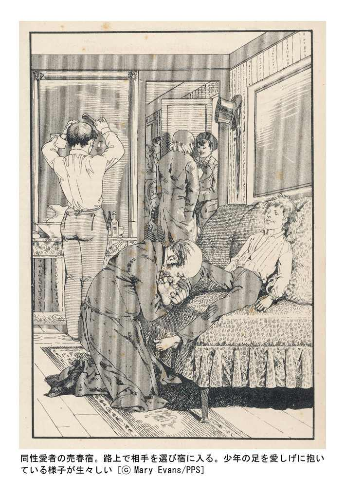

| 世界ボーイズラブ大全 「耽美」と「少年愛」と「悦楽」の罠: 7 (桐生操の世界大全) | |
| 桐生 操 | |
| (2012) | |
文春ウェブ文庫
世界ボーイズラブ大全
「耽美」と「少年愛」と「悦楽」の罠
桐生 操
ボーイズラブ（ＢＬ）、少年愛、やおい、ＪＵＮＥ、腐女子......。一時のブームは過ぎたとはいえ、これらの言葉はもはや日本の活字文化のなかにしっかりと根を下ろしたのではないだろうか。
少女たちにボーイズラブのどんなところが好きかと問えば、様々な答えが返ってくる。たとえば、「好きな男子が女子とラブラブになるのはイヤだけど相手が男子なら許せる」とか、「障害を乗り越えようと葛藤するところに生じるスリルとサスペンスが魅力」だとか......。
確かに近年、急速に社会での市民権を得たとはいえ、同性愛者であることをカミングアウトすることは、数年前まではかなり勇気のいることだった。西洋史でもキリスト教の台頭以来、同性愛は不毛の性として長きにわたって迫害されてきた苦い歴史がある。
しかし歴史をひもといてみれば、西洋でも日本でも同性愛が市民権を得て、もっとおおらかに堂々と存在していた時代があるのだ。
たとえば古代ギリシア時代、少年愛は高貴なものと考えられ、均整のとれた青年の肉体は最も美しいものとして称賛されていた。のちに西欧文明が男女の愛を理想化するように、古代ギリシアの人々は同性愛を理想的な愛の形としたのである。
日本でもかつて同性愛は「衆道」とか「男色」とか呼ばれ、社会制度にごく自然なかたちで組み込まれていた。戦国武将は妻妾を持つ一方で、小姓と名付けられた美少年と愛を交わすのをごく当然の習わしとしていたし、女人禁制の仏教寺院の僧侶たちは稚児とか喝食とか呼ばれる美少年を侍らせ、身辺の世話をさせたり性の対象として愛玩した。
さらに「稚児信仰」なるものまで存在していた。昔から日本では神霊は幼児の姿を借りて顕れるとされており、神仏の顕現である稚児との肉体の交わり自体を神聖なものだと考えたのである。
しかし西欧ではキリスト教の台頭以来、同性愛者は罪人扱いされたり病人扱いされて苦難の歴史を歩んできた。彼らが人間として当然の権利を勝ち取るには、何世紀にもわたる様々な抵抗や社会運動を経なければならなかった。
だが実際問題として、いつの時代でも何処の国にも、同性愛者はつねに存在していた。古くは文豪シェイクスピアから、オスカー・ワイルド、ポール・ヴェルレーヌ、アルチュール・ランボー、ジャン・コクトー、アンドレ・ジッド、トーマス・マン、Ｄ・Ｈ・ロレンス、マルセル・プルースト、テネシー・ウィリアムズ、トルーマン・カポーティ、ジャン・ジュネなどなど......、世界文学全集に名前の入るような一流文学者のなかに同性愛者は目白押しである。
少年の美は男でも女でもない、その狭間にある美しさだと言えるかも知れない。そのどちらに少し傾いても微妙な均衡が破れてしまう、ぎりぎりの処にある危険な美しさだと......。
さらにまた少年の美は、刹那の美であるとも言える。たとえば日本の江戸時代には「お小姓の命は長うて三年」という隻句があり、古代ギリシアのストラトンの『ギリシア詞華集』でも、「十二歳の花の盛りの少年は甘美だが、それとて十三の少年ほどには欲情をそそらない。（略）十六の少年だと神々の相手が相応しいし、十七の少年となると、わたしの相手というよりゼウス神の相手こそがお似合いだ」などと歌われている。
このようにごく短い期間、花火のように輝くのが、少年の美なのである。つかのま花開き、またあっというまに儚く散ってしまう。だからこそ当時の人々はそこに、人生の理想であり真実であるまことの美の姿をみたのではないだろうか。
桐生 操
目 次
●少年の精液授与の行為
●性的欲求をはらす相手は少年だけ
●第三の性「二つの魂を持つもの」
●少年愛は高貴な「天上愛」
●同性愛の愛人同士の軍隊
●残酷な僣主の心を動かした美談
●家の贅沢品としての「快楽の子」
●美少年奴隷への寵愛 ハドリアヌス帝
●犯される処女の叫びと呻き声を真似した ネロ
●ペニスを吸い、嚙み、撫でる、〝稚魚〟の少年たち ティベリウス帝
●テンプル騎士団弾圧～同性愛「不寛容の時代」へ
●処刑方法は四つん這いで尻の穴に焼いた鉄棒 エドワード二世
●少年たちへの残酷な拷問と殺戮 ジル・ド・レ男爵
●美しい騎士を愛した夫への妻の復讐 ピエール・スタニェール
●強まる同性愛の禁忌 目をくり抜かれたり、手足を切断された男色者たち
●美少年を好んで弟子にした レオナルド・ダ・ヴィンチ
●女体に価値を見いださなかった理由 ミケランジェロ
●出世作は美貌の若者に捧げた恋愛詩 シェイクスピア
●美男ばかりのハーレム「両性具有の島」 アンリ三世
●数年間も王妃を処女のままにした、女嫌い ルイ十三世
●男色者一掃に乗り出した「風俗向上協会」
●政治的野心を持たないように女装させられた オルレアン公フィリップ
●愛人の頸がはねられるのを無理矢理見せられた フリードリヒ大王
●存続した「男色処罰法」と罰則
●少年と鍵をかけた部屋に閉じこもった醜聞で追放された ベックフォード
●容貌の劣るものを極度に嫌った「童貞王」 ルートヴィヒ二世①
●王の体力についていけなくなった愛人 ルートヴィヒ二世②
●「肉体的愛は呪われよ。厳かに破門宣告を」 ルートヴィヒ二世③
●少年売春宿の顧客名簿にあった王子の名前
●同性愛に寛容だったフランス
●醜い容貌の詩人の相手は娼婦のみ ヴェルレーヌとランボー①
●「女の愛は過ぎ去るが、男の愛は不滅だ」 ヴェルレーヌとランボー②
●男娼館に出入りする不良少年との出会い オスカー・ワイルド①
●突きつけられた「美少年愛」の証拠 オスカー・ワイルド②
●稀代のホモ・スキャンダル オイレンブルク事件①
●性的奉仕で金を貰ったと証言した牛乳屋 オイレンブルク事件②
●美貌だけではなく才能のある少年を愛した ジャン・コクトー①
●『肉体の悪魔』が生まれる裏で ジャン・コクトー②
●幾度となく繰り返される痴話喧嘩 ジャン・コクトー③
●娼婦たちに対する激しい嫌悪 アンドレ・ジッド①
●褐色の少年から教わった同性愛の快楽 アンドレ・ジッド②
●愛する美少年を教育し、導きたかった頂上 アンドレ・ジッド③
●同性同士の肉体関係は「純潔」、成長してからのそれは「悪徳」 プルースト①
●性行為に必要だったのは、覗き見と冒瀆とサディズム プルースト②
●有望な作曲家との恋愛関係 プルースト③
●決闘で男らしさを示した同性愛者 プルースト④
●お眼鏡にかなった褐色の髪と夢見るような瞳をした美青年 プルースト⑤
●『失われた時を求めて』の同性愛者のモデルとされる モンテスキウ伯爵①
●自分の身代わりに捧げた美貌のピアニスト モンテスキウ伯爵②
●「あなたに一生、身体と魂を捧げます」と誓った男性秘書 モンテスキウ伯爵③
●男色家の男爵のモデルは誰か？ モンテスキウ伯爵④
●必要だった社会的に力を持つ者の庇護 ニジンスキー①
●ニンフを逃した牧神がマスターベーションするシーン ニジンスキー②
●男性パトロンとの決別と知ることになる現実 ニジンスキー③
●同性愛は根無し草のようなもの トーマス・マン①
●妄想の中の強く激しい美少年愛 トーマス・マン②
●焼却された日記の中身 トーマス・マン③
●養護施設での初めての性体験 ジャン・ジュネ①
●パリの若いおかまの世界 ジャン・ジュネ②
●同性愛者や芸術愛好家たちに直接販売されたデビュー作 ジャン・ジュネ③
●次々に現れる年下の新しい恋人 ジャン・ジュネ④
●フランス大統領への恩赦嘆願書 ジャン・ジュネ⑤
●同性愛者の権利運動
●初めて男性に抱かれ震えていた頃 テネシー・ウィリアムズ①
●美少年から美少年への華麗な愛の遍歴 テネシー・ウィリアムズ②
●「小馬」というあだ名をつけた男との生涯の恋 テネシー・ウィリアムズ③
●創作意欲を消した愛人の死 テネシー・ウィリアムズ④
●家族の愛情には恵まれずに カポーティ①
●二十四歳歳上の初めての同性愛の相手 カポーティ②
●第二の恋人も歳上だった カポーティ③
●『冷血』での成功と作家としての名声 カポーティ④
●繰り返される男性遍歴と破滅 カポーティ⑤
●「男色」の系譜
●女装した姿で戯れる ヤマトタケル
●日本の文献で最初の男色の話？ 「阿豆那比の罪」
●『万葉集』に隠された同性愛の歌 大伴家持
●日本の男色の元祖は誰か？ 稚児
●僧侶と稚児のエピソード 仁和寺覚性
●一目惚れした少年を無理矢理出家させた 増誉
●仏教説話の稚児物語 梅若丸
●美女だけでなく美少年も愛した 白河院
●文武両道で美形であることが条件 西行
●一族を取り込む男色関係 藤原頼長
●若くして散った悲劇の美少年 平敦盛
●ＳＭとＢＬがほどよく混ざり合う 源義経
●青年将軍と美少年猿楽師 世阿弥
●「浄愛」の世界 小姓制度
●神の創造物のなかで最上のものは美少年たち 大内義隆
●男色の噂はつきない大武将 武田信玄
●美少年好きらしきエピソード 上杉謙信
●寵童にあてた手紙 伊達政宗
●戦国の三大美少年 不破万作
●亡き主君の後を追い切腹した理由 品川左門
●妻たちの反乱～夫の同性愛を受け入れられるか？ 節姫
●元服前の青年の前髪の色香 若衆歌舞伎
●美少年が踊った「風流踊」 徳川家光
●美少年と将軍 徳川綱吉
●陰間①
●陰間②
タイトルをクリックするとその文章が表示されます。
少年の精液授与の行為
同性愛は古代から、世界のいたるところに存在していた。特に有名なのがニューギニア東部高地に住む未開民族のあいだで綿々と続けられてきた、すべての男性に義務づけられる通過儀礼としての同性愛であろう。
たとえばサンビア族には他のニューギニア高地社会と同様、男性秘密結社があり、少年が大人になるには、そこで何段階にもわたるイニシエーション儀礼を通過せねばならなかった。
それはだいたい七～十歳のころにはじまり、結婚が成就するまで六段階にわたって行なわれた。彼らのあいだでは女性は不浄な存在とされており、男子は母親から強制的に引き離し、通過儀礼を経ることでしか一人前の大人になれないと信じられていた。
秘密結社の集会所に連れてこられた少年は、女親からの影響を取り除くために厳しい試練を課せられる。最初のそれは、鼻からの流血という激しい痛みをともなう儀礼である。これは少年の身体にしみついた女親世界の「穢れ」を取り除くためであると同時に、少年の勇敢さや忍耐強さを試す行為でもあった。
こうして身体を清められた少年は森のなかに用意された神聖な部屋に導かれ、そこで年長の同性を相手にフェラチオ行為を行なうことを命じられる。そしてこの秘密を女子供に洩らせば命はないと脅され、永遠に秘密を守り続けることを誓うのだ。
ここからわかるように、この通過儀礼でもっとも重要なのは、精液授与の行為である。
彼らは、人間のからだは生まれつき精液を作ることはできないため、体外から与えられなければならないと信じている。少年期から数回にわたって定期的に繰り返される精液授与の儀式のみが、少年を一人前の男にし、生殖能力を授けるのだと信じているのだ。
こうして少年たちは十五歳ぐらいになるまでは、精液の受け手となり、その後今度は自分が年少者に精液を与える側に回る。この精液を与える側と受けとる側の関係は、彼らのあいだでは「結婚」とみなされたという。
性的欲求をはらす相手は少年だけ
さらに目をアフリカに転じれば、スーダン南部に住むアザンデ族のあいだにも同性愛の習慣は存在していた。アザンデ族の女性は結婚相手が生まれながらに決まっている場合が多く、しかも若い男性はまだ花嫁を迎えるに十分な経済力もない。
かといって女性と不義密通すれば、身体の一部を切断されるという極刑が待っている。そこで若い独身男性が性的欲望をみたすには、同性の少年を相手に選ぶほかはなく、これは社会的にも合法と認められていた。
またアザンデ王室の王子には、何処に行くときも付き従う忠実な従者という存在があった。従者は王子のために料理や掃除もこなし、戦いのときは戦士として王子とともに戦い、さらに性の相手もつとめたという。従者は王子より若い少年である場合が多く、まるで夫が妻を愛するように王子は従者を寵愛したといわれる。
第三の性「二つの魂を持つもの」
さらに、植民地化以前のネイティヴ・アメリカンの部族には、「二つの魂を持つもの」という存在があった。日本ではおかまとか陰間とか呼ばれてきた、いわゆる第三の性である。この習慣は百以上の部族に広まっていた。たいてい女装した男性の場合が多いが、たまに男装した女性も存在した。
彼ら（男性の場合）は家事や手芸や所帯の切り盛りなど女性の役割を受け持ち、女性の服装や装身具をまとっており、仕種や声も女性的で、多くが同性愛者であった。彼らの多くは語り部や治癒師（ヒーラー）の能力を有していたという。
その典型的な例としてウィーワという有名な人物がいた。女装した男性だが、ズーニー族のなかでも高い発言力をもち、頭脳明晰で進歩的な考えをしていた。ごく幼いときから女装することを好み、料理や掃除をしたがり、同性と性的関係を持ったという。
ウィーワはワシントン・Ｄ・Ｃの上流社会でインディアン・プリンセスとして厚遇され、一八八六年にはアメリカ大統領（Ｓ・グローヴァー・クリーヴランド）と握手したという経歴もある。彼のおかげで、ズーニー族はアメリカ人たちと友好的な関係を持つことができたのである。
少年愛は高貴な「天上愛」
古代ギリシアにおいても、同性愛は広く行なわれていた。古代ギリシアでは、少年愛は高貴なものとして捉えられていた。当時、少年は成長すると母親から引き離されて体育館で肉体の鍛練を行なうことが義務とされ、均整のとれた青年の肉体はもっとも美しいものとして称賛されたのである。
古代ギリシア時代、いわゆる異性間の愛情は、精神よりも肉体を愛するもので、束の間の肉体的快楽を与えるだけで、卑俗なものとして軽蔑された。
それに対して少年愛は、愛を通じて心に美徳を育み、社会の団結や名誉をもたらし、世界の調和を形作る「天上愛」だとして讃えられたのだ。
政治家で大詩人のソロンも、「丈夫な胃袋と脇腹と足をもち、少年や女の若々しい魅力をときたま楽しむことができる者の幸せは、大富豪の富にも決して劣るものではない」と詩のなかで歌っている。
ソロンは法律を作って学校や格闘技場から同性愛を排除しようとしたのだが、それも『プルターク英雄伝』によると、何も同性愛を抹殺しようとしたわけではなく、むしろそれを身分の低い人々に禁じて、身分ある人々のあいだの独占物にしようとしたのだそうだ。
同性愛の愛人同士の軍隊
紀元前四世紀のギリシアにはなんと、同性愛の愛人同士ばかりで形成された軍隊まで存在した。
プラトンは『饗宴』のなかで、「愛人同士ばかりから成る国家や軍隊が生まれれば、彼らの統治はまさに最良のものとなろう。おのおのが愛人のそばで戦うならば、たとえ少人数であろうと、極言するなら世界を敵に回しても勝つことができるだろう」と述べている。
つまり人間は愛するもののまえでは臆病なところをみせたくない。愛するもののまえでは自分のもっとも高潔な部分をみせたい、少なくとも死を恐れている自分をみせたくはないと思うもの。さらに愛するものが危険にさらされれば、命をかけて守ろうとするはずだ......。要するにこの軍隊は、そういう人間の本性を利用したものであった。
実際に古代ギリシアには、そのような軍隊が存在した。テバイ（テーベ）における「神聖隊」という三百人の愛人たちで編成された軍隊である。彼らは戦いの前には、決まってエロスの神に供物を捧げたという。
彼らはつねに愛人とともに相並んで戦い続けた。勝利につぐ勝利を重ねて勇名を天下に轟かせたが、アテネ軍とテバイ軍が主力だったギリシア連合軍が、マケドニア軍に敗北したカイロネイアの戦いで、全員が壮絶な戦死を遂げることになる。
戦闘後、戦死者たちを検分していた征服者フィリッポス王は、相並んで倒れふす三百人の愛人たちの屍のところに来ると足をとめた。そしてそれが同性愛者とその愛人たちであることを聞くと、感動の涙を流してこう述べたと伝えられる。
「この人々が成したことに些かでも恥ずべきことがあったと疑うような連中は、おそらくみじめな死を迎えることだろう」
残酷な僣主の心を動かした美談
同性愛者たちに関する美談といえば、紀元前六世紀、シチリア島のアグリンゲントゥムにおける「カリトンとメラニッポス」という二人の愛人たちに関する逸話もある。
当時のアグリンゲントゥムは、犠牲者を青銅の牛のなかに閉じ込めて燃やしたと伝えられる、悪逆非道な僣主パラリスによって統治されていた。
そこに住む美少年メラニッポスと青年カリトンは、互いに深く愛し合う仲だった。あるときメラニッポスは裁判で不当な扱いを受けたことに憤慨し、同士をつのって僣主パラリスの暗殺を計画した。
計画を打ち明けられたカリトンは、あまりの無謀さに驚愕し、決行を思い止まるようにと少年を説得した。が、相手が耳を貸そうとしないので、彼はメラニッポスを危ない目にあわせないためには、自分がパラリス暗殺を決行するほかはないと思い詰める。しかし短剣を手にパラリスを襲ったが、不覚にも警護する衛兵たちに捉えられてしまった。
パラリスはカリトンを残酷な拷問にかけて共犯者の名を白状させようとしたが、カリトンは長時間にわたる拷問を雄々しく耐え続け、絶対にメラニッポスの名をあかさなかった。ところがそうするうちに、メラニッポスが自らパラリスのもとにあらわれ、自分こそがこの陰謀の首謀者であり、罰せられるべきは自分であると告白したのである。
こうして命を捨てて互いをかばいあう愛人たちの行為は、残酷な僣主の心にも深い感動を与えた。結局パラリスは、ただシチリア島を永遠に去ることだけを条件に、二人を釈放したという。
アテナイオスによると、太陽神アポロンはこの二人を「はかなき命の人間どもに神の愛を教示したものたち」と讃え、二人の愛は人間にとって模範として仰がれるものだと賞賛したとされる。
家の贅沢品としての「快楽の子」
古代ローマでも同性愛は盛んだったが、当時は同性の売春が流行し、ある意味で同性愛が低俗化したと言うこともできるだろう。世界で最初に自由身分の少年を去勢して売ったのは、キオスのパニオニオスという人物だった。彼は美貌の少年を買い取って去勢しては奴隷市場につれていき、高値で売り払ったといわれる。
宦官には三種類あり、それぞれ売春料金は違っていた。人数がいちばん多かったのは性器をすべて取り去ったカストラティで、その他に性器を一部残したスパドネスと、睾丸をひねりつぶしたツリビアエというのがいた。
売春する少年は十二歳以上がほとんどで、十六～十七歳が最高とされ、十八歳になるともう落ち目だった。裕福なローマ貴族は皇帝たちにならって、自宅用に愛らしい少年奴隷を買い入れた。
彼らは「快楽の子」とよばれ、家の調度品と同じ贅沢品だったが、その多くが奴隷商人によって外国から輸入され、ローマの奴隷市場で買われたものたちであった。
台のうえに立たされた少年たちは、集まった観衆の面前でそそるようなポーズをとってみせたり、甘え声を出してみせるのだった。特にローマ人が愛好したのは、鳥がさえずるような声をもつ、エジプト、シリア、ムーア、アレクサンドリアの少年たちだった。
こうして裕福な邸に買われた少年たちは、性的快楽の道具であると同時に、饗宴の席にはべって歌ったり踊ったりすることで、主人の客たちをも楽しませた。客たちの手足を洗い、皿を運び、ハエを追い払うのも彼らの役目である。少年たちの長い髪はとくに、客たちが食事のあと洗った手を拭くのに役立ったとされる。
美少年奴隷への寵愛 ハドリアヌス帝
古代ローマ皇帝たちのあいだにも同性愛は蔓延していた。たとえば紀元二〇〇年ごろのローマ皇帝、ヘリオガバルスも同性愛者だった。彼は女装が趣味で、いつも絹と金糸で縫い取りした地面にひきずるような女のドレスを着て、昔の白粉にあたる白鉛を顔につけ、眉墨をつけ頰には紅をはたき、女物の冠をいただいて、人々に自分を女王と呼ばせるのだった。
また、王宮内に特別な部屋をもうけ、そこで全裸になってしなをつくり、甘えた声をだして娼婦になりきり、こっそり招き入れられた卑しい奴隷たちにつぎつぎと身をまかせ、金を要求したという。
あげくは荒くれの奴隷に惚れ込んで彼を夫と呼んで寵愛し、はては彼の要求に従って、アレクサンドリアの医者を招いて最新の切開手術をうけ、下腹に女の性器をつくらせたともいわれる。
五賢帝の一人であるハドリアヌス帝も、アンティノウスという美少年奴隷を寵愛した。アンティノウスはビテュニアのクラウディオポリス出身。西暦一二四年、彼の郷土で少年をみかけたときから、ハドリアヌス帝はその絶世の美貌にひかれ、宮廷に迎えて片時もはなさず寵愛するようになった。
エジプトで発見されたパピルス紙に、ライオン狩りを描写する四十行の詩が書き留められたものがある。狩りにはハリドアヌス帝とアンティノウスが参加し、帝は命を賭けて獰猛なライオンの歯牙から少年を救い出したというから、その執心ぶりが窺われる。
アンティノウスは若い盛りに夭折するが、その理由はつぎのようだったと推察されている。ハドリアヌス帝は予言や魔術の愛好者だったが、皇帝としての任務を完成させるために、自らの寿命を延ばしたいと望んだ。
すると魔術師らは、彼の身代わりになって死ぬ男が必要だと主張した。他の奴隷たちは恐れおののいてそれを拒否したが、アンティノウスだけが生贄になることを甘受したというのである。
かくてアンティノウスは、皇帝の寿命をのばすための人身御供として捧げられる。ハドリアヌス帝は彼の死を深く悲しみ、彼を厚く弔って、アンティノオポリスという都をつくり、アンティノウスをその守護神とした。そしてローマ帝国のあらゆる都市にアンティノウスの彫像や胸像を安置したといわれる。
犯される処女の叫びと呻き声を真似した ネロ
同性愛といえば、かの暴君ネロ（三七～六八）は両刀遣いだったようだ。西暦六五年、美貌の妃ポッパエアが二度目の妊娠をしたときのこと。酒宴からもどってきたネロと身重のポッパエアのあいだで口論がはじまり、酔っぱらっていたネロは思わずカッとして妻を蹴ってしまったのである。
ポッパエアは流産し、出血過多であっけなく世を去った。ネロの嘆きはことのほか深く、国葬が営まれ、ネロみずからが追悼演説を行ない、ポッパエアを「神なる子の母」と呼んでその死を惜しんだものだ。
ネロがなかなかポッパエアを忘れられないので、お気に入りの文学者ペトロニウスは、彼女にそっくりのスポルスという少年をネロのもとに送り込んだ。ネロはスポルスをサビナという女名に変えさせ、去勢させ、性転換をほどこしたといわれる。
パラティウムの宮殿でネロは少年に赤い花嫁のベールをかぶらせ、おごそかに「結婚式」を行ない、その後、実際に夫婦として暮らすようになった。しかしいかに亡き妻とそっくりだったとはいえ、所詮、本物とは違い、一年とたたぬうちにネロの少年への興味は冷めた。
満たされないネロはますます荒れて、無茶苦茶な性的乱交に手を染めていく。ネロは新しいゲームを考えだした。生贄の男女を裸にして柱に縛りつけ、自分は虎やライオンの毛皮を身につけ、彼らにとびかかって、性器を食らうふりをするのだ。この悪趣味なゲームは、ネロが付き人のドリュポルスに後ろから犯されて幕となるのだった。
スエトニウスによると、ネロは自分が花嫁、ドリュポルスが花婿となって、「結婚式」をあげ、処女破瓜の儀式では、犯される処女の叫びと呻き声を真似したという。
ペニスを吸い、嚙み、撫でる、〝稚魚〟の少年たち ティベリウス帝
ティベリウス帝（前四二～後三七）もまた、両刀遣いで知られている。カプリ島に隠棲したティベリウス帝が最初にやったことは、性的乱交をほしいままにする大売春宿を建造することだった。
やがてローマ帝国各地の街や村に、奴隷部隊が出動しはじめた。皇帝御用達の売春宿のために、美少年や美少女を駆り集めるのである。親が皇帝のお召しを拒んだりすると、数日後に、その子供は姿を消してしまうのだった。どんなに親が嘆き悲しもうと、二度と戻ってはこなかった。
齢八十に手が届こうとしていたティベリウスは、異常きわまる行為で性の残り火を燃えたたせようとしたのだった。
現代も観光地として名高いカプリ島の洞窟の、卑猥な彫像で飾られた岩壁のあいだを、松明に照らされながらティベリウスが愛らしい子供たちの群のあいだを泳ぐ姿がよくみられた。皇帝が「稚魚」と呼ぶ子供たちは、ときおり水にもぐっては、皇帝のペニスを吸い、嚙み、撫でるのだった。
さらに「寝椅子の間」では、二人の少女と一人の少年、あるいは二人の少年と一人の少女が、それぞれ裸になって、ありとあらゆる体位でかわるがわる交わってみせる。また島の庭園や洞窟のいたるところには、魔窟がもうけられ、そこでは牧神や水の精に扮した少年少女たちが訪れる人々に身をまかせるのだった。
ティベリウス帝は性的欲望を感じると、神聖な式の最中でもかまわず、少年僧を押し倒し、思いを遂げるのだった。抵抗でもしようものなら、大変な目にあわされる。あるとき儀式の途中で突然ティベリウス帝から床に押し倒された少年僧は、抗議したため足を叩き折られてしまった。
テンプル騎士団弾圧～同性愛「不寛容の時代」へ
キリスト教が西欧世界に浸透するにつれ、性に対する態度は不寛容へと大きく変化していく。聖アウグスチヌスは禁欲的な教義を提起し、同性愛も自然に反するもので、神への大罪だとして激しく非難した。
同性愛に対して「寛大な時代」から「不寛容な時代」への変遷を象徴するものとされているのが、仏王フィリップ四世による一三〇七年の「テンプル騎士団弾圧事件」である。
テンプル騎士団はもともとは聖地エルサレムを異教徒の手から守るためにフランスの騎士ユーグ・ド・パイアンと八人の同士によって、一一一八年に作られた宗教結社である。エルサレムを攻略した十字軍兵士らはわずかな守備隊を残して故郷に帰ってしまったため、手薄になった防備をテンプル騎士団が自ら引き受けようとしたのである。
一一二八年、フランスのトロワで開かれた教会会議で、テンプル騎士団は教皇ホノリウス二世によって正式に騎士修道会として認可される。聖地維持のために貢献したいと願った王侯貴族から多額の寄進を受け、テンプル騎士団は富と軍事力を持つ巨大組織に成長していく。騎士団は金融業にも手をだし、信用と財力にものをいわせ、やがてはゆうに国王を上回る勢力を持つようになった。たとえば当時テンプル騎士団の全ヨーロッパにおける年貢は五千四百万フランだが、これは国家の歳入をこえている。
プロヴァンス、シャンパーニュ、イングランド、トスカナ、ラングドック＝ルシヨンなどが、ヨーロッパ内のテンプル騎士団の勢力の中心地となった。最盛期には彼らの所有する不動産や城や教会は、バルト海から地中海まで、大西洋岸から聖地にまでおよんだ。法王領内の公金の取り扱いや遠隔地への送金なども、すべて彼らの組織が握っていたと言っても過言ではない。
しかしここまで絶大な勢力を握ってしまうと、当然ながらそれをやっかむ者も現れてくる。十三世紀末当時、フランス国王フィリップ四世（美男王）は、ひんぱんな戦いでの戦費がかさみ、国庫の深刻な赤字に頭を悩ませていた。その対策として強制公債をかけたり、貨幣価値を切り下げたり、フランス国内からユダヤ人を追放して彼らの財産を没収したりという、過酷な金融政策を行なった。
さらにフィリップ四世は、ローマ教皇クレメンス五世を事実上の傀儡に変え、フランスの教会が集めた十分の一税を五年間自分が保有する権利や、新法王をアヴィニョンに住まわせ、常に監視下に置く権利などを、無理やり教皇からかすめとった。世に言う「アヴィニョンの幽囚」である。
こうして絶大な権力を手に入れたフィリップ四世がつぎにとった行動が驚くべきものだった。なんと一三〇七年十月十三日、フランス全土に在住するテンプル騎士団員の総勢五千名が一斉に逮捕されたのである。捉えられた騎士団員らには、フィリップ四世の望みどおりの自白を引き出すために、過酷な拷問が加えられた。
パリ市内だけでも逮捕後、三十六名の騎士たちが早々に拷問死している。食べ物も与えられず激しく鞭打たれたり、両足を骨だけになるまで焼かれたり、両腕両足を付け根からはずれるまで拷問台のうえでひっぱられたり、後ろ手に縛られてつるされ両肩の骨が重みに耐えかねて折れてしまったものもいた。
このとき彼らは、「宗教的儀式にかこつけて十字架を踏みにじり、キリストを否認し、神を冒瀆する宗教活動を行なった」とか「悪魔の夜宴とよばれるサバトを行ない、悪魔やそのおぞましい配下の牝夢魔らと許されぬ性交を結んだ」などの嫌疑をかけられたが、それらのなかに、実は「騎士団員の大半が男色の罪に身をひたしていた」という嫌疑があったのである。
一説によると、新入団者は入団のとき、男色の実行を強制されたという話もある。また、入団式のとき、新入団者は全身を洗い清め、宗団の掟を守ることを誓い、団員の質問にひととおり答えてから、バフォメットという奇怪な偶像をおがみ、宗団の長老から接吻を受けるのだが、問題なのはその接吻で、口だけでなく、おなかやヘソや、果ては性器にまで与えられたというのである。
歴史学者ジョン・ボズウェルは、テンプル騎士団弾圧を、ゲイに対する弾圧というとらえ方をしている。そこからこの弾圧をホモセクシュアルに対する寛容から不寛容の時代への変遷の一つの象徴としてとらえるのも、あるいは一つの見方かも知れない。
処刑方法は四つん這いで尻の穴に焼いた鉄棒 エドワード二世
ちょうどテンプル騎士団への告発がはじまる一三〇七年に、海の向こうのイギリスではエドワード二世が即位したが、彼はテンプル騎士団に対して好意的で、最後まで告発には反対だったようだ。法王からの教書でテンプル騎士団員を逮捕することを強いられたときも、フィリップ四世が行なったような過酷な拷問は実施していない。
実のところ、エドワード二世自身が同性愛者で、とてもテンプル騎士団員を告発するどころではなかったのかも知れない。
エドワード二世は幼いときギャブストンという少年をお遊び相手として付けられたのだが、エドワードはこの美少年に夢中になり、夜も昼も彼なしで過ごせなくなった。息子の心酔ぶりを案じて、父のエドワード一世はギャブストンを追放してしまったほどである。
悲嘆にくれたエドワードだが、父の死後、自分がエドワード二世として即位すると、ただちにギャブストンを呼び戻してコンウォール伯に任命した。それからギャブストンは、彼の公然たる寵臣となったのである。
一三〇八年、二十四歳になったエドワードは、まだ十二歳のフランス王女イザベラを妻に迎える。ギャブストンも一応結婚はしたが、国王も彼も妻はないがしろにして、互いの関係は強まるばかりだった。
エドワードとイザベラはフランスで結婚式を挙げたが、このときエドワードは舅のフランス国王フィリップ四世から贈られた結婚の贈り物をすべて、ギャブストンへの贈り物として本国に送ってしまったという。
新郎新婦を乗せた船がフランスに到着すると、エドワードは船から降りるのも早々に、待ち受けていたギャブストンの胸に飛び込んだ。甲板でこれをみていたイザベラの驚きがどんなものだったかは、察するにあまりある。
そのうえ戴冠式では、王妃が座るべき席にギャブストンが座り、冠をかぶり国王と手を握りあっていたので、出席者は皆あっけにとられた。さらに戴冠式に際して作らせたタペストリーには、国王王妃の紋章ではなくエドワードとギャブストンの紋章が描かれていたとあっては、もはや何をかいわんやである。
それでもまだ若い王妃は、この屈辱に耐え続けた。けれど四年後、エドワードがギャブストンを摂政にしたことで周囲の怒りが爆発し、大貴族グループが反逆を起こしギャブストンを殺害してしまう。
ショックを受けたエドワードはそれからしばらくはイザベラへの操を守っていたが、八年後に、またも同性愛に溺れることになる。今度の相手はヒュー・デスペンサーという寵臣だった。しかも驚いたことにヒュー・デスペンサーは同名の父と子で、王は父と子の両方を一度に愛人にしたのである。
しかしすでに二十五歳になっていた王妃イザベラは、以前のように夫の仕打ちをただ指をくわえて見てはいなかった。彼女は復讐を企てる。夫を殺害し、彼とのあいだに生まれた王子を王位につけようと企んだのである。
さらにこのとき、イザベラにもロジャー・モーティマーという愛人がいた。ギャブストン暗殺のときエドワードが捕らえた貴族グループの一人で、幽閉されたロンドン塔を脱出し、パリに亡命していたのである。
フランスを訪れたイザベラとそこで出会い、二人は愛し合うようになった。それまで女性的な夫しか知らなかったイザベラは初めて、四十代初めの逞しい歴戦の武将の肉体を知ったのである。
それまで対スコットランド戦の英雄だったモーティマーは、一変エドワードを不倶戴天の敵として軍を率いてイングランドに上陸。かねて国王に不満を抱いていたロンドンの貴族たちも呼応して蜂起したので、エドワードの軍はあっけなく敗北した。
デスペンサー親子は捕らえられ、イザベラの目前で性器を切り取られ、はらわたをえぐられるという残酷な処刑をされた。エドワード自身も捕らえられて退位させられ、その後はまだ王子が年少だったため、イザベラとモーティマーが共同でイギリスを統治することになった。
だが廃位させられた前国王のもとにしだいに不満貴族が集まるようになったため、イザベラとモーティマーは前国王を殺害することを決意する。エドワードは四つん這いにさせられ、肛門に焼いた鉄棒を突き入れて殺されたという。
年代記は「彼の恥ずべき快楽を得た部分」が焼かれたと記している。『ホモセクシャルの世界史』（文春文庫）を書いた海野弘氏は、デスペンサーが性器を切られ、王が肛門を焼かれたということは、国王がこの男色の関係では受け身だったのではないかと推量しているのだが......。
少年たちへの残酷な拷問と殺戮 ジル・ド・レ男爵
中世の同性愛者といえば、思い出されるのが十五世紀フランスに生きたジル・ド・レ男爵であろう。ただし彼の場合は、同性愛者たることより少年たちに対して行なった残酷な拷問と殺戮のほうで、すっかり有名になってしまったのだが。
シャルル・ペロー作の童話『青ひげ』は、自分の花嫁になる女性をつぎつぎと殺していく青ひげ公爵の話、じつはこの『青ひげ』のモデルになったのがジル・ド・レ男爵で、ただし彼が殺したのは花嫁ではなくて数百人の少年たちであった。
ジル・ド・レの生きたのは、英国とフランスのあいだでフランス王位継承を争ういわゆる「百年戦争」の時代。パリがイギリス軍の手に落ち、当時のフランスで最重要なオルレアンの町も陥落寸前の状態にあったとき突然登場した聖処女ジャンヌ・ダルク。ジル・ド・レは、そのジャンヌに仕える武将だったのだ。一四〇四年、ブルターニュ地方の大貴族の家系に生まれ、文学や芸術にも造詣深い、当時有数の教養人でもあった。
戦場で獅子奮迅の働きをみせたジル・ド・レだったが、戦いが終わり、亡き祖父の遺産を受け継いでフランス有数の金持ちになってからは、贅沢と酒色に溺れ、残虐な快楽に溺れるようになる。
彼は自費で立派な聖堂を設立し、聖歌隊を作って美しい声と容貌を持つ少年を全国からかき集めた。けれど実のところ、少年たちは信仰に生きるどころか、ジルのみだらな宴で、彼の欲望に身を捧げることを強いられたのだ。
酒と美食で性欲をかきたてられた客たちは、ときにその場で少年を床に押し倒して、ことにおよぶこともあった。それを不快に思うどころか、自分のものである少年たちが目の前で客に弄ばれるのを、ジル・ド・レは倒錯した快感で見守っていたのだ。
乱費が身についたジル・ド・レは、祖父から譲られた莫大な財産をあっというまに使い果たしてしまった。その後は誰彼かまわず借金を重ね、それも足りなくなると家宝や宝石を質にいれ、今度は町を売り村を売り、城を売ってしまった。
それでも金に窮すると、ジル・ド・レは藁をもすがる思いで、錬金術に熱中するようになる。しかしつぎつぎと錬金術師が招かれて実験を重ねても、当然ながら黄金も悪魔も現れはしなかった。
ところが一四三九年、ジル・ド・レの運命を変える一人の男が登場する。イタリアからやってきた錬金術と降魔術の大家、僧侶プレラーティである。彼はジル・ド・レに、悪魔を呼び出すには少年の生き血を捧げる必要があるとそそのかしたのだ。
このころからジル・ド・レの居城では、おびただしい数の少年たちが殺されていった。彼の手で残虐な拷問にかかって殺された少年たちの数は、百人とも八百人ともいわれる。
少年たちはみな貧しい家の出で、誘拐されるか買い取られてきて、はじめ自分を幸運だと信じていた。なにしろ領主に目をかけられたのだ。彼らの家には幼い子供が沢山いて、食べるものもなく、汚いぼろをまとい煤けたぼろ家に身を寄せ合って暮らしていた。
当時貧しさから抜け出すには二つの道しかなかった。教会に入るか、あるいは美貌の場合は領主に目をかけられ小姓として引き取られるか......。彼らにとって「小姓」という言葉は希望の響きに満ちていた。こうして貧しい家の子供たちが、つぎつぎと行方不明になりはじめた......。
誘拐された少年が城に到着すると、風呂で洗い清められて髪をとかされ、新しい服を着せられた。夢をみているような心持ちで、少年は召使につれられて偉い領主さまの部屋に向かう。ジルは少年に優しく話しかけ、はじめは緊張していた少年もしだいに緊張が解けていく。
ジルはゆっくり時間をかけるのを好んだ。満足をできるだけ先に延ばそうとしたのだ。少年がだんだん自らの幸運に慣れていくのをみるのは楽しいものだった。菓子を与えられ愛撫を受け、しだいにそれにも慣れて、少年の表情が自信から甘やかされた者特有の無邪気な傲慢へと変わっていくのをみるのは、楽しいものだった。
ジルは生やさしい声で「君は可愛いね」と褒め、「こっちへおいで、ぐるりとまわってごらん」と囁き、少しずつ少年を愛撫しはじめる。しだいにその愛撫は荒々しくなり、最後にはつねったり嚙んだりしで、どんどん興奮していく。
抵抗するすべもなく、少年は好きなだけ貪られ、犯される。強姦が終わると、ジルは少年を召使に命じて、天井から吊るさせる。そうしておいてまた引き下ろし、「怖がらなくていいよ、苛める気なんかない。ちょっとふざけてみただけなんだ」といって、子供が泣きだそうとするのをなだめる。
ジルを興奮させるのは、傲慢から恐怖へ、恐怖から一変して安心への、子供たちの変化であった。あんなことをされたあとでも、無垢な子供は優しい言葉にだまされて、たったいま起こった恐ろしいことを夢をみていただけなのだと信じてしまうのだ。その変わりようこそが、彼をそそり立てたのだった。
結局一四四〇年、ついにジルは逮捕されるが、彼の有するマシュクール城では、少年の死体をつめた大樽が発見され、血に染まったシャツ、燃え残りの骨、死骸を焼いた灰などが残されていたという。
法廷で検察官は、異端、妖術、同性愛、小児童殺人などの罪状でジルを告発した。拷問にかけられると聞いて恐れおののいたジルは急に従順になり、後悔の涙にむせびながら犯した罪を告白しはじめたのだ。集まった傍聴人は室内に入りきれず、廊下にむらがり、内庭に列をつくり、近くの小道をふさいで人馬の往来も止まるほどだった。
陪席判事や主任判事などの居並ぶなかで、ジルはひざまずき、涙ぐみ唇を震わせながら犯した罪の数々を事細かに語りはじめた。
いかにして自分が少年たちの肉体を犯し、その首を絞め、胸をかき切り、血塗れの臓腑をつかみだしたか。少年たちがいかにいじらしく彼にしがみつき、助けてくれと懇願したか。それをあやしながら後ろからそっと首を切っていったときの、少年たちの恐怖がどんなだったか。少年の断末魔の苦しみを眺めながら、ジルや部下たちがいかに楽しげに笑ったか......。
満員の傍聴席で、男たちは恐怖の叫びをあげ、女たちは卒倒した。かくて一四四〇年十月二十六日、固唾をのんで見守る群衆のまえで、首に縄をかけられたジル・ド・レは処刑台の露と消える。享年三十六であった。
美しい騎士を愛した夫への妻の復讐 ピエール・スタニェール
スイスのジュネーヴから一時間ほどのところにあるシヨン城は、「レマン湖の女王」と呼ばれ水の城としての美しさを讃えられているが、実はこの城は昔は牢獄だったという過去がある。
入り口をはいって地下に向って進むと、石のアーチ天井を支える柱が並ぶ冷やっとした空間が広がり、打ち寄せるレマン湖の水音が絶え間なく聞こえる。床が濡れていることから、波風の強いときは湖水の飛沫が窓から吹き込むのだということが分かる。
サヴォワのピエトロ二世（十三世紀）の時代、この城にはその従兄弟にあたるピエール・スタニェールという貴族が住んでいた。妻カトリシアはフィレンツェの豪族出身で、美しいが気性の激しい女だった。
家臣に、ボレン・マイヨールという騎士がいた。若く美男で、戦場でも勇敢で城主から信頼されていた。カトリシアはボレンに妻をもたせようと侍女の一人を推薦したが、なぜかボレンはよい返事をしない。つぎにサヴォワ一の美人と噂の女性を紹介したが、これにも首をたてに振らない。
じつはカトリシアは、ボレンと夫ピエールの仲をずっと以前から疑っていたのである。二人は戦争が始まると嬉々として一緒に出陣する。城にいるときも、二人だけで森に狩りにでかけ、一緒に野宿してくることもたびたびで、ただの主従関係にしては馴れ馴れしすぎるのではないかと思っていたのだ。
当時、城主の寝室と夫人の寝室はふつう別々だったが、ピエールが彼女の寝室にかよってくることは滅多になかった。しかしかといって、他に女がいるという噂も聞かない。
真実をつきとめたいと思い詰めたカトリシアは、ついに決意し、夫や重臣たちが狩りに出かけた間に、ボレンの部屋の壁に隠し窓を作らせたのである。
ある夜、カトリシアは廊下を忍び足でつたい、隠し窓からボレンの部屋のなかを窺った。すると、なんと燭台の薄明かりのなか、ベッドの上で夫とボレンが裸で抱き合っていたのだ。
カトリシアは嫉妬で気が狂いそうだった。しかしここで取り乱しては自分が不利になると、ようやく怒りをしずめ、何事もなかったように部屋に戻っていった。そのときから、復讐への執念が彼女の心を占めたのである。
実のところカトリシアは、以前から美しいボレンのことを憎からず思っていたのだった。しかし妻の不倫は御法度なので、ボレンを自分で選んだ女にめあわせることで、せめて彼への支配欲を満足させようとしていたのである。
かくてカトリシアは、夫とボレンの双方に対する屈折した嫉妬に身を焼かれ続け、事件は悲劇的な結末を迎えることになる。
数日後、外出した夫が夕方に帰宅したとき、恐ろしい光景が迎えた。留守中にボレンが地下牢に繫がれているのだ。何があったか訊いてみると、ボレンがカトリシアの寝室を襲って暴行しようとしたというのである。
まさか！ と、ボレンの同性への嗜好と女性への嫌悪を知っている夫は、驚いた声をあげた。しかし事件には二～三人の証人もおり、それも信任あつい重臣ばかりなので、ピエールもどうすることもできなかった。
悲劇はレマン湖の満ち潮のときにやってきた。その夜は北風が吹き荒れて大嵐となり、城の地下牢に湖の水があふれ、岩に鎖で繫がれていたボレンは哀れにも水漬けになってしまったのである。
翌朝、地下牢に降りてみたカトリシアは、ボレンの死体の恨みにみちた形相に悲鳴をあげた。高みまで溜まった湖水のなかで逃れようとしてあがき、壁を必死に這いのぼろうとしたのだろう。壁には爪跡が生々しく残り、乱れた髪も血走った目や食いしばった口も、死に瀕した男の生々しい苦悶を物語っていた。
いかに自分が命じたとはいえ、一度は好意を抱いた男の水死体である。二度と自分は嫉妬に苦しむことはないのだと思おうとしても、自分を拒んだ男に復讐したことから来る輝かしい勝利感はなかった。
その夜から、毎夜のようにカトリシアの部屋のまえで、甲冑をつけた騎士の足音がこつこつと響くようになった。恐怖に震えながら扉を開くと人影はなく、ただ水たまりが点々と廊下に続いているだけだった。
毎夜現れる亡霊へのショックで床についてしまったカトリシアは、ついに一カ月後に狂死してしまい、不思議なことにその夜以来、騎士の亡霊は現れなくなったという。
牢はいまも観光客に公開されている。ボレンはじめそこに閉じ込められて溺れ死んでいった犠牲者たちの苦悶と恨みの記憶を残すように、冷やっとした空間は不思議な瘴気に満ちているとか......。
強まる同性愛の禁忌 目をくり抜かれたり、手足を切断された男色者たち
「暗黒の中世から輝けるルネサンス時代へ」などと言われるが、同性愛への禁忌はむしろ中世よりさらに強まってくる。
ごく早い段階で、イタリア諸都市では同性愛に対する罰則が明文化された。たとえばシエナは一二六二年、フィレンツェは一三二五年である。捕らえられた男色者たちは、去勢され、目をくり抜かれたり、手足を切断されたりした。
フィリップ四世によるテンプル騎士団迫害を機に、王侯貴族の身にも男色の嫌疑がかけられるようになった。イングランド王のリチャード二世も男色の罪で告発されたし、スウェーデン王マグヌス・エリクソンも、騎士のアルゴットソンとの関係が明るみに出て一三六四年に退位をやむなくされた。
男色行為に対するもっとも厳しい刑は火刑である。一三五四年ヴェネツィアでは長年にわたってリアルト橋で同性に身を売っていた男が火刑にされた。一三八一年アウクスブルクでは、男子ベギン会修道士二人と一人の農夫が、同性愛行為の嫌疑で公開火刑に処せられた。
一四〇九年アウクスブルクで四人の聖職者が大きな鳥籠に入れられ、旧市街の塔から吊るされ餓死させられた。一四二二年ボローニャでは、犠牲者が藁葺き小屋に閉じ込められ、油をかけて火をつけられたし、一四二六年やはりボローニャで、犠牲者は全裸で通りを引き回されたあげく、刑場につくと公衆の面前で去勢された。
ヴェネツィアやフィレンツェでは、市民は男色者の名を密告すると報奨金をもらえることになった。密告は匿名でも可能であり、その成果か、たとえばフィレンツェでは一四三二～一五〇二年のあいだに二千五百人が男色で逮捕されている。
美少年を好んで弟子にした レオナルド・ダ・ヴィンチ
そしてその犠牲者の一人となったのが、ほかならぬ大画家レオナルド・ダ・ヴィンチ（一四五二～一五一九）。いわゆる「サルタレッリ事件」である。
当時フィレンツェの要所にタンブーロという箱が置かれていた。性的な事柄に関して匿名の告発を行なうためである。それに一四七六年、「ヤコポ・サルタレッリという十七歳の少年が四人の青年と性的関係を持っている」と書かれた投書があり、その四人のなかに当時二十四歳のダ・ヴィンチの名前も書かれていたのだ。
当時男色は神と自然に背く罪とされ厳罰が建前になってはいたが、それが実際に執行される例は決して多くはなかった。ルネサンス当時、同性愛はひそかにイタリア国内に広く流行していたのである。
フィレンツェの「プラトン・アカデミア」を創設したマルシリオ・フィチーノはプラトニックな同性愛を事実上認めており、多くの学者たちはお気に入りの生徒を作って寵愛していた。芸術の世界に目を転じても、ダ・ヴィンチが師事したヴェロッキオの工房のように、当時は絵画や彫刻の工房では若い弟子たちが住み込んで共同生活をしていたので、互いに同性愛的関係になることも少なくはなかったようだ。
当時同性愛者が法的に裁かれるには、二人の目撃者がいるか、四人の事情通の証人が現れた場合だけだった。四人の若者たちは逮捕されて取り調べられたが、結局、証拠不十分で釈放された。このとき新プラトン主義者たちも、ダ・ヴィンチの弁護に立ったという記録も残っている。
しかし事件はダ・ヴィンチの心に深い傷を負わせたようで、彼は日記に「噂というものは剣よりも人を殺すものだ」と書いている。
結局、この事件は四人のなかの一人、リオナルド・トルナブオーニを狙った陰謀ではなかったかという説もある。メディチ家の親戚で有力者だった彼を罠にはめて、メディチ家に汚点を与えようとするのが目的で、ダ・ヴィンチはただ巻き添えをくらっただけなのかも知れないというのだ。
しかし彼が少年たちを愛したことは事実で、かの名画モナ・リザも、実は少年をモデルにしたものではないかという説もある。ダ・ヴィンチ自身すらりとした体軀、つぶらな瞳、通った鼻筋の端正な美青年で、ヴァッザーリによれば、彼の肉体の美しさはいくら称賛しても足りないほどだったとか......。
そしてダ・ヴィンチは、美少年を好んで弟子にした。それに対して、生涯独身で通し、彼に関する資料のなかに女性との交際は不思議なほど登場しないのだ。もともとダ・ヴィンチは性欲が強くなかったようで、物事に惑溺することを嫌悪し、自制心を持たない人間は獣と同じ水準にあると述べている。
ダ・ヴィンチとの同性愛を疑われているのは、第一に弟子のサライことジャコモであろう。ダ・ヴィンチは一四九〇年、フィレンツェからミラノに赴き、僣主ルドヴィコ・スフォルツァに仕えるが、そのときジャコモという少年を弟子にしている。
ミラノ近郊の貧しい家庭出身のジャコモは、このときまだ十歳だった。わがままで悪戯で、しょっちゅうダ・ヴィンチの引出しから小銭を盗み出しては買い食いしたため、ダ・ヴィンチにサライ（小悪魔）というあだ名をつけられた。
当時のダ・ヴィンチの日記には、こうある。
「ジャコモがきて私とともに住む。二日目にシャツ二着、長靴下一足、胴着一着を作らせた。その支払いのためのお金をとっておいたら、彼は財布からそれを盗んだ。私には確証があったが、白状させることは出来なかった。（略）九月七日、彼は私のもとにいたマルコから値十二ソルディの尖筆を盗んだ。それは銀製で、スタジオから盗み出したものだ。マルコは散々探したあげく、ジャコモの箱のなかに隠されていたのを発見した」
しかしサライがどんな悪戯をしても彼は咎めることはなく、それどころか末長く寵愛して弟子兼従僕を務めさせた。
サライは軽やかな巻き毛、長い睫毛、通った鼻筋、繊細な顎のなかなかの美少年だったようだ。ダ・ヴィンチは彼を「泥棒、噓つき、大飯食らい」と呼んだが、実のところ彼に途方もなく多くの衣服や靴を買い与えて寵愛した。我が儘で向こう見ずな少年が無茶をするのを不快に思うどころか、それを面白がり、一緒に楽しんでいたようだ。
サライがダ・ヴィンチのもとで絵を習ったとか、絵を描く手伝いをしたとかいう記録はない。ダ・ヴィンチはただこの少年を息子のように可愛がり、そばに置いて寵愛しただけなのかも知れない。
いずれにしても二人はともにイタリア中を旅行したし、晩年にダ・ヴィンチがフランスのアンボワーズの城に住んだときも、サライはわざわざ訪ねてきてしばらくそこに同居している。さらにダ・ヴィンチは死ぬときは彼の長年の奉仕に対して、庭園の半分や家屋一軒など少なからぬ遺産を与えている。サライは結局、計二十六年間、ダ・ヴィンチに仕えるのである。
晩年に、ダ・ヴィンチはフランス国王フランソワ一世に招かれてフランスに向かうが、このときにはフランチェスコ・メルツィという弟子が同行している。彼もダ・ヴィンチの同性愛の相手ではないかと、疑われている一人なのだ。
貴族出身のメルツィは一五〇六年ごろ、十六歳のときにダ・ヴィンチのもとに弟子入りした。ダ・ヴィンチは彼に画技を手ほどきするとともに、秘書のような仕事をさせていた。ダ・ヴィンチがメルツィに宛てた、微笑ましい手紙が残っている。
「こんにちは、フランチェスコ君。私があんなに手紙を書いたのに、なぜ一度も返事をくれなかったのか。出向いていくから待っているがいい。いやというほど書かせてあげるからね」
老年のメルツィに逢ったヴァッザーリは、メルツィが若いときはこのうえない美少年であったと述べ、ダ・ヴィンチとの同性愛関係をほのめかしている。この十六歳の少年と五十四歳の男の関係が、実際はどのようなものだったかは残念ながら不明である。
ダ・ヴィンチは彼を弟子というより、むしろ息子として遇したのであり、メルツィの父親の了解を得て養子縁組を結んだのではないかと考える研究者もいる。
ダ・ヴィンチの残したノートに、一五〇八年ごろメルツィをモデルに描いたらしいスケッチが残っている。秀でた額、通った鼻筋、小さい顎を持つ繊細な少年の像である。その後メルツィはダ・ヴィンチの弟子兼養子兼腹心の友となり、彼が世を去るまで忠実に仕え続ける。メルツィをそばに置くようになってから、ダ・ヴィンチは前より落ち着いて穏やかになったとも伝えられる。
ダ・ヴィンチは比較的平穏な二年近い余生をフランス、アンボワーズで過ごし、一五一九年、弟子たちに見守られて世を去る。このとき彼はメルツィを筆頭相続人として、「過去を通じてなされた忠勤と厚志の報酬として」自分の一切の絵画や手稿、所有する書籍全部、年金の残額、自分が所持する金銭や衣類のすべてを遺すと遺言していた。
メルツィは彼の死を、その異母弟であるジュリアーノにあててこう知らせた。
「先生の逝去が私に与えた悲しみは言葉に表しようもありません。五体満足な限り決して終わることのない絶望の思いを、私は持ち続けるでしょう。それはごく当然のことです。先生は毎日私に心の底からの熱烈な愛を示されたからです」
そして彼は、ダ・ヴィンチが遺言状で、フィエゾーレに有していた土地を異母弟たちに遺したことを述べたあと、
「それ以外、遺言状にはあなたがたに関しては全く書かれていません」ときっぱりと述べている。その後に「私に出来ることならなんでもお申しつけ下さい」と儀礼的に付け加えてはいるが、正直なところ遺産相続の件からはっきりと異母弟たちを締め出しているのだ。
実のところダ・ヴィンチが異母弟たちに残したのは彼の財産のなかでもごく些少な部分だけで、その大半はもっぱらメルツィとサライに与えられていた。
彼にとっての本当の家族とは、血の繫がった弟たちではなく、あくまでもメルツィとサライの二人だったのである。
女体に価値を見いださなかった理由 ミケランジェロ
ダ・ヴィンチのライバルといえば、やはりミケランジェロ・ブオナロッティ（一四七五～一五六四）であろう。繊細で優美なダ・ヴィンチの画風と対照的に、ミケランジュロ作の彫刻は、有名なダビデ像をはじめとして、マッチョで筋肉質の逞しい男性像が特徴的である。
彼はそもそも女体にあまり価値を認めていなかったらしいし、彼が描くと女の体も男の体になってしまうなどといわれていた。
ミケランジェロの恋愛というと、老境に差し掛かった一五三五年に出会い、真摯な友情を捧げた女性ヴィットリア・コロンナとのエピソードが有名だが、実はミケランジェロも本当は隠れもなき同性愛者だったのである。
彼はソネット（十四行詩）を三百以上も書いていて、ヴィットリア・コロンナを別にすればそのほとんどが片思いの相手である美少年たちに捧げたものだ。
しかし彼が生涯愛した相手といえば、やはりローマの美貌の青年貴族トンマーゾ・デ・カヴァリェーリであろう。ミケランジェロは一五三二年五十七歳のときに二十三歳の彼に邂逅し、それから死ぬまで変わらぬ愛を捧げている。
彼に宛てて数多のソネットを書いたし、ゼウスに扮した自分が鷹に変身して舞い下り、牧童ガニュメデスに扮した裸体のトンマーゾを天空に連れ去るという夢想的な絵も描いている。
二人の関係はあくまでプラトニックだというのが定説で、トンマーゾは彼に出会った四年後に妻を迎えている。しかしトンマーゾからのかなり赤裸々な愛の告白なども現在に伝わっており、アレティーノのように二人のあいだに現実に男色関係があったと主張する者もいる。
いずれにしても三十二年後、ミケランジェロはトンマーゾの腕に抱かれて死を迎えるのである。彼がトンマーゾに贈った詩は死後の一六二三年に刊行されるが、このときミケランジェロの甥の息子はわざわざ、詩を女性宛てのものに直している。当時の感覚からみても、あまりにきわどい内容だったのだろう。
ミケランジェロはもう一人、フランチェスコ・ディ・ザノービ・ブラッツィ（愛称チェッキーノ）という少年に宛ててもソネットを書いているのだが、この少年は一五四四年に十五歳の若さで世を去った。彼に出会ったときミケランジェロはすでに六十八歳だったが、あるとき少年の叔父に宛ててきわめて意味深な手紙を書いている。
「マドリガルをちょっと書き直してみたので、お送りします。できればわたしを焼き尽くすあの炎のところに持っていって下さい。もう一つお願いが。昨夜からとても気になっているのですが、夢のなかで憧れのあの子はわたしに微笑してみせたかと思うと、今度は脅すようなふりをするんです。いったいどちらが本音なのでしょう。本人に訊いてみて、明日会ったときになんと言っていたか教えて下さい」
どうみても美少年にめろめろになった中年男の手紙としか思えない内容だが、少年の叔父はこの手紙をいったいどのように受け止めたのだろうか。
出世作は美貌の若者に捧げた恋愛詩 シェイクスピア
「君を夏の一日と比較しようか。
君のほうがずっと美しく、おだやかだ
夏の荒々しい風は愛らしい蕾を苛めるし
それに夏はあまりに短いあいだしか続かない。
ときに太陽がぎらぎらと輝くかと思うと
その黄金の輝きはしばしば雲に隠される。
どんなに美しいものもいつかは衰えて
偶然か自然の摂理によって消え去っていく。
でも君の永遠の夏は決して色あせない。
君の美しさはいつまでも君のものだ
死に神が君をその影のなかに誘い込んだと自慢することもない。
永遠の詩のなかで君が時そのものと溶け合うなら
人が息をし、目がものを見る限り、
この詩は生きて、君に永遠の命を与え続けるだろう」
十六世紀イギリスの文豪シェイクスピア（一五六四～一六一六）の『ソネット集』のなかでも、特に有名な一節である。相手への狂おしいまでの賛美を歌った詩で、十人中十人、作者が愛する女性のことを歌った詩だと思うだろう。しかし実はこれは女性でなく、一人の青年のことを想って歌った詩なのだ。
文豪シェイクスピアにも、ホモセクシュアル説が根強くあるのである。
シェイクスピアというと我が国ではもっぱら『ロミオとジュリエット』や『ハムレット』などの戯曲ばかりが有名だが、実は彼は初期、むしろ詩人として知られていた。
一六〇九年に、シェイクスピアの第三作目の詩集『ソネット集』がトマス・ソープによって出版された。そしてその大部分は、なんと美貌の若者に捧げられた恋愛詩の形をとっていたのである。しかしこのときはごく少部数だったので、ほとんど注目されなかった。
ところが『ソネット集』が一六四〇年、ジョン・ベンソンによって出版しなおされたとき、ベンソンは「彼」を「彼女」に変え、すべてを女性に捧げた詩として出版したのだ。そのためそれ以降「ソネット集」は、特にそういう点で問題にされることはなかった。
一七八〇年にようやくオリジナル・テクスト版が出版されたため、改めてシェイクスピア＝ホモ説が浮上したわけである。
『ソネット集』の主な登場人物は、シェイクスピア自身と推察される「わたし」、彼が君と呼びかける「美青年」、そして「わたし」の愛する女性である神秘的な「ダーク・レディ（黒の貴婦人）」である。
美青年は作者によると、かなり女性的な容貌だったらしい。『ソネット集』のなかには、「君の顔は自然が女の顔として形作ったのだ」とか、「女の優しい心も併せ持っている」とか、「最初、君は女として創られたのだ」などという表現が散見される。
しかしその持って生まれた美貌ゆえか、美青年はかなり気まぐれな性格だったらしく、作者はさらにこう歌っている。
「ある者は君の罪は若さだといい、ある者は放蕩だという。
ある者は君の魅力は若さだといい、ある者は紳士的戯れだという」
あるいは
「女王が指にはめればどんな安物の宝石も最上のものにみえるように
どんな罪も君が犯せば魅力だし、どんな過ちも君が犯せば美徳に変わる」
などと歌い、しかしわたしの愛は深く君はわたしのものだから、どうぞそんなことはしないでくれと懇願している。
もしかしたら美青年は若さ特有の残酷さで、しばしばシェイクスピアを嫉妬で苦しめたのだろうか。
その証拠に、さらにソネットにはこんなショッキングな事実が語られている。もう一人のシェイクスピアの愛人である「黒の貴婦人」が美青年を誘惑し、美青年もその誘惑に応えたというのである。
「君の行く手にはいつも誘惑がつきものだ。
君は優しい、ゆえに手に入れるに値する。
君は美貌だ。ゆえに攻めるに値する。
女から求められ、何も手に入れずに帰る男などいない。
しかしそれでも、君はわたしの座せる場所を拒むことも
君の若さと美貌ゆえの過ちを叱りつけることもできただろうに。
美貌と若さは君を放蕩へと招き、
君は二重の不貞を犯すこととなった。
君の美しさで彼女を誘惑して彼女の信実を傷つけ、
君の美しさでわたしを裏切って、君の信実を傷つけた」
あるいは、
「わたしは慰めになる相手と絶望させる相手と、二人の恋人を持っている
二人は守護霊のように、つねにわたしに囁きかける
善霊のほうは色白のまことに美しい男
悪霊のほうは色黒のまことに不吉な女
女の悪霊はすぐにもわたしを地獄に引きずり込もうと
男の善霊を誘惑して、わたしのもとから引き離す」
黒の貴婦人が美青年を誘惑し、シェイクスピアの手から奪おうとした......。
この三角関係のなかでは、主軸になるカップルはあくまでもシェイクスピアと美青年であり、黒の貴婦人はどこまでも第三者なのである。
ところでシェイクスピアが同性愛を歌うのかという非難が起こると、慌てたシェイクスピア学者たちは、そういう表現はルネサンス時代の儀礼なのだとかなんとか言って、弁明につとめてきた。
当時の価値観では、ベートーベンやニーチェが梅毒患者であってはならないように、絶対にシェイクスピアが同性愛者であってはならなかったのだ。
しかしコクトー、ワイルド、プルースト、トーマス・マン、アンドレ・ジッド、ホイットマン、三島由紀夫などなど、世界的文豪の多くが同性愛者であることが発覚している現代、別にシェイクスピアが同性愛者であってもかまわないのではないかという議論が、改めて出てきたというわけである。
ただしシェイクスピアの生きていた時代には、英国では同性愛は極刑に値する大罪だった。ゆえに出版もきわめて微妙な慎重さを必要としたことは、いうまでもない。そのためかどうか、『ソネット集』初版は出版からまもなく姿を消しており、一説には発禁処分になったのではないかといわれている。
美男ばかりのハーレム「両性具有の島」 アンリ三世
この時代、法律的に同性愛は禁じられていたとはいえ、王侯貴族のあいだでは深く静かに流行していた。
たとえば十六世紀のカトリーヌ・ド・メディチ（メディシス）の息子であるフランス国王アンリ三世は、ホモ殿下として名をはせていた。彼は自分の周囲に美男ばかりを集めてハーレムをつくり、それを「エルマフロディット（両性具有）の島」と呼んでいた。
母のカトリーヌはアンリを「愛しい目」と呼んで寵愛し、なんとかこの愛息子に「正常に」なってほしいと望んでいた。そのために自分が抱えていた侍女たちのなかからより抜きの美女ばかりを集めて半裸に薄絹をまとわせ、宴会を催したこともある。アンリがなんとか女を愛して子をもうけてくれなければ、ヴァロワ王朝は尽きてしまうからだ。
しかし母の涙ぐましい努力も、アンリを異性愛に立ち戻らせる（？）ことは出来なかった。これら「ミニョン（寵臣）」と呼ばれる美青年たちは、揃って長い髪をパーマで縮らせ、ビロードの帽子をかぶり、糊でピンと張らせた飾り衿の上着を身に着けていた。その飾り衿には半フィートものひだがついていて、そこから顔がのぞいている様子は、まるでサロメの皿のうえのヨハネの首のようだったそうだ。
ミニョンらの役目はもっぱら、いたるところ国王についていって、ともにダンスしたり女遊びしたり、喧嘩を売って一騒ぎを起こすことだった。国王は国庫から彼らに莫大な金を与えていたので、彼らは赤字の原因だと民衆からは忌み嫌われていた。
顔に化粧、髪にはバイオレットの粉や香料を振りかけ、女のように腰をくねらせて通りを歩く彼らを、人々は「ソドムのプリンス」と呼びならわした。男たちは肉屋が子牛の頭を飾るのに使う固い紙で作ったヒダ衿で彼らの真似をし、女たちは彼らが通ると、いっせいにやっかみ半分の口笛やからかいの言葉を浴びせるのだった。
これらミニョンは揃って美貌で剣客ぞろいで、いつも長剣で風をきり、暇と体力をもてあまし、何かというと流血沙汰を起こしては若い命をあたら粗末に扱っていた。彼らの生きがいと理想は、もっぱら主君のためにその若い命を捧げることだったのだ。男たちの集団は、何やらナチ軍団を思い起こさせないこともない。ミニョンたちはその大半が、三十になるかならぬかのうちに宮廷内の派閥争いに巻き込まれ、若い命を散らしていった......。
数年間も王妃を処女のままにした、女嫌い ルイ十三世
十七世紀のフランス国王ルイ十三世も、同性愛者で女嫌いであった。スペインから嫁いだ王妃アンヌ・ドートリッシュとの初夜、ルイは王妃とベッドに横たわったのはいいが、二時間も手を出さないでじっとしていたあげく、さっさと自室に引き取ったという。
夫婦は何年間も結ばれず、アンヌは処女のままであった。ようやく二人がベッドをともにするようになったのは皮肉なことに、ルイのホモ相手のド・リュイーヌ公爵が、無理やり国王を王妃のベッドに運び込んだからである。
ルイが十八歳になったとき、さすがに業を煮やしたリュイーヌ公は、どうか王妃陛下のもとに赴き、結婚を完遂するようにと懇願した。するとルイは困惑して、しくしく泣きだしたのである。
苛立ったリュイーヌ公は、泣き続ける王を背中に背負い、無理やり王妃の寝室に運び込んだ。さすがに覚悟を決めたのか、王はそこに三時間とどまり、どうにかこうにか夫としての義務を果たしたという。もっとも、それは長続きしなかったが。
その後も、玉座をねらう王弟の陰謀事件に王妃が関与する事件も起こり、夫婦間は冷えきっていた。ともに夜を過ごすことなど無論皆無で、そこで、どうしてルイ十四世が無事誕生したかは、いまだに歴史上の謎となっているのである。
アンヌがルイ十四世を身ごもったのは、歴史上名高い「嵐の夜」の一件とされている。その一六三七年十二月某日、ルイ十三世はルーブル宮からサン・モール城に向かっていたが、途中でひどい嵐に見舞われた。
ベッドはすでにサン・モール城に送ってあったので、ルイは雨嵐のなかで一夜を明かすか、ルーブル宮に引き返して、ずっと関係を持っていなかった王妃とベッドをともにするか、どちらかを選ぶほかはなかったのだ。
結局、ルイはルーブル宮に引き返し、王妃の部屋で一夜をともにした。そしてこのときアンヌが、のちのルイ十四世を身ごもったとされるのである......。
しかしどう考えても、少々、でき過ぎた感がある。一説によるとルイ十三世は、若いとき大病を患い、そのとき下半身のでき物から不能になったという説もあり、さらにアンヌには宰相マザラン、英国貴族バッキンガム公など、複数の愛人がいたともいわれる。それらの誰かがルイ十四世の実の父であったとしても、決しておかしくはないのだ。
同性愛趣味はその後、国王自身の命と地位を揺るがす事件にまで発展する。一六三九年当時権勢を誇っていたリシュリュー枢機卿は、エフィア侯爵アントワーヌ・コワフィリエ・ド・リュゼ元帥の息子であるサン・マールを国王の小姓に推挙した。
このときサン・マールは十九歳。つぶらな瞳、端整な顔立ち、すらりとした肢体の、水も滴るような美青年だった。ルイ十三世はたちまち彼に夢中になり、あっというまにサン・マールは王室衣裳寮長官、主馬寮長、さらに主馬頭へと出世し、ダンマルタン伯爵領まで与えられる。
しかし血気盛んな十九歳の青年が、国王の寵愛だけで満足できるわけもなく、何よりその輝かしい美貌に、女たちのほうが彼を放っておかなかった。特に当時の名高い娼婦マリオン・ド・ロルムとの関係はたちまち宮廷中の噂となり、ルイ十三世は激しく嫉妬した。何度となく国王とサン・マールのあいだに痴話喧嘩が繰りひろげられ、そのたびにリシュリューが仲介に入り、子供っぽい仲直りが繰り返されるのだった。
しかしその後、つのるばかりのルイの寵愛に驕り昂ったサン・マールは、よりによって自分がリシュリューに取って代わろうと野心を抱き、王弟ガストンとともにスペインを味方に引き入れリシュリュー暗殺の陰謀を企てる。
スペインはスダン地方に一万八千の軍勢を集めて合図を待ったが、しかしヨーロッパ諸国の宮廷にスパイを放っていたリシュリューは事前にそれを嗅ぎつける。結局一六四二年にサン・マールは逮捕され、反逆罪で裁判にかけられ断頭台の露と消えることになった。
享年二十二の若さであった......。
男色者一掃に乗り出した「風俗向上協会」
十七世紀末から十八世紀はじめにかけ、多くの国々で刑法が改正され、男色者に対する罰が軽減されるようになった。相変わらず王侯貴族のあいだに同性愛は流行し、たとえばイングランド王ウィリアム三世、プロイセンのフリードリヒ大王、フランスのルイ十四世の弟のオルレアン公も同性愛者であった。ときに国王との同性愛関係が国家の人事を動かしたり、宮廷内の勢力に影響を及ぼしたりした。
さらに十七世紀後半から、パリでは警察制度が確立し、同性愛を監視し男色者たちのたまり場をパトロールするのが仕事の一つとなった。当時のたまり場は街の公園、広場、公衆便所などで、飲み屋に彼ら専用の部屋が用意されていることもあった。しだいに同性愛は風俗犯罪とみなされるようになり、火刑のような重刑に科せられることは少なくなった。
ただしイングランドでは依然、男色者たちに対する厳しい態度が続いていた。
一六九〇年に設立された「風俗向上協会」が徹底した男色者の一掃に乗り出し、毎年同性愛者のブラックリストを発行した。フランスでは同性愛者の処刑は一七八三年が最後だったが、イングランドでは半世紀後の一八三五年まで続いた。
政治的野心を持たないように女装させられた オルレアン公フィリップ
太陽王ルイ十四世は女好きで名高いが、その弟のオルレアン公フィリップ（一六四〇～一七〇一）、通称ムッシュー（王弟殿下）は、女装が趣味の男色家であった。彼がそうなってしまったのは、時の宰相マザランの策略のせいともいわれる。
前国王時代に起こった王弟による陰謀事件を教訓とし、王弟が国王にとって危険な存在にならぬよう、マザランが幼時からフィリップを政治的に骨抜きにしてやろうと企んだというのである。
そこでもっぱらフリルやレースのついた女のようなドレスを着せ、周囲にも同じような女装癖のある倒錯的な青年たちを集めた。その結果か、フィリップは女装癖だけでなく、同性しか愛せないホモセクシュアルになってしまったのだ。
その彼が、当時美貌で鳴り響いていた英国の王女アンリエット・ダングルテールと結婚したのだから、事情は複雑だった。アンリエットは嫁いだとき十六歳。類まれな美貌と才気に恵まれていた。
けれどフィリップはたちまち夫としての義務を忘れ、同性愛に戻ってしまう。新しい愛人は、絵に描いたような美男のロレーヌ公だった。パレ・ロワイヤルで催された大舞踏会で、女装したフィリップがロレーヌ公とメヌエットを踊ったこともある。フランドルの戦線で公が怪我をすると、ただちにフィリップは自分の連隊を投げ打って彼のもとに駆けつけ、懸命に看病したものだ。
ロレーヌ公は彼の館に入り浸り、仲間を集めて乱痴気パーティを繰り広げるようになった。フィリップとロレーヌ公が廊下や庭などで抱き合っている姿をみられたことも、一度や二度ではない。
一六七〇年末、ランダルの司教が世を去り、当時フィリップの領内にあった二つの豊かな大修道院の財産が遺されるということがあった。そのときなんとフィリップは兄国王に無断で、それを愛人のロレーヌ公に与えてしまったのである。
驚いたルイが異議を唱えると、フィリップは、それなら自分は宮廷と縁を切るといって居直る始末。事態を重く見たルイは翌一月三十日、ロレーヌ公を緊急逮捕させる。フィリップは、愛人を釈放してくれないなら自分は妃を伴ってヴィレル・コトレの館に引きこもると脅迫した。
実はこのときルイは、英国のチャールズ二世との同盟を締結しようと、仲介役をその妹であるアンリエットに要請していたのだ。アンリエットはその目的で、英国に向けて出発する手筈になっていた。
この大切なときにフィリップが妃をつれて引きこもってしまっては一大事と、仕方なくルイはロレーヌ公釈放の許可を出した。フィリップは喜んだが、ロレーヌ公は自分が逮捕された原因はアンリエットと信じ、深い恨みを抱く。
一六七〇年四月二十八日、ルイ十四世は三千の大軍を率いて出発。偶然を装い英仏海峡の沿岸地方でチャールズと妹アンリエットの再会が演出され、六月一日、オランダを共通の敵とするフランスと英国両国間の同盟条約（ドーヴァー条約）が締結された。
アンリエットは嬉々としてフランスに帰国したのだが、同月三十日、思いも寄らぬことが起こった。侍従が運んできた水を口にした途端、アンリエットは激しい腹痛を訴え、床についてしまったのだ。
七転八倒悶え苦しむ彼女に医師が薬を飲ませようとすると、アンリエットはその手を押し戻し、苦しい息の下から叫んだという。「毒が入っている。誰かがわたしを殺そうとした！」
驚愕した医師の要請で、国王夫妻や夫フィリップのもとに急使が走らされた。駆けつけたフィリップは奇妙にも、妻の深刻な容態にも驚いた様子もみせなかった。
結局アンリエットはそのまま息を引き取ったのである。享年二十五。当時としてもあまりに早すぎる死であった。
あまりに異常なその死について、実はフィリップの後の妃であるエリザベト・シャルロット・ド・バヴィエールが遺した興味深い記録がある。おそらく彼女は結婚後、夫から真相を聞かされたのではないだろうか。
それによると、アンリエットの毒殺を謀った犯人はあのロレーヌ公だというのだ。釈放されイタリアに追放になったロレーヌ公は、そこでとある占星術師を通じて毒薬を手に入れる。つてからつてを辿ってパリに届けられた毒薬は、ロレーヌ公の放蕩仲間エフィア侯の手に渡った。実際に毒殺に着手したのはエフィア侯で、あらかじめアンリエット専用の水差しに毒を塗っておいたのだそうだ。
アンリエットの側近の一人は、その朝王弟夫妻がミサに出席していた間に、エフィア侯が食器棚のところにいき、水差しを取り上げて中を拭いているのを目撃している。
ルイ十四世の命でアンリエットの館の内膳頭が呼ばれ厳しい尋問が行なわれた結果、内膳係はエフィア侯がアンリエットを毒殺したことを自白したのだ。
しかしイギリス側に事の次第が知れたら、せっかく結ばれたドーヴァー条約がおじゃんになる可能性がある。ルイは検死は許可したものの、担当医師たちに毒物に関して言及してはならないと内々に厳命している。
結局、アンリエットの死因は真性コレラということにされた。犯罪はうやむやの内に闇に葬られ、数年後にロレーヌ公は宮廷復帰さえ許された。
アンリエットもたまたま同性愛者である男に嫁いだばかりに、なんとも哀れな生涯を辿ってしまったものである。
愛人の頸がはねられるのを無理矢理見せられた フリードリヒ大王
プロイセンの強大化につくした啓蒙君主フリードリヒ大王（二世）（一七一二～一七八六）も、同性愛者だったといわれる。
父のフリードリヒ・ヴィルヘルム一世は「兵隊王」とあだ名される野卑で無骨な国王で、皇太子の教育係に、「息子をオペラなどのような、くだらぬ楽しみに絶対に近づかせぬこと」と命じたほどだった。
それに対しフリードリヒは芸術家気質で、フルートを演奏したり詩を作るのが好み。それを快く思わぬ父王はことあるごとに彼を杖で打ち据えたり、食事を抜いたりなどの暴力的な教育をほどこした。
しだいに父を憎悪するようになったフリードリヒは十八歳のとき、ついに友人とともに逃亡をはかる。父の西ドイツへの旅行に随行する際に、すきをみてフランスに逃れ、さらには母の実家があるロンドンに渡ろうとしたのだ。
このとき彼と行動をともにしたのが、同性愛の関係だったといわれる家臣のハンス・ヘルマン・カッテ。フリードリヒより少し年上で、フリードリヒは兄のように慕っていたという。
しかし計画は事前にもれ、二人は捕らえられた。怒り狂った父の命で、フリードリヒは地下牢に半年間も幽閉される。さらに野蛮な父が行なったのは、見せしめのため、彼の目前で愛するカッテを処刑することだった。フリードリヒは無理やり窓に顔を押しつけられてカッテが頸をはねられるところを見せつけられ、ついに気絶してしまったという。
一七四〇年、父の死でプロシア王フリードリヒ二世として即位してからは、卓抜な軍事的才能と合理的な国家経営でプロイセンの強大化につとめるが、一方でフランスの哲学者ヴォルテールと交流を持ち、自らも著書をものして哲人王との異名もとるほどであった。
一七五〇年にフリードリヒから宮廷に招かれ、三年のあいだそば近くにとどまったヴォルテールは、フリードリヒの奇妙な性癖について書いている。
毎朝、夏は五時、冬は六時に起きると、王は気に入りの小姓や青年士官を集めてともにコーヒーを飲む。それが終わると、そのなかの一人にハンカチを投げる。他の連中が退出したあと、選ばれた若者と王は、しばらく二人きりでときを過ごしたというのだ。
二人のあいだに何があったか興味津々だが、ヴォルテールによると、「かつて恋愛遊戯のため痛い目にあい、それから十分に回復していなかったため、最後の一線を越えることはなかった」のだそうだ。この恋愛遊戯とは、無論、処刑されたカッテのことである。
そもそもヴォルテールがプロイセンの宮廷にやってきたのも、「恋人だってこれほど情をこめて思いを打ち明けられるものではない」というほどの、王の厚情にほだされてのことであったのだ。
さらに王にはかねがね若い寵臣たちを相手に異様な愛情表現を行なう癖があり、あるときヴォルテールにも「わたしが彼らのような若者ではないことや、わたしが美しい手の所有者でないことも忘れて」、彼の手をとって恭しく接吻を浴びせたそうだ。
そもそもフリードリヒは大変な女嫌いで、二十一歳のとき父の命でドイツの一侯国の王女クリスティナと結婚したが、美貌で気立てのよい女性だったにもかかわらず、ついに夫婦生活を持たなかった。七年戦争の終了後、数年ぶりにあった妻に対してフリードリヒの言ったのは、「マダム、少し肥られたようですね」のひとことだけだったとか。
ポツダムにサン・スーシー（無憂宮）となづけたロココの粋をいく宮殿を作ったフリードリヒは、フランス風のインテリア、使われる言葉はフランス語のみという典雅な雰囲気のなかで、少数の「同性の」気に入りだけを集めてともに過ごす時間が、もっとも我に返れる最上の時間だったようだ。
フリードリヒに寵愛された人物のなかにはたとえばフランチェスコ・エルガロッティというイタリアの科学者もいるが、エルガロッティはヴォルテールが「パドヴァの白鳥」と名付けたほどで、一目みたものは誰もが虜になるほどの美青年だったという。
さらにフリードリヒはときには気に入りの士官の膝枕で仮眠をとったり、負傷した一兵卒をみるとみずからのハンカチを差し出すなど、階層を超えてある種の男たちに対しては慇懃だった。
それに対して女嫌いで女性に対してはきわめて厳しく、たとえば当時、ロシアはエリザベータ女帝、オーストリアはマリア・テレジア大公、フランスは国王の寵姫ポンパドゥール侯爵夫人など、強国三国の事実上の支配者は女性たちだったが、これを腹立たしく思ったフリードリヒは、なんと飼っていた犬にこれらの女性たちの名前をつけて呼んでいたという話もある。
最後の一線を越えたことがないというのが事実かどうかはともかく、この異常なまでの女嫌いと、それに対して同性に対するまた異常なまでの慇懃さから、彼を同性愛者だとかんぐるなというのは、難しいことかも知れない。
ハプスブルク家領シュレージェンを巡ってオーストリアのマリア・テレジアとの戦いとなったとき、これまで仲の良くなかったロシアとフランスがオーストリアについたのも、これら女性支配者たちがかねがねフリードリヒのことを忌み嫌っていたせいだともいう。
こうして始まった七年戦争で、戦いはオーストリア・ロシアの反プロシア陣営に有利に展開し、一時フリードリヒはベルリンまで落され自殺を決意したこともあるそうだ。
しかし一七六一年、ロシアのエリザベータ女帝が死に、プロシアに好意的なピョートル三世が即位したことで、かろうじてプロシアはロシアとの講和にこぎつけた。
ようやく三大女傑の「ペチコート作戦（フリードリヒが侮蔑的に名付けた）」から逃れることができたフリードリヒは、このときまだ四十九歳というのに、齢八十歳にみえるほどのふけこみようだったそうだ。女の怖さを、このとき彼は身をもって思い知ったことだろう。
存続した「男色処罰法」と罰則
十八世紀末のヨーロッパでは、しだいにソドミーを処刑する法律が廃止されていった。それが特に早かったのが、彼自身同性愛者であったフリードリヒ大王のプロイセン、ヨーゼフ二世のオーストリア、エカテリーナ二世のロシアなどである。これらの国々では、火刑にかわって禁固、懲役、鞭打ち、国外追放などが同性愛者に対する罰則になった。
個人的自由が尊重されるようになり、宗教による断罪に対する反感が強まったせいと言われる。それまでの同性愛は、異端や魔術や呪術などと同一視されていたからである。
フランスでも十八世紀に処刑された男色者は六件だけで、それも暴行や殺人をともなう場合だった。普通は万が一逮捕されても、最悪でも数週間の拘留ですんだ。
ソドミーに対してひときわ厳しいイギリスでも、十八世紀ロンドンでは男色者はたいてい罰金か禁固（一カ月から二年）、あるいはさらし台送りだった。
しかし一口にさらし台といっても過酷なもので、がんじがらめに縛られた犠牲者に、群衆は罵倒を浴びせながら、レンガ、腐った野菜、卵、犬猫の死骸などを力まかせにぶつけ、ときに怪我させたり死にいたらしめることもあった。
フランスでは一八〇四年、ナポレオン法典によってソドミーは犯罪ではなくなった。ナポレオン時代にフランスの領土が拡大したため、フランスの刑法とその精神はヨーロッパ各地にまで広がった。
しかしイギリスでは相変わらず厳しい状況が続き、たとえばウェールズでは一八〇五～三五年のあいだに五十五人が絞首刑になっている。一八六一年にようやく死刑が無期懲役に減刑されたが、結局、男色処罰法は一九六七年まで残る結果となった。
フランスなどで男色は犯罪ではなくなったが、警察は監視を緩めず、公序紊乱罪によって公共の場で同性愛の関係を持つ男たちを取り締まったり、彼らの酒場を営業禁止にしたりした。
同性愛者たちは法によって取り締まられることはなくなっても、同性愛であることが暴露されれば友人や家族を失ったり、出世の道を閉ざされたり、社会的に孤立を余儀なくされたりした。
イギリスの作家ウィリアム・ベックフォードは少年との情事をみられてイングランドを出奔したし、イギリスの外務大臣カースルレイは一八二二年、男色としての弾劾を恐れて自殺した。
少年と鍵をかけた部屋に閉じこもった醜聞で追放された ベックフォード
十八世紀ゴシック小説の代表作の一つ『ヴァテック』の作者、ウィリアム・ベックフォードは、詩人のバイロンが「英国のもっとも富裕な貴公子」と賞賛したが、実は同性愛者であると同時に、現実に背をむけ夢のなかに逃避した稀代のナルシシストでもあった。
彼の父は一時ロンドン市長も務めた、ホイッグ党の実力者だった。家系はジャマイカ島でサトウキビの栽培をして巨万の富を築いた大ブルジョワ。母はハミルトン公爵家出身でスコットランド王家とも姻戚関係にあった。
これだけ高貴な家柄に生まれたのに、ベックフォードの生年月日ははっきりしない。最近の研究では一七六〇年九月二十九日らしいというが、生まれた場所もロンドンだといわれたり、父の領地のウィルッシャー州のフォントヒルだといわれたりする。
少年時代のベックフォードは、当代一流の家庭教師についてギリシア・ラテンの古典をはじめ様々な学問を身につけ、学問の領域でも芸術の領域でも天才的な早熟さを示した。音楽教師として招かれたのは当時九歳のモーツァルトだという。九歳の天才少年が、五歳のベックフォードにピアノを教えたというのである。
十六歳になったベックフォードはスイスのジュネーヴに留学し、ここでヴォルテールやルソーなどの人文主義文学に親しむ。世界の謎を解こうとする魔術的な奥義伝授がテーマの、処女作『ロング・ストーリー』を書いたのもここでのことだ。
一七七九年夏にイギリスにもどると、親類のコートネイ家のパウダラム城を訪れ、そこで当時十一歳のウィリアム・コートネイ少年と知り合う。十九歳のベックフォードは、美貌のウィリアムにたちまち夢中になってしまった。
この少年との情事が、やがては彼を輝かしい栄誉から一転、悲惨な破滅にみちびく原因となる。事件は、厳格なイギリス社会に大きなスキャンダルを巻き起こすのだ。
孤独なベックフォードは当時、ごく少数の友人のサークルに閉じこもっていた。画家カズンズ、文学秘書であるサミュエル・ヘンリー卿、ほかならぬウィリアム少年、さらにウィリアムの姉ルイザである。
ルイザはベックフォードに一方的に夢中になり、彼の欲望に奉仕する奴隷のようになった。ルイザとベックフォードがかわした手紙には、ベックフォードとウィリアムとルイザとサミュエルが、一七八一年のクリスマス・イブに、フォントヒルの屋敷で黒ミサの儀式を行なったことが書かれている。
「わたしはあなたの祭壇に捧げるために、小さな生贄を育てています。この子はしだいに美しくなり、やがてあなたの計画に相応しい存在となることでしょう」
この八二年二月のルイザの手紙によると、なんとベックフォードは彼女に、生まれた子を黒ミサの生贄として差し出すよう命じていたようだ。彼女は彼を「愛する魔王」などと呼んでおり、完全にベックフォードの虜になっていたことが想像される。
ベックフォードが奇書『ヴァテック』を書いたのは二十二歳のとき。「私はそれを三日と三晩で一気に書き上げました」と晩年に彼は書いているが、これはいささか大袈裟な自慢と考えられる。
主人公ヴァテックは大変な権力をもった若きアラビアの教主で、ひたすら快楽を追い求め、ついには恐ろしい堕地獄の罪で破滅してしまう。そこにはベックフォード自身の背徳生活や神秘学への関心や権力への夢が、ありありと描き出されている。
ベックフォードは一七八三年二十二歳のとき、スコットランドのアボイン伯爵の娘と結婚した。彼の同性愛を心配した家族が世間を憚って計画した婚姻である。しかしその後も、ベックフォードとウィリアム少年との関係は続いたようだ。
一七八四年、ベックフォードはウェールズから下院議員に選出され、やがて男爵の地位を得ようとしていた。何もかも父の生前の栄誉の賜物である。しかし予想だにしなかった事件が起こる。コートネイ家のパウダラム城に滞在していたある日、ベックフォードとウィリアム少年が鍵をかけた部屋に閉じこもっているのを、ウィリアムの家庭教師が偶然見てしまったのだ。
事件は運悪く、コートネイ家の親戚ラウボロー男爵に知られるところとなる。ベックフォードとは政敵にあたるトーリー党の大物だった。父を継いでホイッグ党を牛耳るだろうと噂されるベックフォードを、ひそかにライバル視していた男爵は、一気に彼を破滅させようと、新聞という新聞を使いこのスキャンダルを暴き立てたのだ。
さらに追い打ちをかけるように、一七八六年には妻のマーガレットが赤ん坊の命と引き換えに、産褥熱であっけなく世を去ってしまう。新聞は、マーガレットは夫に殺されたのだとスキャンダラスにかきたてた。
このときからベックフォードの人生は、下り坂を転げ落ちることになる。英国社交界から追放された彼はポルトガル、フランス、イタリアなど、ヨーロッパ各地を転々とした。
しかし莫大な富はそのままで、パリでは王侯そこのけの贅沢を見せびらかし、名画のコレクターとして名を馳せた。けれど表面は華やかな生活でも、権勢欲を満たすすべもない心は孤独と絶望にすさんでいた。
一七九六年、十年近い放浪のすえ、ベックフォードはフォントヒルの所領に定住することを決意。社交界から追放されたなら、自らの王国を建設し、むしろ自分のほうから社交界を見返してやろうと考えたのだ。
彼が王侯に相応しい邸宅を建築するに選んだのは、ゴシック様式を得意とする有名建築家、王立学士院の院長ワイヤットだった。ベックフォードはそれからの十年間を、夢の宮殿作りに全力を傾けた。
そして領地の周囲を誰も入ってこられないよう高さ十二フィートの壁をめぐらせてしまい、唯一の友人フランキ、医者のヨゼフス・エルハルト、紋章学者のドニ・マカン、そして一人の小男とともに一八〇七年に完成した「フォントヒル僧院」に閉じこもったのだ。
空高くそそり立つ十字架の建物と、中央の高さ七十メートルのオクタゴン（八角形の角塔）は、古代のバベルの塔に比較されて人々の話題のまとになった。南北にのびる回廊には、彼の集めた蔵書や名画や彫刻などの一大コレクションが並べられた。
北側外陣にはベックフォードの母方の祖先にちなむ「エドワード王の回廊」が、東側外陣の二階には「紋章の間」が、そして南側翼面には丸天井の「聖ミカエルの回廊」が作られた。
南西にある庭園の下手にはポンペイ式の「会食の間」があり、ベックフォードは毎日、ほとんど一人でそこで食事をした。そして寝室は、回廊の東南の陰気な塔部屋だった。
当時のベックフォードはすでに五十近く。唯一の友人である騎士フランキは、ポルトガルの某教会の合唱隊の少年だったのを、旅行中のベックフォードが拾い上げてきたのだ。かわいがっていた「ピエロ」と呼ばれる小男も、何度目かのスイス旅行のとき拾って仲間にしたのだ。
近くの村人たちは、フォントヒルでは魔術の実験が行なわれているとか、ベックフォードがこの「失われた楽園」を荒らしにくるものに、獰猛な犬をけしかけているとか噂した。
ベックフォードは訪問者を毛嫌いし、ある日、彼を娘の婿にと要望したゴードン公爵夫人が訪ねてきたが、一応館のなかに案内されはしても肝心の主人は滞在中ついに一度も彼女のまえに姿をあらわさなかった。詩人バイロンも彼に会いたいという手紙を書いたが、いろよい返事はもらえなかった。
しかしやがて対仏戦争や奴隷制廃止のおかげで、西インド諸島の財産価値が下落し、ベックフォードの収入は激減。ついに一八二二年、ベックフォードはフォントヒル僧院を貴重なコレクションとともにある成り金に売りわたすことになった。
その後ベックフォードはフランキを連れてバースに移住、ランズタウンの丘のうえに高さ四十メートルほどの塔のある質素な隠居所を作りここで二十二年間の静かな余生を送った。一八四四年春、ベックフォードは重病にかかり、娘のハミルトン公夫人スーザンが駆けつけたが、彼は自室に入れようともしなかった。結局数日間、生死の境をさまよったあげく、ベックフォードは五月二日、享年八十四で、一人ひっそりと世を去ることになる。
容貌の劣るものを極度に嫌った「童貞王」 ルートヴィヒ二世①
十九世紀のバイエルン国王ルートヴィヒ二世（一八四五～一八八六）は、楽聖ワーグナーを偏愛し、ノイシュヴァンシュタイン城などの城の建築に夢中になったため、国庫の赤字を招いて退位に追い込まれ、スタルンベルク湖で自殺ともとれる悲劇的な死を遂げたことで有名である。
無数の王侯たちがひしめく十九世紀ヨーロッパでも、ルートヴィヒは際立った美貌で知られる。十九歳でバイエルン国王に即位したとき、輝くような美貌は地上に降り立った神のようと讃えられた。澄んだ瞳は哀しいまでに青く、目鼻立ちは女のように整って、彼の乗った馬車が通ると、女たちはうっとりと見とれたという。
「童貞王」と呼ばれたルートヴィヒ二世は、あだ名のとおり四十年あまりの生涯を独り身で過ごした。彼が愛したのはもっぱら同性であり、そのあいだ俳優、貴族、馬丁などの若く美しい男たちが、もっぱら恋の対象となったのである。
自分が美しかっただけでなく、ルートヴィヒは他人の容貌にも極度に敏感だった。子供のころは宮殿で容貌のよくない召使に会うと、泣きながら顔を背けてしまったという。
後年になっても、醜いという理由だけで、聖ゲオルギウス騎士団の祭儀の伝令使役だった貴族を更迭させようとした。他の貴族たちの反対で、なんとかその首はつながったが、ルートヴィヒは二度と彼の顔が自分の目に触れないように取り計らったという。
そんなルートヴィヒ二世の若かりし日の恋の相手といえば、パウル・フォン・タクシスの名が一番に浮かんでくる。十七世紀に帝国公爵位を授けられた由緒ある家柄出身で、副官付としてルートヴィヒのそば近く仕えたことで、二人の仲は急速に接近した。
タクシス家はバイエルン王家と親戚でもあり、パウルは並外れた美貌であるだけでなく、いかにも爽やかで率直な好青年でもあった。
このときルートヴィヒ十八歳、パウル二十歳。一八六三年初冬、二人は三週間のあいだべルヒテスガルテンで生活をともにした。ケーニヒス湖畔にそびえる美しい峰々に囲まれた館で、わずらわしい作法もなく、誰にも邪魔されることなく心をかよわせあった。
このときから二人は恋人同士となったのである。あいだにかわされた手紙は、その多くが（特にルートヴィヒからパウル宛のもの）タクシス家の子孫によって焼却された。かえって、二人の間の関係がいかなるものであったかを物語っているであろう。
ルートヴィヒのほうが積極的だったようだが、それに対してパウルは節度を保っている。若くして軍人として栄誉ある地位についた彼にとって、スキャンダルは禁物だ。せっかく約束されている輝かしい未来が、どんな拍子にガタガタッとあえなく崩れ落ちるか分からないのだ。
一八六三年十一月のパウルの手紙である。
「お手紙を頂き、喜びとともに不安も感じました。（略）我々の手で私の現在の職務など簡単に崩れ去ってしまうこともどうぞお忘れになりませんように。（略）若く軍隊経験も浅い私がこの地位に任ぜられたことは大変な厚遇なのでございます。我々が考えるより時間がかかったとしても、（略）希望を失ってはなりません」
ルートヴィヒの寵愛は身にあまる幸運だが、その情熱が常軌を逸したものになれば人々の噂のまとになり、自分の未来に傷がつきかねない。パウルはそれを不安に感じていたから、ひたすらルートヴィヒを諭し、その性急さを抑えようとしていた。
そしてパウルの不安は図星となり、二人の異常なまでの親しさはやがて周囲の注目のまととなり、よからぬ噂がたちはじめた。
「私がよからぬ生活をしているなどという噂を、どこからお聞きになったのでしょう。やっとあなたのご信頼を得ることができたのに、もう私の足をひっぱろうとする人ばかりなのですね。（略）どうぞあなたにへつらう者の言うことなど相手になさらないでください。（略）私についての噂が本当だと思われるのなら、どうぞかまいません、私をお見限りになってください。しかしここまで率直に申し上げる以上、良心にやましいことは何もないとお分かりいただけると存じますが」
その後の経緯はさだかではないが、結局パウルはスキャンダルを恐れて身をひいた形跡がある。彼が真正の同性愛者だったかどうかはともかく、王子の情熱に身をゆだねることより、自分の輝かしい未来のほうが大切だったのだろう。
王の体力についていけなくなった愛人 ルートヴィヒ二世②
つぎにルートヴィヒの情熱の対象となったのは、ハンガリー出身の俳優ヨーゼフ・カインツ。
一八八〇年にデビューし、早くも翌年春、国王一人のために催される御前芝居に選ばれ、ユゴー作『マリオン・ド・ロルム』のディディエを演じた。たちまち夢中になったルートヴィヒは、彼にサファイアとダイヤの指輪やダイヤ入りの時計などを贈ったという。
それから一カ月ほどして、突然カインツのもとをルートヴィヒの使者が訪れた。王が三日間を彼とともに過ごしたいと言っているので、すぐに支度をしてリンダーホフに発てというのである。
城に辿り着いたのは午前二時。普通の人間なら床についている時間だが、公人ルートヴィヒにとっては、唯一自分の自由になる貴重な時間であった。ヴェーヌスの人造洞窟に案内されたカインツは開かれた岩戸をくぐり、赤く照明された回廊を進んだ。
洞窟の奥にある青く照明された湖では、岩陰で楽士たちが演奏し、金銀に塗られた小舟が水面をすべっている。そして当のルートヴィヒ二世が二羽の白鳥に餌をやっていた。夢心地のカインツが挨拶すると、ルートヴィヒは彼につかつかと近づき、小高い場所にある螺鈿のテーブルに誘った。
結局三日の予定は二週間に延長され、翌日からリンダーホフの宮殿はさながら芝居の舞台と化した。息つく暇もなくカインツはルートヴィヒの命令で、つぎつぎとロマン派の劇作家たちの台詞を朗誦し続ける。少しでも休むと、「続けよ」と声がかかり、あげくはルートヴィヒ自身、そらんじている相手役の台詞を読み上げたりする。
一介の俳優カインツにとっては夢のような、考えようによっては地獄のような二週間がすぎ、そのあいだにルートヴィヒの彼への呼び名は意味深長なことに「あなた」から「君」へと変わった。
ようやく解放されてミュンヘンに帰ったカインツは、二日二晩眠り続けた。死んだように眠りつづけてようやく目覚めると、目の前に王からの贈り物が届いていた。パルシファルの情景を彫った象牙のタバコ入れとウィリアム・テルの絵をほどこした時計数個である。
すっかり図に乗ったルートヴィヒは、シラー作の戯曲『ウィリアム・テル』の舞台であるスイスにカインツを伴って旅行することを計画した。
かくて一八八一年六月二十七日、ルートヴィヒはサヴェルニー侯爵、カインツはムッシュ・ディディエの変名を用いてスイスに向けて出発する。両方とも戯曲『マリオン・ド・ロルム』のなかの登場人物であることはいうまでもない。
旅のあいだにルートヴィヒはお節介にも、カインツに『ウィリアム・テル』の第二幕で農夫メルヒタールが物語る苦難の山旅を「実体験」させようと思いついた。ズーレン峠を越え、エンゲルベルクの山小屋で夜を明かし、翌日コッホ峠からメルヒタールの村に下る計二日の旅である。
無論、山登りなど初体験のカインツは、屈強なお供を四人つけられ、シャンパンやモーゼル・ワインを山ほど持たされて、ズーレン登山に出発させられた。靴ずれができ、棒のようになった足を引きずりながらエンゲルベルクの山荘に辿り着いたときは、夜中の十二時を過ぎていた。
一方ルートヴィヒはメルヒタールの村で彼の一行を待っていた。そこで到着したカインツが『ウィリアム・テル』を朗読してくれることを期待していたのだ。しかし一向に現れないので気分を害し、フィーアヴァルトシュテッテ湖畔の宿舎に引き返したとき、ようやく疲れ果てたカインツが馬車に乗せられて到着する。
さっそくその夜、カインツにはリュトリ草原での朗読が待っていた。しかし草原に向かう船のなかで、彼はたちまち眠り込んだ。ふと気がついて目覚めると、ルートヴィヒが上から覗きこんでおり「大変ないびきだったよ」とひとこと。
草原に着き、雪を頂く峰々が月光に照らされるのを眺めながら、ルートヴィヒは夢見心地でメルヒタールの場面を始めよと要求。しかし疲労が極に達したカインツは黙っていた。当惑したルートヴィヒは重ねて要求し、声を荒らげて命令さえした。しかしカインツは草原に身を投げ出すと、そのままぐっすり寝込んでしまっただけだった。
深く落胆したルートヴィヒはそのままミュンヘンへの帰途につき、ようやく目を覚ましたカインツは慌てて王の一行を追いかけ、ようやくルツェルンで追いついた。ひたすらわびるカインツに、ルートヴィヒは「もういい、終わったことだ」と言い、一緒に写真をとろうと提案までした。
このときの写真は現在に残っている。王と出会う前のカインツの写真は、確かに生き生きした美男だったのに、王と並んだ彼はげっそりとやつれ果てた表情をしている。気まぐれな王に仕えるには、彼の体力が大幅に不足していたのだ。
その後のルートヴィヒは、カインツの名を聞くことさえ嫌った。のちに御前芝居のユゴー作戯曲の主役にカインツが抜擢されたとき、名前をプログラムにみただけで王は席を立ったという。
さすがに気が咎めたのか、その二日後にルートヴィヒはカインツにフィーアヴァルトシュテッテ湖の風景画を贈る。カインツは何度かの謝絶ののち結局それを受け入れたが、その絵が自分に「幼いころから敬愛したお方と、もう和解するすべもないと思い知らされたあの夜のことを思い出させるだろう」と返事を書いた。手紙を読んだルートヴィヒは、一晩泣き明かしたともいわれる。
「肉体的愛は呪われよ。厳かに破門宣告を」 ルートヴィヒ二世③
しかしルートヴィヒの恋の相手としてもっとも重要なのは、やはり彼の馬丁であるリヒャルト・ホルニヒであろう。ホルニヒに出会ったときルートヴィヒはちょうど、十七歳のゾフィ・カルロッテ（大叔母のバイエルン公妃ルートヴィカの娘で、かの皇妃エリザベートの妹）と婚約中であった。
ついにルートヴィヒが同性愛から異性愛への変身を目指したのか？ と思うが、そうではない。国王として伴侶を持つ必要性に迫られていたこともあった。同性愛の相手であったパウル・フォン・タクシスの結婚も決まり、それなら残された自分も孤独を癒すがため人並みに結婚を......という思いもあったのだろう。
ゾフィがワーグナーの音楽を愛していることと、彼女がワーグナーの追放処分に心を痛めていることと、それ以上に彼女が、ルートヴィヒがひそかに思慕するエリザベートの妹であることが、彼に婚約に踏み切らせた理由ではないだろうか。
しかしどうしてもゾフィとの結婚に踏み切れないでいるうちに、彼はホルニヒとの運命の出会いをしたのである。
一八六七年五月六日、いつもの供と変わって、この日初めてホルニヒが彼の遠乗りの供についた。このときホルニヒは二十五歳。澄んだ青い瞳と端正な顔だちとブロンドの髪のすらりとした美青年であった。まさにルートヴィヒの好みのタイプであったのだ......。
ゾフィを訪問する予定はただちに取りやめになった。そしてその月の終わりには、早くもルートヴィヒはホルニヒとともにヴァルトブルクへの旅に出ている。「タンホイザー」の第二幕の舞台として設定されているテュリンゲン宮殿を視察するためだ。
ゾフィへの訪問は急速に遠のき、彼女との婚約が破棄されるのは時間の問題だった。ルートヴィヒはその決意ののち、かつての乳母レオンロート男爵夫人に宛てて、「自分を縛っていた重い鎖を断ち切った今の幸福感は、重い病気の危機を乗り越えた後ようやく新鮮な空気に出会ったようなすがすがしさに似ている」と書いた。やはり彼は生粋の同性愛者であったのである。
ホルニヒは北ドイツのメクレンブルク生まれ。バイエルン宮廷の王室主馬寮長官を務める父に従ってミュンヘンに移り住んだ。ホルニヒ自身は五百頭の馬を有する王室厩舎の管理を任されていた。
かくてホルニヒは王の側近としてそば近くに仕えることになる。ルートヴィヒが遠乗りするときは、前もって橇や馬車を準備し、中継点や宿営地などを考慮してぬかりなく手筈を整える。
放浪癖のあるルートヴィヒは、ほとんど病いのようにある地点からある地点へと忙しく走り回る習慣があった。突然思いついたように、旅行への出発が発表される。しかしそれがどんなに気紛れだろうと出し抜けだろうと、慌てることなくホルニヒは迅速に命令を伝え、手配する。その要領の良さは完璧だった。
雨の日も雪の日も、つねにホルニヒは王のマントを整え、食事や飲み物の支度をし、手袋も防寒具もなく馬の手綱をとって、王の馬車や橇に付きしたがった。
後続の馬車に乗ることを許可されるようになったのは、ようやく七八年以降のことだったという。
さらにルートヴィヒはどんどん人間嫌いがひどくなったので、しだいに臣下はホルニヒを通じてしか王と連絡をとることができなくなった。やがてホルニヒはただの馬丁長でなく、王の私設秘書のような役割まで果たすことになった。
ルートヴィヒの私生活に関して、興味深い資料がある。ルートヴィヒ自身の日記である。それは彼のあからさまな内的闘いの記録といってよい。何との闘いかというと、性欲との闘い、同性愛との闘いである。たとえばこんな文章がみられる。
「できる限りあらゆる手段を用いて、神と王の助けによりこの習慣を打ち破ること」七〇年一月
「二度と手を下にやらないこと、二度と再び。厳罰を覚悟せよ」七二年二月
あるいは、
「我々が初めて出会い、二度と別れぬために、死ぬまで別れぬために出会ったあの日、一八六七年五月六日の五回目の記念日まで、あとちょうど二カ月。インド風の小屋にて」七二年三月六日
それ以外にも「一歩半以上近づくことを禁じる」とか、「肉体的愛は呪われよ。厳かに破門宣告を」、「我らの友情にかけて誓う。いかなる事情があっても六月三日までは何もしないこと」「一八七二年十月十四日～十五日夜半、これを最後の触れ合いとする」などなど......。
自らに欲望を禁じては結局負けてしまうことの繰り返しが、延々と書き綴られている。彼にとって性的欲望に負けることは、自分の王としての尊厳を裏切ることだったのだから始末が悪い。
それこそルイ十四世の名前や百合の紋章（フランス王家の）や太陽光線（太陽王の意）などの助けを総動員し、「余は王なり」「王の名により」など、王の神聖さにかけた誓いの言葉を列挙するのだが、どれもたいして効き目はなかったようだ。
ホルニヒは七一年に結婚するが、これをルートヴィヒは「普仏戦争以来の災い」と呼んだという。それでも表面は平静を装ってホルニヒ夫妻にスタルンベルク湖畔の屋敷を与え、子供が生まれると時折立ち寄っては、贈り物をしたり子供をあやしたりして帰っていった。
しかしこんなにもルートヴィヒの人生を支配していたホルニヒとの関係も、一八八三年八月、あまりにあっけなく終わりを告げる。それは、王が大理石で創るよう命じていた像が、完成して届いてみると石膏であったということだった。
それだけが原因ではないだろうが、精神的な不安定さを増していたルートヴィヒが、ヒステリックな精神的発作のなかで、ついホルニヒに別れを切り出したのではないだろうか。
澁澤龍彥氏は『バヴァリアの狂王』で書いている。
「童貞王とホルニヒの関係は、何と二十年近くも続いた。王の寵臣の誰ひとりとして、こんなに長いあいだ彼とともに生活した者はいない。ホルニヒこそ、王の快楽であり苦悩であり、罪であり悔恨であった。リンダーホフ城の豪華な寝台は、彼のためにしばしば汚された」
その後のルートヴィヒは加速度的に孤独と奇矯な行動を深め、悲劇的な死へと下り坂を転げ落ちていく。
少年売春宿の顧客名簿にあった王子の名前
「ホモセクシュアリティ」という言葉は一八六九年、ハンガリーの医師カーロイ・マリア・ケルトベニーが最初に使ったものだ。それまで極刑に値する大罪人だった男色者（ソドマイト）が、このときからホモセクシュアルと呼ばれるようになったのである。しだいにその用語は医学書やマスコミで用いられるようになり、一般社会に広まった。
医学が発達した十九世紀末には、同性愛は犯罪ではなく一種の病として捉えられるようになった。しかもその病気は先天的、遺伝的なものという見方が強まった。病気だから罰せられることはないが、そのかわり治癒せねばならないものであり、ある意味で「倒錯」として差別されるものとなってしまったのである。
さらに様々な同性愛事件が新興のマスメディアを通して伝えられ、人々の注目を浴びることになった。
たとえば一八八九年、ヴィクトリア朝イギリスで、警察がロンドン、クリーブランド街にある少年売春宿を捜索、経営者男性二人を逮捕したが、なんと常客名簿にほかならぬヴィクトリア女王の長男、アルバート・ヴィクター王子の名があったのだ。

さらにエドワード皇太子（のちのエドワード七世）の侍従、アーサー・サマセット卿の名前も出てきた。バッキンガム宮殿は大騒ぎになり、もみ消し運動をしたり、ときの首相ソールズベリー卿も穏便に納めるように警察に嘆願したが、警察はそれを無視して法的手続きをとることに決定、結局、逮捕状が出る直前、サマセット卿はフランスに亡命した。
それから十年もたたぬうちに起こったのが、今度は有名作家オスカー・ワイルド（一八五四～一九〇〇）の男色事件である。彼はクイーンズベリー侯爵の息子、アルフレッド・ダグラス卿と同性愛の関係にあったが、ダグラス卿の父親であまり評判のよくない侯爵が、息子を誘惑したとしてワイルドを告訴したのである。
これらの事件は、同性愛は堕落した貴族たちが下層階級の少年たちを堕落の道へと導く悪徳であるという偏見を、世間一般に広めることとなった。
さらにドイツでは一九〇七年から〇九年にかけて、いわゆる「オイレンブルク事件」が国家を揺るがした。ハルデンという雑誌記者が、ドイツ皇帝ヴィルヘルム二世を取り巻く顧問らのあいだに同性愛が蔓延しているという記事を書いたのである。
裁判が起こり、オイレンブルク侯爵を始め皇帝の側近らが次々と召還される。事件はヨーロッパ中に鳴り響き、同性愛はドイツの悪徳であるというイメージを広めてしまったのである。
同性愛に寛容だったフランス
一方フランスでは同性愛はナポレオン法典以来、罪とされていなかった。しかしおおっぴらに認められていたわけではなく、もっぱら同性愛は偏見や差別の対象となった。
詩人ジャン・コクトーは同性愛を告白した『白書』を一九二八年に匿名で数部印刷したが、死ぬまでそれが自分の著書であることは認めようとしなかった。作家アンドレ・ジッドは男色弁護の書である『コリドン』を一九一一年に匿名で十二部のみ、さらに二四年に著者名を明記した普及版を刊行するが、スキャンダルを巻き起こし友人たちの総攻撃にあった。
しかしフランスでは、それがスキャンダルとならない限り、原則として同性愛がおおっぴらに人々の非難を浴びることはなかった。特に裕福な同性愛者が下層階級の青少年を経済的に援助するという一種の庇護関係が、ラテン系の国々に一つの習慣として定着していたせいもあった。
たとえば作家プルーストの同性愛も、最初はレオナルド・アーンやリュシアン・ドーデなど自分と同階級の若者を相手にしていたが、それはしだいにアゴスチネッリなどの下の階層の青年への愛に移行していくのだ。
醜い容貌の詩人の相手は娼婦のみ ヴェルレーヌとランボー①
「秋の日のヴィオロンのためいきの......」という詩で日本でも有名な十九世紀フランスの象徴派詩人、ポール・ヴェルレーヌ、その生涯でもっとも劇的なのが、同性愛の相手である、天才詩人アルチュール・ランボーとの運命的な出会いであろう。
一八四四年、ドイツとの国境に近いメッスの裕福な家に生まれたヴェルレーヌは、二十二歳で詩集『サチュルニヤン詩集』を出版した早熟な詩人だった。しかし一方で、少年時代から自分の同性愛的特質に気づき、悩んでいた。そのうえ母譲りの醜い容貌であることを気にしていたから、女性といえば娼婦しか相手にしなかった。
最初の同性愛の相手はリセ時代の同級生リュシアン・ヴィオティ。彼に捧げられた文章は、彼の美しい瞳やすらりとした姿、魅力的な美貌、物憂げな優美さなどを讃えている。
が、ヴェルレーヌは同性愛的嗜好に苦しみ、なんとか異性愛に自分を変えたいと悩んでいた。一八七〇年に一目惚れした十六歳のマチルドと結婚したときは、酒もひかえ、娼家通いもやめ、よき夫、よく社会人になろうと決意していた。
ところがそんな矢先の一八七一年、運命の相手である天才詩人アルチュール・ランボーが彼の前に登場したのだ。一八五四年、アルデンヌ県シュルルヴィルに、フレデリック・ランボー大尉の次男として生まれた彼は、十二歳のとき校長に「あの頭のなかに凡庸なものは何一つない。あれは悪の天才か善の天才になる」といわしめた天才であった。
ランボーは、ヴェルレーヌの詩に感動し、自分も詩人たちの列に加わることを熱望。ヴェルレーヌ宛てに、パリに出て詩人としての修業をしたいという手紙を書き、自作の詩を送る。
非凡な才能に感動したヴェルレーヌは、なんとか少年の野望をかなえてやりたいと思った。実は彼も平穏な結婚生活で、詩が書けなくなっていたのだ。自分に焦りを感じ始めていた矢先に、ちょうどランボーが登場したのである。
こうしてヴェルレーヌが送った旅費でパリにやってきて、彼の前に現れたランボーはふっくらとした頰のまだあどけない美少年だった。ヴェルレーヌは彼を友人の詩人たちに紹介し、ランボーは彼らのあいだに輝かしいデビューを果たすことになる。しかし最初のうちは天才詩人としてもてはやされはしたが、ランボーはやがて傲岸不遜な振る舞いで反感をかうようになる。
しだいに詩人グループから仲間外れにされるようになるが、孤立すればするほどヴェルレーヌはランボーとの関係にのめりこんだ。嫉妬する妻に暴力をふるったり、生まれたばかりのわが子を殴ったりする。たまりかねた妻は別れ話を持ち出すが、優柔不断なヴェルレーヌは決意がつきかねていた。
ランボーはヴェルレーヌを、かねて計画していた「十字架の道行」という異常生活に引きずり込む。早熟な天才ランボーはこう主張したのだ。詩人は見者でなければならない、余人の見られぬものをみて、未知なるものを追求するには、実生活でも一切の束縛からぬけだし、絶対的自由を手に入れねばならない。
言語に絶する責め苦のなかで、人は偉大な罪人、偉大な呪われ人となり、至高の見者とならねばならない。一切のモラルを捨て、あらゆる毒を飲みつくし、そのエキスを我がものとせねばならない。たとえばアルコール、ハシッシュ、異常性欲などにふけり、感覚の陶冶と解放を試みねばならない......。
男性的なランボーに、意志薄弱で優柔不断なヴェルレーヌは強く引きずられていた。しかし妻への未練も断ち切れない彼とランボーのあいだでは、何かにつけて痴話喧嘩が繰り広げられた。
一八七三年七月はじめ、二人の間に大喧嘩が起こった。原因はささいなことで、魚と油びんを手に買い物から戻ってきたヴェルレーヌを、ランボーが冷やかしたのである。かっとしたヴェルレーヌはその足で港に駆け出し、よほど虫の居所が悪かったのかそのまま船に乗り込んでしまう。
ブリュッセルに渡った彼は、よりを戻せないなら死を選ぶと、マチルドに宛てて手紙を書いたが、無視されただけだった。妻を呼び寄せることに失敗したヴェルレーヌは、結局ランボーを電報で呼びつける。
ランボーは七月八日火曜日の朝ブリュッセルに着いてヴェルレーヌと落ち合った。ランボーに向かって、ヴェルレーヌはこれからパリに行くつもりだという。マチルドに再会して復縁を迫ろうというのである。
それを聞いたランボーは、自分もパリに戻るつもりだと宣言した。ヴェルレーヌ夫妻の和解を阻止してやるつもりだった。二人の言い争いは七月九日水曜日の一日中続き、ヴェルレーヌは絶望したり逆上したり、支離滅裂になっていた。
七月十日木曜の朝六時にヴェルレーヌは外出し、正午に酔っぱらって戻ってきた。買ってきた一丁の拳銃と五十発の弾をランボーに見せ、何のためかと聞かれると、「君のためだ、皆のためだ」と錯乱した様子で答えるのだった。
彼はパリに戻ろうとするランボーを引き止めようとしたが、相手は耳を貸さなかった。業を煮やしたヴェルレーヌは踊り場に通じるドアに鍵をかけ、椅子を置いてそこに陣取った。うんざりしたランボーが向かいの壁に寄り掛かって立つと、ヴェルレーヌは、「どうしても行くというなら、ほら、君のためだ！」と言うなり、突然拳銃をランボーに向けて発射した。弾は彼の左手首に命中。直後、二発目が発砲されたが、それはランボーには当たらず、壁にめりこんだ。
ヴェルレーヌは狂ったように隣室に駆けこみ、ベッドに身を投げた。そしてランボーの手に拳銃を握らせると、泣きじゃくりながらこう言った。
「後生だから。ぼくのこめかみに撃ち込んでくれ......」
このときのランボーの傷はたいしたものではなく、医者には拳銃の暴発と偽って手当てをしてもらっている。
翌日になり、ヴェルレーヌはしぶしぶランボーの出発に同意し、駅まで送っていくと言った。途中でねちねちと友人の翻意をうながしたが、相手にされないのをみると、突然先を行っていた彼は振り返り、拳銃の入ったポケットに手を入れたままランボーの前に立ちはだかった。
昨日のこともあり、恐怖にかられたランボーが走り出す。ループ広場にいた警官に向かって、「あの男を逮捕してください。ぼくを殺そうとしているんです！」とランボーは叫んだ。
かくて、ついに事件は表沙汰になってしまった。ヴェルレーヌは逮捕され、軽犯罪裁判所にまわされ判決を待つことになる。ランボーはそのあいだ、ブリュッセルにとどまり続けた。
結局一八七三年八月八日、ヴェルレーヌは懲役二年の実刑判決を言い渡される。判決直後、ランボーは故郷への帰途についた。彼は打ちのめされ啜りあげながら、「ポール！ ポール！」と呟いていたという。
「女の愛は過ぎ去るが、男の愛は不滅だ」 ヴェルレーヌとランボー②
この有名な「ブリュッセル事件」は二人の心に深い傷を刻んだ。ヴェルレーヌが釈放されても、二人の関係は修復されないまま、五年後、ランボーはアフリカにむけて出発する。詩人としての半生に終止符をうち、以後は奴隷商人や武器商人としての放浪が始まるのだ。九一年、三十七歳で病死。彼を看取ったのは、アフリカで拾ったジャミという名の少年であった。
一方ヴェルレーヌはノートル・ダム・ド・ルテル学校の教師となり、生徒のリュシアン・レチノワと恋仲になって同居生活を始める。彼にランボーの俤をみていたのであろうか。しかし八三年、レチノワを腸チフスで失うと、またヴェルレーヌの生活は荒れ、パリでボヘミアン生活を再開したのだ。
八七年ごろから詩人としての名声が高まり、若い詩人志望の青年らからもてはやされた。若きデッサン画家のオーギュスト・フレデリック・カザルスに恋し、言い寄ってはねつけられたという一幕もある。
晩年の恋は実らなかったが、それでもヴェルレーヌは、「女の愛は過ぎ去るが、男の愛は不滅だ」と信じていた。結局その後もアブサンをがぶ飲みする荒れた日々をつづけ、一八九六年に世を去ることになる。
男娼館に出入りする不良少年との出会い オスカー・ワイルド①
オスカー・ワイルドといえば、『幸福な王子』や『ドリアン・グレイの肖像』などで有名な十九世紀イギリスの詩人兼小説家である。一八五四年アイルランドの高名な医者の息子として生まれた彼は、オクスフォード大学に学び、一八八一年に処女詩集を出版し、耽美主義のプリンスとしてもてはやされた。
一八九一年、三十七歳の年に小説『ドリアン・グレイの肖像』を刊行。彼の同性愛趣味を垣間見せる背徳的な小説で、マスコミの激しい攻撃を浴びはしたが、彼は一躍有名になった。美しい妻に二人の愛らしい子もあった。
しかし作家としての人気の絶頂にあったこの年、ボジーことアルフレッド・ダグラス卿と出会ったことがワイルドの運命を大きく変えてしまう。
ブロンドにブルーの瞳の整った顔の少年にワイルドはたちまち夢中になり、二人の関係は社交界の噂になってしまった。ダグラスは男娼館に出入りする不良少年だった。ワイルドは彼から男娼館主アルフレッド・テイラーに紹介され、このときから同性に身を売るいかがわしい少年たちとの交流がはじまるのだ。
ダグラスは文学者志望とはいえ、毎日これという仕事もなくぶらぶらしている遊び人で、ワイルドとサヴォイ・ホテルで落ち合うときも、ワイルドが人目を避けて脇入り口から入ろうとすると、「みなからワイルドとその稚児がホテルにはいるのをみられるように」、わざわざ正面玄関から入ろうと主張する見栄っ張りの青年だった。
アルフレッド・ダグラスの父、クイーンズベリー侯爵はスコットランド有数の大貴族だったが、野蛮で下品な男でロンドン社交界では鼻摘みだった。侯爵はワイルドと息子アルフレッドの関係に激怒して、大々的な中傷キャンペーンを開始。元ボクシングチャンピオンの大男を連れてワイルド邸に押しかけたり、ワイルドのアルフレッド宛ての手紙を使ってワイルドを脅迫したりする。
ワイルドの命取りになったのは、苛立ったアルフレッドに唆されて、彼がクイーンズベリー侯爵を名誉棄損で告訴しようと決意したことだった。一八九五年四月三日、舞台はロンドン中央刑事裁判所法廷。登場人物は裁判長ヘン・コリンズ、原告はオスカー・ワイルド、被告はクイーンズベリー侯爵、そして世紀のスキャンダルを一目みようと法廷になだれ込んだ野次馬たち......。
まず、自作『ドリアン・グレイの肖像』にうかがえる同性愛を非難されたワイルドは、芸術と道徳の関係についてとうとうと述べたてた。「芸術家はひたすら美を追い求めるもので、道徳的な書物とか不道徳的な書物とかいうものはあり得ない。書物はただ優れているかいないかのどちらかなのだ」と。
さらに検事が、アルフレッドの書いた「一つの愛」という詩を引き合いに出し、「この中の『その名を語ろうとしない愛』とは何のことか」と訊くと、ワイルドは、
「それは年上の男が若い男に示す愛であり、プラトンが彼の哲学の基礎にし、ミケランジェロやシェイクスピアのソネットにも見られる、完全なほどに純粋な愛のことである。そしてその愛は今世紀ではあまりに誤解されているので、『その名を語ろうとしない愛』と書くほかはなかった。わたしはその愛のためにいま、ここに立たされているのだ」
と、自分の思想を述べた。これに、法廷内には大喝采が起きたほどである。
突きつけられた「美少年愛」の証拠 オスカー・ワイルド②
しかし、専門分野における弁論では堂々としていたワイルドも、カーソンが彼に証人たちの供述を突きつけると、たわいもなくうろたえだした。証人の大半は、ワイルドがかつて抱いたことのある少年たちだったのである。会社の給仕エドワード、新聞の売り子アルフォンス......。
なかでもショッキングな証言をしたのは、アルフレッド・テイラーである。イギリス有数の上流階級出身だったが、親の遺産がなくなると、自宅で中年男と少年との逢引きの仲介をするようになった男である。ワイルドも彼から、数人の美少年を紹介されていた。
カーソンは、アルフレッドの召使のウォルター・グレインジャーという少年についてさり気なくワイルドに質問した。
「彼にキスをしたことはありますか」
「とんでもない。彼みたいに醜い少年に？」
憤慨して叫ぶワイルドの言葉尻を、カーソンは抜け目なくとらえた。
「では、彼が美しかったら、あなたは彼にキスしただろうというんですね」
この質問を機に、ワイルドはカーソンに一言ごとにやりこめられ、次第に追いつめられることになる。数多の少年たちと肉体関係を結んだという容疑で、ワイルドへの拘引状を発行するには、十分すぎるほどだった。
四月五日の夕方、ロンドン警視庁の二人の警部がワイルド邸に現れ、彼をホロウェイ監獄に連行していった。今度の原告はクイーンズベリー侯爵である。こうして、一八九五年四月二十六日から再び開始された第二回目の公判では、被告と原告の立場は完全に逆転していた。
法廷では三日間かけて、ワイルドに対する二十五の起訴事実が述べられた。陪審員の大半は、彼の話に耳を貸そうともせず、一方的に敵意をつのらせていくばかりだった。
ワイルドは孤立無援だったが、少なくとも最初のうちは持ち前のユーモア感覚を発揮して発言していた。たとえば逢引きの場だったテイラーの家について、弁護士がこう訊いた。
「あなたはその場所を、おかしいと思いませんでしたか」
「いいえ、別に」
「怪しげな場所だと感じるのが、普通ですが」
「さあ、知りません。でも、議会の近くですよ」
さらにまた、ワイルドがその「軽やかな魂」や「紅バラ色の唇」を褒めたたえている、アルフレッドに宛てた手紙について......。
「まともな大人が、こんなことを同性に言うと思われますか？」
「私は『まともな大人』ではありませんし、むしろそれを誇りにしています」
しかしワイルドにとって致命的だったのは、サヴォイ・ホテルの従業員たちの証言であった。ワイルドのベッドに少年たちが寝そべっているのを見たばかりか、シーツに怪しげな染みが残っていたと証言したのだ。
三回の公判を経て、陪審団はすべての起訴事実に「有罪」の結論を出した。ワイルドに下った判決は、禁固二年および強制労働というひどく厳しいものだった。
判決後、ワイルドはホロウェイ監獄、ワンズワース監獄、レディング監獄と転々としたが、短期間に体重は百九十ポンドから百六十八ポンドまで減少し、不眠や病気に悩まされるようになった。
ワイルドを破滅へと導いた当のアルフレッド・ダグラスは、面会に訪れようともしなかった。獄中で絶望と苦悩の底にあったワイルドが、沈黙を守り続ける冷たいアルフレッド宛に書いた手紙が、後に名作として知られる『獄中記』である。
釈放後ワイルドはその原稿の写しをアルフレッドに送ったのだが、アルフレッドはそれに目を通すどころか、金が不足するとその原稿を売って生計を立てていたという。
そうまでされても、ワイルドは依然アルフレッドを思い切ることができなかった。同年八月三十一日付の手紙で、「あなたなしには美しい芸術作品を造ろうとするわたしの夢は果たせない。あなたは芸術を創作するのに必要なエネルギーとセンスをわたしの心に生みつけてくれる」と書いている。
その後も二人の間にはひんぱんに文通が続き、落ち合ってともにナポリに旅行したりするが、昔と打って変わって貧乏になったワイルドに幻滅したアルフレッドは、早々に彼を捨て去ってしまった。
一九〇〇年にクイーンズベリー侯爵が死亡し、アルフレッドは二万ポンドの遺産を受け継いだ。二人の共通の友人がそれを聞き、少しでもワイルドに送金するように説得すると、そんな余裕はないと言って、けんもほろろに断ったという。
稀代のホモ・スキャンダル オイレンブルク事件①
ワイルド事件とほぼ時期を同じくして、海を隔てたプロイセンでも、稀代のホモ・スキャンダルが世間を騒がせていた。史上名高いオイレンブルク事件である。
ドイツ皇帝ヴィルヘルム二世は当時、鉄血宰相ビスマルクとついに決別し、これまでビスマルクが和平や同盟を用いて貫いてきた現実主義的な外交政策から一転、軍備拡張と植民地政策による世界制覇の政治を目指していた。
このころヴィルヘルム二世が重用していたのがオイレンブルク（フィリップ・フリードリヒ・アレグザンデル・ツー・オイレンブルク・ウント・ヘルテフェルト侯爵）で、彼はかつては皇帝の学友であり、外交官として駐在バイエルン公使、オーストリア公使を歴任。ヴィルヘルム二世即位後は、その側近として、さらに事実上の「愛人」として公私ともに皇帝を支えていたといわれる。
事件の引き金は、皇帝から排除されたビスマルクがおそらくは復讐心から、政治雑誌「未来」の主幹だったマクシミリアン・ハルデンに対し、皇帝の側近たちのあいだに同性愛がはびこっていると洩らしたことから始まる。
おりしも一九〇七年十一月、休暇中のヴィルヘルム二世は、シュヴァルツヴァルト（黒い森）の貴族の領地で内輪の友人たちを招待してくつろいでいた。そんなある夜のパーティで、軍事秘書官長ディートリヒ・フォン・ヒュルゼン＝ヘーゼラー伯爵が、余興にチュチュを着てバレリーナに扮し、パ・スールを踊りだした。
みなが大喜びして浮かれ騒いだのはいいが、なんと踊っている最中に、秘書官長は心臓マヒを起して倒れてしまったのである。
同席者の証言によると、皇帝はかつてない狼狽ぶりで、目に恐怖を浮かべ呆然と宙を見上げていたという。同性愛スキャンダルが公になったら、命とりになってしまう......。皇帝の外交政策に不満を抱く連中が格好の攻撃材料として、この事件に飛びつくのは時間の問題だった。
すでにハルデンは数度にわたりプライバシーの暴露記事を書くといってオイレンブルクを脅迫しており、オイレンブルクは一九〇六年に公的生活を引退したり、スイスに移住したりして、なんとかその攻撃をかわそうとしていた。
しかしハルデンの告発はますます激しくなり、彼はクーノ・フォン・モルトケ伯爵を「スウィーティ」、オイレンブルクを「ハーピスト」と呼んだ。モルトケが甘党だったことや、オイレンブルクがハープ演奏を得意としたことからきているが、実はどちらも同性愛者を意味しているのである。
ハルデンの攻撃は功を奏して、一九〇六年から翌年にかけて同性愛者として告発された六人の将校が自殺したり、二十人ほどの将校が軍法会議にかけられる。皇帝の親衛隊が上官への性的奉仕を強要されていたことも発覚。当時の親衛隊隊長ヴィルヘルム・フォン・ホーエナウ伯爵が、皇帝の親戚であることも非難を集めた。
ところがそんな空気のなかで、なんとオイレンブルクは黒鷲騎士団の騎士叙任を受けるためにドイツに帰国しようとしていた。激怒したハルデンは、ついにはっきりと名指しでオイレンブルクを告発する。
そしてこのとき数百名の名をつらねた同性愛者リストをも発表。市民の反発が大きくなったため、皇帝はリストのなかのホーエナウ中将、ヨハネス・ツー・リナール少佐、モルトケ中将の三名に辞職を命じることを余儀なくされた。
その他にも王室劇場の監督ゲオルク・フォン・ヒュルゼン＝ヘーゼラー伯爵、皇太子の厩舎長フォン・シュテュクラット、さらに帝国宰相ベルンハルト・フォン・ビューロー侯爵など、十五人の有力貴族の名が同性愛者リストに連なっていたという。
性的奉仕で金を貰ったと証言した牛乳屋 オイレンブルク事件②
オイレンブルクとモルトケはハルデンを告訴したため、裁判が開始した。一九〇七年十月に始まったモルトケ対ハルデンの裁判では、モルトケの同性愛についてモルトケの元妻リリー・フォン・エルベ、軍人ボルハルト、さらに性科学者のマグヌス・ヒルシュフェルト医学博士が証言を行なった。
元妻エルベはモルトケとの夫婦生活は結婚式の初夜と二日目の夜だけだったこと、モルトケがオイレンブルクのハンカチにいとしげに頰ずりし、二人が皇帝のことを「ダーリン」と呼んでいたことなどを証言。
軍人ボルハルトはとある同性愛者パーティで、ホーエナウとモルトケが一緒にいるところを見かけたと証言した。
そして性科学者ヒルシュフェルトは、エルベの証言やモルトケの観察結果などをもとに、モルトケには女性的傾向が顕著で（彼は法廷でも化粧していた）、同性愛者であると思われると述べた。
結局、モルトケが同性愛者であることは立証され、ハルデンは無罪判決を下された。
つぎに今度は一九〇七年十一月、帝国宰相フォン・ビューロー対同性愛者向け雑誌「デア・アイゲネ」の創刊者アドルフ・ブラントの裁判が開始した。
ブラントは、「オイレンブルクの開催した男だけの集まりで、ビューローが秘書のシェーファーに抱きついてキスしていた、そのことをネタにビューローがシェーファーからゆすられている」という記事を書いたのである。
しかしこの裁判ではビューローが勝訴して、ブラントは名誉毀損罪で禁固十八カ月を言い渡された。
それからまもなくモルトケ対ハルデンの二回目の裁判が開始。しかしこのとき裁判所は体制側を保護する方向に傾いており、モルトケ前夫人はヒステリーで前回の証言は信用できないとされた。性科学者ヒルシュフェルトも最初の証言を撤回したことで信頼に値しないと判断され、結果は一転して、ハルデンは名誉棄損で禁固四カ月を言い渡される。
しかしハルデンは負けておらず反撃を試みた。一九〇八年四月、バヴァリアのジャーナリスト、アントン・シュテデーレを訴えたのだ。シュテデーレが、「ハルデンがオイレンブルクから賄賂をもらったため告訴を取り下げた」という記事を書いたからである。
しかしこれは実はハルデンの自作自演であり、オイレンブルクを裁きの場に引き出すために、シュテデーレにわざわざこの記事を書かせたのだともいわれる。
この裁判で証人として呼ばれたゲオルグ・リーデルという牛乳屋は、軍隊にいるときオイレンブルクに性的奉仕をして金をもらったと証言。やはり証人のスタルンベルクの農夫ヤーコプ・エルンストは、十九のときオイレンブルクに誘惑されて関係を持ったと証言した。
これらの証言がハルデンによる買収で引き出されたものかどうかはともかく、オイレンブルクは偽証罪で告訴され、一九〇八年五月やりなおし裁判が開始された。
前記の農夫エルンストはじめ四十一人の証人が喚問されたが、オイレンブルクからエルンストに宛てた手紙が公開されたり、皇帝のヨット「ホーレンツォレルン号」で、鍵穴からふたりの同性愛行為を見たと証言する船室係も現れたりして、オイレンブルクは窮地に追い込まれる。
ともかく一九〇七～一九〇八年のプロイセンはオイレンブルク裁判で揺れに揺れ、これら一連の裁判のストレスのため、関係者の多くが病に倒れている。一九〇八年六月二十九日、裁判所はオイレンブルクの体調不良を理由に、裁判の延長を決定した。
審理は入院したオイレンブルクの病室で続けられるはずだったが、結局は無期限延期となった。その後オイレンブルクはリーベンベルクの領地に引きこもり、一九二一年に失意のまま他界する。
かくてドイツ帝国が国をあげて同性愛スキャンダルに振り回されたオイレンブルク事件は、ようやく幕をとじる。
後年、オイレンブルクの妻アウグスタ・ザンデルスは事件を回想して、「彼らが袋叩きにしたのは主人だが、実際の狙いは皇帝自身だった」と語っている。
ハルデン自身も後年、事件は自分の人生における最大の汚点だったと語っている。平和政策をとっていたオイレンブルクを排除したために、ヴィルヘルム二世とその取り巻きは軍備に走り、第一次世界大戦が避けられぬものとなってしまったからである。
美貌だけではなく才能のある少年を愛した ジャン・コクトー①
時は一九一九年六月八日、場所はパリ、レオンス・ロザンベール画廊での、詩人ギョーム・アポリネールを追悼するマチネ・ポエティック（昼間の詩の集い）。発起人だった詩人マックス・ジャコブは、この席で十五歳の無名の少年に自作の詩を朗読させた。その少年こそが、大詩人コクトーの同性愛の愛人となる早熟の天才作家レーモン・ラディゲである。
このときコクトーに紹介されたラディゲは、数日後、コクトー邸を訪ねる。蒼白な顔、ぼさぼさの髪、一メートル離れると物の見分けもつかないほどの強度の近視で、ときどき眩しそうに顔をしかめてみせる癖。
ラディゲは口ごもりながら、ポケットからしわだらけの紙をとり出してコクトーの前に突き出した。コクトーは当惑してそれを受け取り、テーブルの上にのせてしわをのばしてから読み始める......。
散々な邂逅だったが、コクトーはたちまち、そこに殴り書きされた詩篇に秘められた類まれなる才能を見抜いた。
ジャン・コクトーはこのとき二十九歳。彼は一八八九年、パリ郊外の風光明媚な別荘地メゾン・ラフィットの典型的なブルジョワ家庭に生まれた。父は絵画が趣味の元弁護士、母は観劇愛好家の優雅なパリジェンヌ、祖父はロッシーニとも親友だった優れたバイオリン愛好家。こんな典雅な家庭環境の中で、コクトーの芸術趣味はいやでも磨かれていった。
十七歳のとき、当時の典型的な社交界である作家アルフォンス・ドーデ夫人のサロンで紹介される。十九歳のときに、俳優エドアール・マックス（名女優サラ・ベルナールの相手役として有名）主催でシャンゼリゼ通りのフェミナ座を借り切って開かれた、「十八歳の若き詩人ジャン・コクトー」の詩の朗読会にて、華麗な詩人デビューを飾った。
詩人ボードレールに激賞された高踏派詩人カチュール・マンデスとの交流。さらに第一、第二、第三と矢継ぎ早に詩集を刊行し、「フランスロマン派の詩人ミュッセの再来」と謳われ、美貌の閏秀詩人アンナ・ド・ノワイユの知己を得る。
そしてコクトーの運命を変えたのが、かのディアギレフ率いるバレエ・リュス（ロシア・バレエ団）との画期的な出会いだった。天才バレエダンサー・ニジンスキーの華麗な跳躍に魅了されたコクトーは、ディアギレフの依頼で彼のためにバレエ『青い神』の台本を執筆、一九二一年にパリで初演を果たす。
さらに「おれを驚かせてみろ」というディアギレフの挑戦に応えて、二十世紀のバレエに革命的な足跡をしるしたと讃えられる『パラード』（サティ作曲、ピカソ舞台装置）の台本執筆・上演で歴史的な成功を収める......。
このようにラディゲと出会った当時、コクトーは詩や小説や絵を描き、映画やバレエや舞台の台本執筆、監督、演出をし、美術、音楽、俳優まで選び、あらゆる芸術をドッキングさせるという、それまでの芸術家の概念を大きく変えた活躍で、華麗な名声を築いていたのである。
さらにコクトーは隠れなきホモセクシュアルだった。彼は相手の美貌のみならず、持っている才能に惹きつけられ、それを育てていこうとするタイプである。そんなコクトーに見出されたのは、ラディゲにとって類まれなる幸運だったといってよい。
このときから、パリの人々はラディゲをコクトーの愛人として扱うようになった。彼はコクトーと一緒に、仲間の作家や音楽家たちとの夕食に毎週のように顔を出した。そこではエスプリの利いた会話が交わされ、詩や小説が論じられ、音楽が演奏された。土曜日ごとのこの晩餐は二年続いた。あるときはモンマルトルで、あるときはマドレーヌ広場の怪しげなレストランで......。
コクトーは、自分の友人たちを惜しみなくラディゲに紹介した。作家のポール・モーラン、作曲家エリック・サティ、画家で舞台装置家のヴァランティーヌ・ユゴー、画家キスリング......。仲間たちとの乱痴気騒ぎが終わり、カフェやミュージックホールが店終いすると、コクトーはラディゲを駅まで送り、パリ郊外のサン・モール行きの列車に乗せてやる。
それまで野暮ったかったラディゲの外観は、たちまち一変した。片眼鏡にステッキをかかえ、マリンブルーの上着に白い手袋と白いスカーフを身につけた、いっぱしのダンディとなった。二人はどこに行くにも一緒で、コクトーは彼をさもいとおしげに〝べべ〟（赤ん坊）と呼んだ。
『肉体の悪魔』が生まれる裏で ジャン・コクトー②
一九二〇年、処女詩集『燃える頰』を出版後、ラディゲはコクトーとともにアルカション潟のピケーに滞在し、処女小説『肉体の悪魔』の執筆を続ける。彼らの滞在したシャントクレール・ホテルは、海沿いの松林のはずれにあった。毎日、引き潮を待って、一頭だての小さな馬車が食料を運んでくる。アルカションの町に出るときは、小舟にのって潟を渡っていくのだった。
この牧歌的な生活に、若いラディゲは飽いて、ときに外の気晴らしを求めようとするが、なんとか小説を完成させたいと、コクトーは部屋に鍵をかけて彼を閉じ込めることまでしたようだ。すると手の付けられない駄々っ子のように、今度は窓をよじ登って逃げ出すしまつ。あまりうるさく言われるので不貞腐れてみせ、「分かった、書けばいいんだろ」とペンをとったのはいいが、わざと読めもしないような殴り書きをしてみせた。
『肉体の悪魔』の粗筋はこうである。第一次大戦中、十五歳の高校生である主人公は、婚約者が戦地にいる十八の娘マルトと恋愛し、彼女を妊娠させてしまう。十六で父親になることに当惑した主人公がマルトを心身ともに引きずり回したため、マルトは、病気になって実家に帰り、早産で男児を産み落として急死する。その後、主人公は彼女が彼の名を子供につけ、その名を呼びながら息をひきとったことを知る......。
この卓抜な心理小説を、コクトーは知人の出版社社長ベルナール・グラッセに紹介した。ラディゲに惚れこんだグラッセは、破産してしまうと悲鳴をあげながらも、文学作品としては破格の、一月で四刷四万一千冊という大量出版に踏み切った。
グラッセはあらゆる新聞や映画に『肉体の悪魔』の広告を出し始める。
「年若い作家の書いた驚くべき作品をめぐり、文壇では激しい論争が湧き起こっている。敵味方しのぎをけずり、論争につぐ論争、ほとんど前代未聞というべき大成功、驚くべき強い生命の息吹がみなぎるこの本を、何人たりとも知らないではすまされないだろう。定価三フラン四十サンチーム」
驚くべきことに、『肉体の悪魔』の宣伝映画まで作られた。まず、フランスで最年少の作家、ラディゲの興奮した顔がスクリーンにうつる。つぎにこの天才少年の手だけが大写しになり、小説原稿の最終ページに署名している手が大写しとなる。
そしてグラッセの店にフラッシュバックし、ラディゲが原稿を抱えて入ってきて店主にわたす。店主は立ち上がり、感動に満ちた表情で握手する。そして字幕が出る。「この傑作の刊行にさいし、出版社は若き著者に対して、生涯、年金を提供するであろう」。
最後に書店に『肉体の悪魔』が山積みになり、詰めかけた群衆がそれを奪い合ってわめいている......。
当然ながらこの宣伝に対する非難の声はあちこちから起こったが、とにかくラディゲはたちまち有名になり、一躍文壇の寵児となった。文学サロンや貴族のサロンで引っ張りだこになり、新聞という新聞が彼を褒めそやした。
書店にうずたかく積まれた『肉体の悪魔』のうえには、彼の写真が飾られ、その写真は映画館のスクリーンにも毎晩のように映写された。
幾度となく繰り返される痴話喧嘩 ジャン・コクトー③
金持ちになったラディゲは浪費や放蕩に耽り、舞踏会で出会ったブロニア・ペルルミユテールという女性と、上院近くのフォワイヨ・ホテルで同棲を始めた。自堕落な生活はコクトーを悲しませたが、ラディゲはむしろ残酷なまでに自分の女性関係を彼に向かって誇示するかのようだった。
元はといえば、ここまで成功を収めたのはコクトーの寵愛のおかげであるのに、ラディゲが女性問題で彼を悲しませたのは、実はこれが最初ではなかった。
同性愛がテーマのコクトーの小説『白書』には、Ｈというラディゲらしき少年が登場する。少年は次々と女性との恋愛遊戯を繰り広げ、彼に恋い焦がれている「わたし」を苦しめる。
女たちと自分のどちらをとるかと迫る「わたし」に向かって、少年は、「君を苦しめたくはないが、いつわりの約束をするよりは、別れたほうがいい」と冷淡に言い放つ。
「ぼくはこれからどうしたらいいんだ？ ぼくは夜を、夜のあとに一日を、その翌日を、またその翌日をどうやって待ち受けたらいいんだ？」
絶望して叫ぶわたしに、少年ははっと我に返ったように、抱きついて必死に許しを請い、女とは別れると誓ってみせる。しかし結局は、また別の女を作るのである。
わたしは嫉妬に狂って女との関係を難詰する。あくまでも否定し続ける少年を責めたて、ついに白状させると、殴りつけ、耳をひっぱって頭を壁にぶつける。少年の口から血が筋になって伝わると、ようやくわたしは酔いから冷め、へなへなと部屋のすみにくずおれる......。
このような痴話喧嘩が実際に、ラディゲとコクトーの間では幾度となく繰り広げられたらしい。
が、現実においてこんなにも苦しめられながらも、コクトーのラディゲに対する寵愛と献身は変わらなかった。コレージュ・ド・フランスでの自由講演ではラディゲの『肉体の悪魔』を絶賛したし、ラディゲが『肉体の悪魔』で新世界賞を受賞したのも、コクトーの尽力あってのことである。
これはベルナール・ファイが創設した賞で、ファイ、コクトー、マックス・ジャコブ、ジャン・ジロドゥー、ポール・モーランなどの詩人や作家ら七人が審査員だったが、ライバルのフィリップ・スーポーの『お人好し』をしのぎ、『肉体の悪魔』はコクトーやジャコブら四人の票を得て受賞にいたる。
新世界賞を受賞後、ラディゲの生活が一変する。酒をやめ、睡眠も充分にとり、だらしない生活も断ち切って、何かに急かされているかのように仕事に没頭した。
当時、ラディゲが取り組んでいたのが、もう一つの代表作『ドルジェル伯の舞踏会』。かの三島由紀夫の青春時代の愛読書である。それまで書き散らしていた詩も整理した。この仕事ぶりをみて、コクトーは喜びながらも、どこか不安な予感にかられた。原稿は十月末に完成し、グラッセに手渡された。
ドルジェル伯夫妻と主人公フランソワ青年の三人を結ぶ心理の糸が緊密に張られ、心理の動きの巧みな描写が、心理小説の一つの極致を示しているといわれる名作である。
十二月に、ラディゲはこの小説のゲラに朱筆を入れ始めた。ところがある晩、フォワイヨ・ホテルの自分の部屋で、不意に寒けを訴える。アルカションで食べた牡礪が原因で、腸チフスにかかってしまったのである。コクトーはじめ友人たちは休養するようにすすめたが、本のことで頭がいっぱいのラディゲはきく耳を持たなかった。
またたく間に彼の容体は悪化し、ベッドから離れられなくなった。美しい顔を枕上でかすかにゆすり、声はとぎれとぎれで、いかにも苦しそうである。
驚いた友人たちは彼を急いで病院に運んだが、すでに手遅れになっていた。こうして一九二三年十二月十二日午前五時、家族や友人に囲まれ、ラディゲは二十歳という短い人生をあっけなく終えたのである。
そのとき南仏のピケーにいたコクトーは、死に目にあえなかった。
コクトーが『ドルジェル伯の舞踏会』に書いた序文によると、ラディゲは、十二月九日に見舞った彼に向かってこう言ったという。
「大変なことになってしまった。あと三日するとぼくは神の兵士に銃殺されるんだって」
コクトーが涙ぐんで必死に打ち消そうとすると、さらに、こうも言った。
「色がちらちらして、その色のなかに隠れている人たちがいる」
コクトーがそれらの人たちを追い出さなければと言うと、
「君には追い出せないよ。なぜって君にはその色が見えないんだもの」
そうして彼は、昏睡状態に陥ってしまったという。
ラディゲを失ったコクトーの悲しみは、このうえなく深かった。彼はのちに書いている。
「ラディゲを失うことで、ぼくは自分が選んだひとりの息子を失った。しかし、ぼくの中では、彼は永遠に若いままなのだ。死はぼくに、彼を二十歳のままにさせておいてくれたのだ」
娼婦たちに対する激しい嫌悪 アンドレ・ジッド①
父はパリ大学ローマ法の主任教授、母は北フランス、ルーアンの大富豪の娘。アンドレ・ジッドは、典型的なブルジョワ家庭に生まれ育った。
ジッドといえば二十世紀を代表する世界的作家で、ノーベル賞も受賞している。彼の代表作『狭き門』などは、筆者の若いころは、ヘルマン・ヘッセの『車輪の下』やトーマス・マンの『トニオ・クレーゲル』などと並んで、青少年の必読書だったものだ。
当時のブルジョワ家庭の通例として母からは厳格な清教徒的教育をほどこされたが、子供のころのジッドは最後から数えたほうが早い劣等生だったり、マスターベーションの現場を先生に見つかったり、ともかくあまりぱっとしない少年だった。
初恋の相手は二歳年上の従姉、マドレーヌ。ジッドの母ジュリエットの兄でルーアン貯蓄銀行の副頭取をつとめるエミール・ロンドーの娘だった。その妻マチルドはクレオール（植民地生まれ）の魅惑的な美女。ジッド家とロンドー家は、毎年夏のバカンスを同じ別荘でともに過ごす習慣があった。
ところがジッドは十三のときにロンドー家を訪れたとき、マチルド伯母の不倫現場に遭遇してしまう。このとき彼は母の背徳に苦しむマドレーヌをみて、彼女を守ってやらねば......という騎士道精神にかられたのだった。
母の不倫がトラウマとなったマドレーヌは肉欲に深い嫌悪をもち、男性とのあいだにいわゆる天使愛（アンジェリズム）ともいうべき恋を夢想していた。つまり二人が愛し合うことによって、崇高な神の道に到ろうとする愛である。
だからジッドからの求愛もかたくなに拒んだが、決して諦めようとしないジッドとの清らかな関係はその後も続いた。
ジッドのほうも子供のころ通りでみかけた娼婦たちに対して激しい嫌悪を抱いており、心で女性を卑しむべき肉欲の権化と、清らかな精神愛の対象の二つに分離していた。彼は女性には性欲がないと思い込んでおり、霊的で純粋な美徳の権化としての女性の理想像を、マドレーヌのうえに夢見ていた。それはまた母の要求する厳しいピューリタニスムに応えることでもあった。
マドレーヌは彼の求愛をあくまで拒否していたが、一八八五年にジッドの母が亡くなると、急速に二人の中は接近し、それから四カ月後にそそくさとジッドとマドレーヌは結婚式をあげてしまう。
母のピューリタニスムに反発しながらも、突然母を失ったことで安定を失い不安にかられたジッドは別の港を求めたのである。マドレーヌのほうも、それまで二人の結婚に反対していたジッドの母の死で、大きく気持ちが傾いたのだろう。
褐色の少年から教わった同性愛の快楽 アンドレ・ジッド②
しかし一八九三年、二十四歳で友人のポール・ローランスとともに初めて北アフリカを旅行したとき、ジッドは同性愛者という生来の自分に目覚める。
彼にその快楽を教えたのは褐色の肌の少年アリだった。赤い縁無し帽をかぶり、素肌に粗布の上着をきて、チュニジア風のだぶだぶの半ズボンをはいたその少年は、スース市外の砂丘の斜面に仰向けになり、自分から誘いかけてきた。
「わたしは待った！ 今日思い返してこの忍耐に感心する（略）。彼の笑いがしだいに色あせ（略）悲しげな表情がその美しい顔を曇らせた。ついに彼は立ち上がった『じゃあ、さようなら』しかしわたしは彼が差し伸べた手をつかまえて、彼を地上に倒した。（略）。彼はポケットから小さなナイフをだし、一気にその帯がわりの紐のもつれを解き放った。着物がぱらりと落ち、彼はそれを遠くに投げやり、そして裸のまま神のように立ち上がった。一瞬そのほっそりした腕を空にさしのべ、つぎに笑いながらわたしのほうに倒れかかってきた」
野生の少年アリに官能を目覚めさせられたジッドはその歓びを忘れられず、一八九五年にまたアフリカに向かうが、このとき旧知の英国の作家オスカー・ワイルドと偶然再会する。ワイルドは同性愛の相手であるアルフレッド・ダグラスの父から告訴されており、スキャンダルから逃れ北アフリカにきていたのである。
ワイルドの行きつけのカフェに入ったとき、ジッドは褐色の肌のモハメッドという美少年に心を奪われる。ワイルドはそれを「ボジー（アルフレッドのこと）のあれ」と紹介し、ジッドがぼーっと我を忘れているのをみると、勝ち誇ったように笑って面白がった。
ワイルドの手引きでモハメッドとともに安ホテルの一室に消えたジッドは、少年の野性的な褐色の肌に溺れ、五回も続けて激しい歓喜を味わった。いまや彼は、自分のなんたるかを真に発見したのだ。
そしてジッドは無謀にも一九二四年に、男色擁護の書『コリドン』と自分の同性愛を赤裸々に告白した小説『一粒の麦もし死なずば』を発表。親友のマルタン・デュ・ガール（『チボー家の人々』の著者、ノーベル賞受賞者）は『コリドン』出版を相談されたとき、「あなたはそのことで死ぬほど苦しむことになるだろう」と必死に引き止めた。
だが生来、自己陶酔的な告白癖のあったジッドは、「大衆に懺悔し、社会に挑戦し、その反撃に身をさらしたいという欲望（デュ・ガールの言）」に抵抗できず、出版を強行してしまう。
無論その結果は大変なもので、あまりにスキャンダラスな内容に恐れをなした知人たちはみな彼の周囲から潮が引くように去ってしまう。ジッドの死の翌年、教皇庁は彼の全作品を青年を堕落させるものとして、禁書に指定することになる。
ところで彼の妻マドレーヌは、夫のこれらの所業についてどう考えていたのだろう。実は一九五一年ジッドの死からまもなく発刊された思い出の記、『いまや彼女は汝のなかにある』で、スキャンダラスな事実が明らかになった。ジッドとマドレーヌの結婚は、いわゆる「白い結婚」だったのである。
マドレーヌが母の不貞がトラウマになり、ジッドとの間に神の道に到るプラトニックラブを求めたことは先に書いた。しかしあくまでそれは建前であり、結婚後、彼女は子を持ちたいという本能ゆえか、あるいは自然に芽生えた愛する人と肉体的にも結ばれたいという欲望からか、ある夜、恥じらいながらも誘いらしきものを試みたという。しかしそれはなんの反応をも得られず、そのまま空に消えてしまった。そのことで彼女が深く心を傷つけられたことは想像できる。
ジッドはジッドで、「愛に精神的なものが混じると肉欲が抑制されてしまい、知的なもの感情的なものが混じらない場合のみ、異性愛が可能だった」と書いている。実際、彼は北アフリカで娼婦を抱いたこともあり、一九二三年、齢五十三になってから、知人の若い女性と関係して子を生ませてさえいるのだ。
さらにジッドのなかで、いつしか妻マドレーヌは亡き母の存在と重なりあうものになっていた。すでに新婚旅行中に、隣室にいるマドレーヌを何度も母と取り違えてはっと気づいたことを日記に記している。
それはともかく、夫の同性愛的気質のことも、マドレーヌは多分察していたであろう。しかし夫と自分のあいだにある深い信頼関係と愛情は他の誰にも真似られないものだという自負があったからこそ、それに耐えてこられたのではないか。ある人物が目の前に現れるまでは......。
愛する美少年を教育し、導きたかった頂上 アンドレ・ジッド③
ある人物とはマルク・アレグレ、一九〇〇年生まれで当時十七歳、旧知のエリー・アレグレ牧師の四男であった。前々から家同士の付き合いもあり、ジッドもマドレーヌも幼いマルクを子供のようにかわいがっていた。
（一九一七年の日記から）「時としてこの子供は、驚くほど美しくみえた。まるで恩寵に包まれているかのように。シニョレなら『神々の花粉』におおわれているといったろう。その顔から皮膚全体から一種の黄金の輝きが発散していた。（略）彼のまなざしの物憂さ、優しさ、肉感的な魅力は形容のしようがない。ファブリス（ジッドのこと）は彼を眺めながら長いあいだ、時間、場所、善悪、礼節、さらに自分自身のことも忘れていた。芸術作品でこれほど美しいものを表現したものがあったろうかと彼はいぶかしんだ」
さらに、
「一昨日、生まれて初めて嫉妬することの苦しさを知った。抵抗しようとしたが無駄だった。Ｍは夜十時にようやく帰宅した。彼がＣのもとにいたことは分かっていた。わたしは生きている気がしなかった。どんな狂ったことでも出来そうな気がした。この苦しみのおかげで、愛の深さを理解した」
実のところ、生前ジッドが同性愛の関係を結んだ相手は多い。旅行先北アフリカの少年たちだけでもアリ、モハメッド、アトマン、さらに父方の叔父シャルル・ジッドの息子ポール、六歳年下の作家アンリ・ゲオン、旧知の作家ジャン・シュランベルジェの弟モーリスなどなど......。少なく見積もっても十人以上にはおよぶ。
しかしこれまでは気づいていたかどうかは別として、マドレーヌはみてみないふりをしていた。それが彼女にどれだけの苦しみを強いたかは別として。作家として創造者としてジッドの天分を枯渇させないために、必要悪だと諦めていたのかも知れない。
が、今度は話は違った。ジッドは『コリドン』で、少年愛とは他人に一指も触れさせず愛する少年を教育し、愛なくして到ることのできない頂上に少年を導いていくことだと、ギリシア的理想を書いているが、彼とマルクとの関係はまさにそれに近いものだったようだ。
彼はマルクを旅行に連れていったり、芸術に触れさせたり、友人の作家に紹介したりして、彼の内面的成長に様々な面から尽力している。のちにマルクは有名な映画監督になるが、それもジッドによって若いときに育まれた芸術的素養のおかげかも知れない。
ジッドはこれまでの自分の全作品がマドレーヌの影響下だったり、彼女を征服しようとの思いから書かれたのと同じように、当時の作品『贋金作り』を書いたのは、マルクの注目と尊敬を得んがためだと明記している。
ここまでの情熱で少年を愛してしまったのだ。ほとんど妻と同格なほどに。そんな事態にマドレーヌが平静でいられるわけもない。今回の関係はこれまでとは次元の違うものだと、はっきり自覚したはずだ。
一九一八年六月、ジッドはマルクを連れてイギリスに旅行する計画を立てていたが、出発前夜、マドレーヌとの間に深刻な諍いが起こった。「一人でいらっしゃるのではないでしょう。あの人と一緒にいらっしゃるのでしょう？」問い詰められてジッドが口ごもると、マドレーヌの顔がさっと曇った。「いわないで。噓をつかれるより黙っててくださるほうがましだわ」
出発直前にジッドがマドレーヌに遺した手紙は、つぎのような非情なものだった。
「ここでは私は腐ってしまう。私の生命力一切がここでは力を失ってしまう。（略）私は生きねばならぬ。ここを逃れて旅に出なければならない。さまざまな人に会い、人々を愛し、創造せねばならない」
長年のあいだ辛抱に辛抱を重ねたマドレーヌだが、ついに堪忍袋の緒が切れたのだろう。彼女は残酷な復讐をもって夫に報いた。留守中に、これまで夫が自分にあてて書いた手紙を一通一通読み返してから、すべて燃やしてしまったのだ。
帰国してそれを聞いたジッドは、一九三九年二月の日記でこう回想している。
「一週間のあいだ私は泣いた。朝から晩まで。（略）いつの夜か彼女が部屋まで会いにきてくれることを祈りながら、とめどなく泣き続けた。（略）そして彼女から、つねに一つの言葉を、一つの身振りを期待していた。が、彼女はまるで何もなかったかのように、いつもと変わりなく家の雑用をやっていた。（略）私は彼女を失ってしまったのだと感じた。私のすべてのもの、過去、現在、我々の未来、一切が崩れ落ちた。それから以後、私はもはや本当にこの人生を味わうということがなくなった」
マドレーヌはこのときジッドに言ったという。
「それはわたしにとって世界でもっとも大切なものでした」
「あなたが行ってしまわれたあと、見捨てられた大きな家で、頼る相手もなく、どうしたらいいのか、これからどうなってしまうかもわからず、まさに一人ぼっちになったとき......、わたしは初めて死ぬ以外ないと思いました。そう、本当に心臓がとまってしまったよう。（略）わたしは何かをしようと思って、あなたの手紙を焼きました。焼く前にそれを一通一通読み返しました......」
そしてこう繰り返した。「それはわたしにとって、世界で一番大切なものだったのです」
ジッドは自分が手紙を焼かれた被害者だと思おうとしているようだが、これらすべての結果を招いたのはほかならぬ彼だったのだ。
このころからマドレーヌはまるでジッドに対して残酷な復讐をしているように、生きながらの自殺行為に突き進んでいった。それはまさに自殺行為だった。ジッドがあんなにも愛した美しい手の荒れにも気をつかわず、日がな一日家事労働に専念する。外観にかまわず、美しくあろうという努力もしない。まるで誰からも愛されず、誰をも愛していないかのように。こうしてジッドの同性愛は、残酷にも一人の女性の人生を、愛を殺してしまったのである。
自己放棄の結果、晩年にマドレーヌは背中が曲がり、足には静脈瘤が出来て、半病人のようになっていた。二人でノルマンディに旅したとき、先方を二人の女中にはさまれてよろよろ歩く妻を見ながら、ジッドの胸に改めて苦い悔恨の涙がこみあげた。これは自分のせいなのだ。彼女に人生を諦めさせ放棄させたのは、ほかならぬ自分なのだ。
ジッドがホテルのロビーにいると、ボーイが「お客さまのお母様が馬車でお待ちです」と呼びにきた。ついにマドレーヌは他人の目にも、ジッドの母にしか見えなくなってしまったのだった。
同性同士の肉体関係は「純潔」、成長してからのそれは「悪徳」 プルースト①
『失われた時を求めて』の作者マルセル・プルーストが同性愛者だったことは現在ではよく知られており、彼の小説に登場する女性たちが、彼が愛した男たちのイメージを投影したものだろうということはしばしば言われることだ。アルベルチーヌのモデルが誰かとか、モデル探しのようなこともよく行なわれている。
プルーストは華やかな社交生活に生きた人で、美貌も才気も生まれの良さも兼ね備えた貴婦人たち何人もと交流をもち、ときには花を贈ったり通りで待ち伏せして言い寄ったり、生々しい嫉妬劇を演じたりもした。
しかしそれは、ある意味で自分が同性愛者であることのカムフラージュだったと言えないこともない。彼が思いをよせた女性の多くは、彼よりずっと年上の完成された既婚夫人たちだ。友人の母親だったり、サロンを取り仕切る時代の花形だったり、父の愛人だった（プルーストはそのことを知らなかったが）当時の名高い娼婦だったりする。
生来の同性愛者が、母のような年頃の女性に思慕をよせる傾向があるのはよく言われることだ。特にプルーストにとって母はおそらく生涯でもっとも愛した存在であったし、既婚婦人や娼婦を恋愛の対象にすれば、結婚という面倒な問題が持ち上がる心配もないというわけである。
マルセル・プルーストは一八七一年、フランス、パリの裕福な中流階級の長男として生まれた。父はコレラに対する画期的な衛生法と検疫運動を提唱してレジヨン・ドヌールの勲章を授与され、当代きっての名声を持つ医学教授であった。
母のジャンヌ・ヴェイユは、国葬にまでなった終身上院議員を大叔父に持つ裕福なパリの株式仲買人の娘。プルーストは典型的なブルジョワ家庭で、二人兄弟の長男として恵まれた少年時代を送った。
しかし生まれたときからプルーストは体が弱く、一時は成長さえ危ぶまれた。通信簿には欠席という文字が並び、出席日数不足で落第したこともある。九歳のときに最初の喘息の発作を起こしてからは、生涯、それに付きまとわれた。
しかし休みがちではあれ、辛うじて学校には通うことができた。リセ・コンドルセは名だたる名門校だったが、そこで彼は十七歳のとき、かの「カルメン」の作曲家ビゼーの息子であるジャック・ビゼーへの恋に落ちる。
このときプルーストはビゼーに肉体関係を持ちかけて拒否されたらしく、こう書いている。
「たぶん君のほうが正しいんだろうな。でももうじき僕の手に届かなくなる芳しい花を摘み取らないのは、なんとも悲しいことだ。今にそれは禁断の果実になってしまうだろうから」
なぜかプルーストは少年同士のものに限って、同性同士の肉体関係は純潔であり、成長してからのそれは「悪徳」になると考えていたらしい。
当時のプルーストは自分の理想とする愛のかたちを、友人アレヴィにこのように語っている。
「互いに離れていることに耐えられず、相手を膝のうえに腰掛けさせ、肉体を讃えあい、『ダーリン』と呼び合い、愛の手紙をかわしあう。男色行為は決して行なわないが、二人は愛に熱中し、互いに自慰をする......」
そしてプルーストは、この二人の愛が普通の愛にくらべて不潔だとは思わないと言い切っているのだ。
性行為に必要だったのは、覗き見と冒瀆とサディズム プルースト②
ところでプルーストといえば、彼の性的倒錯について、伝記作家が必ずといっていいほど採り上げるエピソードがある。作家モーリス・サックスが自伝小説『サバト』に記している話である。
あるときサックスはパリのある公衆浴場の看板をかかげた秘密の男娼窟を訪れた。そこの帳場には経営者であるアルベール・ル・キュジアがすわっていた。当時五十歳で禿げた頭に尖った顔と薄い唇、さらに青い目はぎらりと鋭い光を帯びていた。
アルベールは、若いころブルターニュの村の司祭に紹介状をもらってパリに出てきた。当時の彼はブロンドとすらりとした体軀の美少年で、社交性のある人好きのする性格だった。その美貌を利用して、彼はまずＤ公爵の下男になり、ついでＲ公爵の邸の下男になったという。
プルーストはＲ公爵の家で彼に出会い、その美貌に魅了されたのだった。プルースト作『失われた時を求めて』の『見いだされた時』に登場する、かつてシャルリュス男爵と同性愛関係のあった仕立屋ジュピアンの経営する、サディズム専門の曖昧ホテルは、アルベール経営の男娼窟をモデルにしているといわれる。
アルベールは貴族というものに異常な偏執があり、貴族に関するすべてのことを調べつくしていた。貴族の起源、紋章、姻戚関係、さらに隠された私生活や奇癖や男女関係まで。
身分低い農民出身の彼が貴族世界に自由に出入りできるようになったのは、彼がその裏の世界にもっぱら精通し、奉仕したからである。自らも貴族の愛人となり、また貴族たちに美貌の少年たちを斡旋したりもしていた。
そしてなんとプルーストは、このアルベールに自ら出資して、ボワシー・ダングラ街に男娼用の娼家を構えさせてやったのだという。さらにその店に置くために、家代々の家具を数点提供したりしている。両親から譲られた家具を男娼窟へ......これはある意味、冒瀆行為といって差し支えなかろう。
当時のプルーストはここをひんぱんに訪れ、秘密の覗き穴からいつも社交界で顔をあわせていた貴族たちが、普段の気取りをかなぐり捨て、醜い劣情の限りを披露するのを、興味津々で眺めていたというのだ。
劣情を剝き出しにするといえばプルースト自身、ここでは普段みせない裏の顔を剝き出しにしている。たとえばあるときはアルベールとともに肉屋の店に立ち寄り、牛を殺すところをみせてほしいと、店員に懇願したという。
また、籠に入れた生きたネズミを持ってこさせ、帽子ピンでそれを刺し殺させては、びくびくしながらも目を異様に輝かせて凝視していたこともある。彼のネズミ嫌い（というより恐怖症）も、周知の事実だったそうだ。
さらにダンボールにつめた貴婦人たち（彼が普段社交界で顔をあわせている）の写真を店に持ち込んで、レストランのボーイや肉屋の店員などが（前もってアルベールに言い含められて）、写真を一枚一枚採り上げては「あれ、この淫売は誰です？」と叫ぶのをきいて喜んだともいう。
また、セックスの最中に母親の写真につばを吐いたり、卑猥な言葉で罵って冒瀆したという逸話もある。これは彼の異常なまでの母親コンプレックスの裏返しであろう。
かつてプルーストは作家アンドレ・ジッドに、自分がオルガスムに達するにはさまざまな奇抜な要素が必要だと語ったそうだから、これらは決して奇想天外なエピソードではないだろう。
覗き見と冒瀆とサディズム......。これらがプルーストの性行為に欠かせぬ要素だったのかも知れない。
有望な作曲家との恋愛関係 プルースト③
リセ・コンドルセから自由政治学院に進んだプルーストがつぎに興味を抱いたのは、のちにフレール侯爵となる、喜劇とオペレッタの作者ロベール・ド・フレールと、当時売れっ子だった作家アルフォンス・ドーデの息子リュシアン・ドーデだった。
一八九二年ごろ、プルーストがこの二人と一緒に写した写真が残っている。かなり意味深な写真で、腰掛けたプルーストはボタン穴に花をさし、ボヘミアンふうの絹のネクタイをなびかせて立つフレールと、片手をプルーストの肩にかけ、もう一方の手をまるで竪琴でもつまびくように宙に泳がせたリュシアンに囲まれている。リュシアンは恍惚とした眼差しでマルセルをみつめている。
この写真をみたプルーストの母親は三人のあいだに流れる怪しげな雰囲気に嫌悪を感じたし、リュシアンの白粉を塗った顔と派手な色のネクタイにもショックを受けたようだ。彼女はプルーストに、写真を絶対に他人にみせないように厳しく命じた。
マチルド皇女のサロンの常連となり、社交界に名を現しはじめていたプルーストは、一八九三年、二十二歳のとき名高いロベール・ド・モンテスキウ伯に出会う。モンテスキウ伯は当時三十七歳、大貴族出身という出自に高い誇りを抱き、ヴェルレーヌやマラルメなど名だたる芸術家たちと交流があり、当時の社交界の堂々たる花形だった。
この大貴族の意を迎えることがフランス随一の社交界への登竜門とみてとったプルーストは、つぎつぎと大仰なお世辞をモンテスキウに振りまく。モンテスキウをフランス古典演劇の父である十七世紀の劇作家コルネイユに比較したり、「あなたは移りゆくものだけでなく、永遠なるものの支配者なのです」と書き送ったりした。
翌一八九四年、プルーストは作曲家レイナルド・アーンと出会い、続く二年のあいだ恋愛関係をもった。このときアーンは十八歳。ヴェネズエラ出身の母親とユダヤ系ドイツ人の父親を持ち、五歳のときにピアノをひき、八歳のときに作曲し、十歳のときにパリ音楽学院で学び、十三～十八歳のあいだに彼の代表作となる歌曲を書くという真正の天才であった。
二人の関係は急速に近づき、誰もが二人をカップルとして一緒に招待するようになった。モンテスキウ伯はアーンをプルーストの弟と呼び、ルメール夫人はアーンとプルーストをレヴェイヨンの城館でもてなした。そこを去るとき、アーンは夫人にこんな手紙を書き残している。
「あなたはなんと寛容な方でしょう。二人の怪しげな若い男が付き合い、気まぐれに振る舞うことを、どんな女性もどんな大芸術家も、あなたのように許してくれることはないでしょうに」
ちょうど海の向こうでかのオスカー・ワイルドが同性愛の罪で逮捕され労役を課せられていた時であることを考えれば、確かに驚くべき寛大さといえよう。
アーンはイギリスの美術評論家ジョン・ラスキンを崇拝するプルーストのために、一九〇二年に『ラスキンの死に悲嘆する女神たち』を作曲する。それに対してプルーストは、彼に新作小説『バルダサール・シルヴァンドの死』を捧げる。
愛の絶頂期に、プルーストはアーンに宛ててこう書いた。
「君がこの世で欲しいと思うもの一切を僕が手に入れられるなら、君に捧げることができるのに。君が賛美する芸術作品一切を僕が作者として作ることができれば、君に捧げることができるのに......」
子供のとき、ベッドに入ったプルーストが母の接吻を待ち暮らし、招待客の接待に追われていた母がどんなに催促しても接吻してきてくれなかった。そのときの辛い思い出が原体験となり、彼の『失われた時を求めて』を書かせたという話は有名だ。プルーストにとって母というのはある意味、恋人以上の存在だったのかも知れない。
興味深いエピソードがある。あるときプルーストは母とともにトルーヴィルのホテルに滞在していたが、母が先に発ってしまうのでその後に自分を慰めにきてくれるようアーンを呼び寄せようとしたのである。
何度も催促を重ね、「至急返事をほしい。僕が苛々して待たなくてすむよう、手紙を書いてくれたあとポケットのなかに一週間もつっこんだままにしないでほしい。君からの手紙は十二時間どころか四日もかかるんだから」と書き加えている。
このときプルーストが味わったのは、彼の生涯のトラウマとなっている愛する人から見捨てられるのではないかという不安だった。母は発ってしまうのに、肝心のアーンはこない。待ちながらまんじりともせず一夜をあかしたプルーストは、散歩もできず仕事も手につかない。
しかし幾つかの嫉妬劇や痴話喧嘩が繰り広げられたのち、二人の愛は急速に終息へと向かう。決定的な原因が何だったかは分からないが、ある晩、社交界の集まりで、プルーストが一緒に帰ろうといったのに、アーンは夜食に残るといってきかなかった。翌朝、アーンは激怒したプルーストから凄まじい手紙を受けとることになる。
「もはや僕を苦しめることを少しも恐れないレイナルド、夜でさえ帰り際に僕を平気で苦しめるレイナルド、そういうレイナルドのイメージしか浮かんでこなくなってしまえば、僕のやりたいことを抑えるものは何もなくなり、何者も僕を止めることが出来なくなってしまうのが、君には分からないのか」
一切隠し事はなく、自分にすべてを話し、すべてを委ねてほしいという欲求。それはあたかもプルーストが母に対して求めた絶対的な無償の愛に似通っている。親が子に注ぐような無償の愛、それを彼は永遠に恋の相手に求め続けたのではないだろうか。そしてそれが得られないことに、苦しみ続けたのではないだろうか。
結局一八九六年夏には二人が会うことは殆どなくなり、手紙のやりとりもめっきり減った。
苦い悔恨のうちにプルーストの心をせめて慰めたのは、自分が捨てられたのではなく捨てたほうだという事実ぐらいであろうか。実はアーンとの破局に前後して、彼はすでに次の恋の相手に邂逅していたのである。
決闘で男らしさを示した同性愛者 プルースト④
その名前はリュシアン・ドーデ。プルーストより七歳若い十七歳、当時の有名作家アルフォンス・ドーデの次男だった。痩せぎすのすらりとした体軀と蒼白な女性的な顔とみつめるものを吸い込んでしまうような黒い円らな瞳。
大変なスノッブで貴族に対する憧れが強く、自分の姓のＤａｕｄｅをＤ'ａｕｄｅに変えることができるなら（姓の前にｄｅがつくのは貴族のしるし）父親の全著作を引き換えにしてもいいといったほどだ。
お洒落でダンディで芸術に造詣深かったが、飽きっぽい性質で、何事も最後までやり遂げたことがなかった。小説家としては父親、画家としては家族の友人だったホイッスラーという人物を超えることが出来なかった。
いずれにしても、リュシアンとの関係も、アーンとの関係と同じく、最初のころは熱烈に燃え上がった。プルーストからリュシアンへの手紙は、九五年十月には「僕の親しい友へ」だったのが、翌年元旦には「僕の親しいリュシアンへ」、その月の終わりには「僕の可愛いリュシアン」に変化した。
リュシアンへの愛は、プルーストの人生に決闘騒ぎという事件をもたらした。当時の小説家で悪名高いゴシップ記事作家のジャン・ロランが、九七年二月三日の「ル・ジュルナル」に中傷記事を書いたのである。当時ロランはモンテスキウ伯爵と敵対関係にあり、モンテスキウの子分と思われたプルーストもそのあおりをくらったわけだ。
ジャン・ロランはプルーストのことを「文学の悪に染まった社交界のご立派なお坊ちゃんの一人」と形容し、「プルースト氏は次作のために一徹なアルフォンス・ドーデ氏その人の序文を手に入れることだろう。彼は息子リュシアンにそれを断ることはできないだろうから」
リュシアンとプルーストが同性愛関係にあるのを、暗にほのめかしたことは明白だった。
身の潔白（？）を証明し、名誉を守るには、プルーストには一つの方法しかなかった。彼はジャン・ロランに決闘を申し込み、記事からわずか三日後、実際に決闘が行なわれることになった。
雨模様の午後、場所は当時の決闘場所としてポピュラーだったムードンの森のトゥール・ド・ヴィルボン。プルーストが介添え役に頼んだのは、ルメール夫人のサロンで知り合った画家ジャン・ベローとその親友で「剣使いのボルダ」として知られるギュスターヴ・ド・ボルダであった。
それに対してロランが介添え役に頼んだ一人、美術評論家のオクターヴ・ド・ユザンヌはモルヒネ常用者で、真っ青な顔をして予定より半時間も遅れてようやくやってきた。
武器はピストルで、両者は二十五ヤード離れた場所から二発ずつ発射したが、どれも命中しなかった。というより、死をかけた決闘でない場合普通に行なわれていたように、両者はピストルを空にむけて射ったのではないかといわれる。
七日づけの「フィガロ」は、「プルーストはひよわな肉体にもかかわらず、非常に勇敢であった」と賞賛した。アルマン・ド・カイヤヴェ夫人は手紙でプルーストの勇敢さを讃え、「あんなならず者を罰せられずに許していた臆病者ばかりのなかで、断固として立ち向かったあなたは非常にご立派でした」と讃えた。
実はプルーストの決闘はこれが最初で最後ではなく、その後複数にわたって決闘することになる。同性愛者として、決闘が男らしさを証明する機会だと考えていたのかも知れない。
お眼鏡にかなった褐色の髪と夢見るような瞳をした美青年 プルースト⑤
しかしプルーストの人生にもっとも大きな位置を占める男性といえば、やはりアルフレッド・アゴスチネリであろう。一九〇七年、プルーストは彼の運転するタクシーでノルマンディ地方を自動車旅行した。当時アゴスチネリは、モナコのタクシー会社で働く運転手だったのだ。
それから六年後の一九一三年、アゴスチネリはタクシー会社をクビになったため、自分を運転手として雇ってほしいと、突然プルーストを訪ねてきた。しかしプルーストにはすでに別のお雇い運転手がいたので、秘書として雇い入れることにした。
正直、当時二十五歳のこの褐色の髪と夢見るような瞳をした美青年は、プルーストの同性愛趣味のお眼鏡にかなったのだった。
アゴスチネリにはアンナという内縁の妻がいたので、プルーストは夫婦ともども自宅に住まわせることにした。
アゴスチネリの父はイタリアのリヴォルノ出身で、母はアラブの血が混じったプロヴァンス生まれ。彼とともに暮らす日々は、おそらくプルーストの人生のなかでもっとも幸福な日々だったのではないか。
初めのころ、プルーストはアゴスチネリとアンナの間の深い愛情に感動して、こう書いたものだ。「これまでの人生で、私はあの二人ほど優しく結ばれ、互いに相手のために生きているという感じのカップルをみたことがありません」
不思議なことに、プルーストはアンナに対しては嫉妬を感じなかったらしい。むしろアンナも、彼が愛するアゴスチネリという男の一部に感じられたのだろうか。それとも病と孤独の人生のなかで、アンナという女性の存在も、プルーストにとっては別の意味で心和ませてくれるものだったのだろうか。
しかしまもなく彼はアゴスチネリが、たびたび他の女との情事でアンナを裏切っていることを知る。同時にもう一つの悩みもあった。夫婦の異常なまでの浪費癖である。たとえば五十フラン渡したとしても、二十フランで果物を買い、あとの二十フランはタクシーに使い、翌日にはもう使い果たしてしまうという具合である。
さらにアゴスチネリには某男爵の愛人だった妹、運転手である弟、ホテルの給仕をしている異母弟、無職の父親などがいて、彼らに送金していたが、それはプルーストが彼に与える金から捻出したものだった。このころプルーストは彼の資産を運用していた銀行家に、「社交界の一員でない貧しい人間を愛するようになると、愛の苦しみが金銭上の問題を増幅させるものです」と愚痴をこぼしている。
こんなこともあった。一九一三年夏、プルーストは夏中いっぱいを過ごす予定でアゴスチネリとともにカブールに向かうが、数日後また手荷物も持たぬまま慌ただしくアゴスチネリとともにパリに戻ってきたのだ。
伝記作家たちは、カブールの海辺でアゴスチネリが女を誘惑しようとしたのではないか。それに嫉妬したプルーストが、彼を女から遠ざけるため慌ててパリに連れ戻ったのではないかと推測している。
「アゴスチネリの浮気を彼の妻は知らなかったが、もし知っていたら妻は大変な焼き餅焼きだから彼を殺してしまったのではないだろうか」という意味のことを、そのころプルーストは友人宛に書いてるが、実際は嫉妬に狂っていたのは彼自身であり、アゴスチネリを殺してしまいたいと思い詰めていたのはプルーストのほうだったのかも知れない。
女好きで多情なアゴスチネリを自分に惹きつけておくためには、プルーストはひたすら金品をばらまくしかなかった。このころアゴスチネリは飛行機の操縦に興味をもち始めていた。折しもパリ近郊のビュックに新しく飛行場が作られ、アゴスチネリが飛行機の操縦を習いたいというので、プルーストは一緒に飛行場まで出かけ、教習費八百フラン、保証金千五百フランという操縦実習の契約書にも署名している。ともかくアゴスチネリを自分に惹きつけておくには、どんな犠牲もいとわぬ覚悟であった。
そのころ一方でプルーストは、ようやくグラッセ社から刊行の運びとなった『スワン家のほうへ』の校正に追われていた。『スワン家のほうへ』はファスケル社、ガリマール社、オランドルフ社とつぎつぎと出版を断られ、ようやくグラッセ社から殆ど自費出版の形でようやく刊行にこぎ着けたのである。
それは一九一三年十一月ついに刊行され、リュシアン・ドーデ、ジャン・コクトー、モーリス・ロスタンなどの好意的な書評が「ル・フィガロ」「コメディア」「エクセルシオール」などの各紙につぎつぎと掲載された。売れ行きも予想外のもので、一月に三版、四版と版が重ねられた。
かつて出版を断ったＮＲＦ（ガリマール社）の主幹アンドレ・ジッドは「この本を拒否したことはＮＲＦにとって重大な誤りであり、わが生涯でもっとも胸をさす後悔となるでしょう」と詫び状をよこして、『失われた時を求めて』の残り二冊の刊行と、第一巻の出版権をグラッセ社から買い取りたいと丁重に提案してきた。
そして高名な詩人フランシス・ジャムが『スワン家のほうへ』をシェイクスピアやバルザックに比較して絶賛する手紙をよこしたのがその年十二月。プルーストは「運命の皮肉で、その手紙は自分が悲しみで気も狂いそうになっているその日に着いた」とリュシアン・ドーデに書いている。
なんとアゴスチネリが失踪したのである。プルーストが飛行機の操縦学校の学費の頭金として渡した多額の金を着服して......。
正直、『失われた時を求めて』がついに日の目を見ることになり、プルーストとしては生涯最高の喜びに浸っていいはずなのに、当時の彼はアゴスチネリとの愛憎劇で苦悩のどん底にいたのであった。
出奔したアゴスチネリは妻とともに生地モナコに近いアンチーブに行き、飛行士学校に登録した。ショックで我を失ったプルーストは、秘書であるアルベール・ナミアスに、アゴスチネリを追うための私立探偵の連絡先を探させたり、右往左往している。
アゴスチネリの父親に手紙を書き、息子をパリに帰るように説得してくれれば月々相当額を給すると約束した。さらにはなんとしてもアゴスチネリを説得して連れ帰るように言い含めて、ナミアス自身がアンチーブに派遣された。
今もプルーストがナミアスに宛てた恐ろしく長文の電報が残っており、そこにはいかにしてアゴスチネリやその家族を説得するか、さまざまな戦術が長々と授けられている。
どうしてアゴスチネリが逃げだしたのかは分からない。妻アンナは途中からプルーストとうまくいかなくなっていたから、アンナが出奔をそそのかしたのだろうか。
それとも生来女好きなアゴスチネリが、プルーストとの同性愛関係をわずらわしいものに感じるようになったのだろうか。
プルースト家に仕えていた女中セレスト・アルバレは、アゴスチネリのことを「成り上がりたいという強烈な野心を抱く青年」と言い切っているから、プルーストでは利用するに不足だと感じ始めていたのだろうか。
アゴスチネリとプルーストとのあいだに文通が再開された。アゴスチネリとしては彼の許に帰る可能性をちらつかせて、さらなる金を無心するなど朝飯前のことだった。
プルーストはなんとかアゴスチネリを取り戻そうと、彼のために二万七千フランの飛行機と、ほぼ同額のロールスロイス（推定）を注文するまでになる。それは『失われた時を求めて』のなかで、語り手がアルベルチーヌを連れ戻そうとして駆使する手段のエピソードに生かされている。
しかしプルーストの一切の夢は無に帰した。一九一四年五月三十日、二カ月の訓練ののちに、アゴスチネリは二度目の単独飛行に出発。つい調子にのった彼は指導主任の指示を無視して北東に機首を向けた。
地中海上空を飛行し、着陸態勢に入ろうとしたところ、彼の乗った単葉機は陸地から数メートル先の海面に右翼から突っ込んだ。
旋回するまえに高度をあげ、スピードをつけねばならないことをうっかり忘れてしまったのである。泳げないアゴスチネリは必死に漂流物にしがみつこうとしたが、結局、機体もろとも海中に沈んでしまった。
事故の知らせはその日のうちにプルーストのもとに届いた。捜索が続けられ、翌朝ようやく破損した機体が水面に浮かび上がったが、座席に人影はなかった。
アゴスチネリの遺族は、溺死者の肉体的特徴を知らせる新聞広告を出したが、それは彼の遺体が目的というより、身につけていたはずの金を取り戻したいためだった。
絶望のあまりアンナは何度も自殺をくわだてた。プルーストはかつての不和も忘れて彼女の身を案じ、人づてにモナコ大公に彼女への援助を懇願した。アゴスチネリの家族から、アンナが内縁関係にすぎなかったことを知らされて驚いたが、むしろ、「未亡人の愛と故人が彼女に対して抱いていた思いは、多くの法律上の夫婦より数段優しさに溢れたものだった」と強調した。
六月七日、事故現場から約十キロ北東のカーニュの沖合で、ついに遺体が発見される。腐乱がはなはだしかったが、カーキ色の上着を着けていて、ＡＡのイニシャル入りの指輪をしていた。そして預金の全額にあたる六千フラン相当の金貨を身につけていた。
翌日ニースで行なわれた葬儀では、教習所職員や飛行士仲間が参列するなか、アゴスチネリの家族らに支えられながらアンナが葬列を先導した。プルーストは四百フランもする花輪を送ったが、家族はそれが造花でないのを残念がったという。
「タクシーに乗るたびに、向こうから走ってくるバスに轢き殺されたいと願う思いがどんなものか、ようやくわたしにも分かりました」と、彼は当時リュシアン・ドーデにあてて書いている。
アゴスチネリの死は、プルーストのあの名作にも大きな影響を及ぼした。登場人物アルベルチーヌが、モデルの多く（あるいは一部）の部分をアゴスチネリに負うていることは、現在、定説となっている。
それまで脇役の一人だったアルベルチーヌを、アゴスチネリの死によってプルーストは主要人物に昇格させた。あらたに書き加えられた『囚われの女』と『逃げ去る女』は、伝記作家エドマンド・ホワイトにいわせれば、「アルベルチーヌと語り手との生活、失踪、そして死にまるごと捧げられた二巻」である。結局アゴスチネリの死から八年後、『失われた時を求めて』の原稿は、当初の二倍の量に膨れあがったのだ。
『失われた時を求めて』の同性愛者のモデルとされる モンテスキウ伯爵①
プルーストの人間性や作品に大きな影響を与え、彼の作品『失われた時を求めて』の登場人物、同性愛者シャルリュス男爵のモデルともされる人物で、ロベール・ド・モンテスキウという詩人がいる。
モンテスキウ伯爵に初めてあったときプルーストは二十二歳。伯爵は三十七歳だった。それは一八九三年三月、ルメール夫人のパーティで、モンテスキウの処女詩集『蝙蝠』の朗読がコメディ・フランセーズの座員バルテ嬢によって行なわれたときのことだ。
モンテスキウ伯爵はフランスでももっとも古い貴族の出身で、大デュマの『三銃士』に登場するダルタニヤンや名高い『回想録』の作者でもあるド・モンリュク元帥などを祖先に持っていた。
彼自身はメロヴィング王朝にまで遡る家系と自負しており、たとえばラ・ロシュフコー、グラモン、ノアイユなどの公爵家、ブランコヴァン、ビベスコなどの大公家とも婚姻により縁続きにあり、彼らを通じてヨーロッパで権勢を持つすべての名門と縁戚関係にあった。
ウェーブさせた髪、山形のとがった眉、跳ね上がった口髭、ほっそりした繊細な顔だち。最高の裁断と仕立ての服を一分のすきもなく着こなし、入念にメイクアップをほどこし、モンテスキウはみるからに完璧なダンディだった。
芸術家は自分自身が芸術品でなければならないと考えていたから、その外観も振る舞いも、すべてが計算しつくされていた。優雅な手袋をはめたほっそりした両手を動かしながら語るのだが、しだいに会話が盛り上がると手首をくねらせ、声を高めたりまた低めたり、まるで舞台俳優のようだった。
相手の目を射抜くような目で見据えながら、辛辣な警句を放ったり、興味深いエピソードを次々と披露する。その話を聞き漏らすまいと、いつも周囲には着飾った貴族や貴婦人たちの人だかりが出来ていた。
さらにモンテスキウの骨董趣味は筋金入りで、そのなかにはたとえばヴェルサイユから運ばせたルイ十五世の寵姫モンテスパン公妃が使用したという曰くつきのバラ色の大理石の水盤があった。
モンテスキウに強い印象を受けた詩人マラルメは彼のことを友人の作家ユイスマンスに話し、ユイスマンスがその話をもとに名作『さかしま』を書いたことは有名である。モンテスキウが飼っていた亀の甲羅にトルコ石を象嵌させたのも、床に白熊の皮を敷き橇を配し雪景色を模した部屋を備えていたのも、すべて本当の話であった。
モンテスキウは当時の社交界の人々すべてを魅了したが、プルーストもただちにその崇拝者となった。そしてモンテスキウもプルーストと同じく、同性愛者であったようだ。
秘書ガブリエル・ディチュリ（イチュリ）は、おそらくモンテスキウが生涯、もっとも愛した人間であったろう。
イチュリは一八六四年アルゼンチンに生まれ、十五のときパリにやってきた。百貨店のネクタイ売り場で働いているときドアザン男爵に目をつけられて秘書となったが、まもなくモンテスキウが彼を横取りしてしまった。一九〇五年に死去するまでの二十年間、イチュリはモンテスキウの忠実な友であり、肉体関係があったかどうかはともかく、深い愛情の対象だった。
モンテスキウは両親から莫大な財産を受け継いでいたが、豪奢な館の維持や骨董コレクション、そしてたえず催す盛大なパーティのために、ときおり借金を重ねなければならなかった。「金がないと思うだけで十分にうんざりなのに、何かを自分に禁じなければならないと考えるだけで耐えられない」というのが、モンテスキウの口癖だった。
モンテスキウに夢中になったプルーストはただちに花を贈り、伯爵からはそれに対して詩集『蝙蝠』の豪華版が送られてきた。彼の写真をほしいと懇願したプルーストに対して、伯爵からは「我は移ろいゆくものの王者なり、一八九三年」と署名した写真を送ってきた。異常なまでにナルシシストだったモンテスキウは、写真家を前に二百回以上もポーズしたといわれる。
それからモンテスキウの死までの二十九年間にわたる、プルーストとモンテスキウとの交際がはじまる。最初のころプルーストは週に一、二度は、モンテスキウに対して熱狂的な賞賛の手紙を書いた。
「思考も意志もないし、要するに天分のないこの時代にあって、あなた様のみが瞑想と活力という二つの力において傑出しておられます。かくなる往時の活力と創造性で、さらにかくなる十七世紀ふうの知性で、ここまで最高の洗練に到達することは決してなかったのではないでしょうか」
プルーストの賞賛は必ずしも噓ではなかったが、無意識にせよ意識的にせよ、心中には、モンテスキウと親しくなることでより高い上流社会に近づきたいという計算があったのではないだろうか。
そしてモンテスキウのほうも気まぐれで気難しくはあったが、彼なりに芸術や芸術家たちの庇護者として鷹揚に尽くしてもきたのである。マラルメ、ユイスマンス、ヴィリエ・ド・リラダン、ギュスターブ・モロー、ゴンクール、ダヌンツィオなど、彼が庇護したり献身したりした芸術家は数多い。こんなモンテスキウだったから、彼のほうでも年少のプルーストの熱狂的な賞賛にこたえることに、最初のころはやぶさかではなかった。
しかしプルーストが、モンテスキウの意をむかえようとしてとった手段はあまりに見え透いていて、一九三〇年に二人のあいだにかわされた膨大な手紙が本となって発刊されたとき、プルーストがおべっか使いだという噂がたち、そのイメージをいささか傷つけたほどである。
自分の身代わりに捧げた美貌のピアニスト モンテスキウ伯爵②
プルーストがモンテスキウの意をむかえるためにとった重要な手段は、そのころ知り合った十九歳の青年ピアニスト、レオン・ドラフォスをモンテスキウに紹介したことだった。これはモンテスキウの寵愛を得るほど美貌でも魅力的でもなかったプルーストが、自分の身代わりとしてドラフォスを捧げたのだとも言われる。
アンリ・ド・ドラフォスは七歳で最初のリサイタルを開き、十三歳でパリ音楽院の一等賞を受賞した天才だった。有力な保護者を求めていた彼は、モンテスキウの『蝙蝠』のなかから三篇の詩に作曲し、プルーストはそれが大変に趣ある曲だといってモンテスキウに推薦した。
モンテスキウはこの美貌のピアニストを気に入り、それから三年間、主催する芸術の催しには必ずドラフォスを参加させ、一八九七年には彼のためにリサイタルを開いてやった。モンテスキウはこのピアニストを独り占めにしたがった。
ドラフォスはブロンドの髪と透き通るような肌とどきりとするように整った顔だちをしており、プルーストは彼を「天使」とよんだ。
モンテスキウとドラフォスとの関係は三年のあいだ続く。のちにモンテスキウは「三年のあいだドラフォスは私の生活の一部だった」と述懐している。ドラフォスのほうも、「私は自分の才能をつねにあなたに献上しており、私の才能はあなたに働きかけるとき、いつにも増して完璧に現れる」と述べていた。
しかしドラフォスが人気者になり、ブランコヴァン大公邸に親しく出入りするようになると、嫉妬したモンテスキウは絶交を言い渡した。ブランコヴァン大公妃はかのパデレフスキー（ポーランドの名高いピアニスト）の親友であり、彼女自身すぐれたピアニストでもあったのである。
モンテスキウはその後はドラフォスと通りであっても、完全に無視した。「十字架が道を通るときそれに行き当たったものはお辞儀するが、十字架がお辞儀を返すことを期待するものがいようか」というのが、モンテスキウの論理であった。
いずれにしても、ドラフォスという捧げ物が功を奏したかどうかはともかく、五月にモンテスキウ邸で開かれた豪華なレセプションは、プルーストに画期的な前途を開いた。
前々から彼はモンテスキウに向かって遠慮がちに、グレフュール夫人やレオン大公妃など、「しばしばサロンで話題になる貴婦人たち」を紹介してほしいとほのめかしていたのだが、相手にされなかったのである。
そのレセプションはそれから何十年も、社交界でもっとも華やかな催しとして人々の語り種になるほどのものだった。一応モンテスキウの言では、この催しは大女優サラ・ベルナールと当時の彼女の愛人のためのものだった。愛人はヤン・ニボールというブルターニュ出身の水夫で、彼は詩を朗読することになっていた。
しかしやがてドラフォスがピアノに向かいショパンやリストの華麗な曲をその魔術師のような手指で奏でだすと、集まった人々はこの催しが実はほかならぬドラフォスのためであることを悟ったのである。
かくてこのとき、フォーブル・サン・ジェルマンのなかでももっとも閉鎖的な貴婦人たちのサロンの門戸が、プルーストにも開かれたのであった。ド・フィッツ・ジェイムズ伯爵夫人、ラ・ロシュフコー伯爵夫人、ブランコヴァン大公妃、ビベスコ大公妃、エルヴェ・ド・サン・ドゥニ侯爵夫人、そしてグレフュール伯爵夫人（実はモンテスキウの従姉妹だった）などなど......。グレフュール伯爵夫人はのちにプルーストの作品のなかで、ゲルマント公爵夫人やゲルマント大公妃に関する重要な材料を提供することになる。
プルーストは夢中だった。一堂に会した華麗な貴婦人たちのドレスや宝石の様子を克明にメモをとり、レセプションが終わるとすぐに、「ヴェルサイユでの文学的祭典」と題する翌日のゴシップ欄のための記事を携えて「ル・ゴーロワ」紙の編集部に駆けつけた。
翌朝、貴婦人たちは彼女らの美しさを賛美するプルーストの記事を読むはずだったし、彼女らからプルーストへの招待状が次々と届くのももう時間の問題だった。こうしてプルーストはモンテスキウのおかげで、社交界への真の登竜門を手にしたのである。
「あなたに一生、身体と魂を捧げます」と誓った男性秘書 モンテスキウ伯爵③
しかしモンテスキウがいかに一時的にピアニストに夢中になろうと、彼が人生のうちで真に愛した男は、秘書のイチュリだけだった。
ドアザン男爵のもとから引き抜かれ、モンテスキウの秘書となりその館に住むようになったとき、イチュリは「あなたに一生、身体と魂を捧げます」と誓った。それから彼はあらゆる場所に、影のようにモンテスキウにつき従うことになる。
イチュリは美貌で魅力的な青年だったが、なかにはラ・ロシュフコー公爵のように彼の出自をもとに軽蔑するものもいた。そこでモンテスキウは青年に貴族の称号を与えてやり、集まった招待客たちには彼をドン・ガブリエル・ド・イチュリと紹介した。
モンテスキウが同性愛の世界に脚を踏み入れるようになったのは彼のおかげだとも言われ、イチュリは子供のころから同性愛の世界に染まり、パリの男娼窟などにも詳しく、しばしばそのエピソードをモンテスキウに話して聞かせるのだった。
モンテスキウに仕えて十八年目ごろから、イチュリは健康に不安を覚えるようになっていた。腐ったリンゴの臭いがすると、当時知り合いの医師から言われたことがある。原因は実はアセトンで、糖尿病の兆候の一つだったのだが、当時糖尿病は不治の病とされていた。
一九〇五年六月、イチュリが糖尿病の末期症状である一種の窒息状態に陥り始めたため、モンテスキウは「ミューズ館」の一番風通しのいい部屋を彼に与えた。大通りを見下ろすバルコニーのある部屋でイチュリは部屋着に身を包んで丸くなり、やつれた腕で扇子を煽ぎながら、「伯爵は私が犬のように死んでいくままにしておくんですよ」と、見舞い客に不平をもらした。
しかしモンテスキウのほうにも言い分があった。イチュリを見舞った客が辞去しようとすると、彼は部屋の外で彼に聞かれないよう耳打ちするのだった。「彼が自分がもう終いだと思ったりしないように、私は正装して外出するふりをするのです。けれど彼は私が外出しても恨むし、家に残っていても同じように恨むんですよ」
七月五日午後、最期の近いことをさとったイチュリは、周囲の骨董品の数々を見回しながら、たえだえの息で主人にこう語りかけたという。
「感謝します。こういう美しいものを理解するすべを私に教えてくださって......」
そしてまもなく昏睡状態に陥り、ついに翌朝四時、モンテスキウにみとられながら世を去った。
のちにクレルモン＝トネール夫人は書いている。
「彼が啜り泣きながらぐったりと倒れ、悲しみにくれているのをみると、ただ黙ってその悲しみを見守っているほかはなかった。『家に帰って来ても、ただこの小さな帽子があるだけなんだ......このからっぽの小さな帽子が......』そういいながら、彼は仰向いた顔のうえで両手をねじった」
あんなにも尊大な男が、初めて自分の弱さをさらけ出した瞬間であった。そんなにも、モンテスキウはイチュリを愛し、イチュリのほうも伯爵の信頼にこたえたのである。
イチュリを失ったモンテスキウをわずかに癒してくれたのは、イタリアからやってきた劇詩人ダヌンツィオとの出会いであった。サラ・ベルナールとエレオノラ・ドゥーゼ、二人の大女優のための脚本を書いたダヌンツィオは、当時パリのサロンの花形となっていた。
ダヌンツィオへの常軌を逸した情熱、さらに一八九八年当時パリを訪れたロシア・バレーの主宰者ディアギレフと、彼が伴ってきたユニークなユダヤ人女優イダ・ルビンシュタイン......。モンテスキウとこれらの人々との出会いが、ある名作を生むことになる。聖史劇「聖セバスティアンの殉教」である。
「シェヘラザード」の舞台で初めてイダをみたモンテスキウは、その平たい乳房と少年のようにしなやかな肢体に我を忘れる。これこそ自分が若いころ夢見ていた、アンドロギュヌスそのものではないか？
ビスケットとシャンパンしか口にせず、一度身につけた衣装は二度と身につけないというこのユダヤの大富豪出身のエキセントリックな女優と、モンテスキウは連れ立ってレストラン、マクシムに姿をあらわすようになる。そしてモンテスキウはダヌンツィオとイダを引き合わせ、ダヌンツィオはモンテスキウの意を汲んで彼女を主演とする戯曲執筆を計画する。
喜びに我を忘れたモンテスキウは、ダヌンツィオのフランス語の原稿に目を通し、言い回しの誤りを訂正してやったり、舞台装置を担当するバクストをルーヴル美術館に案内して舞台となる古代ビザンチンの芸術を紹介する。モンテスキウ自身が舞台音楽担当にクロード・ドビュッシーを指名し、舞台稽古にも何度も足しげく加わった。
痩せた裸身のうえに甲冑を着たイダは、まさに妖しいアンドロギュヌスだった。愛するセバスティアンを殺すことでしか満足を得られないサディスティックな暴君の倒錯的な愛。その生贄となり殉教者となるセバスティアンの妖しいまでの美しさ。それはまさに、世紀末デカダンの美学を一つに集約させたような作品であった。
舞台は成功裏に終わり、それはダヌンツィオの代表作の一つとなる。
しかしこれがモンテスキウ伯爵の栄光の頂点であり、その後は急速に彼は時代から忘れられていく。いったん潮が引くように人々が去ってしまうと、それまでは魅力だった傲慢さ、気取り、何かというと先祖の話を持ち出す自慢癖などの一つ一つが、かえって反感をかう材料となった。
それでも去りし日々の栄光を取り戻そうとして、モンテスキウが最後の試みをしたことがある。最後の住居となった薔薇宮殿で、詩人ヴェルレーヌを褒めたたえる祭宴を催そうとしたのである。
ヴェルレーヌの肖像が盛大な篝火に囲まれて安置され、仕出屋が三百人分のビュッフェを用意し、芝地にオーケストラが配され、臨時雇いの小姓たちが絹のお仕着せを着て勢ぞろいした。万事万端ぬかりなく用意は整った。しかし......。
待てどくらせど招待客たちは到着しない。それどころか休みなく電話がなり続け、客たちが問い合わせてくる。
「祭宴は行なわれるんでしょうか？」
「中止になったと聞いたのですが」
「とんでもない、やりますとも！」
予期もしない電話に、モンテスキウは声を張り上げる。「何をおっしゃる、あなた方はへんですぞ！」
やがて誰かの電話で明らかになった。今日の「フィガロ」に祭宴が中止になったと発表されていたのである。誰かの悪質な悪戯であった。夕方五時、ようやくぽつりぽつりと車が到着しはじめた。衣装を身につけた女優たちはヒステリー寸前で、お仕着せ姿の小姓たちは無人の階段に手持ち無沙汰でたちつくす。
数えるほどの招待客しかいないがらんとした会場でオーケストラが音楽を奏し、女優が演技した。しかしモンテスキウは最後まで見事に冷静さを失わなかった。このとき彼は、もはや自分の時代が終わったことを完膚無きまで思い知らされたのである。
男色家の男爵のモデルは誰か？ モンテスキウ伯爵④
ところで、『失われた時を求めて』に登場する男色者、シャルリュス男爵のモデルがモンテスキウであるとは、よく言われることだ。
かつては社交界に君臨した屈指のダンディだった彼が、男色宿で鎖で繫がれ、逞しい若い男に力まかせに鞭打たれながら「お助けを！」と悲鳴をあげる衝撃的な場面を、思い出される方も多いだろう。
確かにシャルリュス男爵は、いろいろな面でモンテスキウ伯爵に似ている。自分の家系への異常なまでの誇り、自分より低い身分の若い男への執着、美への類まれな敏感さにもかかわらず生涯いわゆる表現者たりえなかったことなどなど......。
『失われた時を求めて』の出版時、モデル問題で勘繰られるのではないかと危ぶんだプルーストは先手をうって、シャルリュス男爵の主たるモデルは「オーベルノン家のサロンの常連で、二、三度晩餐の席で出会った」ドアザン男爵であり、その点をのぞけば自分の登場人物は前もって組み立てられ、純粋に創造されたものだとモンテスキウに説明した。
モンテスキウは表面的には納得した様子だったが、プルーストに宛てて「わたしの作品においても人生においても、取り囲む孤独の影はますます濃くなるばかりだ」と書き、友人の一人に宛てては「例の三巻が出て、自分は大変なショックを受け、床についてしまった」と書き送っている。
そうするうちにも、シャルリュス男爵が実はモンテスキウであるという噂がひそかに広まりはじめた。心を痛めたプルーストは「自分は社交界で、その疑いを人からかけられはしないが、実は倒錯者だったという人物に数多出会ったことがある。しかし何十年も前に知り合ってから、モンテスキウ伯爵に関して、彼の邸内でも群衆のなかでも、彼に対してそのような兆しを認めたことは皆無である」と知人に書き送ったものだ。そして、
「しかしわたしが彼を描いたのだと彼は思い込んでいるだろう。聡明な彼はそのようなそぶりは全くみせないが、それだけに彼の手紙の優しさはわたしを苦しめる」
結局モンテスキウは一九二一年十二月十一日、尿毒症にかかり、孤独のなかで他界した。葬儀はヴェルサイユのサン・エリザベート教会で行なわれたが、晩年には多くの貴族たちと不和になっていたから、主だった人物で駆けつけたのはクレルモン＝トネール公爵夫人、ノアイユ夫人、イダ・ルビンシュタインぐらいのものだった。
彼は結局、大失策に終わったあの大レセプションのショックからついに立ち直ることができなかったのだ。こうして彼はヴェルサイユのゴナール墓地で、彼を待っていた愛しいイチュリのかたわらに葬られることになる。
必要だった社会的に力を持つ者の庇護 ニジンスキー①
世紀のバレエダンサー、ヴァツラフ・ニジンスキーは、一八九〇年、父は才能あるバレエダンサー、母はワルシャワ劇場の舞踏学校卒という両親のもと、ロシアのキエフに生まれた。兄の名はスタニスラフ、妹はブロニスラヴァといった。
彼が幼い日、父は若いバレリーナと家庭を捨てて駆け落ちしてしまった。母は手内職をしながら貧しいなかで三人の子らを育てた。
ニジンスキーは一九〇〇年、十歳のとき百五十人のなかから選ばれて、サンクト・ペテルブルクの帝室舞踊学校に留学。みるみる頭角を現した。つぎつぎと課題をマスターしていき、卒業前には教師は彼にはもはや何も教えるものはないといったほどだ。
在学中に早くも抜擢されてマリインスキー劇場の舞台を踏んだ。感動した観衆の拍手はなりやまず、翌日、サンクト・ペテルブルクの名高い批評家スヴェルトフは「この少年はいつの日か世界のあらゆるダンサーを凌ぐことになるだろう」と書いた。
ニジンスキーのもっとも卓抜な技術が跳躍で、呼吸するのと同じぐらい軽々と飛び上がり、空中で一時静止するとまでいわれた。しかし天才にありがちだが、日常生活においては汽車の切符も買えないなど、ほぼ赤ん坊に等しかった。
そんな彼がバレエダンサーとして脚光を浴びるには、彼を支えて才能を最大限に引き出し、売り出し宣伝してくれる男が必要だった。それが彼の人生を大きく変えることになるセルゲイ・ディアギレフである。彼と出会うことで、ニジンスキーの才能は国境をこえて世界に鳴り響くことになる。
ディアギレフは一八七二年ノヴゴロド生まれ。貴族出身でロシア陸軍の将軍だった父は熱心な音楽愛好家で母も音楽家。母の莫大な遺産を相続後、ディアギレフはロシアでの芸術運動の中心人物となり、外国の絵画や音楽を輸入したり、ロシアの絵画や音楽を海外に紹介する仕事に専念した。
それらの分野で大成功をおさめたあと、ディアギレフの関心は絵画から音楽へ、オペラ・バレエへとうつっていく。
一九〇七年、帝室舞踊学校を卒業したニジンスキーはマリインスキー劇場のバレエ団に加わった。大富豪でバレエ愛好家のパヴェル・リヴォフ公が彼のパトロンとなったが、一年とたたぬうちに彼に飽いてディアギレフに譲ったのである。
当時、生来のホモ・セクシュアルであるディアギレフは、愛人ディミートリイを女性に奪われ、失意の底にあった。ニジンスキーとの出会いは、まさにときを得たものだったのだ。
当時世界に誇れる水準にあるロシアのバレエをパリに持ち込みたいと、プロデューサーとしてのディアギレフは強い欲求を抱いていた。かくてディアギレフ主催のロシアバレエ団『バレエ・リュス』が旗揚げされる。そしてニジンスキーの並外れた才能に注目したディアギレフは、彼をこそ自分の計画の中心に据えたいと考えたのだ。
ディアギレフはニジンスキーに、当時宿泊していたヨーロッパ・ホテルにくるようにといった。このときの気持ちをニジンスキーは、「彼の自信に満ちた声がいやだったが、いくことにした。（略）彼を好きではなかったが、そうしないと母や自分が飢え死にすると思って、顔には出さなかった」と書いている。
ニジンスキーは決して生来の同性愛者ではなかったが、社会的に力を持つ相手の庇護を受けるしか、新人バレエダンサーにすぎない自分が生きていく道はないと悟っていたのだ。
二人の関係が深まったのは、一九〇九年のパリ公演の折で、このときニジンスキーは腸チフスにかかってしまった。高熱に悩まされ全身に発疹ができた彼のために、ディアギレフは懇意にしていた帝室医のボトキンをよぶ。
病床で心細さの頂点にいたニジンスキーに、ディアギレフは一緒に住まないかと提案した。このときニジンスキーは十九歳。不安と悪寒のなかで涙にくれ、なかなか返事をしなかったが、ディアギレフはベッドの脇に腰掛けて執拗に返事を強いた。気力の尽きたニジンスキーはついに同意する。このときディアギレフは彼を完全に支配したのである。
ニンフを逃した牧神がマスターベーションするシーン ニジンスキー②
かくて一九〇九年五月のパリ公演は伝説的な大成功をおさめた。彫刻家オーギュスト・ロダン、詩人ジャン・コクトー、作家マルセル・プルーストなど、当時のパリを代表する芸術家たちは、新創設のロシア・バレエ団バレエ・リュスを熱狂的に迎えて絶賛した。
彗星のごとく現れたニジンスキーは一躍、世界的スターとなる。同時に彼とディアギレフとの関係は公然たるものとなり、どこにでも連れ立って現れ、誰も片方だけを招待することは出来なかった。
さらに一九一〇年の二回目のパリ公演はバレエ・リュスの名声を決定的にし、世界各地から公演依頼が殺到。ディアギレフはバレエ・リュスを率いて、ローマ、ベルリン、パリ、ロンドンをまわり、どの街でも画期的な大成功を博した。
一九一一年に加えられたニジンスキーのレパートリーのなかで、注目すべきなのは「薔薇の精」と「ペトルーシュカ」である。「薔薇の精」はウェーバーの曲をもとに名振付師フォーキンが創作したわずか八分の小品だが、ニジンスキーの代表作となった。
舞踏会から帰ってきた娘の夢のなかにニジンスキー演じる薔薇の精が登場し、ともにワルツを踊るというストーリーだが、当時の舞台写真をみると、いまも薔薇の馥郁たる香りが漂ってくるようにさえ感じられる。
もう一つの代表作が「ペトルーシュカ」だ。主人公は魔法使いによって生命を与えられた人形だ。人々から嘲弄され、愛する踊り子には裏切られ、同僚には冷たくあしらわれる主人公の悲しみを、ニジンスキーは生々しく演じきった。
さらにフランスの詩人マラルメの有名な詩に作曲家ドビュッシーが曲をつけ、ニジンスキーが振り付けをした「牧神の午後」もこれまでの二作品に勝るとも劣らぬ名作であり、ニジンスキー自身、「『牧神の午後』それはわたし自身だ」といっている。
一九一二年五月二十九日、パリのシャトレ座で初演されたこの作品ほど激しい反響を巻き起こしたものはない。牧神がニンフを誘惑しようとして失敗し、逃げ去ったニンフが遺していったベールのうえに横たわり、マスターベーションをするという最後のシーンに、観客は激しいショックを受けた。
翌日の公演では、幕が降りるか降りないかのうちに、観衆の反応は二つに分かれた。一方は口笛をふいて口汚く罵り、もう一方は絶賛の拍手を送った。
翌朝の「フィガロ」紙には、編集長カルメットのこんな記事が載る。
「この見せ物は美しい牧歌でも深遠な作品でもない。色情的な野獣性と露骨で恥知らずな身振りの、なんの価値もない動きをみせる下品な牧神であった」
ディアギレフは深刻なショックを受けたが、この公演のとき、実はかの大彫刻家ロダンがわざわざ楽屋を訪れてニジンスキーを絶賛したという事実がある。ディアギレフはこれを利用しようと思いついた。彼の要請を受けて「マタン」紙の記者ロジェ・マルクスはカルメットに対抗すべく賞賛する記事を執筆し、ロダンもその文に署名を与えることに同意した。
結局、巨匠ロダンの評価が世論を決し、「牧神の午後」は大成功をおさめることになる。
パリを支配したことは世界を支配したのと同じであり、事実「牧神の午後」はロンドン、ローマなどその後のすべての公演で大成功を博し続けた。「牧神の午後」はバレエ史上一つの革命だったと言える。
男性パトロンとの決別と知ることになる現実 ニジンスキー③
一九一三年、バレエ・リュスは南米に向けて出発。このときディアギレフは公演旅行に加わらなかった。船旅を恐れたせいだとも、別の愛人とバカンスを楽しむためだったともいわれる。
船のなかでニジンスキーは、ハンガリーの有名女優の娘ロモラ・プルスカと親しくなった。実はロモラのほうは一九一二年のバレエ・リュスのブダペスト公演以来、彼に対してほのかな思慕を抱いていた。
ニジンスキーはロモラを紹介されたのだが、彼女のことを覚えてすらいなかった。だがロモラは彼と結婚したいと、パリ、ロンドン、ウィーンなど、バレエ・リュスの公演先すべてについて回っていた。
それまではニジンスキーに近づこうとしてもつねにディアギレフがそばについていたのだが、彼が同行していない今回の南米旅行は、ロモラにとって絶交のチャンスだった。
長い船旅のあいだ、つねに積極的なのはロモラのほうだった。このあいだニジンスキーの心にどのような変化が起きたのかは知るよしもないが、彼はこの船旅のあいだにロモラに求婚し、ブエノスアイレスにつくとすぐ結婚式を挙げている。
彼の結婚の知らせはすぐにディアギレフのもとに届いた。彼がどれほどのショックを受けたかは想像に難くない。彼にしてみれば、これは恋人としても仕事のパートナーとしても、二重の裏切りにあったのも同然だった。
南米公演を終えブダペストに妻の両親を訪ねたニジンスキーのもとに、ディアギレフの代理人から「今後一切、ディアギレフ氏はあなたを起用しないことに決めた」という電報が届いた。
ニジンスキー解雇のニュースはたちまち世界中に知れ渡った。方々から彼に招聘の手紙がとどき、何人もの代理人が訪ねてきた。パリ・オペラ座は彼をメートル・ド・バレエ、および第一舞踊手として年十万フランで招こうとした。
ニジンスキーはそれらすべての申し出を断った。ディアギレフのように自分自身のバレエ団を創設しようとしたのだ。三十二人のダンサーを集め、翌年春、ロンドンのパレス劇場で八週間の公演契約をかわした。
しかし、世間智にうとく骨の髄まで芸術家であるニジンスキーにとって、新たなバレエ団を組織し公演にまで漕ぎ着けるのは至難の業だった。さらにディアギレフは数カ月のあいだ、あらゆる手段を講じて、パリやロンドンの舞踊界、マスコミに働きかけ、反ニジンスキー運動を展開した。ニジンスキーがパレス劇場で「薔薇の精」を踊ろうとすると、フォーキンに上演中止の訴訟を起こすよう唆しさえした。
つぎつぎと押し寄せる困難や迫害のため、ついにニジンスキーは三週間目に倒れ、病の床に伏した。「ロンドン公演のときの彼はもはや神ではなく、あの神秘的な雰囲気は消えてしまった。痛々しいほどの幻滅を感じた」と、ダンスブックス書店の創設者シリル・ボーモントは書いている。
ニジンスキーは私的にも公的にも孤立状態に追い込まれていった。一九一四年六月二十八日、オーストリア皇太子のセルビア青年による暗殺を契機に、ドイツ・オーストリアは七月二十八日セルビアに宣戦布告。ロモラの実家のあるブダペストに立ち寄っていたニジンスキー夫妻は、ロシア人であるため戦争捕虜として赤ん坊とともに軟禁された。
そこに救いの手を差し伸べたのは、皮肉にもディアギレフである。当時バレエ・リュスのアメリカ公演が決まり、契約はニジンスキーの参加を条件としていた。ディアギレフとメトロポリタン・オペラの支配人はアメリカのウィルソン大統領を動かして、ニジンスキーの解放を要求。結局、中立国だったアメリカへの捕虜貸与というかたちで、ニジンスキーはアメリカ行きを許される。
一九一六年四月七日に、ニジンスキー一家はアメリカに到着するが、ディアギレフとの感情のもつれは解けなかった。ニジンスキーがロモラの忠告により、ディアギレフとではなく、メトロポリタン・オペラ劇場と直接契約を結んだことが一因でもあった。
十月二十二日、ニジンスキーは五十五人のダンサーとともに秋の全米ツアーのため、大陸横断旅行に出発。ディアギレフは新しい愛人のマシーンとともにイタリアに行き、新しいバレエの準備に取りかかろうとしていた。すでにマシーンがニジンスキーに代わって、彼のお気に入りとなっていたのである。
五カ月にわたる公演旅行を終え、疲れはてたニジンスキーは、妻子とともにヨーロッパにもどり、スペインに落ち着いた。彼は続く南米への公演旅行を断ろうとしたが、ディアギレフはすでに契約が成立していると言い放ち、警察にニジンスキーの逮捕まで依頼して、彼を屈伏させた。どうしてもニジンスキーが必要だったのである。
一九一七年七月中旬、一行は南米に向けて出発。しかしポスターの文字はこれまでのように「ニジンスキーとディアギレフのバレエ・リュス」ではなく、「ディアギレフのバレエ・リュス」となっていた。南米公演ではニジンスキーはその他大勢のダンサーの一人という扱いにすぎず、大スターとしての名前を特別に張り出されることもなかった。ディアギレフとの決裂は決定的なものであることを、彼は改めて思い知らされたのである。
帰国後、ニジンスキー一家はスイスのサン・モリッツに落ち着く。ディアギレフと別れて以来心身が休まるときもなかった彼にとって、そこでの生活はある意味で波瀾に満ちた人生のなかのささやかな小休止といっても良かった。
しかしそうするまも、恐ろしい運命が彼に近づきつつあったのである。時は第一次世界大戦のさなかだった。一九一七年冬、キエフにいる妹ブロニスラヴァから、兄スタニスラフが革命で焼き殺されたという頼りが届いた。
数日躊躇ったあげく、ついにロモラがそのことを告げると、夫はぞっとするような冷たい目でじっと彼女を見返しただけだった。何かとても異様な感じだったと、のちにロモラは書いている。
さらにあるときロモラと娘キラが外出の支度をしていると、ニジンスキーが突然荒々しく入ってきて、「うるさい！」と怒鳴りつけた。そしてロモラの肩を激しく揺さぶり、さらには彼女を椅子にめがけて激しく投げつけた。キラが怖がって泣きだしたが、それでも彼はロモラを睨みつけるだけだった。
彼の狂気がもっとも極端な形で現れたのが一九一九年一月十九日、サン・モリッツのホテルで、地元の人々のために開かれたリサイタルのときである。二百人もの人々が集まり、開演のブザーが鳴ったが、ニジンスキーはそれから三十分ものあいだ、舞台上で観衆に向かって座り、無言で身動き一つしなかった。
ロモラがたまりかねて彼を連れ戻そうとしたときに、ようやく踊りが始まった。最初の演目はショパンのプレリュード二十番で、彼は最後まで正確に踊りつづけた。そして突然暗い表情になると、白と黒の長い布を床において大きな十字架を作り、そこに十字架にかけられたキリストのように両手を広げて立ち尽くす。
そして大戦で失われた無数の命について説教を述べたのち、突然「これから戦争の踊りをはじめます。あなたがたが止めることができなかった戦争、あなたがたに責任がある戦争の踊りです」といって踊りはじめた。
彼の内部で高まっていく狂気のように、踊りはしだいに激しくなり、観客は金縛りにあったかのように身動きもせず舞台に釘付けになっていた。この日の踊りは、いわば彼が狂気の彼方に去っていく前の最後の輝きであった。
二日後、ロモラは夫を伴って、精神分裂病という名称を提唱したことでも知られるチューリッヒの精神医学の大家、オイゲン・ブロイラー教授をたずねた。「ご主人の病気が治る見込みは皆無です」と診察を終えた教授は、不安のなかで待つロモラにきっぱり言い放った。
ロモラは苦しんだが、結局夫を一生支えつづけていこうと決意した。その後のニジンスキーの半生は、暗く沈んだまま過ぎていく。それは彼の人生との戦いであると同時に、ロモラの戦いでもあった。
しかし病状は回復をみせず、かつての自分の作品を映像でみても、パートナーに会っても、虚ろな笑いを浮かべるだけ。一九二八年、ディアギレフは彼に「ペトルーシュカ」をみせたが、まるで反応がなかった。
ロモラは第二次大戦中、こんな彼を抱えて経済的困窮のなか、ヨーロッパ各地をさまよった。一九四五年の終戦後、ロモラは夫を連れてイギリスに渡り、そこで初めて安住の地を得る。
ニジンスキーは一九五〇年四月八日、ロンドンの病院で腎臓病のため、波瀾に満ちた生涯をとじた。享年六十。そのうちの三十年ほどは真っ黒な狂気の闇のなかで過ごしたのである。
同性愛は根無し草のようなもの トーマス・マン①
二十世紀ドイツの作家トーマス・マンは、『ベニスに死す』『トニオ・クレーゲル』『魔の山』など数々の名作で名高いノーベル賞作家である。彼の死後、膨大な量の『日記』が公開され、彼が実は同性愛者であったことが発覚し、大きな衝撃を呼んだ。
生前の彼はカーチャという妻や六人の子もあり、ごく一部の事情通は別として、大半の人々の目にマンと妻は極めて仲睦まじく、理想的な夫婦生活を営んでいるように映っていたからである。
トーマス・マンは一八七五年、北ドイツのリューベック市に豪商の息子として生まれた。父は市参事会議員や副市長などを務めた、厳粛で常識的で生真面目な人物。それに対して母はポルトガル系ブラジル人の血を引く、奔放で官能的な南国的美女であった。
若いときから市内の社交界の花形で、家庭を持ってからも子供たちの養育は家庭教師に任せきりで、音楽家や音楽愛好家を自宅に招き、美しい声で歌を歌ったりピアノを弾いたりして楽しんでいた。
しかし北ドイツの小さな街リューベックで、そんな母の存在はきわめて浮いて見えた。しかも確証はないが、奔放な母が夫以外の男性と関係をもった可能性もある。そんな母をみて育ったマンは、子供のころから母に対してある不信感を持っていた。
そして母と正反対で謹厳で常識的な父を見本として育ち、母のようになってはならない、父のようにこそならねばならないと、自分に厳しい規制をかけていたようだ。
それなのに、実は自分は当時世間の非難を浴びる存在だった同性愛者。さらに究極の美を追求する芸術家という職業自体が、そもそもマンの考えでは「犯罪者にも相当する（！）」反社会的存在であった。彼がいかに内的葛藤に苦しんだかは、想像にあまりある。
そこでマンはある時期から自分に強い自制をかけ、並々ならぬ努力をして、世間なみの結婚生活をいとなみ、世間から尊敬される「まっとうな」人間を演じきろうと決意した。
マンが自分の同性愛にいかに強いコンプレックスを抱いていたかは、一九二五年に書いた『結婚について』という一文からも窺える。そのなかで彼は、同性愛は根無し草のようなもので、家族を形成し一つの家系を産み出していくというような未来を持たないものだと糾弾し、それに対して「結婚」は性的結合を基盤に永続的な同居生活を営んで運命共同体を確立する、前向きで建設的な愛のかたちであると賞賛している。
これを読むかぎり、まるでマンは異性愛者の立場から、同性愛を糾弾しているかのようだ。このとき彼は自ら生まれ持った同性愛的性向を深く隠微し、結婚して子供を作り、「まっとうな（？）」結婚生活を送ることをみずからに命じ、それを決意していたのだろう。
そんな彼の前に現れたのが、のちに妻となるカーチャ・プリングスハイムである。
カーチャの実家は大ブルジョワで、父は枢密顧問でミュンヘン大学の数学教授。このときマン三十歳、カーチャ二十二歳。マンは持てる文才を駆使した熱烈な手紙を立て続けに送り、あまたのライバルを蹴落として彼女を射止めたのだった。
カーチャに初めて会ったとき、マンの母は「あのひとはおまえを非常に幸福にしてくれると思いますよ」と嬉しげに囁いたほど、家族の期待も大きかった。
そしてマンとカーチャの結婚生活はある意味で、理想的結婚といってよかった。二人はあいだに六人の子をもうけ、知的で実際的で陽気なカーチャは、山坂のある人生でつねに夫を支え続けた。第一次大戦中の食料難を切り抜け、気難しい夫の仕事を補佐し、さらにはナチス政権を拒否した夫や子供たちとともに亡命の旅に出る......。
のちにマンは妻の七十歳の誕生日を祝って、カーチャを完全な妻であると同時に完全な母であると絶賛し、「人々が私のことを忘れない限り、彼女も忘れられることはないだろう」と讃えるのだ。
こんな理想的な結婚生活を送った男が、実は同性愛者だった！ マンの死後、彼の日記を目にした人々が一様に多大なショックを受けたのは、無理からぬことだろう。
しかし性的な面からみれば、マンがカーチャという女性に十分に満足していたかどうかはわからない。結婚から十五年ほどしたある日の日記で、マンは自分がカーチャの性的欲求に応じきれないことで言い争いになったことを記し、「もしそこに横たわっているのが一人の少年だったとしたらどうだったろう」と自問している。
しかし別の日の日記に「カーチャは私が彼女の隣に寝ていて欲望を感じなくても不機嫌になったりしないからありがたい」とも書いているから、男性的でさっぱりしたカーチャは、もともと性欲の乏しい女性だったのかも知れない。それに結婚十五年後の夫婦に性生活がしだいに乏しくなっていくことは、別段珍しいことではないだろう。
妄想の中の強く激しい美少年愛 トーマス・マン②
ところで肝心の『日記』だが、そこには複数の少年たちに対するマンの憧憬や欲望がめくるめく筆致で描き出されている。
たとえばギムナジウムの生徒だったときのクラスメートのアルミン・マンテンス、ミュンヘン滞在中のときの友人だったパウル・エーレンベルク、一九二七年に休暇先で知り合ったデュッセルドルフ大学教授の子息クラウス・ホイザー、亡命後にチューリッヒのホテルで出会ったボーイのフランツ・ヴェスターマイアーなどなど......。
特にパウル・エーレンベルクはブロンドと青い目の美青年で、マンが日記のなかで「わが人生のなかでただ一度だけのもの」と呼ぶほどの激しい恋だったようだ。しかしパウルはその美貌ゆえに女性にもてて、しばしば女性関係でマンの嫉妬をかきたてた。
マンの嫉妬の苦しみは、たとえば『ファウストゥス博士』で、愛人のバイオリニストが自分を捨てて別の女を選んだために、バイオリニストを殺してしまう人妻などの心理に託されて描かれている。
さらに日記には、晩年のマンがスイスを訪問したとき、チューリッヒのホテルで出会ったミュンヘン出身の若いボーイ、フランツ・ヴェスターマイアーに激しい恋心をかきたてられたという記述もある。それは七十五歳のマン自身、長いあいだ忘れていた官能の復活とさえ思える意外で激しいものだったようだ。
彼の取り乱しようにショックを受けている娘のエーリカに、マンは安心させようと、自分の気持は「愛らしいプードルが気に入った」という程度のものだよと語っている。確かにぴちぴちして若々しく美しい青年は、老成した彼からみれば愛玩物のようなものだったかも知れない。
必ずしも高い知性があるわけでも、社会的地位に恵まれているわけでもない。しかしひたすら若く美しく官能的な肉体美にあふれた青年は、マンのようなタイプの男の欲望をこの上なくかきたてたことだろう。
この他にも日記には通りやホテルで出会った美少年などさまざまな男たちが登場するが、マンがこれらの男たちに対する欲望を実地に移した形跡はほとんどない。
自らが同性愛だと認めることを拒否し、世間の評判をこのうえなく恐れたマンのことである。いかに欲望が激しいものであろうと、強い意志でそれを抑制し、内的妄想のみにとどめたのだろうと考えられなくもない。
また、それが内的妄想でとどめられたからこそ、その欲望が『ヴェニスに死す』、『トニオ・クレーゲル』などあまたの名作として昇華されたのだと言えなくもない。
焼却された日記の中身 トーマス・マン③
ただ、二度にわたってマンが日記の一部を焼却している事実もあり、そのなかに他人にみられては困る衝撃的な同性愛体験が記されていた可能性も、決してなくはないのである。
焼却の一度目は一八九六年の二十歳のとき、二回目は、一九四五年ナチ敗北のときで、このときは亡命した一九三三年以前のものを焼却したのだ。
一九三三年一月三十日、マンはミュンヘン大学で「リヒャルト・ヴァーグナーの苦悩と偉大」という講演を行なった。ヒトラーの政権掌握からまもなくのことである。当時マンはナチとの対立を強めており、この講演も激しい妨害を受け、二カ月後には新聞・ラジオを通じてマンの講演内容に対する「リヒャルト・ヴァーグナーの市ミュンヘンの抗議」が発表されることになる。
しかしマン自身はまだ事態に楽観的で、講演翌日にアムステルダム、ブリュッセル、パリでの講演旅行に出かけたが、この段階ではまだ亡命の意志は持っていなかった。しかし講演を終えた彼がスイスのアローザに滞在しているあいだに、ドイツ国内の状況は急激に悪化し、結局マンはそのまま十数年にわたる亡命生活に入ることになる。
亡命を考えていなかったため、大切な「日記」もミュンヘンの自宅に残したままで出てきていた。ふだん彼はこの日記を鍵付きの戸棚にしまい、旅行に出るときは鍵を必ず持参した。無論、家族の誰にもみられないためである。このときの講演旅行にも、無論、鍵は持参していた。
しかし刻々と移り変わるドイツ国内の状況を耳にして、マンの胸にしだいに不安がよぎってくる。亡命を決意すべきかも知れない。しかしそれなら残してきたあの日記は......、もしあの日記がナチの目に触れたら？
まだ国境が封鎖されたわけでもミュンヘンの自宅が接収されたわけでもないので、一時はマン夫人カーチャがいったん自宅にもどり、戸棚の鍵を開けてマンの日記をとり出し、戻ってくるという手段も考えられた。しかし結局、計画は中止される。妻に日記を読まれることを恐れたのだろうか。
このころのマンが日記のことを気にして悶々としていた様子は、当時の日記からありありと窺われる。結局、まだドイツに残っている次男のゴーロに頼むことになった。
マンは四月八日、日記を戸棚から出して送ってくれるようゴーロに手紙を書き、鍵も送付する。そして「中身を読まないよう、お前の良識を信じている」と書き加える。
ゴーロは十日父に頼まれたとおり、膨大な日記を小型トランクにつめて、お抱え運転手のホルツナーに託して父宛てに発送させる。
しかしそれは発送から二週間たっても、マンのもとに届かない。そして四月二十六日には自家用車三台が政治警察に押収されたとゴーロからの知らせがあり、マンは彼に亡命をうながす。このころ、当の運転手のホルツナーが政治警察のスパイだったことが判明。
マン夫妻とゴーロはスイスで無事再会するが、マンの日記への不安は極致に達する。
「現在の私にとって一番の、殆ど唯一の心配は、我が生涯の秘密に対するこの陰謀だ。この秘密は重く深いものだ。恐るべき事態に、いやそれ以上に致命的な事態になるかも知れない」
結局、ミュンヘンの弁護士ハインスがマンの依頼を受けて事態の収拾に着手。四日間にわたる交渉の結果、日記の入ったトランクは政治警察の手から取り返される。そして五月十九日、発送から一カ月と九日ぶりに、南仏バンドルに滞在中のマンのもとに無事届くのだ。マンはどれほどほっとしたことだろう！
しかしドイツ降伏からまもない一九四五年五月二十一日、マンはナチの手から取り戻したこれらの日記を結局、焼却してしまう。今更という感じでもあるが、そのなかには「生涯の秘密」ともいうべき、よほどショッキングな内容がもられていたのだろうか。
そういうわけで、我々が現在目にすることができるのは、もっぱら一九三三年三月以降の日記なのだ。その内容だけで十分にショッキングなのに、それ以前の日記にはいったいどのようなことが書かれていたのだろうか......。永遠に真相はわからない。
養護施設での初めての性体験 ジャン・ジュネ①
二十世紀フランスの異色作家ジャン・ジュネは一九一〇年、娼婦だったカミーユ・ガブリエル・ジュネを母として生まれる。父は不明の私生児。乳児のとき母に捨てられた彼は、モルヴァン地方のアリニール村に住む木こりのレニエ夫妻を養父母として育った。
幼いときのジュネは読書が好きで学校の成績も優秀。図書室の本は片っ端から読んでしまったし、作文が先生によって読み上げられることもしばしばだった。
養父母も決して彼を邪険に扱ったわけではないが、愛に飢えたジュネはしだいに盗みに手を染めるようになる。家では養母の財布から金を、学校でも同級生の持ち物を盗んで幾度となく先生に咎められた。
小学校を卒業したジュネは、パリに住む盲目の作曲家ルネ・ド・ビュクスーエに預けられ、彼の「白い杖」兼秘書となる。しかしここでも作曲家夫妻の留守に、彼らの蔵書である詩集『悪の華』（ボードレール）から、好きなページをこっそり切り取ったりする。さらに夫人の紅白粉を使って化粧までしはじめていた。結局、ジュネは買い物用に手渡された金を使い込んでしまい、夫妻から暇を出される。
その後、養護施設に預けられるが脱走を繰り返し、無賃乗車で逮捕されてメトレーの感化院に送られ、そこで十八歳までを過ごすことになる。朝五時に起床し、畑や石切り場や靴作りや洋服仕立ての作業場で働かされた。
新入りは先輩から暴力を受けたり輪姦されるなど、日常茶飯事の世界だった。しかしジュネはここで女の子のように愛らしい容貌を気に入られ、ヴィルロワという先輩の恋人に選ばれる。生まれて初めての同性愛体験であった。
昼間は過酷な強制労働の悪夢のような時間が過ぎる。だがそれを耐え忍べば、悦楽に満ちた夜があった。密会は、いつやってくるかわからぬ監視人の目を縫って行なわれた。ジュネは書いている。
「愛し合うとき、彼がわたしの瞼にキスするのに飽きると、わたしの唇は彼の頭の上や胸の上をはい回り、ゆっくりと腹のほうに滑っていく......」
メトレーでは、愛し合う少年たちは、互いの体に入れ墨を彫りあった。たとえば鷲、錨、蛇、太陽、星など......。一人の少年が熱した針を用い、もう一人の少年が見張りに立ち、あと一人の少年が、入れ墨を彫られる少年が叫んだり暴れたりしないよう、脚を押さえたり背中をさすったりしてなだめすかす。
メトレーを出たジュネは外人部隊に志願して入隊。その後はシリアのダマスクスで要塞の建設に携わったり、モロッコのメクネスの駐留部隊、フランスのトゥールの守備隊などで働いたが、二十二歳のときに脱走する。
以後はユーゴスラビア、イタリア、オーストリア、スペイン、ドイツ、オランダなどほとんどヨーロッパ中を放浪した。そのあいだにやったことは、売春、泥棒、物乞い、暴力......。そのつど偽造書類がばれて国外退去、逮捕、投獄を繰り返している。
放浪過程の多くを、ジュネはスティリターノというセルビア人の美貌の男と行動をともにした。バルセロナでは港の近くの、流れ者ばかりが住む場末のバリオ・チーノという界隈に住んだ。
のちの小説『泥棒日記』に登場する、女装のゲイが本物の娼婦たちとともにダンスを披露するクリオラという名のキャバレーや、女衒、泥棒、詐欺師、脱走囚などあらゆる前科者がたむろするパラレロ通りのバーなどは、このころの体験をもとに書かれたものだ。
パリの若いおかまの世界 ジャン・ジュネ②
ヨーロッパの八千五百キロメートルをフランス軍当局を逃れて放浪したのち、一九三七年七月、ジュネはようやくフランスに戻ってきた。当時のパリはモンパルナスが世界をリードする芸術の中心だった。カフェ・クーポールやドームに文学者や芸術家たちが集まり、フジタやジャコメッティなどの芸術家が界隈にアトリエを持っていた。
パリでもジュネは泥棒稼業をやめなかった。デパートでシャツやハンカチを盗んだり、駐車中の車から食物を盗んだり、相変わらず逮捕・釈放を繰り返していた。
そんなときモーリス・レナールという二十七歳のゲイと知り合い、モンマルトルの彼のアパルトマンで一緒に暮らすことになる。ジュネは明日食べるものもない貧乏のどん底で、いわば転がりこんだ形だった。レナールはいわゆるおかまで、『花のノートルダム』に登場するゲイの貴婦人たちのように化粧したりしなを作ったりして悦にいっていた。ジュネも受け身だったから、レナールと寝たことはない。
二人が出会ったモンマルトルのブラッスリー・グラーフは、ゲイたちの中心となるゲイ・バーだった。そこにはゲイ客御用達として、あらゆるタイプの少年たちが集まっていた。少年たちは腕を組んでブランシュ広場を歩き、通行人たちに誘う様な眼差しを投げかける。女装はしていないが、女のように化粧をして、英語で「フレイム・クイーン」とよばれる男たちだ。彼らは女名前を名乗り、歩き方や流し目や声音まで娼婦と似せていた。
レナールとの付き合いで、ジュネは彼の小説の背景の一つとなる、パリの若いおかまの世界を初めてかいま見たのだった。
そうするうち、一九三九年ドイツのポーランド侵攻によって第二次大戦が始まる。このころジュネはパリ滞在の最初から始まって、すでに八回目の有罪判決を受けていた。
このころ彼は、ジャン・ドゥカルナンという対独レジスタンスにかかわる十代のトロツキストと出会った。彼は美貌の異性愛者で、すれたところのない無垢な少年で、ガールフレンドもいた。『花のノートルダム』のなかで、ジュネは彼を手に入れるために自分はなんでもしたと語っている。彼が男の優越性を自分に対して持つことにも同意したと。
知人が経営する古本の露天で店番をしていたジャンを、ジュネは盗みの世界に引きずり込んだ。この一九四〇年八月ごろジュネがジベール書店で本を盗んだのは、ジャンの古本屋の商品を揃えさせるためだという。
ジュネは当時盗みを発見されるたびに逮捕服役を繰り返していたが、それと同時に執筆も開始していた。後にどうしてそんなに沢山の本を読むことができたのかと聞かれ、監獄のなかは退屈で他にすることもなかったからと答えている。
そして一九四二年、ついに彼の人生を大きく変える大事件が起こった。大詩人ジャン・コクトーとの出会いである。その仲立ちになったロラン・ローデンバックは書いている。
「わたしはかなり定期的に、友人の若い詩人ジャン・テュルレとともにセーヌの河岸を散歩をしていた。そうするうちに我々はジャン・ジュネと名乗る古本屋と知り合いになった。（略）まもなく我々は彼が作家で詩人であること、少年たちが好きなこと、さらには泥棒であることなどを次々と知った。（略）
わたしがその感嘆すべき詩編をコクトーにみせると、彼は作者を自分のもとに連れてきてくれと言った。そこである晴れた日曜日の午後、我々はセーヌ河畔の露天の古本屋にジュネを迎えにいき、モンパンシエ街へと赴いた。彼はきちんとした身なりで、文句のつけようもない灰色の手袋をはめていた。このころから、コクトーはジャン・ジュネの守護天使となったのだ」
このときジュネはコクトーのもとに、服役中に書き自費出版した自作の詩『死刑囚』を持参した。それは一九三九年に二十五歳の若さで処刑された、モーリス・ピロルジュという犯罪者に捧げられたものだった。
わずかばかりの金のためにメキシコ人を殺害したピロルジュは、新聞記事に「ユーモアと晴れやかさ、ある種の超然たる態度でこの世を去った」と書かれたほど、当時話題になった。ジュネは『死刑囚』後書きで、「彼（ピロルジュ）の輝かしい肉体と顔だちは、眠れない夜にわたしに付きまとって離れなかった」と書いているが、これは面識があったというわけではなく、新聞記事だけで知ったピロルジュに深く魅了されたジュネが、彼を自分の幻の恋人たちのリストに入れたというべきであろう。
この作品は文字通り、コクトーをノックアウトした。「エレガンス、平衡感覚、叡知......。それらのものがこの非凡でマニアックな人間から発散している。彼の詩はわたしにとって、この時期の唯一最大の事件だ」
翌日ジュネは、今度はすでに書き上げていた初の長編小説『花のノートルダム』を携えてコクトーを訪れた。翻訳者の堀口大學の書くように、これは作者ジュネの置き換えられた自伝的小説だ。主人公ディヴィーヌをはじめ、ほとんどすべての登場人物に、ジュネの経歴が、その心象風景が宿っている。
「私は、殺人が歌いたいのです、自分が殺人犯たちが好きなので。ありのまま、殺人を、虚飾なしで歌おうと思います。容赦もなく。例えば、自分にどれほどそれが願わしくても、それによって贖罪がしたいのですなぞと、けちくさい口實は用いずに。私は殺人がしてみたいのです。これは先にも一度言ったことです。それも老人なぞではなく、亜麻いろ髪の美少年が殺してみたいのです」（『花のノートルダム』堀口大學訳・新潮社より）
「ピロルジュよ、わが最愛のもの、わが友よ、わが醍醐味よ、あんたの美しい頭は飛んでしまった。二十歳。あんたは二十歳か二十二でした。それなのに、私はもう幾歳になってしまったでしょう！ ......私には、あんたの光栄が羨しい。あの若くて美しいメキシコ人を殺したように、あんたは私を墓へ送り込んでくれたらよかったのです」（同前）
ジュネは自信たっぷりに朗々とコクトーの前で小説の一部を朗読したが、最初コクトーはそこにむせ返る悪徳や性愛や暴力の匂いに辟易してしまう。気を悪くして帰っていったジュネに、後悔したコクトーはすぐに原稿をもう一度読み返した。
「ジュネが小説を持ち込んできた。信じられぬほどの三百ページ。『男娼たち』の神話のありとあらゆるドラマを創造している。（略）わたしの軽率さを彼に謝りたい。この小説はたぶん前回の詩よりさらに感嘆に値するものだ。あまりに斬新なので、かえって真価を分かりにくいものにしているのだ」
コクトーは深く感動したが、正直、どうすればいいかと当惑していた。これを発表したい、いや、どんなことをしても発表すべきだとは思うが、しかし出版されれば必ず騒ぎが起こり、一大スキャンダルになるだろう......。
「ジュネという爆弾、それはここにある。すごい、卑猥だ。（略）それはここに存在し、そして今後も存在しつづけるだろう。（略）わたしにとってこれはこの時代の一大事件だ。この書はわたしに反抗し、嫌悪感を呼び起こし、しかもわたしを感嘆させる。（略）言っておくべきだと思うが、この書にスキャンダルを巻き起こそうなどという目的は全くない。それを書いた手は無垢であり、一切の制約を免れているのだ」
結局コクトーは自分の秘書でもあるポール・モリィアンに、一九四三年三月、その書を地下出版させることを決意する。
ジュネにとってこれは単なる作家デビューではなく、彼自身の全人生を大きく変える大事件だった。泥棒で犯罪者で、身寄りもなく金もなく、世間的にはある意味で無の存在に等しかった彼が、作家として成功すれば世間の尊敬を勝ち取ることができる。これまで裏街道ばかりを生きていた彼が、大手を振って表街道を歩くことができるのである。
同性愛者や芸術愛好家たちに直接販売されたデビュー作 ジャン・ジュネ③
戦時下のパリの出版界はごく狭い限られた世界だ。しかもジュネを見いだしたのは大詩人コクトーである。噂はあっというまに広がり、まだ彼の作品が発表されないうちから、ジュネの名前は人々のあいだで囁きかわされた。
コクトーは「泥棒をやめたまえ、君はへたな泥棒で、結局は捕まってしまうじゃないか。だけど君は優れた作家なんだ」と諫めたが、まもなくジュネはまたパリのオペラ座近くで本を盗んで逮捕される。知らせを聞いたコクトーは、その脚で親しい弁護士ガルソンのもとに赴いた。
「ジュネのことを宜しくお願いします。彼が泥棒をするのは、体と魂を養うためなのですから。彼はランボーです。ランボーを罪人にするわけにはいきません」
一九四三年七月二十二日、ジュネ裁判が開かれる。数日前にガルソン弁護士はコクトーにあててこう書いていた。「あなたが証人として出廷し彼のために一言弁じて頂けるなら、どんなにか心強い力添えとなるでしょう」
その日、コクトーは愛人の俳優ジャン・マレーやポール・モリィヤンとともに最前列に陣取った。
ガリソン弁護士は「わたしの被告人は作家としてのキャリアを始めるため、いま泥棒としてのキャリアを廃業しようとしております」と述べ、ジュネを天才詩人ランボーになぞらえたコクトーの手紙を読み上げ、さらにコクトーが証人席にたち、ジュネを現代におけるもっとも偉大な作家だと証言した。
裁判官「被告は作家ですね。あなたが書いた本が盗まれたら、あなたはどうしますか？」
被告「誇りにすると思います」
裁判官「被告は自分が盗んだ本の値段を知っていましたか？」
ジュネ「いいえ、値段は知りませんでした。しかしその価値は知っていましたが」
実は過去十年の間に受けた複数の有罪判決ゆえに、ジュネはもし今回三カ月以上の有罪判決を受ければ、終身刑になる可能性があるのだった。
そして出た判決は結局三カ月ちょうどの懲役刑。かろうじて終身刑は免れた。無論コクトーも他の人々もこれでジュネが改心し、作家への道をまっしぐらに歩んでいくだろうと期待していた。
かくてジュネの処女小説『花のノートルダム』は、パリ解放の翌月一九四四年九月、発行者の名前なしで刊行される。三百五十部限定の豪華本で、同性愛者や芸術愛好家たちに直接販売する方法がとられた。
一切はコクトーのおかげであった。そしてそれがいやというほど分かっているがゆえに、その後のジュネはコクトーに対して、感謝と憎悪の相半ばした感情を抱くようになるのである。
刑務所でジュネはギー（ギー・ノペ）という少年を知り、愛するようになった。小説『薔薇の奇蹟』は、ギーに霊感を与えられて書いたのである。それまでジュネが愛した男はみな彼より逞しい男たちで、ジュネは受け身の女役だった。
しかしいまやジュネももう三十四歳。『薔薇の奇蹟』には、彼の男らしくありたい、逞しくなりたい、男になりたいという願望がかいまみられる。そしてギーはそんな彼にとって初めての稚児だった。ギーはジュネより十歳年下。偶然に彼もメトレー感化院出身であった。
『泥棒日記』のなかでギーはこう描かれている。
「彼にリュシアン（注・語り手の新しい恋人）の持っている子供っぽい優美さや愼み深い様子がないとしても、ギーの情熱的な氣質、より熱い心情、より熱烈な、熾烈な生活は、彼という人間をわたしにとって貴重な存在たらしめているのである。彼は、自分でも言う通り、殺人まで犯しかねない。彼は自分一人のため、あるいは誰か仲間のために、一晩で全財産を使い果すことのできる男なのだ。彼には度胸があるのだ。そして、ことによったら、リュシアンのすべての美質を合せても、わたしの眼には、この滑稽な悪党のただ一つの美徳ほどの価値もないかもしれないのである」（『泥棒日記』朝吹三訳新潮社より。）
ところでジュネは、コクトーらの尽力で釈放されて一カ月もたたない四三年九月二十四日、またも書店で泥棒を働いて捕まった。知らせを受けたコクトーはうんざりした調子で日記に書いている。
「今後も彼は泥棒を続けるだろう。（略）危険を犯してまで彼を助けようと骨折ってくれる人々に、この先もずっと迷惑をかけていくだろう」
結局ジュネは、今回は四カ月の禁固刑を宣告される。しかし新たな問題が持ち上がった。ドイツ軍占領下で導入された新法律によって、職業、居住地、合法的な生活手段を持っていることを証明できない人間はすべて、国家が行政措置によって拘留出来るようになったのである。
ジュネが送られたパリのトゥーレル刑務所は、本来は政治犯を拘留するところで、囚人たちのなかから「死の収容所」送りを選別する場所となっていた。それを知ったジュネはなんとしてもここを抜け出そうと、必死の奔走を始めた。
コクトーの友人であるアンドレ・デュボワ（内務省の前警察局長）やモーリス・テスカ（ドイツ・フランス両警察間の問題を解決する役目で警察長官に匹敵する力を有していた）など、頼れると思われる人物に片っ端から死に物狂いで働きかけ、忙しく手紙が往復した。
必死の奔走が功を奏して、結局ジュネは四四年三月、トゥーレル刑務所から釈放される。その数週間後には、「ラルバレート」誌に『花のノートルダム』の一章が今回の一押しとして巻頭を飾った。
奇しくも同じ号に、ジャン・ポール・サルトルの名高い戯曲『出口なし（このときは『他者たち』という題名）』が載っていた。このサルトルが、やがてコクトーに代わってジュネの人生に大きな役割を演じることになるのである。
一九四四年当時、サルトルとボーヴォワールはサン・ジェルマン・デ・プレのカフェ・ド・フロールの常連だった。のちに実存主義者の殿堂となる、日本人観光客にもお馴染みのカフェである。第二次大戦当時、暖房の効いたホテルやアパルトマンは少なかったので、ここに暖を求めて集まる人は多かった。
画家ピカソも、詩人プレヴェールも、彫刻家ジャコメッティもここの常連だった。特にサルトルとボーヴォワールは、ほとんどここを住居にしていると言ってもよいほどだった。
あるとき二人がカフェ・ド・フロールにいると、短く刈り込んだ髪の、一見ごろつきふうの男がつかつかと近づいてきて、「あなたがムッシュー・サルトルですか」と尋ねた。サルトルもボーヴォワールも、最近コクトーが凄い天才を発見したというニュースは知っていたが、あまり本気にはしていなかった。
しかしジュネの人柄はサルトルらに気に入られ、彼らは急速に親しくなっていく。ボーヴォワールは「生まれてすぐに彼を閉め出したこの社会を、彼は問題にもしていなかった。しかし彼の目は微笑むことを知っていたし、口元には驚くほどの子供らしさが残っていた」と語っている。
さらにジュネとサルトルが意気投合したのは、ともにこの上なく自由な精神の持ち主であること、立派な主義や制度や尊大ぶった言葉や普遍的正義などに対する共通した嫌悪感を持っていたからだとも書いている。
一九四五年から二十余年にわたっていわゆる「サルトルの時代」が幕を開けるのだとはよく言われることだが、ジュネが出会った当時のパリはまさにそれに差し掛かっていた。小説『嘔吐』、哲学書『存在と無』そして戯曲の『出口なし』『悪魔と神』『蝿』などなど、時代を切り開いた革新的な著書の魅力は今も色褪せてはいない。
五十～六十代の人で、実存主義とか、文学者の政治参加（アンガージュマン）などという言葉を聞いたことのない人は少ないだろう。サルトルがノーベル賞を拒否したというニュースも、当時のマスコミをにぎわしたものだ。まさにサルトルとその実存主義が、世界の知識人の一世を風靡することになるのである。
ジュネの持つ希有の才能を見抜いたサルトルは、それから数年間、彼との非常に密度の濃い交際を続ける。晩年にサルトルが、自分がかつて持った交際のなかでもっとも親密なものはジュネ（とジャコメッティ）だと認めたほどだ。
このころからジュネはコクトーの影響下を離れ、サルトルの影響下に入ることになる。
次々に現れる年下の新しい恋人 ジャン・ジュネ④
そんな一九四五年ごろ、ジュネに新しい恋人ができた。リュシアン・セネモーという十八歳の青年である。ジュネはリュシアンのために「シュケの漁師」という、彼の作のなかで最良のものといわれる詩を書いている。さらに一九四九年に書かれた小説『泥棒日記』のなかにもリュシアンは登場する。
友人の話では、リュシアンはかつて秘密警察に関係していたことがあるという。しかしその件がジュネのリュシアンへの愛着をしり込みさせるかと思うと、むしろその逆だった。裏切りというのはジュネにとって、盗みや同性愛とともに人間の三大美徳を構成するものだったからだ。
『泥棒日記』には、ジュネのリュシアンへの残酷なまでの愛、そしていつの日か自分が彼を裏切る日が来るだろうことを予感する彼の思いが、生々しく美しく描かれている。
「そしてわたしは知るのだった、もしこの優しさが本来の自己の姿に安住できなくなる時、わたしの愛情が失くなる時、たとえばわたしがこの少年を棄てるならば、そして弱さの意識がこの逞しい肉体を占領する可能性をわたしが奪い去るならば、この優しさ、わたしの愛情へのこの柔軟な従順さが、どのようにして暴々しさに、冷酷な悪意に変化するだろうかということを......。」（略）
「もし、あんたがおれを棄てたら、おれはきっと手のつけられない狂犬みたいになっちゃうよ」と彼がわたしに言ったことがある、「おれは悪党の中でもいちばん兇悪な悪党になっちゃうだろう。」
（略）夕暮れ時、リュシアンが両腕でわたしをかたく抱き締めて、わたしの顔を接吻で埋める時、悲しみがわたしの身体を蔽う。わたしの身体が、いわば、急に翳るのだ。黒い縮紗の影に包まれるのだ。わたしの眼はわたしの心の中に注がれる。おれは何時かこの児がおれから離れ去るのを黙って見送ることができるだろうか？ この児がおれという樹から落ち、地面に身を打ちつけて潰れるのを......？
「おれの愛はいつも悲しいのだ。」
「ほんとだね。おれがあんたを抱くと、途端に、あんたは悲しそうになるね。以前から気がついていたよ。」
「で、お前、憂鬱な気持になるだろう？」
「うううん、ちっとも構わないよ。あんたの代りに、おれが陽気にしてあげるから。」
わたしは心の中で呟く、
「おれはお前を愛している......リュシアン......お前を愛してる......」
（新潮社『泥棒日記』朝吹三訳から）
さらにジュネは一九四七年カンヌで、フランス人とロシア人の混血でジァヴァ（本名はアンドレ・Ｂ）という二十二歳の青年と知り合う。彼はロリオル伯爵の所有していたヨット、ジァヴァ号で働いていた。
はじめはときどき会う程度だったのだが、翌一九四八年、ジァヴァが軽率にも軍隊の入隊契約書に署名するという事件が起こった。当時はインドシナで紛争が始まったばかりで、彼がそこに送り込まれる可能性が濃厚だった。
ジュネはとんでもないことだと激怒し、知人の編集者リュシー・フォールの夫で有力な政治家エドガー・フォールのつてを頼って、ジァヴァが除隊できるように手配した。このときから二人は恋人同士となる。
小説『泥棒日記』では、ジァヴァは武装ＳＳのドイツ人将軍のボディーガードだったことがあり、彼の肌にはＳＳによって彫られた血液型を示す入れ墨があった。作家ジャン・コーは『あるフランス人ＳＳ隊員の一生』と題する短篇をサルトル主宰の「レ・タン・モデルヌ」誌に発表しているが、このモデルになったのが実はジャヴァだった。
物語に登場するのは、南仏ニースのパン屋で働く一人の少年だ。彼は盗癖があり、パン屋の雇い主やそこの客たちから盗みを働く。あるときは老女が隠していた彼女の老後預金まで盗んでしまい、父親からベルトで折檻される。
少年は逮捕されるが、裁判官は彼に一年間ドイツに労働者として行くか、フランスで監獄にはいるかの選択肢を与える。少年はドイツの方を選び、その夏に出発する。だがドイツのパン屋で働くようになった少年は、たちまちその仕事に飽きてしまう。そんなとき彼は一九四三年のバイロイトでのナチスの集会に出席し、その魅力に惹きつけられる。そして純粋なアーリア人であることを証明し、ＳＳ入団を許可される。その後は東部戦線に送られロシアとの戦いに参加。
戦争が終結し、少年は一九四五年秋にベルリン近郊でフランス軍に逮捕され、数人の同国人捕虜とともに裁判にかけられる。他の者たちがみなゲシュタポのメンバーとして、あるいは対独協力者として処刑されたり終身刑になったりするなか、彼は当時わずか十七歳で、ナチスの宣伝に引っ掛かりＳＳに入るという間違った選択をしたのだという理由で、十カ月の懲役をくらっただけだった。
しかし実のところ、彼はナチスの宣伝に引っかかっただけの無垢な少年とは大きく異なっていたようだ。
一九八〇年代に、ＳＳのために働いたことを後悔しているかと尋ねられたとき、ジァヴァは「負けたことだけが残念だった」と語っているし、『泥棒日記』では、ＳＳにいたことを誇りに感じているかと聞かれ、感じていると言い切っている。
ジュネはジァヴァの漂わせる危険な悪の魅力に惹きつけられたのだろうか。それともその逞しく男らしい肉体に惚れたのだろうか。知り合った当時、ジァヴァはルネという仲間と恐喝に手を染めていたようだ。たとえばジァヴァが客を誘惑して部屋に連れ込む。そこに待ち伏せていたルネが客を襲って金品を奪うのである。
そんな少年が、当時のジュネの恋人であり同棲相手だった。
一方リュシアンのほうは、一九四七年にジネットという二十五歳の女性と恋仲になり、まもなく結婚する。ジネットは前の結婚で二人の子をもうけていたが、やがてその男に捨てられ、リュシアンと巡り会ったのだった。
ジュネは彼女の子供たちを大変に可愛がった。そのうえこの一家のためにカンヌ近郊に土地を買い、家まで建ててやろうとした。十分な資金がなかったため建築には五年かかったが、ジュネはリュシアン一家の幸福に責任を感じていたようで、知る限りの出版社につぎつぎと手紙をだし建築資金の援助を要請している。
これは作家プルーストが、愛人アゴスチネリとその妻を同じように愛したこととも似ている。同性愛者であるために生涯家庭と無縁の彼らにとって、愛する男とその一家は、自分にとっても一種の家族のようなものだったのだろうか。彼らの家庭に自分も参加することで、自分にも家族があるというひとときの夢に酔おうとしたのだろうか。
フランス大統領への恩赦嘆願書 ジャン・ジュネ⑤
この時期の重要なニュースといえば、やはりサルトルとコクトーによってフランス大統領に対して提出された、ジュネの恩赦嘆願書であろう。ジュネは一九三九年～四〇年にかけて、ごく短い時期に続けて逮捕され、十カ月の懲役を宣告された。
その刑期を軽減してもらうべくジュネは訴えたが、七カ月後にその審議のための呼び出しが来たとき、ちょうど彼は別の罪のために監獄のなかにいたのだ。それを把握していなかった法廷は、彼の欠席に対して制裁処置を加えようとしていた。刑期が軽くなるどころか、最悪の場合は終身刑になる恐れが出てきたのである。
一九四八年六月、サルトルとコクトーはフランス共和国大統領ヴァンサン・オリオールに宛てて公開書簡を書いた。それは「共和国大統領閣下へ」という見出しで、六月十六日「コンパ」紙に掲載される。
「拝啓、大統領閣下
私どもは、私ども皆が感服し尊敬する一人の作家、ジャン・ジュネに関しまして、例外的な措置をご講じ下さいますよう、閣下の至高の権限に訴えさせて頂くことに致しました。
ジャン・ジュネのことであります。彼の作品が文芸の埒外にあり、巷間に出回る種類のものではないことを、私どもは存じないわけではございません。しかしヴィヨンやヴェルレーヌの例が私どもを、一人の大変に偉大な詩人の為に閣下のご助力をお願いするように決心させるのです。（中略）
ジャン・ジュネの仕事全体は、過去の明白な過失から彼を引き離してくれています。けれども最終的な刑が、その仕事によって彼がうまく救い出された悪の中に、またもや彼を沈めてしまうことになりかねません。
私どもは、大統領閣下に、できますなら迅速な決定を下して頂き、その人の今後の人生はもはや仕事一筋となる一人の男をお救い下さいますよう、懇願申し上げる次第です。
私どもの感謝の念と深い敬意をお受け取りくださいますようにお願い申し上げます。
大統領閣下
敬具
ジャン・コクトー
ジャン＝ポール・サルトル」
嘆願書にはさらに、作家コレット、大画家ピカソ、劇作家ポール・クローデル、名優ルイ・ジューヴェ、作家マルセル・エーメなど、当時の超一流人らが名を連ねている。
嘆願書の件は瞬くまに世間に知れわたり、ジュネ伝説にもう一つの大きな伝説を付け加えることになった。ジュネは泥棒詩人フランソワ・ヴィヨン、ポール・ヴェルレーヌに続き、偉大な呪われた詩人たちの列に名を連ねる栄誉に浴したのである。
そしてさすが芸術の国......というのか、この嘆願書はなんと、大統領によって正式に受け入れられ、一九四八年八月、ジュネは恩赦を受けたのである。オリオール大統領はただし、恩赦を与えるにあたって二つの条件をだした。一つは今後五年間のあいだ（！）、ジュネが法を犯さないこと、もう一つは二万フランの罰金の支払いである。
一九五二年、ついにサルトルの『聖ジュネ 役者にして殉教者』が刊行された。ジュネに関する長大な実存主義的見地からの精神分析である。文学史上、ほとんど例のない試みといえよう。サルトルは他にもボードレールやフローベールなど作家たちの精神分析を試みてはいるが、それらはみな死んでしまった過去の大作家や大詩人である。
それに対してジュネはまだ四十二歳のいわば新進作家。世界に知られた大家というわけでもなく、まだ彼の名を知らない一般大衆は多く、知ってはいても前科者、ポルノ作家などという色眼鏡でみるものが多かった。
ほぼ不可能に近いが、強いて『聖ジュネ』の内容をざっとご紹介してみると......。
十歳のときに盗みをして人々から泥棒として告発されたジュネは、周囲から悪の烙印を押されたのを機に、自ら人々が彼を非難する「罪が作り出した自分」になろうと決意する。
つぎに彼が選んだのは「同性愛者」になることで、これは社会から追放された自らの立場をなおさら確固たるものにする道だった。
そしてさらに悪として完全になることを目指した彼が選んだのは「裏切り」であり、彼は友人を警察に密告する。このように聖人が善を追求するように、ジュネも頑ななまでに悪を追求しつづけるのだ。
さらにサルトルは「壮麗化」という興味深い表現をしている。つまりキリスト教の聖別式において、司祭が祈りによって祭壇上のパンとぶどう酒をキリストの血と肉に変えるように、「悪の司祭」ジュネの命名は、安っぽいならず者を偉大な暗殺者に、裏切り者を聖徒に、囚人を薔薇の花へと変質させるのだ。
こうして反逆者ジュネは想像力や言葉を鋭利な武器として、世を支配する価値のヒエラルキーを転覆させ、詩人、さらに作家として、自己救済の道を切り開いていく......。
最初サルトルが自分について本を書いていると聞いたとき、ジュネは無邪気に喜んだものだ。ジァヴァによると、ジュネは笑いころげながら「何が起こったかわかるか？ サルトルが俺に関する論文を書いたっていうんだ。このおれはまともに卒業証書だってもらったことないのに、それがおれに関する論文だとは！」と言ったという。
一説によるとサルトルは、刊行前に『聖ジュネ』の原稿をジュネに見せ、どうしようと君の判断に任せると言った。ジュネはそれに目を通し、激情にかられて原稿を火中に投げ込んだが、すぐに気が変わって火中から拾い上げ、サルトルに出版を認めたのだともいう。
しかししだいに怒りのつのってきたジュネは、やがてコクトーに対してこう憤懣をぶちまけることになる。
「あんたとサルトルが、おれを身動きできない彫像にしちまった。俺はもう一人の別の人間だ。この別の人間が、今や何か言うべきことを見つけなくてはならないのだ」
そして数年後のインタヴューで、ジュネは『聖ジュネ』を読んだ時の感想を聞かれ、他人から裸にされ、あらわにされた自分をそこに見たことで、不快感を感じたとはっきり述べている。
しかしジュネ自身が望もうと望むまいと、この作品は当時の文学界に衝撃と喝采をもって迎えられた。何カ国もの言語に翻訳され、その後はサルトルの代表作の一つと考えられるようになる。今ジュネについて語るとき、この本を抜きにして論じることは不可能だろう。
だが、残酷なことには『聖ジュネ』で自らの創作の秘密を裸にされたジュネは、深刻なスランプに陥り、それから十年もの空白の時代を過ごすことになる。
その後いったん立ち直って、『女中たち』『バルコニー』『屛風』などの戯曲を創作する時期を持ちはする。それらの作品はイヨネスコやベケットと並ぶ二十世紀戯曲の代表作に数えられることになるが、実のところあれ以降、小説は一作も書いていないのだ。
その後ジュネは創作から離れ、ブラックパンサーなどさまざまな政治運動に介入し、「行動」の時代を過ごすことになるのだが、その話は、また次の機会にゆずることにしよう。

同性愛者の権利運動
一八七〇～一九四〇年ごろ、パリとベルリンは多くの同性愛者が集まる中心地となった。パリでは公園、セーヌ河畔、劇場の桟敷、ダンスホールなどが同性愛者の主たる溜り場となり、さらにベルリンには当時約二万二千人もの男娼がいたともいわれる。
ヨーロッパの知識人や芸術家やブルジョワは、国外に同性愛の冒険を求めることも多かった。たとえばシシリー島で美少年のヌード写真を撮り続けたフォン・グローデン男爵、北アフリカ旅行で金で身を売る少年たちと甘美な性体験を持ったフランスの作家アンドレ・ジッドなどなど......。
ジェフリー・マイヤースが一九七七年に発表した『同性愛と文学１８９０─１９３０』は、同性愛と二十世紀の芸術との関わりがいかに深いものかを論じる画期的な書物である。
彼はオスカー・ワイルド、アンドレ・ジッド、トーマス・マン、マルセル・プルースト、Ｄ・Ｈ・ロレンスなどの作家を採り上げながら、二十世紀の世界の主な作家の大半が同性愛と切っても切れない関係があることを論じている。
確かに世界文学全集に名前の入るような一流作家のなかに、同性愛者は目白押しである。しかしこれまで一般読者は、彼らの同性愛的傾向はあまり知らないまま、その作品を読んできた。研究者も、あえてその点には触れまいとしてきた。
だが一九三〇年以降は、大きく状況が変化する。ジャン・ジュネやトルーマン・カポーティのように、同性愛をカミング・アウトし、同性愛自体を文学のテーマとする作家たちも登場してきたからである。
しかし同性愛への差別は容易になくなりはしなかった。特にナチス・ドイツの時代、同性愛は刑法第１７５条で犯罪とされ、多くの同性愛者がユダヤ人らと同じく大量虐殺された。戦後まもなくのアメリカでも、同性愛者が共産主義者と同一視され、いわゆる「同性愛者狩り」の嵐が吹きまくった。軍人や官吏の追放、ＦＢＩによる調査、マスコミによる吊るし上げなどである。
一九五〇年代以降、アメリカや西ヨーロッパでは、同性愛者のネットワークやグループが公の場に登場し、差別に対する戦いを開始。一九五三年には、アメリカ最初の同性愛主義団体であるマタシン協会の一員が「我々は他人と違わないことを知っている」と宣言して喝采を浴びる。
当時の同性愛者の権利運動はあくまで同化主義的なもので、差別的な制度の撤廃を求め、自分たちが異性愛者と同一で平等であることを主張するものだった。だが一九六九年にアメリカ、ニューヨークで起きた「ストーンウォールの反乱」は様相を大きく変える。ゲイバー「ストーンウォール・イン」が警察の踏み込みを受け、その場にいた同性愛者たちが初めて警官に立ち向かい暴動となった事件である。
事件はそれまで比較的穏やかに進行してきた同性愛者の権利運動が、一九七〇年代、過激で急進的なものへと移行する、一種の転換点であった。
初めて男性に抱かれ震えていた頃 テネシー・ウィリアムズ①
二十世紀アメリカを代表する劇作家テネシー・ウィリアムズに、生涯付き添って離れなかった一人の女性の影......それは二歳年上の姉ローズという存在だった。
テネシーの代表作『ガラスの動物園』には、ローラという足の悪い少女が登場する。少女は引っ込み思案で、自分の悪い足にコンプレックスをもち、家から出ようとも他人に接しようともせず、日がな一日、こつこつと集めてきた動物たちのガラスのコレクションを磨いている。
これはテネシーの実姉ローズをモデルにしたものだ。ローズは足が悪くはなかったが、そのかわり重度の精神疾患を病んでいた。
ローズは美しい娘でお洒落のセンスもよく、テネシーとは仲のよい姉弟だった。テネシーは子供のころローズと毎晩のようにセントルイスの通りを散歩し、一緒に洋服店を冷やかして歩いたことを覚えている。散歩から帰るとそのまま姉の部屋に直行し、とりとめもないお喋りを続けたものだ。
しかしテネシーに親しい学友が出来、創作への興味が芽生え、なによりも年頃になり美しくなっていく姉を意識するようになってから、少しずつ二人のあいだに距離が出来た。そしてテネシーが遠ざかっているあいだに、ローズの狂気は静かに進行していったのである。
しだいにおかしな言動が増えた。ローズは子供のころからピアノとバイオリンを習っていたのだが、音楽学校が催したバイオリン・リサイタルで演奏の途中で恐怖にかられ身体が金縛りになってしまった。身を震わせて激しく啜り泣く彼女を、そばにいたものが慌てて楽屋に連れていった。
父コーネリアスの存在が、彼女の病気の進展に悪影響を与えたことは否めない。コーネリアスはテネシー州最初の上院議員、テネシー州の初代州知事、西部領地（テネシー地方が州になる前の呼称）の初代長官などを先祖に持つ名門の出身だった。だが、自身は靴や洋服の行商人で、気が弱くて酒に溺れ、賭けや女に身を持ち崩していた。
毎日、父が仕事から戻ってくると、家庭内の空気は一変した。ドアをばたんと閉める音、大声で怒鳴る声、家具を蹴飛ばす音、荒々しい足音、そして喧嘩に明け暮れる父と母の怒鳴り声......。
子供たちはそれに怯えたが、特に影響を受けたのは人一倍鋭敏な神経をもつローズだった。彼女は年頃になるにつれ、幻覚に悩まされたり、食べ物に毒が入っているとか、誰かに覗かれていると騒ぐようになった。
しかしあるとき、そんなローズにも恋人が出来た。週に一～二度のデートが繰り返され、電話が鳴ると、ローズは恋人からではないかと期待に胸を膨らませたものだ。ある日その恋人を我が家に招く約束をしたことがある。ところが酔って帰ってきた父が居間のソファにだらしなく寝そべって、どんなに懇願してもどこうとしない。
ローズが憤慨して父に抗議すると、酔った父は彼女の頰にしたたか平手打ちをくらわした。半狂乱になったローズは通りに走り出て、お巡りさん、パパを捕まえて！ とわめきたてた。
結局ローズは精神病院に入院させられたが、病院でも卑猥な言葉をわめきたて、暴れて手がつけられなかった。病状は悪化の一途を辿り、入退院の繰り返しが始まった。
父の暴力、学校での苛め、姉の精神異常という現実から逃れるために、テネシーは早くから詩や小説を書いて学校新聞などに発表していた。
同性との初恋はミズーリ大学の学生だったとき。相手はルームメートの黒髪と輝く瞳を持った青年だった。ある夜、テネシーは闇のなかで相手の指が自分の腕や肩をまさぐるのを感じる。相手はしだいに体を自分の体に押しつけてきたので、晩生だったテネシーは小刻みに震えるばかりだった。
しだいに二人は愛し合うようになった。テネシーが芝生に寝ころんでいると、青年が近寄ってきて彼のシャツの下に手を入れて胸をまさぐる。二人はそのまま抱き合ってキスを重ね、芝生の上をもつれあって転がる......。しかしそれだけだ。
ある晩、二人で野外酒場のようなところに飲みにいき、したたか酔って帰宅した。下宿につくと青年は寝室に入るなりテネシーを抱きすくめた。だがテネシーは緊張と酒のせいで、床に吐いてしまった。青年は嘔吐物を拭き取るとテネシーの服を脱がせてベッドに寝かせ、自分も隣に入ってきて彼の体を抱きしめた。テネシーはベッドがガタガタ鳴るほど震えはじめた。結局、青年は一晩中ただ彼の体を抱きしめ続け、テネシーは震え続けていた。
美少年から美少年への華麗な愛の遍歴 テネシー・ウィリアムズ②
こんな純情な青年が、のちに色情狂とまでいえそうな男に変身し、美少年から美少年へ、男から男へと愛と性の遍歴を繰り返すようになるとは、誰が予想しただろうか。
そのあいだも詩や戯曲を書いて雑誌に投稿していたテネシーだが、劇作家への道を志して一九三七年、家を出てアイオワ大学の劇作コースに入学。彼が留守のあいだに家ではショッキングな事件が起こった。姉ローズがロボトミー手術を受けさせられたのである。
ローズは入退院を繰り返しており、家に帰ると幻覚に悩まされ激しい発作を起こした。父の暴力のゆえか、あるいは一部の者が推測するように父から性的辱め行為があったのかはともかく、ローズは激しいヒステリー状態になり、何日間もおさまらなかった。
困り果てた医師は、両親にロボトミー手術を勧めたという。手術はテネシーの知らぬ間に執行され、後でそれを聞いた彼は激しいショックを受け、その場にいたら絶対に手術をやめさせたのにと自分を責めた。その罪悪感は永遠に彼に付きまとって離れなかった。
『ガラスの動物園』のローラ、『欲望という名の電車』のブランチ。彼の戯曲の主人公たちはみな、ガラス細工のように脆く繊細で、現実の厳しさのなかで身を処するすべを知らず、幻想に生きることでしか自分を支えることの出来ない孤独な女性たちだ。それは姉ローズであると同時に、彼自身でもあった。
ともかくアイオワ大学で演技、舞台装置、実験作劇、古典劇、現代劇、文学などを学んだテネシーは、その後ニューオリンズに向い、フレンチ・クオーターという庶民的な界隈の下宿屋に住み、ウェイターなどのアルバイトをしながら戯曲や小説を書き続ける。
そのなかでテネシーは一幕劇をグループ・シアター（名高い演出家リー・ストラスバーグらが創設し、当時は演出家エリア・カザンらが運営）のコンテストに応募したのだが、ある日先方から彼の作品に特別賞として百ドルを贈るという知らせが届いた。
彼の作品がこの業界で強い影響力をもつ凄腕のエージェント、オードリー・ウッドのもとに送られた。ウッドはテネシーの作品を気に入り、すぐにニューヨークへのバス代を送ってきた。かくてニューヨークに向かったテネシーはウッドの事務所に直行。二人は以来、作家とマネージャーとして手を組むことになる。
テネシー・ウィリアムズの出世作といえば、なんといってもやはり『ガラスの動物園』であろう。一九四四年十二月、それは女優ロレット・テイラー主演でシカゴで初日を迎えたが、切符の売れ行きはさっぱりで、翌日には公演打ち切りが決まりかけていた。
ところが「ヘラルド・アメリカン」と「シカゴ・デイリー・トリビューン」に好意的な評が載ったのがきっかけで急に風向きが変わり、翌月半ばには興行中の全席の切符が売り切れた。ニューヨークでは観客は総立ちで拍手を送り、二十回もカーテンコールが繰り返されたほどだ。
『ガラスの動物園』はシーズン最高の演劇に贈られるニューヨーク演劇批評家サークル賞を受賞し、テネシーは一夜にして名士となった。それに前後して、彼の恋愛人生も大きな変化を迎えていた。青年の手に触れられ木の葉のように震えた純情な青年とは殆ど同一人物と思えないほどの凄まじいニンフォマニアとしての人生が始まったのである。
テネシーが一九七五年に発表した回想録には、彼の「男漁り」のさまがこれ以上ないほどに赤裸々に綴られている。たとえば友人の作家とともに、タイムズ・スクエア周辺の水夫やＧＩがたむろする通りに出かける。これという男をみかけると即座に近づき金額を示してベッドに誘う。
あるいは有名ホテルのスイートルームに泊まり、そこのプールやサウナで毎晩のように魅力的な男性をハントして部屋に連れ込み、あげくはホテルの支配人から要注意人物とみられるようになったり......。
一九四八年にテネシーはローマに旅行するが、そこは美しい青年を物色する彼にとっては別天地だった。通りには目のさめるような美貌の若者がうようよいて、声をかけるとほいほい応じてくるので、さすがのテネシーも面食らってしまうほどだった。おかげで「ミケランジェロの彫刻にあるような見事な肉体美の青年」と数えきれないほどベッドをともにしたという。
そんななかでもテネシーの出会った格別な美青年がサルヴァトーレだった。ヴェネト街を歩いているとき、カフェに腰掛けた「森の神ファウヌスを思わせるような」美青年と目があったのだ。
快く誘いに応じたサルヴァトーレを、テネシーは宿泊していたホテル・エクセルシオールに、ボーイの好奇の目をものともせず連れ込んだ。
ホテルの部屋で辞書をたよりにテネシーは青年をくどく。青年はパパという単語を指でさし、外泊でもしようものなら厳しい憲兵である父から拷問にかけられると訴える。そして「ドマーニ（明日ね）」という単語を指さし、色っぽく笑ってみせた。
テネシーはさっそくアウロラ街のアパルトマンを見つけて引っ越した。サルヴァトーレを父の家から出させてそこに引っ張りこむ。彼に買い与えられた新調の服、新調の靴を身に着け、サルヴァトーレは見違えるように変身した。
朝目覚めると、テネシーは隣で眠る青年の無心な笑顔を眺めながら、枕元のボタンを押す。すると宿の女主人が朝食をうやうやしく運んでくる......。ローマの新聞に「テネシー・ウィリアムズ氏のローマの春」という記事が大見出しで載り、隣で朝食を食べるサルヴァトーレの写真まで載せられるという一幕もあった。
「小馬」というあだ名をつけた男との生涯の恋 テネシー・ウィリアムズ③
しかしこんな乱れた性生活のなかでも、テネシーは生涯の恋をした。相手はフランク・マーロウ。その一九四七年当時、テネシーは、ニューメキシコのホテルの受け付け係だったパンチョ・ロドリゲス・イ・ゴンザレスという青年と同棲していた。
パンチョは嫉妬深く気性の激しい男で、たとえばテネシーがバーで友人たちと飲んでいると、突然酔って飛び込んできて口汚く罵ったあげく、「おれが何をしたか、ホテルの部屋に戻ってみるがいい」と悪態をつく。テネシーが戻ってみると、服はびりびりに破かれ、タイプライターが叩き壊されているという具合だった。
激しく罵り合い、殴り合い、そして互いに疲れ果てた末に激しいセックス行為で仲直りする......。そういう日々が繰り返されたが、テネシーのやむことない放蕩で、しだいに二人の関係には亀裂が生じてきた。
プロヴィンスタウンの街に滞在していたときのこと。ナイトクラブでいつものごとく痴話喧嘩が起こり、パンチョは彼を残して飛び出していった。
手持ち無沙汰のテネシーがベランダに出ると、手すりにもたれてタバコを吸う一人の青年がいた。ぴっちりしたジーンズの後ろ姿にテネシーが目を釘付けにしていると、青年はゆっくりと振り向いて笑った。それがフランクとの出会いであった。
フランクは当時二十五歳の、シチリア系のアメリカ人。均整のとれた体格と鳶色の大きな瞳の美青年で、顔が長かったのでテネシーは「小馬」というあだ名をつけた。
出会って数分後には、フランクはテネシーのあやつるポンテアックに乗っていた。途中で車を止め、二人は夜の砂丘で激しく抱き合った。のちにテネシーは、そのときのことを夢のような瞬間だったと回想する。
夜遅く、帰途についたテネシーが坂道を歩いていると、車のヘッドライトが猛スピードで近づいてきた。あわてて道路脇に身をかわすと、パンチョが「おそらく轢き殺す意図で」さらに追いかけてくる。テネシーは命からがら海辺に出ると木の桟橋まで走っていき、橋桁の下に身を隠して相手をやり過ごそうとした。
彼を見失ったパンチョは何か喚きながら他の方向に走り去り、テネシーは濡れたからだのまま桟橋の上に這いのぼり、ようやく帰途についた。
ニューヨークに戻ったテネシーはそれまでの部屋を引き払って、チェルシー地区にアパートを借りた。ある午後、仕事をしていると鍵のかかったドアをバタバタ叩く凄まじい音がする。パンチョがここを突き止めたのである。ドアが叩き壊せないとみると、パンチョは切り妻窓の敷居に飛び乗った。テネシーが必死に窓に駆け寄って錠をおろす。
すでに周囲には大変な人だかりが出来ていた。パンチョは窓の敷居に乗り、ガラスが割れるまでばんばん叩きつづける。やがて誰かの通報で警官が駆けつけた。警官に肩を捉えられながらこちらを振り返ったパンチョの顔は、涙でびっしょり濡れていた。思わずテネシーもほだされたが、結局友人が間に入り、パンチョにはそれなりの手切れ金が渡されて終いとなった。
そうする間も、テネシーの代表作となる『欲望という名の電車』が一九四七年十一月初旬、ニューヘヴン市で幕を開けようとしていた。演出には、当時売り出していたエリア・カザン（『エデンの東』『波止場』などの監督としても有名）が選ばれた。
テネシーがコッド岬のバンガローに滞在していたとき、エリア・カザンから電報がきて、若い俳優をそちらに行かせるから、スタンレー（『欲望という名の電車』の副主人公）役の台詞を読ませてみてほしいという。
俳優の名前はマーロン・ブランドということだった。ブランドは当時二十三歳。エリア・カザンがアクターズ・スタジオで教えていた初心者クラスに通っていた。これという定住先がないので、居場所を突き止めるのは容易ではなかった。ようやく連絡がついたので、カザンが彼に二十ドルを渡し、テネシーのもとに向かうよう命じたのである。
しかし二～三日待っても、ブランドは一向に姿をみせなかった。諦めたころになって、ブランドはちょっといかれたふうの女の子を同伴して姿をみせた。実はもらった二十ドルは食事代に使ってしまい、女の子と一緒にヒッチハイクでここに辿り着いたのだそうだ。
のちにテネシーは書いている。
「ブランドは優しい、愛すべき青年だった。初めて見たとき、はっとするほど美しかった。彼は壊れた水道の鉛管を直してくれ、点かなくなった電気も直してくれた。それから彼はおもむろに座り、台本を読みはじめた」
『欲望という名の電車』は四七年十二月にブロードウェイで初演され、大成功をおさめた。観客の拍手は鳴りやまず、「ニューヨークタイムズ」は「テネシー・ウィリアムズ氏が真に詩的な劇作家であることを示している。人間を徹底的に知り尽くし、非常に人間的な同情心を持っている作家だ」と絶賛した。
この作品はニューヨークの演劇批評家サークル賞とピューリッツァ賞を受賞し、テネシーの名前はアメリカ中に鳴り響いた。『欲望という名の電車』はその後ローレンス・オリヴィエ製作、ヴィヴィアン・リー主演でロンドンの劇場で演じられ、さらにエリア・カザン監督、ヴィヴィアン・リーとマーロン・ブランド主演で映画化も決定した。
それに前後して例のフランク・マーロウとの同棲生活が始まる。快楽が最初に二人を結びつけたのだが、それから始まったのはもっと精神的でしかも生活に根ざした関係だった。
フランクはテネシーの支えとなり、片腕となり、家の管理から対人関係など全面的に世話をした。かといって彼に媚びたり卑屈に仕えるわけでもなく、逆に彼を利用するわけでもない、心底から誠実な男だった。
創作意欲を消した愛人の死 テネシー・ウィリアムズ④
代表作の一つ『熱いトタン屋根の猫』を完成させた五四年ごろ、テネシーの精神状態は危機を迎えていた。身を刻むように没頭する創作、劇の失敗や成功に一喜一憂する不安のなかで、アルコールと睡眠薬と興奮剤でなんとか分裂寸前の精神を持ちこたえているという具合であった。
そんな崖っぷち状態のなかで、フランクとの関係にもヒビが入ろうとしていた。
デトロイトのホテルに滞在中のとき、フランクは愛犬のサテンというシェパードを旅行先まで連れてきていた。
その夜テネシーが寝室に入ると、サテンはフランクのベッドの脇に番兵のように控えていた。テネシーがおかまいなくベッドにもぐりこむと、突然サテンが襲いかかったのである。犬が彼の脚にがぶりと嚙み付いた瞬間、叫びを聞いて駆けつけたフランクが二者を引き離した。
テネシーの両足は象の足のように膨れ上がり、救急車で病院に運ばれた。傷はブドウ球菌に感染して化膿したが九死に一生を得、結局テネシーの要求で、サテンは獣医のもとで安楽死させられた。この件が、フランクの心に深い傷を遺したことは否めない。
さらに一九六〇年ごろから、フランクの健康状態が悪化した。彼がセックスを拒否するようになったため、テネシーは他の男たちを次々と漁るようになった。
フランクがニューヨークの病院に健康診断に行って留守にしていたとき、テネシーは知り合いの若い画家を家に引き入れた。そんなある日、たまたまフランクの友人が食事に立ち寄り、友人はテネシーと画家との尋常ならぬ関係をニューヨークのフランクに電話で告げ口した。
フランクはただちに飛行機で戻ってきたが、テネシーは臆する色もなく彼の目前でわざと若い画家といちゃついてみせた。フランクの嫉妬をかきたてようというサディスティックな喜びがあったことは否めない。
突然フランクは画家に飛び掛かり首を絞めようとしたが、このときはテネシーが電話で警察を呼んでお開きとなった。翌朝テネシーはフランクとは口をきかず、書斎の原稿をすべて荷造りして車に積み込み、画家とともに乗り込んだ。
フランクはそのあいだ平静を装ってベランダの椅子に座っていたが、いよいよ車のエンジンがかかると、ベランダから駆け下りてきた。
「握手もしないで行ってしまうのか？ 十四年も一緒だったというのに？」
テネシーは黙って彼と握手をかわし、画家とともに走り去った。しかしその画家とはすぐに別れ、今度は若い詩人との同棲が始まる。その後もフランクに秘書としての給料だけは辛うじて払い続けていたが、恋人関係はそこで終了したと言えた。
ところが六二年、テネシーのもとに友人から電話がかかってきた。フランクが肺ガンの手術を受けるためマンハッタンの病院に向かっているというのだ。友人によると、カフェで談笑していたとき、フランクは突然テーブルにうつ伏せて夥しい血を吐いた。病院でＸ線写真をとり、肺に暗い影が見つかった。フランクは一日に四箱は吸うヘビースモーカーだったのである。
テネシーは打ちのめされた。このとき彼は気づいたのだった。自分は以前と同じようにまだフランクを愛しているのだ。これまでも、そして今もこれから先も......。
フランクの入院したのはメモリアル・ホスピタルというガン専門の病院だった。テネシーは病院に駆けつけ、手術に立ち会った。術後快復室に運ばれたフランクの手を、彼はじっと握りしめていた。
しかし医師から聞かされたのはショッキングな事実だった。フランクの肺はすでに手術不能だったのだ。位置が心臓と隣合わせなうえに進行しすぎており、開いてはみたがまた縫い合わせたというのだ。半年の余命だという言葉に、テネシーの目にどっと涙が迸り出た。
退院後、テネシーはフランクを自分が詩人と同棲している家に引き取った。意外にもフランクもそれを承知したのだ。フランクはかつての二人の寝室を使い、テネシーと詩人は下の寝室を使った。
医師が宣告した半年間は過ぎたが、まだフランクは生きていた。衰弱は進む一方だったが、強い意志とプライドで耐えていた。詩人に対して嫉妬するということもない。むしろ彼にとってもはや詩人など存在しないも同じだった。
やがてフランクは何も食べなくなり、体重はついに四十五キロを割った。医師は彼のガンが次にどこに転移するか待つしかないのだと述べた。テネシーは詩人を別に移し、フランクと二人だけでアパートに残った。
「思い出すのも辛いことだが」、毎晩寝室のドアにフランクが鍵をかける音が聞こえた。ここまで骸骨のようになっても、テネシーが寝室まで彼を追いかけて、肉体を求めると考えたのだろうか。
ガン細胞は凶暴に彼の肉体を食い荒らしていた。再入院したメモリアル・ホスピタルで、フランクが入れられたのは、無神経にも脳のガンの手術をした患者たちの病棟だった。テネシーは個室に移るよう提案したが、フランクは吐き捨てるように、「今となっちゃ、どこだって同じさ。むしろ皆と一緒のほうがいいぐらいだ」と答えた。
作品『牛乳列車はもう止まらない』の初日でヴァージニア州アビングトンにいたテネシーは、友人からフランクの病状が急に悪化した知らせを受けた。病院に駆けつけ、その枕辺に付き切りになったが、フランクは少しもじっとしていない。ベッドから起き上がるとよろめきながら椅子にいって座る。二～三分もするとまた、ふらふらしながらベッドに戻る。
じっと寝ていたらどうかというと、気分が落ち着かない、見舞い客で疲れたという。
「ぼくも帰ったほうがいいかな」
「いや、君には馴れているよ」
それはテネシーには、愛の告白に聞こえたという。普段から甘いセリフなど吐く相手ではなかった。
もしかしたらここに至って、フランクはテネシーを許していたのだろうか。死の近づいているのを自覚したいま、むしろテネシーの手厚い看護に包まれて死にゆくことに、ひそかな喜びさえ感じていたのだろうか。
まもなくフランクは個室に移された。いうまでもなく臨終のための用意である。フランクが黙って横を向いているので、眠り込んだのかと思ったテネシーは病室を出た。
この状態は耐えがたかった。友人たちとバーでしたたかに酔って夜中に帰宅した途端、電話のベルが鳴り出した。フランクの親友からであった。
「テネシー、僕らは彼を失ったよ。あっというまだった。看護婦が注射をしたら、大きく喘いで上体を起こしたかと思うと、またベッドに倒れた。医者が駆けつけたが間に合わなかった」
これで自分の、そしてフランクの苦悩は終わった......、一瞬、テネシーはそう感じたという。しかしそうはいかなかった。フランクの死によって、彼はその生涯のうちもっとも長い闇の時代に突入しようとしていたのである。
まるでフランクという存在が、これまで彼に書くエネルギーを与えてくれていたかのようだった。そしてフランクの死とともに、彼の創作の泉が消えてしまったかのような......。これから七年のあいだ、テネシーの長い苦悶の時代、無気力状態の時代が始まるのである。
家族の愛情には恵まれずに カポーティ①
『ティファニーで朝食を』や『冷血』『遠い声 遠い部屋』などで名高いアメリカの作家トルーマン・カポーティは、一九二四年、ルイジアナ州ニューオリンズに生まれた。母のリリー・メイはまだ十八歳だった。
評判のブロンド美人だった母は、物心ついたころから都会の華やかな生活に憧れていた。そんな彼女にとって、高級車を乗り回し、毎日のように花をおくってくれる九歳年上のアーチ（カポーティの父）は、理想の男性に思えたのだろう。
しかし現実にはアーチは口から先に生まれたような軽薄な男。本職はミシシッピ川遊覧船のセールスマンで、ボクシングや見せ物興行など、様々なものに手を出して一攫千金を夢見たが、いずれも長続きしなかった。
夢を砕かれたと感じたリリー・メイは、あるときから夫を見限って、束の間の浮気に走るようになる。八年の短い結婚生活のあいだに相手にした男の数は二十九人だというが、これはアーチの訴えだから、いささか割り引いて考えたほうがいいだろう。
しかし幼いカポーティは、母の数々の情事をはっきりと覚えていた。たまたま汽車のなかで目があっただけの男と意気投合し、息子を展望台に追いやって、コンパートメントのなかで母と男は互いを求めあう。
あるいは幼い息子を部屋に閉じ込め、錠をおろしてさっさと火遊びに出かけてしまう。不安と寂しさで泣きじゃくりながら、今か今かと一人ぼっちで母の帰りを待ち続けた日々......。
これらの記憶はカポーティのなかに生涯、トラウマとして生き続けた。母を慕いその愛を求める気持ちと、母を憎悪し恨む気持ちと、彼はその相反する思いのあいだで行き来することになるのである。
カポーティの作品のなかに『クリスマスの思い出』『感謝祭の客』など、アラバマの田舎町での少年時代を描いた作品がある。父も母もいわば子育てを放棄したので、少年カポーティは数年をアラバマの小さな田舎町モンローヴィルで過ごしたのである。
落ち着いた先は母の親戚一家。独身で年かさの男女ばかりで成る一家のなかで、少年カポーティの心の支えになったのは、彼より五十歳も年上のスックおばさんだった。肉親の愛に飢えた少年と、周囲に理解されない変人だが少女のように無垢な心の中年女性。年代の違いを超えて二つの孤独な魂が寄り添ったのである。
一九三一年一月、夫に愛想をつかした母リリー・メイは、ついにニューヨークに出奔。食堂で働きながら相変わらず裕福で派手な生活を夢見て、それを与えてくれる男性を物色していた。
そんな彼女の前に現れたのが、キューバ育ちのスペイン男、ジョーゼフ・ガーシーア・カポーティである。ウォール街の繊維仲買会社の営業所長で、金持ちで遊び好き。二人はたちまち意気投合し、アーチと離婚してジョーゼフと再婚した母は三五年に十歳の息子の養育権を得るのだ。
再婚をきっかけに母はニーナという都会的な名前に改名し、カポーティも、トルーマン・ストレックファス・パーソンズから、トルーマン・ガーシーア・カポーティと名前が変わる。
けれどせっかく母と一緒に暮らせるようになったというのに、カポーティの心は満たされることはなかった。母は再婚した夫に夢中で、二人で金にあかして競馬、観劇、ナイトクラブなどと遊び歩き、息子のことなど見向きもしなかったのである。
もともと母性的な女性ではないのだが、彼女がカポーティを嫌った第一の理由は、彼が女の子のようだったからである。小柄な体軀、愛くるしい容貌、女の子のように両手で胸を抱く癖。一つ一つが彼女にとっては悩みの種だった。
しかし十三～四歳のころから次第に彼は本領を発揮しはじめ、学校ではクラスの人気者になった。頭がよく物知りでウィットに富み、話がうまいのである。愛情に飢えていたため、人に好かれたいという欲求が強く、サービス精神に富んでいた。
早くから並外れた文才を発揮し、グリニッジ高校の文芸誌に短編『ルーシー』を寄稿している。八歳のときに受けたＩＱテストでは、二一五という異常なまでの高得点を獲得した。とはいえ科目の好き嫌いが激しく、成績はふるわなかったのだが。
二十四歳歳上の初めての同性愛の相手 カポーティ②
一九四二年、一家が一時的に住んだコネチカット州グリニッジを離れ、ニューヨークに移住したのをきっかけに、カポーティは「ニューヨーカー」誌美術部の臨時コピーボーイとなる。
当時の彼のことを、『「ニューヨーカー」物語』の作者ブレンダン・ギルはこう書いている。
「人の二十五年先を行くような変わった服装。黒いオペラ・ケープを着て、長い金髪を肩まで垂らし、『ニューヨーカー』の廊下を堂々と進んでいた。ベルベットに百合の花を飾った姿は、ネヴァダ州のオスカー・ワイルドといった出で立ちだった」と。
「ニューヨーカー」は当時の最先端をいく雑誌で、掲載作品は洗練され都会的な雰囲気を漂わせるものとして評価が高かった。雑用係とはいえ、カポーティは作家として売り出す機会を虎視眈々と狙っていたのだろう。いかにもホモ少年という出で立ちも、目立つための計算だったのかも知れない。
しかしひょんなことから高名な詩人ロバート・フロストを怒らせてしまい、「ニューヨーカー」をくびになった彼は、一九四四年秋にアラバマの親戚の家にいったん舞い戻り、ここで初長編『遠い声 遠い部屋』の執筆に着手する。
数カ月間専念し、『遠い声 遠い部屋』の第一章と、数編の短編小説を仕上げて、またニューヨークに戻る。そして雑誌「マドモアゼル」四五年六月号に短編『ミリアム』を、同年「ハーパース・バザー」十月号に『夜の樹』を、「マドモアゼル」十二月号に『銀の酒壜』と、作品を立て続けに発表。弱冠二十歳で一躍、新進気鋭の作家として注目を浴びるのである。
ここからはとんとん拍子だった。同じころランダムハウス社編集長のリンスゴッドに会い、長編『遠い声 遠い部屋』の出版契約を交わす。
一九四六年五月一日から七月十七日まで、カポーティはニューヨーク州北部のサラトガ・スプリングズにある、芸術家村ヤッドーで二カ月半を過ごす。最初の同性愛の相手であるニュートン・アーヴィンとの運命的な出会いは、ここでだった。
ニュートンは一九〇〇年生まれで、このとき四十五歳。のちにメルヴィルの評伝が評価され全米図書賞を受賞する気鋭のアメリカ文学研究家で、名門スミス女子大学国文学教授でもあった。
生まれながらにして同性愛者であることに罪の意識を持ち、三回も自殺を試みたことのあるニュートンは、愛くるしい二十一歳の天才少年にたちまち魅了される。カポーティのほうも、父親ほども年の違う一見堅苦しい地味な学者の中に、人生と文学の師の姿を見てとったのだった。
かくて一九四八年一月、カポーティは恋人ニュートンへの献辞をかかげ、『遠い声 遠い部屋』を出版。合衆国南部の廃墟のような村へ、まだ見ぬ父を訪ねていく繊細な少年ジョエルの、精神的成長の途上で辿るさまざまな内的葛藤を描いた、自伝的要素の濃い作品だ。
作品は賛否両論で迎えられたが、特にスキャンダラスだったのは、カバーに載った著者本人の写真である。カウチにもたれ、うるんだ目で誘うようにこちらを見つめる少年の姿は、小説中のランドルフとジョエルの同性愛を示唆するものとして衝撃を呼んだ。
しかし宣伝効果は抜群で、作品は純文学としては異例の、二カ月で二万五千部を売り上げベストセラーとなった。かくて一躍カポーティの名前は世間に知れ渡ったのである。
ニュートンとの恋もこれと並行して進んだ。毎日一回は手紙を交わしあい、カポーティはマサチューセッツ州ノーサンプトンにあるニュートンのアパートまで、せっせと汽車で四時間の道のりを通った。
しかしニュートンの大学の授業に出席したり、彼との関係を人目もはばからず誇示するカポーティのやり方は、同性愛者であることを人に知られるのを恐れるニュートンにとって、次第にうっとうしいものになっていった。
カポーティはニュートンに一緒に住もうと提案したが、厭人癖があり、常に孤独な時間を必要としていたニュートンは、それは出来ないと断った。結局、二人の関係は一九四九年に終わりを迎える。
第二の恋人も歳上だった カポーティ③
そんなとき、第二の恋人が現れた。このとき二十四歳のカポーティより十歳年上のジャック・ダンフィーである。アイルランド系移民の長男で、小説家志望。女優の妻ジョーン・マクラッケンが男を作り出奔して以来、女という女が信じられなくなり、同性愛に傾くようになっていた。
一九四九年五月十四日、カポーティとジャックはクィーン・エリザベス号で三カ月のヨーロッパ旅行に旅立った。派手好みのカポーティの目的は、名所旧跡を訪ねることではなく、あくまでも時代の先端を行くセレブに会うことであった。
イギリスではデイヴィッド・セシル卿、作家サマセット・モーム、フランスでは詩人ジャン・コクトー、ノーベル賞作家アルベール・カミュなどに会っている。やはり同性愛者だったカミュに一目惚れされ、ベッドをともにしたなどとカポーティは嘯いているが、真偽のほどは不明である。
一九五一年、二十七歳のカポーティは、アラバマ時代に思いをはせた牧歌的小説『草の竪琴』を出版。その後はハリウッドの名プロデューサー、デイヴィッド・Ｏ・セルズニック（映画『風と共に去りぬ』で有名）や、名監督ジョン・ヒューストンの依頼で映画のシナリオを執筆し、このときエリザベス・テイラー、イングリッド・バーグマン、モンゴメリー・クリフトなどの有名俳優たちと知り合う。
すべては順風満帆に思えたが、一九五四年、カポーティの心に深い痛手を負わせる事件が起こる。ほかならぬ母ニーナが、催眠剤バルビツールを飲んで自殺したのである。
それまでも夫ジョーゼフの浮気に悩まされ、酒に溺れる日々を送っていたのが、さらに致命的なことが起こった。ジョーゼフが織物市場に手を出して失敗し、会社の金を大量に使い込むという不祥事を起こしたのだ。家計は火の車となり、またも夢破れたニーナは精神的に崩壊する寸前だった。
母の死はカポーティに激しいショックを与えた。あんなにも愛し求め憎みつづけた母、その母を、ついに彼は決定的に失ったのである。
一九五八年、三十四歳のカポーティは小説『ティファニーで朝食を』を出版した。自由と気晴らしを求め、「人生の一瞬一瞬を休日として生きる」若き女主人公ホリー・ゴライトリー。オードリー・ヘップバーン主演の、あまりにも有名な映画でご存じの方も多いだろう。しかしカポーティ自身は、むしろマリリン・モンローを主人公役に思い描いていたという。
彼の原作によるブロードウェイ・ミュージカルなどの上演を通じて、このころからカポーティは、のちに「白鳥たち」と呼ばれる社交界や芸能界のとびきりの美女たちと親交を結ぶようになった。それはある意味で、彼女たちの中に失われた「母」を探したのではないかといわれる。
たとえばＣＢＳ社長夫人バーバラ・ペイリー、投資家ロエル・ギネス夫人グロリア・ギネス、ケネス・キース夫人スリム・キース、ジャクリーン・ケネディ、その妹リー・ラジウィル、さらにマリリン・モンロー、エリザベス・テイラー、などなど......。
カポーティが好んだのは、家柄のよさにしがみつく旧家の金持ちでも、テキサスの石油成り金でもなかった。権力も才能も実力も兼ね備えた、一種のスタイルに似た真の気品を身につけた人々である。
彼女らのほうも、カポーティという人物の持つ天性の魅力に夢中になった。スリムなどは言っている。「これまでの人生で出会った人々の中で、五本の指に入る頭の良さよ。あんな刺激的な頭脳の持ち主はいないわ！」
こうしてカポーティは彼女たち大金持ちの邸宅に家族の一員のように出入りし、ヨッ卜に専用の客室をもらい、自家用飛行機の特権的乗客となった。暖炉のそばで酒を酌み交わしながら、何十冊もの小説が書けそうな社交界の様々なゴシップがそこでは語られた。かくてカポーティは、文学者から社交界の伊達男へと変貌していったのである。
『冷血』での成功と作家としての名声 カポーティ④
しかしこのころのカポーティはまだ小説家としての本領を忘れてはいなかった。
一九五九年十一月十六日、「ニューヨークタイムズ」に小さな記事がのる。カンザス州ホルカム村で裕福な農夫とその妻と子供二人が縛られ、猿ぐつわをはめられ、至近距離から射殺された事件である。
当時、フィクションよりルポルタージュに強く惹かれていたカポーティは、記事から事件に関心を持ち、「ニューヨーカー」誌の支援を得て現地入りし、この「クラッター家殺人事件」の聞き取り調査を始めた。
逮捕された犯人の一人ペリー・スミスとの出会いは、運命的だった。ペリーはアイルランド人を父に、ネイティヴ・アメリカンを母にもつ暗い生い立ちの男。父に去られ、酒びたりになって次々と男を家に引き入れる母に反抗して、盗みや家出を繰り返したペリーは少年院に入れられる。
そこではネイティヴ・アメリカンの血ゆえの差別を受け、さまざまな辱めを受けた。少年院脱走後は、悪い仲間に引き入れられ、放浪、犯罪、殺人と、破滅への一途を転がり落ちた。酒乱の母、子を捨てた父、周囲からの迫害。ペリーの孤独な境遇に共感を抱いたカポーティは、彼の内面的葛藤を描くことで、自身の孤独を描こうとしたのである。
裁判は翌年の三月二十二日にはじまり、判決は死刑。刑執行は五月十三日とされたが、執行延期が認められた。死刑囚二人が数度にわたって上訴するたびに、死刑は延期されたのである。
カポーティは大物政治家に手を回して犯人との面会を求め、週二通のペースで彼らとの文通も始まった。こうして二人の死刑囚の実像に迫る取材が、本格的に開始される。
六三年に『冷血』の四分の三が完成したが、犯人が上訴を繰り返したため、執筆は中断された。二人の犯人と友人以上に心を通わせながらも、心のどこかで早い決着を願う思いが、カポーティの中になかったとは言い難い。
苦しい心の葛藤が続いたが、ついに最高裁判所は犯人の三回目の上訴を棄却。一九六五年四月十四日絞首刑と決まった。カポーティは四十歳になっていた。
刑場に駆けつけたカポーティに、ペリーは頰に接吻し、「アディオス・アミーゴ（さようなら、我が友よ）」と囁いて死刑台への階段を上がっていった。いつしか、彼のほうでもカポーティを唯一の理解者、唯一の友人と考えるようになっていたのである。
かくて五年半をかけ、一九六五年六月中旬についに『冷血』は完成。カポーティはこれを、ノンフィクション・ノベルと位置付けた。ただ事実をそのまま追いかけたノンフィクションではなく、第一級の小説家の手で新たな文学領域を切り開く画期的作品という意味が込められていた。
翌年一月にいよいよ出版されると、騒ぎが起こる。四十一歳のカポーティは新聞、雑誌、テレビ、ラジオから引っ張りだこになり、インタビューの依頼が殺到し、彼の顔はさまざまな雑誌の表紙を飾った。
こうして名実ともに作家としての頂点に立ったカポーティは、『冷血』の成功で明けた一九六六年を、歴史に残る事件で締めくくろうとした。十五万五千ドルの私費を投じ、マンハッタンのプラザホテルで、五百人以上の名士を招いて豪華絢爛な「黒と白の舞踏会」を開いたのである。
男性は黒のネクタイに黒の仮面。女性は黒か白のドレスに白の仮面と扇。宝石はダイヤモンドのみ。十月初めに招待状が発送されると、招待リストに載るか載らないかで、ニューヨーク社交界は騒然となった。「ワシントンポスト」はこの招待客リストを、「世界人名録」にたとえ、世紀のパーティは歴史的事件とまではやし立てられた。
当日の一九六六年十一月二十八日には、招待客を装った黒白の衣裳の人々がマンハッタンをうろつき、プラザホテルの入口にはゲストを一目みようと野次馬が押しかけた。
ロビーにはＴＶカメラが配置され、報道陣は二百名近くにのぼり、パーティ客を装った警官たちが配備されていた。招待客は、たとえばジョンソン大統領の娘、セオドア・ローズヴェルトの娘、作家ノーマン・メイラー、リリアン・ヘルマン、芸能界からはフランク・シナトラ夫妻、キャンディス・バーゲン、ローレン・バコールなどなど、錚々たる面々である。アメリカ中の新聞が当日の様子を第一面に取り上げ、パーティのきらびやかな顔ぶれは長いあいだ語り種となった。
しかしこのパーティをピークに、それからのカポーティは、まるで坂道を転がるように堕落の道を落ちていく。『冷血』は華々しい評判にもかかわらず、文学界の双璧をなすピューリッツァ賞も全米図書賞も受賞しなかった。
作品の質とは別な次元で一人歩きした話題性が、かえって逆効果となったのかも知れない。このときの失望の大きさも、その後の彼の無残な転落の原因の一つになったといえるだろう。
繰り返される男性遍歴と破滅 カポーティ⑤
ところで一九六六年二月五日、『冷血』出版の直後に、カポーティはランダムハウス社と次作『叶えられた祈り』の契約を結び、前払い金二万五千ドルを受け取っている。これはプルーストの『失われた時を求めて』に匹敵する傑作になるはずで、映画化権は既に二十世紀フォックスが三十五万ドルで買い取っていた。
しかし社交界の寵児となったカポーティは、一方で深刻なスランプに襲われ、次作『叶えられた祈り』の執筆はいっこうに進まなかった。私生活も不遇で、二十年を超える同性愛関係にあったジャックとはうまくいっていなかった。
二人の性格はまるで対照的だった。カポーティは世間の人気者になりたがるのに対して、ジャックは人間嫌いで非社交的だった。次第に二人のあいだに深刻な溝が生まれ、ジャックは毎年秋冬になるとカポーティを残して、ひとりスイスに向けて旅立った。残されたカポーティは、寂しさを紛らすためつぎつぎと男性遍歴を繰り返す。
そのひとり、ダニー（仮名）は数歳年下の、無教養な空調設備修理工。妻と別れたばかりのこの男に、カポーティは歯の治療を施し、イタリア製の服やベンツを買い与え、月に二千ドルの手当てを与えてヨーロッパ旅行に連れ歩く。
しかし「白鳥たち」から総スカンにあったダニーは、耐えられなくなって一年足らずで妻のもとに帰ってしまう。嫉妬したカポーティは復讐を企み、仕事への援助を打ち切ったばかりか、ダニーのベンツのガソリンタンクに砂糖を入れて壊してしまうような子供じみた真似までやってのけた。
一九七一年一月、二十世紀フォックス社は、なかなか完成しない『叶えられた祈り』にしびれを切らして、カポーティに映画化権料の二十万ドルの返却を要求。アイルランド移民を両親に持つジョン・オーシェーという新しい愛人ができたのは、一九七三年六月末のことである。
そうこうするうちに一九七五年、「エスクァイア」誌十一月号に、のびにのびていた『叶えられた祈り』の一篇である『ラ・コート・バスク』がついに発表される。ニューヨーク市マンハッタンの上流社会ナイトクラブに出入りする有名人たちのゴシップが次々と、ときに鋭くときにユーモラスに語られる内容である。
すべて実在の人物がモデルだ。たとえば美貌を武器に上流ホプキンス家に嫁いだアン・ホプキンス（女優アン・ウッドワードがモデル）。彼女は重婚がばれて離婚されそうになったため、夫を撃ち殺すという事件を起こしている。
ところが、姑のヒルダが孫のためを思って事件を隠蔽しようとしたため、証拠不十分で不起訴とされたのである。それをカポーティが小説ですっぱ抜いたものだから、アンはショックを受け、大量の薬物を飲んで自殺してしまう。
小説には、カポーティの最愛の「白鳥」であるベイブ（バーバラ）・ペイリーの夫ビルも登場する。ユダヤ人であることに引け目を感じる彼は、ＷＡＳＰ（アングロサクソン系白人のプロテスタント）の女をものにしようと州知事夫人をベッドに誘うが、折しも夫人はちょうど生理中で、哀れビル（小説ではディロン）は情事のあと彼女の血で真っ赤になったシーツを必死に洗って証拠隠滅を図るはめになる。
カポーティのおかげで内輪の秘密を暴かれた上流階級の人々は激怒し、彼は卑劣漢、裏切り者として総攻撃にあい、たちまち社交界から締め出されてしまった。
このときからカポーティの転落が加速する。顎や腹に贅肉がついて醜い容貌となり、セレブとなって何かが狂ってしまった我が身に絶望し、酒に溺れ、ひたすら死を願うようになっていった。
あおるようにウォッカを飲み、入退院を繰り返す。薬物依存やアルコール中毒を治すための施設に何度か入ったが、一旦出てくると元の木阿弥で、コカインや鎮静剤を片時も手放せなくなった。しだいに中枢神経をおかされ、入院はサウサンプトン病院だけで八一年に四回、翌年七回、八三年には十六回を数える。
ＣＴスキャン検査の結果、カポーティの脳は萎縮しており、すぐに酒とドラッグをやめなければ、あと半年の命という宣告が下った。ショックを受けた彼の弁護士のシュウォーツが喫茶店にカポーティを呼び出して医師の診断を伝えると、カポーティは沈痛な表情で、「もういいんだ。逝かせてくれ。このまま逝ってしまいたい」と答える。シュウォーツにも、彼がすでに死を考えているのが分かった。
六十歳まであと一月の一九八四年八月二十三日、カポーティはロスに住む親しい友人ジョアン・カースンに電話をかけ、いますぐそちらに行きたいからと切符の手配を頼んだ。なぜかいつもと違って片道切符である。
ジョアンはカポーティと同じ寂しい生い立ちの女性で、何かにつけカポーティは彼女に助言してやり、ジョアンのほうもカポーティのためなら自分は火の中にでも飛び込むと、日頃から明言していた。
ロスに着いた翌朝、急にカポーティの調子が悪くなった。ジョアンが医者を呼ぼうとすると、彼はその手をとってそばにいてくれと頼む。
「二度とあんな目に遭いたくない。疲れた。ぼくを好きならこのまま逝かせてくれ」
最期の彼に見えたのは、アラバマで親戚の女性スックと過ごした幸福な日々の思い出だったのだろうか。彼を抱きしめ頰と頰をぴたりとよせていたジョアンは、彼がいつ息を引き取ったかも分からないほどだったという。
八月二十五日、享年五十九であった。死体解剖では、「静脈炎と複合的薬物中毒により肝臓病が悪化した結果の死」との診断が下されたが、実際は重大な肝臓病の症状は一つも出ていなかった。
血液中にアルコールも検出されず、考えられる死因は、彼が肌身離さず持ち歩いていたヴァリウム、ディランティン、コディンなどの薬品の服用であった。それらを致死量に達するほど大量に飲んだ可能性が高い。
カポーティが意図的に死を狙ったのか、それとも無意識にか、それは永遠に分からない。
「男色」の系譜
『古事記』において英雄ヤマトタケルが女装してクマソに近づき征伐する話、『日本書紀』に出てくる「阿豆那比の罪」の伝説、大化の改新における中大兄皇子と藤原鎌足の「菊の契り」のエピソードなどなど......、日本史におけるボーイズラブの歴史も、極めて古い。
しかし日本に制度としての男色をもたらしたのは、貝原益軒によると弘法大師、空海だという。空海が唐に留学した九世紀、長安には同性愛が蔓延しており、仏教寺院では僧侶の性の相手をもっぱら少年たちが務めていた。
それが日本にも輸入され、寺院の僧侶たちの閉ざされた世界に、急速に男色が広く行き渡ったようだ。女人禁制の特殊な世界で、僧侶たちは身を苛む性的欲求をしずめるために同性を相手として選ぶほかはなかった。こうして、いわゆる「僧侶」と「稚児」の関係が確立されたのである。
平安時代になると男色の流行が公卿の世界にも広がり、たとえば藤原頼長などは日記である『台記』に複数の男性と肉体関係を持ったことを赤裸々に告白している。さらに室町時代になると、将軍足利義満とその寵愛を受けた世阿弥の関係は余りに有名であろう。
そして戦国時代になると、「大名」と「小姓」の関係が、新たな男色関係として浮上してくる。政略結婚という愛のない結婚生活、しかも戦いにつぐ戦いで、武士たちは我が家にあるより戦場にあることのほうが多かった。
しかも家臣が主君に対して絶対服従を要求される武士の世界と、戦いの場で生死をともにするという現実が、妻との関係も及ばぬ深い愛情と連帯感を、主君と家臣のあいだに育てたのであろう。
江戸時代になると町人のあいだで「陰間遊び」が流行し、役者見習いの少年が、武士や町人や僧侶の男色の相手として身を売るようになった。日本橋の霞町や京の宮川筋などは、男色専門の美少年を揃えた陰間茶屋が立ち並んだという。
当然ながら男色文化は徳川家にもおよび、たとえば三代将軍家光、五代将軍綱吉なども、稀代の男色家として名をなしている。
女装した姿で戯れる ヤマトタケル
日本史における最古のボーイズラブといえば、やはりヤマトタケルのクマソ退治のエピソードではないだろうか。
ヤマトタケルは父の命令で、大和朝廷に抵抗する勢力を征伐するための旅に出る。九州、出雲と相次いで勝利をおさめたタケルは、つぎに西方のクマソの征伐を命じられる。このとき彼はまだ十代半ばの美少年。旅立つ前に伊勢にいる叔母の倭比売命のもとに立ち寄り、彼女の衣装一式をたまわり、剣を懐に入れて出発する。
その征伐のシーンを、『古事記』はこう書いている。
「童女の髪の如其の結はせる御髪を梳り垂れ、其の姨の御衣御裳を服して、既に童女の姿に成りて、女人の中に交じり立ちて、其の室の内に入り坐しき。爾に熊曾建兄弟二人、其の嬢子を見感でて、己が中に坐せて盛りに楽げしつ。故、其の酣なる時に臨りて、懐より剣をだし、熊曾の衣の衿を取りて、剣以ちて其の胸より刺し通したまひし時、其の弟健、見畏みて逃げ出でき。乃ち追ひて其の室の椅の本に至りて、其の背皮を取りて、剣を尻より刺し通したまひき」
タケルは叔母から賜った衣裳を着て、髪を垂らし童女に変身してまんまと邸内に侵入したのだ。女装したのは言うまでもなく厳重な見張りの警戒をとくためか、あるいは優れた巫女である叔母の衣裳を身につけることで、霊力を得ようとしたとも考えられる。
同じ場面を今度は『日本書紀』でみてみよう。
「日本武尊、髪を解きて童女の姿と作りて、密に川上梟帥が宴の時を伺ふ。（略）川上梟帥、其の童女の容姿に感でて、則ち手をたづさへて、席を同にして、杯を挙げて飲ましめつつ、戯れ弄る。時に、更深け、人闌ぎぬ。川上梟帥、且被酒ひぬ。是に、日本武尊、裀の中の剣を抽して、川上梟帥が胸を刺したまふ」
女装したヤマトタケルを見ててっきり女性だと勘違いしたクマソは、油断して彼と戯れているうちに討たれてしまったという筋書きなのだが、これらの文を注意して読むと、幾つかおかしな箇所にぶつかる。
まず、『日本書紀』のほうの「席を同にして」というのは、宴に同席してという意味ではなく、古代の言葉では寝所をともにするという意味合いが強い。つまり文字通り受け取るなら、ともに寝室に入り、酒を飲んで戯れ弄れたということになる。
「弄る」とはまさぐるとかもてあそぶということ。クマソはタケルの体を弄った時点で、男であることに気づいたはずだ。ところがそれで激怒して相手を殺すどころか、その後も「時に、更深け、人闌ぎぬ。川上梟帥、且被酒ひぬ」となっているのだ。
もしかしたらクマソは美少年好きだったのだろうか。そもそも女装したタケルを最初にみたときから童女ならぬ美少年だと見抜いて、彼を寝所に引き入れたのだろうか？ そう考えたくもなってしまう。
『日本書紀』のほうではクマソは一人なのだが、『古事記』では二人で、タケルはクマソ兄弟のあいだに坐らされたことになっている。そして兄のほうを剣で殺したあと、逃げ出した弟をも捕らえて、その尻を剣で突き刺したということになっている。尻を突き刺すというのも、どこか男色との関わりを思わせなくはない。
つまりこれは、タケルがクマソからされた男色行為に対する復讐ととれなくもないのだ。あるいは男色においてそれまで受け身だったタケルが、このとき突如攻めに転じることで、初めて「男性性」を主張したのだと言えなくもない。
楚々とした触れなば落ちん風情の美少年の肉体に、怪力の大男も及ばぬ神がかりな力が宿っている。それがヤマトタケルの実像なのである。
このときクマソは苦しい息の下から「あなたはいったいどなたですか」と尋ね、タケルが名乗ると、「九州には私たち以上に強いものはおりません。しかしおかげで倭にはもっと強いお方がいるということがわかりました。わたしのタケルという名を差し上げましょう。あなたさまは今後日本武尊となのって下さい」と言い残して息を引き取るのだ。
こうして日本神話のスーパーヒーローである、日本武尊が誕生する。しかしその後も父の景行天皇はタケルに対して冷たく、今度は彼に東国十二箇国の征伐を命じるのだ。
このときタケルは叔母の倭比売命に、「父は私に死ねとおっしゃるのでしょうか」と嘆いている。叔母は彼に同情し、三種の神器となる草薙の剣と燧の入った袋を渡すのだ。
こうしてタケルは尾張・相模、信濃などの国々を征伐してまわるが、そのたびに叔母からの贈り物で危機を切りぬける。
しかし伊服岐山の神を退治しに出かけたときついに帰らぬ人となり、その後は白鳥に姿を変えて、魂は故郷大和にかえっていくのである。
日本の文献で最初の男色の話？ 「阿豆那比の罪」
『日本書紀』の「神功皇后紀」に書かれた「阿豆那比の罪」は、日本の文献に初めて登場する男色の例だというのが、名高い男色研究家・岩田準一氏初め多くの学者が指摘していることである。
神功皇后が新羅を攻めたとき、亡夫（第十四代仲哀天皇）が別妃・大中姫に生ませた忍熊王が抵抗を示した。皇后はこれを討とうとして、紀州の小竹宮という場所に兵を進める。
そのとき、日中でも陽が射さず夜のような暗い日が続くというおかしな事態になった。皇后が村の古老に原因をたずねると、「阿豆那比の罪」だという。古老いわく、
「小竹の祝と天野の祝と、共に善しき友たりき。小竹の祝、逢病して死りぬ。天野の祝、血泣ちて曰はく、『吾は生けりしときに交友たりき。何ぞ死にて穴を同じくすること無けむや』といひて、即ち屍の側に伏して自ら死ぬ。仍りて合せ葬む」
「祝（はふり）」とは神に仕える人のことである。「小竹の祝」と「天野の祝」は同性でありながら、当時深い愛情で結ばれていた。
ところが小竹の祝が病いで亡くなったとき、天野の祝は激しく泣いて、「穴を同じく（死の床をともに）したい」、つまり死後も永遠に離れたくないと言って、小竹の祝の屍のそばで自殺してしまった。
人々は哀れに思って二人の屍を同じ墓に葬ってやったが、これが神の怒りにふれ、世は「常闇」になってしまったというのである。
墓を開いてみると、確かに二人の屍がともに葬られていた。そこで掘り返して別々に埋葬すると、もとのように昼と夜の区別のある世界にもどったというのだ。
江戸後期の国学者・西田直養はこれを日本最初の男色であるとして、いかに親友であろうとも、一人が病になって世を去ったからといって、自らが仕える神々をも捨てて自殺するというのは、あるまじき罪であると断じている。
書物には二人の年齢も素性も記されてはいないが、愛するものの死を深く嘆き悲しんで、神に仕える身であることも忘れ、殉死してしまったというエピソードは、哀れをそそらずにはいない。
『万葉集』に隠された同性愛の歌 大伴家持
大伴家持は大納言・大伴旅人の子で、『万葉集』の編纂者としてあまりにも有名である。
大和朝廷以来の武門の跡取りとして生まれ、自身も中納言の地位までのぼった。容姿端麗で女性にもモテ、年上の女性から少女まで、数多い恋の遍歴でも知られている。義理の母である坂上郎女とも関係をもったようだ。
しかし両刀遣いであったようで、彼が同性愛の相手に贈ったと考えられる和歌三首が『万葉集』に挿入されているのである。
「蓋しくも人の中言聞せかもここだく待てど君が来まさぬ（誰かからわたしの悪い噂を聞いたのか？ 待てどくらせど君は来てはくれない）」
「なかなかに絶つとし言はばかくばかり息の緒にして吾恋ひめやも（絶交だときっぱり言うぐらいなら、どうしてこんなに息もとまらんばかりに苦しく君を愛することがあろう）」
「思ふらむ人にあらなく懇ろに情尽して恋ふる吾かも（君が慕っているのは私ではないと分かっているのに、こんなにも心をつくして君を恋する自分はなんなのだろう）」
「大伴宿禰家持、交遊と別るる歌三首」と詞書きにはあるが、ただの友人に宛てた和歌だとは到底考えにくい。
そんな家持の同性愛の相手と考えられるのが、藤原久須麻呂（別名・藤原訓儒麻呂）という人物である。父は藤原仲麻呂。父の仲麻呂は光明皇后と孝謙天皇のお覚え厚く、政権を掌握し栄耀栄華を誇っていた。
「夢のごと思ほゆるかも愛しきやし君が使いのまねく通へば（まるで夢のようです。愛しいあなたの使いが何度もわたしの家に通ってくるので）」
「情ぐく思ほゆるかも春霞たなびく時に言の通へば」
（心が晴れません。春の霞がたなびく時期に、このようなお言葉を頂くとは）
「春風の声にし出なばありさりて今ならずとも君がまにまに」
（春風の音にさえ出たら、今は無理ではあっても、あなたのお心のままになりましょう）
愛する男からの便りをいまかいまかと待ちわびて一喜一憂する家持の思いが、手にとるようにわかる。
久須麻呂から家持にあてた歌はつぎのようなものである。
「奥山の磐かげに生ふる菅の根の根もころ吾も相思はざれや」
菅の根というのはその根の長さから、永遠に変わらぬ心を表現する。奥山の岩陰とは、ひそかに人目を避けた恋というところだろう。
当然ながら万葉集の研究者たちは長いあいだ、これらの歌を同性愛同士の相聞歌と認めようとはしなかった。が、昭和八年に北村季吟が『岩つつじ』（『未刊珍本集成 第一輯』に収録）にこれらの相聞歌七首を男色歌として挙げたり、折口信夫が『折口信夫全集』第四巻「口訳萬葉集（上）」で、「これらが家持が久須麻呂のもとにいた若い女に宛てたものだとされていたのは誤りで、家持が同性愛の愛人である久須麻呂にあてたものである」と明言したことなどから、同性愛説が浮上してきたのである。
ところでこの大伴家持と久須麻呂が、実は政治的には仇敵同士だったと言えば、驚かれるだろうか。七五七年、反藤原氏の橘奈良麻呂が大伴氏らとともに仲麻呂暗殺を企てた（橘奈良麻呂の変）が未然に発覚し、大伴家持も責任を追及され薩摩に左遷されているのだ。
そして七六四年には、今度は久須麻呂の父仲麻呂が謀叛を企てる。前記のように仲麻呂は孝謙天皇に寵愛され栄華を誇っていたが、その後、孝謙天皇と僧道鏡の関係が深まり、対立を深めていったのである。このとき久須麻呂も父に与して戦うが、結局は敗れて殺されてしまう。
このとき家持は何を思ったであろうか。すべては闇のなかである。この時期以降の彼の歌は、一首も現代に伝わっていない。
日本の男色の元祖は誰か？ 稚児
江戸の学者、貝原益軒は、日本の男色の元祖は弘法大師、つまり空海だったと主張している。九世紀に唐に留学した空海が、密教とともに当時、唐の仏教界に蔓延していた男色の習慣までも持ち帰ったというのである。
平安時代のころから、稚児（童子）と呼ばれる少年たちが密教（天台宗や真言宗）系の仏教寺院に住み着き、仏教の修行をしたり、僧侶の身の回りの世話をしたりするようになった。貧しい武家の次男や三男が預けられる場合が、多かったとか。
あくまでも表面上は、僧侶は禁色を強いられ、女性と関係を持つことは禁じられている。しかし僧侶とて人の子、燃え盛る情欲をときに持て余すこともあっただろう。そういうとき、手近にいた稚児を相手にしたというのである。
阿部泰郎によると稚児は「長い髪を結い、化粧し、鉄漿をつけ、水干を着ながら小袖をかずいて、さながら女人をよそおう女人ならざるもの。それは男でありながら同時に男ではない。童子の間にしか保たれぬ中性的な」存在であったという。
たとえば建仁二年（一二〇二）生まれの、宗性という東大寺の僧侶がいた。神護寺の源頼朝像などの肖像画の作者として知られる藤原隆信を祖父に、蔵人（天皇の秘書官職）や宮内大輔などを勤めた藤原隆兼を父に持っていた。
宗性は十三歳のとき出家して東大寺に入り、十九のときには大法師、仁治二年（一二四一）に権律師、寛元四年（一二四六）に尊勝院院主、文応元年（一二六〇）に東大寺別当、文永六年（一二六九）には権僧正となっている。
その彼が、正嘉二年（一二五八）に作成した起請文が現在に伝わっている。弥勒菩薩の浄土とされる兜率天への往生を願って、内外潔斎のために五カ条を誓ったものである。そのなかに、実はショッキングな文章があるのだ。
「五カ条起請のこと
二、現在までで九十五人である。男を犯すこと百人以上は、淫欲をおこなうべきでないこと」
つまり宗性はこれまで九十五人の同性と関係を結んできたが、百人以上とは関係しないと誓いをたてているのである。
九十五人という数にも驚かされるが、それに対して別に罪の意識も感じていないらしいことはさらに驚きである。しかしさすがに百人以上になると、度が過ぎるとでも考えたのであろうか。
この数が当時の僧侶として普通なのか異常なのかはわからないが、少なくともこの文面からは、当時、稚児との男色が僧侶のあいだでごく一般的なことだったらしいことは推察できる。
僧侶と稚児のエピソード 仁和寺覚性
当時、僧侶と稚児の恋愛関係を描いたエピソードは数多いが、その幾つかをご紹介しよう。まず十三世紀の説話集『古今著聞集』に出てくる話から......。
鳥羽上皇の第五皇子で、藤原公実の娘待賢門院藤原璋子を母に持つ、平安時代後期の僧侶で、覚性という人物がいた。十二歳で出家し仁和寺の第五代門跡となった人で、祈禱の名手で歌人としても優れた高僧である。
仁和寺覚性には、美しく優美な千手という愛童がいた。巧みに笛をふき今様を歌い、美貌揃いの稚児たちのなかでも覚性に深く寵愛されていたという。ところがそこに、参川という童子が登場した。琴を弾き見事な歌を詠むこの童子に、覚性はしだいに心ひかれるようになる。
そして千手を粗略に扱い参川を寵愛するようになったので、心傷つけられた千手は退出して部屋に引きこもり、呼び出しにも応じなくなってしまった。
ところがあるとき覚性の法弟である守覚法親王（後白河院第二皇子）をまじえて内輪の酒宴が催された。このとき千手は覚性から再三呼び出しを受ける。最初はかたくなに拒否していたが、あまりにしつこい催促に仕方なく参上した。
そして千手は、色鮮やかな装束に身に包み、「捨てられたるをば、如何がせん」と、覚性のまえで今様を歌ったのだ。聞いている人はみな涙を流し、華やかな酒宴の席もすっかり興ざめしてしまった。
すっかり千手が憐れになってしまった覚性は、その夜は彼を連れて寝所に入ったという。
ところが翌朝、覚性がふと気づくと、「尋ぬべき君ならませば告げてまし入りぬる山の名をばそれとも」という和歌を書いた紅の薄紙が、寝所の枕屛風に貼ってある。よーく目を近づけてみれば、参川の筆跡である。
今度は、師の裏切りにショックを受けた参川のほうが、家出してしまったというわけだ。覚性は方々を探させたが、結局その行方は知れなかった。ずっと後になってわかったことには、参川は高野山で出家したということである......。
一目惚れした少年を無理矢理出家させた 増誉
さらに『宇治拾遺物語』に載っている、天台宗の大僧正、増誉の話もある。
増誉はあるとき、田楽を舞う呪師小院という少年に一目惚れした。増誉は少年を肌身離さずそばに置きたいと思い詰めて、少年を無理やり出家させてしまう。
しかし無理やり法師にしてしまうと、いまさらにかつての少年の華やかな舞姿がしのばれた。そこである日、大僧正は昔の衣裳を取り出してきて、少年に余興に着てみるように命じる。
少年は「剃髪姿に舞の衣裳を着るなど見苦しいだけです」と取り合わなかったが、それでもと推して催促され、仕方なく衣裳を着け鳥兜をかぶって、いわれるままに田楽の舞を舞ってみせた。
するとやはり少年は坊主頭より、この装束のほうがずっと似合うではないか......。
今更ながら早々に出家させてしまったことを悔やんで声をあげて泣く大僧正に、少年も、「だからあのとき法師になるのはもう少しお待ちくださいと申し上げたのです」と、遠慮がちに愚痴をこぼしたという。
そのあとどういう展開になったかは、『宇治拾遺物語』にはこうある。
「こちこよ、と呼び寄せて、うち撫でつつ（略）装束ぬがせて、障子の内へ具して入られけり、その後はいかなることがありけん知らず」
なんとも意味深な描写ではある......。
仏教説話の稚児物語 梅若丸
「秋の夜の長物語」という仏教説話があるが、それに、つぎのような稚児物語が出てくる。
後堀河院の時代に、瞻西上人という高僧がいた。若いころ桂海律師と名乗り、比叡山で修行にはげんでいた。
ある日、上人は美しい稚児が桜の花びらの散りかかる木陰で休んでいる姿を夢に見て、その余りの美しさを忘れることができなかった。ところがあるとき三井寺の前を通りすぎたとき、夢に出てきたのと瓜二つの稚児をみかける。人に名前を尋ねると、花園の大臣の子で梅若丸というそうだ。
桂海は人を介して梅若丸に告白し、嬉しいことにＯＫの返事をもらう。かくて桂海は、「絵にかくとも筆もおよびがたく、語るに言葉なかるべし」というほどのその美少年と晴れて結ばれる。
しかし逢瀬を重ねるうちに、ある日突然、梅若丸が天狗にさらわれて山の石牢に幽閉されてしまった。もともと比叡山延暦寺と三井寺は仲が悪かったうえ、桂海と梅若丸の関係を嗅ぎつけていた三井寺の僧侶たちは、梅若丸の失踪を延暦寺の犯行と決めつけて兵をおこす。
一人の美少年の失踪が、比叡山延暦寺vs三井寺の大抗争にまで膨らんでしまったというわけだ。延暦寺のほうでも数万の僧兵を集めて三井寺を攻め、またたくまに三井寺は燃やされてしまった。無論、自分のせいで戦いが起こったことに責任を感じていた桂海も勇ましく戦った。
一方、戦いのさなかに天狗のもとから脱出した梅若丸は、三井寺に戻ってみると跡形もなく焼失していることに愕然とした。その原因は自分にあると思いつめ、桂海に一首の歌を書き残して琵琶湖の淵に身を投げてしまう。
「わが身さてしづみはてなば深き瀬の底まで照らせ山の端の月」
悲嘆にくれる桂海は瀬田の橋に向かい、小舟に乗って梅若丸の遺骸を探し歩き、ついに発見する。血の涙を流して嘆き悲しむが、その後は少年の遺骨を首にかけて高野山に登り、梅若丸を弔うために仏道に専心した。
月日がたち、徳高い高僧となった彼は瞻西上人を名乗るようになったが、最後は三間の草堂のなかで松の落ち葉を薪とし、藤豆を食べて辛うじて命をつなぐという清貧ぶりだったという。
「むかし見し月の光をしるべにてこよひや君が西に行くらむ」
これが辞世の句として瞻西上人はやがて世を去る、弟子たちはその遺志を受け継ぎ、都に近いところに寺を建てて衆生を済度したが、これが東山の雲居寺であるという言い伝えである。
美女だけでなく美少年も愛した 白河院
二〇一二年のＮＨＫ大河ドラマ『平清盛』ですっかりおなじみになった白河天皇（一〇五三｜一一二九）は、在位十四年、親政を布き、退位してからは四十三年間、院政を布いた。この時代は公卿から武士へと権力が移行する時代だが、白河院からいわゆる院政政治がはじまるのである。
ドラマでもわかるように女好きで後宮に何人もの后妃を抱えていたが、美少年もことのほか愛したという。
とくに寵愛したのは堀河右大臣頼宗の孫、宗通の一族であった。宗通の子の宰相中将信通もその一人だったが、ある日、白河院が座興で公達たちに武者の格好をさせて楽しんださいのこと。
『今鏡』にはこのとき信通が滋目結（総鹿子）の水干を着て胡籙（矢を入れる筒）を負っているさまは、人品骨柄が優れ、彼に比べれば他の者たちが皆、ただの家来のようにしか見えなかったという描写がある。
同じく『今鏡』に、やはり宗通の四男で侍従大納言と呼ばれた成通が、白河院の寵愛を得ていたことが記されている。成通は詩歌・今様・蹴鞠・馬術・笛などに優れた風流人で、白河院は、殿上人のなかでも、特に彼にだけ禁色（深紫・深緋・鞠塵など天皇や上皇しか着られなかった色）をまとうことを許していたとか。寵愛が、いかに並々ならぬものだったかが、うかがえる。
文武両道で美形であることが条件 西行
白河院は、政敵から身を守るために北面の武士という親衛隊を組織した。その一員には乗馬や武術が得意で、和歌や芸能の嗜みのある、文武両道に秀でた若者が選ばれたが、ときに院の枕席に侍ることもあったらしく、なによりまず美形であることが第一条件だった。
たとえば藤原守重という人物は幼名を今犬丸といい、低い身分の出だが抜群の美貌だった。東大寺の稚児から見初められて殿上童となり、北面の武士として活躍し、成人ののちは石見や肥後の国守を歴任する。清盛の祖父の平正盛も、彼と同じようなコースで出世した。
北面の武士といえば、忘れてならないのが、歌聖とまで呼ばれたかの西行である。本名を佐藤義清。藤原鎌足を祖先とする富裕な武家に生まれた彼は、十七歳で兵衛尉（皇室の警護兵）となり、歌作りに秀でているだけでなく、蹴鞠や流鏑馬の達人でもあり眉目秀麗なエリートであった。
そのエリートが一一四〇年、二十二歳の若さで突然出家したものだから、人々の話題を誘った。理由は、友人の急死に人生の無常を悟ったためとか、皇位継承をめぐる政争に辟易したためとか、鳥羽院の妃・侍賢門院への失恋のためとか、さまざまに取り沙汰されている。
侍賢門院璋子もドラマ「平清盛」ですっかりおなじみになった。康和三年（一一〇一年）、正二位権大納言藤原公実の末子として生まれ、まもなく白河院の寵姫、祇園女御の養女となり、それから院の御所で暮らすようになる。
幼いころから抜きんでた美貌で白河院にかわいがられ、『今鏡』によると、昼間から院のふところに足を差し入れて添い寝していたという。結局、院は彼女を寵愛するあまりその肉体を犯してしまった。このとき院は六十歳過ぎ、璋子は初潮をみた十三歳のころだったという。彼女が鳥羽院の中宮となってからも、その関係は続いていく。ドラマにあったとおりである。
璋子を寵愛する院は彼女のために良い縁組を探したが、最初に持ちかけられた関白忠実の子、忠通はことわった。その理由が、のちに彼が書いた日記によると、璋子が備後守季通や「宮の律師」増賢の童子と密通していたからだという。事実かどうかはともかく、璋子がかなり身持ちの悪い女性という評判をたてられていたことは事実であろう。
そんな彼女に西行は恋したのだろうか。そしてそれは、彼女のために出家するほどの激しい恋だったのだろうか。そのころ詠まれたと思われる数首の歌では、西行は彼女を自分などが手の届かぬ月にたとえて、「魂切られるほど」の恋の苦しさを表現している。
実は西行には同性愛の恋人が存在したともいう。名を西住。俗名を源次兵衛季政といい、北面の武士の同僚であった。西行が出家してまもなく、西住も後を追うようにして出家した。その後は影が形に添うように、しばらくのあいだ西住は西行のかたわらにあったのである。
「松が根の岩田の岸の夕涼み君があれなと思ほゆるかな」
これは西行が熊野に参り、岩田というところで夕涼みしていたとき、京にいた西住を想って詠んだ歌である。いま君がそばにいてくれたらどんなに嬉しいだろうと、まるで女性の恋人にあてたような歌である。
「帰り行く人の心を思ふにも離れがたきは都なりけり」
これはともに四国に旅しながら、突然都を恋しがり、帰りたいといいだした西住にあてて西行が詠んだ歌。生涯をともにすると約束したのに、やはり君は都を捨てることはできないのかと嘆いて見せている。
「草枕旅なる袖に置く露を都の人や夢に見ゆらむ」
結局、西住は西行を一人残して都に帰ってしまった。残された身の寂しさに露と涙で袖を濡らしている自分を、都にいる西住は夢にでも見てくれるだろうか。
『両性具有の美』の作者白洲正子は、西住が体が弱く、自然の厳しい高野山に住みきれなかったのではないかと推測している。
そうなのだろうか。それとも西行と旅から旅へとさまよう生活をするうちに、その厳しさが身に染みて、嫌気がさしてしまったのではないだろうか。
西住が都に発つという夜、ふたりは高野山の奥の院の橋の上でともに月明かりを眺めて過ごした。その後、西住は都に発ったが、そのときの月が忘れがたくて、ある晩同じ橋のうえに立って月を眺めながら、西行が詠んだ歌がある。
「こことなく君恋ひわたる橋の上にあらそふものは月の影のみ」
（なんとなく君を恋しく思いながら橋をわたっていたが、わたしのこの想いと競い合っていたのはただ月の影のみであった）
これに、西住はこう返している。
「思ひやる心は見えで橋の上にあらそひけりな月の影のみ」
（わたしがあなたをこんなに想っていたというのに、それは届かなかったのでしょうか。橋の上であなたの心が競い合っていたのは、月の影だけだったのでしょうか）
結局、五十代になったころ、西住は大病にかかって亡くなってしまう。駆けつけた西行はその枕元で彼をみとるが、
「この世にてまた会ふまじきかなしさにすすめし人ぞ心乱れし」
もう二度とこの世では会えないのかと想うと、臨終正念の勤めを果たす自分のほうがかえって心を乱してしまったというのである。西住を愛する心が、いかに深いものだったかがうかがわれる。
その後西住を火葬に付してから、西行はその骨を拾って高野山に帰っていった。心に巣くう侘しさはいかほどのものであったろう。
白洲正子は同書で、西行が「人」と呼んで詠んだ歌は、ほとんど西住のことと受けとってよいと断じている。それほどに西住は西行にとって、ほとんどこの世に唯一の人であったのだ。
一族を取り込む男色関係 藤原頼長
西行の出家を、「西行は家が富み年も若いのに、何不自由ない生活を捨てて仏道に入り遁世したという。人々はこの志を賛美しあった」と書いたのが、ときの内大臣・藤原頼長。これも大河ドラマ「平清盛」でおなじみのキャラクターである。
かの藤原道長の子孫で摂関家に生まれた超エリートで、幼名は菖蒲若。「御みめも良くおはし」（『今鏡』）、膨大な量の和漢の書を読破して「日本一の大学生、和漢の才に富み」（『愚管抄』）といわれたほどの人物。
しかし他人には冷酷で残酷で、「悪左府」とよばれて恐れられた。
執政となってからは乱れた政治の刷新をめざすが、慣例そのものより律令や儒教の倫理に重きを置く政治で貴族らの反感を招いて孤立していった。鳥羽院の死後は政敵である美福門院や信西に追い詰められ、保元の乱であえなく散っていくことになる。
その彼が書いた日記『台記』は、同性愛体験を大胆に記してあることで有名である。
当時の日記は参考として子孫に伝えるという目的があり、普通こんな大胆なことは書かないのだが、頼長はどういう考えだったのか、その常識を完全に無視していた。
たとえば......
一一四七年一月十六日「彼の朝臣精を漏らす、感情を動かすに足る、先々常にかくの如きことあり、この道において、往古に恥ざるの人なり」
この朝臣というのは藤原隆季のこととされる。讃という暗号名でしばしば日記に登場するが、彼は讃岐の受領で頼長と深い仲の間柄であった。彼が精を漏らす、つまりエクスタシーに達したので、自分は感動したと書いているのである。
一一四八年一月五日「今夜、義賢を臥所に入れ、無礼に及ぶ、景味あり」
義賢とは源義賢のこと。保元の乱で崇徳上皇｜頼長方に与した源為義の子で、あの木曽義仲の父親である。
「無礼におよぶ」と書かれているように、ここで頼長は受け身になって義賢から犯されたようだ。しかし初めは不快だったが、「景味あり」、つまり非常に快感を感じたといっている。
一一五二年八月二十四日「亥の時ばかり、讃丸来たる、気味甚だ切なり、遂にに精を漏らす、希有の事なり、この人常にこの事あり、感嘆もっとも深し」
亥の時とは深夜十時ごろ。この「讃丸」は、藤原隆季の弟成親のこととされる。このとき十七歳で鳥羽院や後白河院とも関係を持ったとされる抜群の美少年だが、性的魅力によほど長けていたのだろうか。頼長は彼との行為を、「感嘆もっとも深し」と絶賛しているのである。
頼長が関係を持ったとされる藤原隆季と成親兄弟の父親は藤原家成で、鳥羽院に愛され権勢を誇った院近臣で、頼長にとっては宿敵にあたる。あえてそんな人物と関係を持ったのは、頼長が鳥羽院の周囲に集まった新興勢力に対抗して、零落した摂関家の復興を策し、男色関係を通じて家成一族を取りこもうとしたためと考えられている。
しかしそれはそれとして、やはりホモセクシュアル自体が好きでなければ出来ないことである。史料から確認できるだけで、頼長が関係を持った同性の数はざっと十人以上を数え、その身分も貴族から武士、雑色、芸能人など、多種多様にわたっている......。
若くして散った悲劇の美少年 平敦盛
「平家にあらずんば人にあらず」とまでいわれ、時の権力をほしいままにした平氏一族。しかしその栄華は、やがて勢力を増してきた源氏一族の前にあえなく敗れることになる。
『平家物語』に登場する美少年といえば、なんといっても「青葉の笛」で有名な絶世の美少年、平敦盛であろう。平清盛の弟、平経盛の末子である。
しかし有名といっても、別に敦盛は源平の戦いでめざましい武勲をたてたわけではない。当時の記録として名高い『吾妻鏡』では、敦盛はただ戦死者の一人として名を挙げられているだけなのだ。
ただ若くして散った悲劇の美少年というだけでクローズアップされ、世阿弥の「敦盛」をはじめさまざまな謡曲や舞曲や御伽草子などに描かれて、現代まで人々のあいだに語り伝えられてきたのである。
敦盛は十七歳のとき一ノ谷の源平合戦に参加した。だが平家側が劣勢となり、騎馬で海上の舟に逃げようとした敦盛を、源氏側の武士、熊谷次郎直実が「あれは大将軍とこそ見参せ候へ。正なうも敵に後ろを見せさせ給う者哉。返させ給へ」と扇をあげて呼び止める。
取って返した敦盛を、直実は難なく馬から組み落とし、大地に組み伏せた。ところが頸を斬ろうとして兜を仰向けると、なんと相手は、我が子直家と同じ年頃の目も覚めるような美少年ではないか......。
『平家物語』にはこう書かれている。
「年十六七ばかりなるが、薄化粧してかねぐろ也。我子の小次郎がよはひ程にて容顔まことに美麗也ければ、いづくに刀を立べしともおぼえず」
わが子が討たれたことを知れば、少年の父はどんなに嘆き悲しむことだろう。なんとか命を助けてやりたいと思った直実が名を尋ねると、敦盛は「汝が為には好い敵ぞ。名乗らずとも頸を取て人にとへ。見知らふずるぞ」と、けなげにも答える。
後ろを振り返れば、土肥実平や梶原景季など源氏勢五十数騎が続いている。どうせ助けることができないならせめて自分の手にかけてやろうと、直実は仕方なく涙ながらに敦盛の首を搔き切ったのだった。
「熊谷あまりにいとおしくて、（略）泣々頸をぞかいてんげる。『あはれ、弓矢とる身ほど口惜しかりけるもはなし』」（『平家物語』より）
断腸の思いで敦盛の頸をとった直実は、その頸を包もうと鎧直垂れを解いてみると、少年の腰に差された錦の笛を発見する。東国の兵は何万といても、戦さの陣に笛を持ってくるものはいない。公達のなんと風流で優しい心根であろうと、改めて涙にむせぶのであった。
のちに直実はその笛が、かつて敦盛の祖父である忠盛が鳥羽院から賜ったものであることを知る。一ノ谷の平家の陣では戦い前夜、敦盛の父経盛が管弦の宴を催した。そのおり敦盛が吹いた笛の音は、はるか源氏の陣まで聞こえてきたともいわれる。
なおこの「青葉の笛」は、神戸市須磨区の名刹「須磨寺」に現在も保存されている。しかし実は『平家物語』には青葉の笛のエピソードは出てこない。能「敦盛」が、そもそも敦盛と青葉の笛を結びつけた最初だといわれているのだ。
いずれにしても無冠の敦盛がここまで有名になったのは、世阿弥の能「敦盛」のおかげと言えないこともないのである。
一方直実は年若い敦盛を討ったことへの後悔の念と世を儚む気持ちから、その後髪を下ろし、出家したと伝えられている......。
ただの武士道の美談として伝えられてきたストーリーも、こうして見方を変えてみると、なんともエロティックではないか。
ＳＭとＢＬがほどよく混ざり合う 源義経
『平家物語』に出てくるもう一人の美少年といえば、やはりかの源義経であろう。判官贔屓という言葉もあるほどに、哀しい最期を遂げた悲劇の武将、義経のファンはいまも多い。
もう三十年近く前にＮＨＫで放送された、中村吉右衛門主演の『武蔵坊弁慶』というテレビドラマがある。何度か再放送されたので、御覧になった方も多いだろう。
義経が兄頼朝の追跡を逃れて、わずかな手勢を連れて平泉に向かう道筋に立ちはだかる安宅の関。一行は山伏に変装していたのだが、お尋ね者の源義経に生き写しだといって、義経は関守に見とがめられる。
万事休した武蔵坊弁慶は、「お前のせいで疑われたではないか！」と猛り狂って主君義経を金剛杖をもって打ち据える。打ち据えられる美貌の義経の顔が、思わず苦痛で歪む......。
この場面は、おそらく腐女子の好むシーンの一つではないだろうか。恥も外聞もなく命をかけて主君を守ろうとする弁慶と、その想いを察して打たれるままになる義経。あいだに火花のように散る愛と献身......。ＳＭとＢＬがほどよく混ざり合った場面で、これぞ禁断愛の極致だと得心された方も多いのでは？
一一七三年、五条の橋で武蔵坊弁慶と出会った義経（牛若丸）を、『義経記』はこう描いている。
「きはめて色白く、金漿黒に眉細く作り手衣打ち被き給ひける（略）寝乱れて見ゆる黛の、鶯の羽風に乱れぬべくぞ見え給ふ。玄宗皇帝の代なりせば楊貴妃とも言いつべし」
なんともエロティックで、どう考えても、女人の描写としか思えない。平治の乱で父義朝が敗れると、母の常盤御前は三人の子を連れて大和国に逃れる。途中で平清盛に捕らえられるが、常盤の美貌に惹かれた清盛の計らいで、幼い牛若（義経）は命を助けられ、鞍馬寺に預けられた。
牛若は十一のころ僧正ヶ谷にかよって大天狗に兵法を教わったとされるが、天狗というのはもののたとえで、実は源氏の残党だったのではないかといわれている。こうして剣術の腕を磨き凛々しく成長した牛若は、五条の橋でいよいよ武蔵坊弁慶に出会うのである。
一方の弁慶は異説が多々ある謎の人物なのだが、『義経記』では関白藤原道隆の子孫、熊野別当湛増を父、大納言の姫を母として生まれたとされる。母のお腹のなかに十八カ月もの間いて、出てきたときは普通の子の三倍もある大きさで奥歯も前歯もすでに生え揃っていたという。
父はそんな彼を鬼若と名付けて比叡山延暦寺に預けるが、しかし人並みはずれて大きく腕力にたけた鬼若はやりたい放題に暴れて、延暦寺を追い出されてしまう。
その後京で千本の太刀を奪おうと悲願をたて、通りがかりの武者を襲ってその太刀を奪って九百九十九本までコレクションを達成した。あと一本というところで、京の五条の橋で笛を吹きながら通りすぎる美少年に出会ったのである。
その腰におびた見事な太刀に心をひかれて挑むが、柳腰の美少年と侮ったのが失敗で、欄干を身軽に飛び交う相手に好きなだけ翻弄され、ついに降参してしまう。
これを恨みに思うどころか、その怪しい美少年に、弁慶は身も心も奪われてしまうのだ。
その後、弁慶は義経にこの上なく忠実な家来として仕えることになる。一ノ谷の戦いや壇の浦の戦いで大活躍したのちは、兄頼朝から見放され戦いに敗れた義経が命からがら平泉に落ちのびるのにも付き従っていく。
前記のように落ちのびる途中、安宅の関で見咎められ、危機一髪のところを弁慶が一世一代の芝居をうって主君を救った顚末は、歌舞伎の「勧進帳」でもあまりにも名高いエピソードであろう。
しかし平泉に辿り着いて藤原秀衡の庇護を受け、ほっとしたのも束の間、結局、秀衡の死後、頼朝の圧力に負けた泰衡（秀衡の子）の軍に敗れて、弁慶は全身に矢を受け、仁王立ちで主人を守って果てるという、名高い「衣川の立往生」で最期を遂げてしまう。
この主君と家来の関係が、肉体関係が実際にあったかどうかはともかくとして、少なくとも精神的にはこの上なく甘美な恋愛そのものであることは、いうまでもない。真の意味のＢＬとは、もしかしたらこういうものをこそ言うのではないだろうか。
青年将軍と美少年猿楽師 世阿弥
東大路七条の交差点から南に四百キロメートル向かったあたりに、新熊野神社がある。現代では今熊野とも呼ばれ、平安末期、後白河法王によって創建された神社である。
一三七四年、ここで画期的な出来事があった。室町幕府三代将軍足利義満と能楽の天才、世阿弥との出会いである。
室町幕府三代将軍足利義満といえば、あの金閣寺を建立した人として有名である。父方は源氏の名門、母親の高祖父は順徳天皇という超名門に生まれた。わずか十一歳で征夷大将軍になり、南北朝の合一を果たし幕府権力を確立させる。二十歳のとき室町に新しい屋敷を作り、これが花の御所と呼ばれて、室町幕府という名称はここから発しているのだ。
この義満が寵愛した美少年が、あまりにも名高い世阿弥。父の観阿弥とともに、それまで田舎芸能にすぎなかった猿楽（現代の能）を優雅で洗練された芸術の地位にまで押し上げた人物である。
世阿弥は幼名鬼夜、父観阿弥の劇団が大和の興福寺の庇護を受けていたため、彼は寺の稚児として養育された。輝かしい才気にあふれ、しかも優雅な美貌でもあった彼は、東大寺の尊勝院経弁という高僧をはじめ、僧侶たちから愛されたという。
やがて観阿弥の劇団は京都に進出、醍醐寺の七日間興行で話題をふりまく。そして一三七四年、京の新熊野で公演を行ない、ここでついに観阿弥・世阿弥親子は将軍義満の目にとまったのである。
当時、芸能者は卑しい身分と軽蔑されており、一部の数奇者の大名をのぞき大半の公卿や武士は芸能者を敬遠するのが現実で、まして将軍がそれを寵遇するなど考えも及ばぬことであった。
しかし実は義満より前に、世阿弥に注目していた人物がいた。藤原氏の二条良基である。藤原氏の氏神を祀る春日大社や氏寺の興福寺があった関係から、良基はしばしば奈良に出かけていた。
そこで宴会など催すときに、世阿弥も氏寺に従属する猿楽の芸人として接待をしたものと思われる。ここで接待というのは、売色も含まれるのである。
前関白の二条良基は摂家の家柄で、和歌・連歌・蹴鞠など当時の宮廷文化の粋を極めた人。その彼が鬼夜に「藤若」という名前を与え、連歌を教えたり親しく交わったといわれる。
猿楽師は普通は教養ある者は少なかったのだが、野心満々で息子の美貌に期待していた観阿弥が、将来を見越して、息子に貴族的な教養を早くから仕込んだようだ。
いずれにしても、新熊野の興行で世阿弥の華麗な芸とその美貌に目を見張った義満は、観阿弥・世阿弥親子の庇護者となり、世阿弥を愛人にした。このとき義満は十七歳、世阿弥は十二歳。かくて時の将軍の寵を得たことで、世阿弥は一躍、時の人となる。
それからは仲むつまじく寄り添う青年将軍と少年猿楽師の姿が、いたるところで見られるようになった。祇園祭の山鉾見物の座敷にも義満は世阿弥を脇に侍らせ、この見るも麗しいカップルを、人々はまぶしいもののように仰ぎみたものだった。
当然ながら、二人のあまりの仲のよさに嫉妬した者も多かった。そのひとり押小路公忠は『後愚昧記』にこう書いてる。
「大和猿楽の児童、去る頃より大樹之を寵愛し、席を同じうして器を伝ふ。此の如き猿楽の者は乞食の所行なり」
岩波文庫『風姿花伝』の校訂者西尾実は、世阿弥の人生を三期にわけ、一期を義満の絶大な保護を受けた四十五歳まで、第二期を将軍義持によってしだいに疎外されていった六十五歳まで、第三期を将軍義教によって弾圧される八十歳までとしている。
このように世阿弥の人生はまさに波瀾万丈なのだが、もっと厳密にいえば彼にとっての最盛期は、義満に熱愛された十一～十八歳ごろだったのではないだろうか。至徳元年（一三八四）に父が世を去ると、二十二歳の世阿弥は観世大夫を継ぐが、このころすでに義満の愛着は近江猿楽を率いる犬王道阿弥のほうに移っていた。
大衆向きで物真似要素の濃い観世座の能に対して、犬王は優雅な歌舞中心の「幽玄能」であった。世阿弥自身、積極的に犬王に傾倒し、自身も内面を表現する高度な幽玄能に変化していく。
応永六年（一三九九）には京都の一条竹鼻で義満後援のもと三日間の勧進猿楽を興行したり、名高い名作『風姿花伝』の執筆を開始したり、ここまでの人生はまずまず順風満帆といってよかった。
しかし義満の死後、その子義持の時代を経て、一四二八年義教の時代になると、世阿弥に対する露骨な迫害が開始される。
六十六歳の世阿弥は突然御所への出入りを禁じられ、翌年には息子の元雅から猿楽主催権が奪われて甥の音阿弥に与えられ、さらに不幸なことに一四三二年には元雅が三十二歳の若さで他界してしまう。
後継者が亡くなったことをたてに、義教は観世の家元後継者を音阿弥とすることを強要。抵抗した世阿弥は謀反人とされ、七十一歳の高齢で佐渡に流されてしまう。結局、一四四一年義教暗殺によって配流は解かれるが、世阿弥は享年八十で寂しく世を去っていく。
「浄愛」の世界 小姓制度
応仁の乱で幕府と将軍の権威が低下し各地の守護大名も弱体化すると、それに代わっていわゆる戦国大名が台頭した。
当時は戦に明け暮れる毎日だったから、必然的に男同士で過ごす時間が多くなる。そういう状況のなかで生まれたのが、戦国大名に扈従して身辺の世話をする「小姓」という制度である。
源頼朝が鎌倉に幕府を開いて以来、武人が女人に接することが軟弱として極端に卑しめられたことも、男色が発達した理由の一つだという。無論、継承者を設けるためと所領を増やすために妻を迎えることは必須だが、それも勢力拡大を目的とした政略結婚。
必ずしも結婚生活に愛を見出せなかった分、余計に小姓制度が発達したのだろう。しかも戦場で命をかけ、ともに戦うことで、妻との関係には見出せない精神的な一体感も培うことも出来たのではないだろうか。
いわば南方熊楠の唱える、「不浄愛（肉体的快楽を重視する男色）」に対立する存在としての、「浄愛（精神的結びつきを重視する男色）」の世界である。
小姓といえば、普通誰もがすぐに思いつくのが、織田信長に仕えた森蘭丸であろう。当時、美少年を侍らせることが戦国大名にとって一種の流行だったこともあり、織田信長は「小姓団」というぐらいに小姓を大勢抱えていた。森蘭丸はそのなかの一人で、総まとめのような存在だったのだ。
森蘭丸は美濃兼山の城主・森可成の次男として生まれ、十二歳のときに信長の侍童として召し抱えられた。若年ながら美濃岩村五万石を与えられていたという。よく物語のなかでは絶世の美少年として描かれるが、事実はとくに美少年だったという記録はほとんどなく、信長のお手がついたという記録も特にない。
ただ歴史上あまりにも名高い「本能寺の変」で、最後まで主君に命を捧げ雄々しく戦いぬいて散っていた哀しくも見事な死にざまが、彼の名前を後々まで語り伝えることになったのである。
その一方で、「本能寺の変」の明智光秀の不運は、ほかならぬ森蘭丸のせいだという説もある。織田家の智将として重用されていた光秀に対して、嫉妬した蘭丸がことごとく光秀と対立。何かというと信長に光秀のことを中傷して悪口を吹き込んだ。おかげでそれを真に受けた信長は、しだいに光秀を厭うようになったというのである。
信長の寵童というと、前田利家も有名である。利家というと加賀百万石の殿様というイメージのほうが強いが、若いときは大変な美少年で、もともとは信長の小姓を務めていた。百八十センチを越える当時としては大男だが、信長はそういう大男が好みだったのだろうか。
神の創造物のなかで最上のものは美少年たち 大内義隆
十六世紀に山口を治めた大内義隆といえば、西国一の大名と謳われた人物。
朝鮮や明との貿易で得た莫大な富をもとに、街路を区画整備して京都を意識した竪小路、大殿大路などと名付けたり、京都から八坂神社や北野天神などを招いて神社を建立したり、画僧の雪舟や連歌師の宗祇を庇護して、山口に「西の京」とまで呼ばれる文化の花を咲き開かせた。
一五五一年そんな彼のもとを訪れたのが、キリスト教布教のために日本にやってきたイエズス会の宣教師、フランシスコ・ザビエルだ。
若々しい情熱を胸に日本を訪れたのはいいが、ザビエルの布教活動は最初から前途多難だった。後奈良天皇や足利義輝に拝謁を願い出たのはいいが、献上品がなかったせいか叶わなかった。比叡山延暦寺の僧侶たちとの論戦も試みるが、これもすげなく拒否された。
失意のザビエルは、最後の望みをかけて山口の大内義隆を訪れる。前回の失敗を教訓に、望遠鏡、洋琴、鏡、絵画、小銃など数多い献上品を持参したせいか、大内は喜んでザビエルに宣教を許可し、当時は廃寺となっていた大道寺を一行の住居兼教会として与えまでした。
感涙にむせんだザビエルだったが、すぐに予期せぬ現実に向き合わねばならなかった。ほかならぬ義隆の美少年好みである。
義隆の行く先々に付き従う美少年たちに戸惑ってみせるザビエルに、義隆はなんと「自分ほど沢山の美少年を持っているものはいない。いずれも心は優れ、伏床はやさしい。神の創造物のなかで最上のものはこれら美少年たちである」とぬけぬけとのたまったのだ。
激怒したザビエルは「男色は神のもっとも憎まれる罪業の一つだ。地獄の炎を逃れたいなら、ただちにこれらの少年たちを放逐すべきである」と主張した。
しかし語気の荒さに恐れをなした通訳がちゃんと訳さなかったため、嫉妬しているのだと受けとった義隆は、わざとザビエルのまえで一人の美少年を抱きすくめて接吻してみせたという。
そして五カ月後、ザビエルの「地獄に堕ちる」という予言は奇しくも実現されることになる。大内義隆はかつての寵童・陶隆房の裏切りにより、無念の死に追いやられるからだ。
陶隆房は大内氏の庶家・右田氏の分家である陶家出身。若いころから美少年として知られ、男色趣味である義隆からいたく寵愛された。
順潮にいけばそのまま出世街道を歩むはすだったのだが、天文十一年（一五四二）、大内氏が出雲の尼子氏との戦いで大敗したことで事情が変わった。この敗北により軍事面に無関心になった義隆が、文化に惑溺し軍事を省みなくなってしまったのだ。
そこで文治派の頭角をなす相良武任が台頭するようになり、武断派の陶隆房と対立するようになったのである。そして義隆自身も、陶隆房を差し置いて相良よりの姿勢を強めていく。
天文十四年に義隆に実子・大内義尊が生まれたのを契機に、陶隆房が相良を強制的に隠居に追い込む。しかし三年後、義隆が相良を評定衆として復帰させると、反対に今度は隆房が臣下の中枢から外される......という政権争いが繰りひろげられる。
天文十九年に陶隆房は相良暗殺を計画するのだが、事前に嗅ぎつけられ義隆に密告される羽目に。追い詰められた隆房はついに翌年、兵をあげて大内氏を攻撃する。いわゆる「大寧寺の変」である。
軍部を掌握していた隆房の軍は兵力一万といわれたのに対して、義隆のほうはせいぜい二千～三千にすぎなかった。抵抗らしき抵抗もできぬまま、大内義隆は長門に逃亡。結局、九月一日に長門深川の大寧寺で無念の自害に追い込まれるのだ。嫡男の義尊も隆房の手で殺害され、かくて大内氏の嫡流は破滅するのである。
男女の関係より遥かに密接だといわれるだけに、いったん男色が恨みに変わったら......という恐ろしさであろうか。
男色の噂はつきない大武将 武田信玄
川中島の戦いであまりに名高い武田信玄と上杉謙信にも、男色の噂はつきない。
まず武田信玄は、正妻のほかに三人の側室がいたが、同時に美少年愛好趣味もあったようだ。とくに寵愛したのが、のちの高坂弾正である春日源助。彼にあてた信玄自筆の手紙が残っている。
「弥七朗に頻りに度々申し候へ共、虫気の由申し候間、料簡無く候、全く我偽り無く候事」
弥七朗が盛んに言い寄ってくるのだが、自分はお腹の調子が悪かったので、何もしていない。これには噓偽りは全くないことである、という内容の誓文だ。
「弥七朗、伽に寝させ申し候事これなく候。此前にも無く候。況んや昼夜とも矢へ七朗と彼の儀なく候。就中今夜は存じ寄らず候事」
弥七朗に夜伽をさせたことはない。これ以前にもなかったし、いわんや昼夜を問わず、そのようなことはしていない。ましてや今夜そのようなことをするわけがない。
よほど嫉妬した源助から責めたてられていたのであろうか。
そして「なんとかおまえに連絡したかったのだが、用事が多く駆け回っていたため、できなかったので、かえって疑いをかけたのだろうが、それは迷惑だ」と言い、もしこれが偽りだとしたら、「甲斐の一の宮、二の宮、三の宮、富士、白山、八幡大菩薩、諏訪上下大明神の罰を受けるだろう」とまで弁明している。
信玄が源助に対していかにご執心だったか、また頭が上らなかったかがわかるエピソードである。天下の武将も、いったん惚れたとなると、もはや形無しである......。
美少年好きらしきエピソード 上杉謙信
ではライバルの上杉謙信のほうはどうだったかというと、彼も美少年好きだったらしいエピソードが残っているのだ。
一番名高いのは、ＮＨＫの大河ドラマ『天地人』でもお馴染みになった直江兼続であろう。あるいは最近、河田長親との関係も疑われている。兼続も長親もともに眉目秀麗で有能な家臣としての覚えも良かったから、その可能性は決してなくはなかっただろう。
さらにもう一つのエピソードをご紹介しておく。越後の西隣は越中、そこの領主である神保氏は、たびたび痛めつけられてきた上杉に深い恨みを抱いていた。
そこで神保良春は領内から見目麗しい若衆を探し出させて、これを刺客に仕立て、上杉領内に送り込んだ。選ばれたのは東国浪人の息子である高木左伝次という十六歳の少年。越後に赴いて上杉に志願して奉公を遂げ、すきをねらって殺すように命じ、成功したあかつきには父親に越中半国を与えると約したのである。
越後に潜入した左伝次は、謙信の居城春日山の近くで機会を得て奉公を願い出るが、謙信は即答せず、彼を家臣に預けて素性を調査させる。更科にいるという母親のことまで飛脚を使って調べさせると、みな噓八百であることが判明。
少年を問い詰めると、顔色が変わってうろたえだし、化けの皮が剝がれたのだった。結局、少年は越後から追放されてしまうのだが、生涯不犯とされた上杉謙信、彼が美少年好きという噂は、当時近隣に鳴り響いていたということかも知れない。
寵童にあてた手紙 伊達政宗
実はＮＨＫの大河ドラマでもおなじみ、独眼竜の伊達政宗も寵童にあてた手紙を残している。政宗も側室を七人持ち、子供を十四～十五人も生ませている男だが、そんな彼にとっても、男色はまた格別のものだったらしい。
現在は仙台市博物館に所蔵されているが、武田信玄と同じくやはり内容は「言い訳」で、それもなんともくどくどと長い手紙である。相手は政宗に小姓として仕え、のちに近習となって千石を与えられた只野作十郎。
元和三～四年（一六一七～八年）ごろのものと推測されるその手紙の内容から、このときの事情を推察すると......。
当時五十一～二歳の伊達政宗は、美貌の小姓・只野作十郎と衆道の契りを結んでいた。ところが一人の乞食坊主が、誰かが作十郎に想いをよせていると密告したため、政宗が酒の席で作十郎を口汚く非難したのだ。
あらぬ疑いをかけられた作十郎は、なんと身の潔白を証明するため、自分の腕を刀で傷つけ、流れる血で血判をおした起請文を書いて、主君に送りつけた。
当時衆道の契りを結んだ男同士は、互いの愛を確かめあうために「貫肉」あるいは「腕引」とよばれる行為を行なった。自分の股や腕に刀をつき、傷つけることを、愛のあかしとしたのである。
すっかり恐縮してしまった政宗は、
「まことにお恥ずかしいしだいで、何を言っても愚かとしか思われぬが、実は先日の酒の席で自分が何をいったのか実のところよく覚えていない」と言い訳したうえで、「そなたがこのように腕を傷つけて血判をおされたことが心苦しくてならない。自分がもしその場にいたら、なんとしても止めたものを......」と、悔やんでみせる。そして、「自分もそなたの心に応えるために、指を切るか股か腕を傷つけるのが道理というものだが、自分ももはや孫や子を持つ身であり、行水のときなどに小姓にそれをみられ、いい年をして......などといわれては子供にとっても恥になるので......」と、苦しい言い訳をしている。さらに、「これでも若いころは酒の肴にも腕を裂き、股を突き、当然のことのように衆道のあかしをしていたものだ。神に誓ってそれを嫌がっているわけではない。わたしの腕や股には傷のないところのほうが少ないぐらいだ」とさらに言い訳の上塗りをし、
「せめて起請文を書き、血判をおして進上するのでこれでご容赦願いたい」と懇願している。
もはやここでは主従の関係は何処かにいってしまい、あるのはただ、「若い美少年にうつつを抜かす初老の男」という図式である。恋に溺れるものの悲しさ愚かさが、その手紙からはいやというほど感じ取れる。
戦国の三大美少年 不破万作
さらに戦国の三大美少年といわれた小姓が実在している。蒲生氏郷につかえた名古屋山三郎、木村秀俊の浅香庄次郎、そして豊臣秀次の小姓、不破万作である。
豊臣秀次は秀吉の姉の子供。世継ぎがないため秀吉は秀次をいったんは後継者にすえるが、その後淀殿が秀頼を産んだため、秀次の存在がうとましいものになってしまう。
そこで重臣の石田三成に命じて架空の罪科をでっちあげ、謀叛を企てていると秀次を追い詰めていく。結局、秀次は切腹を命じられるのだが、そのとき十八歳だった不破万作も、主君のあとを追って花と散ることになる。
『聚落物語』にはこうある。
「生年十七歳、雪より白く清げなる肌を押開き、左手の乳の上に突立て、右手の細腰まで引下げたるを御覧じて、いやしくも仕りたりとて、御太刀を振上げ給ふかと思へば、首は先へと飛んだりける。彼等は常に恩情深き者共なれば、人手にも掛けじと思召す、恩契りの程こそ浅からね」
秀次自らの介錯によって自害する美少年の殉死のさまが、哀しく美しく描かれている。絶世の美少年の聞こえ高かったため、彼に思いをよせる者も多かったが、当然ながら関白秀次のお小姓に、めったやたらに手出しすることは出来ない。
秀次の家臣に小笠原信濃守という武将がいた。彼は主君に仕えるうちに、しだいに不破万作の美しさに惹かれていく。しかし秀次の深い寵愛をうける万作に、みだりに声をかけることさえできなかった。万が一その恋心を主君に知られたら、お咎めを受けることは必定だからだ。
苦悩しながらひたすら万作に恋い焦がれる信濃守だったが、その思いを察した万作は、なんとかしてその思いに自分も応えてやりたいと考えた。
そこでどうしたかというと、大きな輿を二つ作らせ、それに互いに乗り込んで、大路の雑踏で輿をくっつけ、片方に乗り移って密会を果たしたのである......。
さらにこんなこともあった。万作が伏見に近い深草というところを通りかかるたびに、居住まいをただし、通りに伏してじっと名残惜しげに彼を見送る一人の武士がいる。あまり度々見かけるので、不審に思った万作が従者にその後をつけさせた。
武士が深草の簡素な茅葺きの家に入っていくのを見届け、案内を請うた従者が経緯を問いただしたところ、武士は最初は身に覚えのないことと否定していたが、やがて突然涙が滴り落ちるのもかまわずこう語りはじめた......。
武士は都にのぼったおり、たまたま秀次一行に出会い、そのなかの万作を見初めたというのだ。その後は万作の美しさが忘れられず、せめて御顔だけでも拝したいものと、主人に暇を請い、この賤が家に身をしずめて、万作が通り掛かるたびにその姿を見送っているのだという。
それをきいた万作は哀れに思い、件の武士にひそかにつぎのような手紙をつかわした。「平野の御狩りありと聞いたなら、その夜、瀬田の橋近くに変装して待っているがよい」
そしていよいよ、主君秀次公が伏見の城から狩りに出かけられる日がきた。万作は狩りの途中でにわかに腹痛を装い、鍼灸の治療を受けるために一人だけ石山寺にとどまった。
そして夜半にそっと寺を抜け出し、瀬田橋のなかほどで変装した件の武士と落ち合って、一夜の情をかけたというのだ。
夜が明ける前に万作は、「そなたの志のほどを感じてこのように契ったのだが、このような逢瀬が再び得られようとは思われない。せめてこれを心慰めに持つがよい」と、身につけていた肌着の小袖を脱いで武士に与えたという。
万作と別れた浪人は、本望がとげられた今、これ以上生きてなんになろうと、その場で切腹し、琵琶湖に身をしずめた。その後、水上に流れて志賀のほとりに漂着した遺骸が引き揚げられたと聞いて、万作はひそかに従者に命じ、その遺骸を志賀の里寺にねんごろに葬らせたというのである。
まるで絵に描いたような美談で、話半分に聞いたほうが無難ではあろう。しかし万作の絶世の美男ぶり、また当時の武士の人を思うことのひたむきさ、純情さに思いをはせてみるのも悪くはないのではないか。
亡き主君の後を追い切腹した理由 品川左門
万治元年（一六五八）十一月某日、金沢の宝円寺では寺の中庭に畳が敷かれ、周囲に垣がめぐらされ、垂れ幕がおろされた。つい一月前に六十六歳で世を去った加賀藩主、前田利常の寵臣であった品川左門の切腹が、今から行なわれようとしていたのである。
『三壺記』の著者は、「ついに子共さへ見ぬ玉の肌へを押はだぬぎ......」と、その切腹のさまを描いている。亡き主君をのぞき我が子にさえみせたことのない素肌を人々の目にさらし、雄々しく脇差しを脇腹に突き立てた品川左門。
見事な最期は集まった人々の著しい感動を呼び、「知るもしらぬも押しなべて、袖をしぼらぬ人はなし」と、『三壺記』は書き記している。
文脈から想像されるように、左門は前田利常の単なる家臣ではなく、同性愛の相手として寵愛されてきたとされる。十八年前、前田利常は脇田猪之助という少年を寵愛していたが、少年は寛永十七年（一六四〇）にあっけなく病死してしまう。
悲しみにくれる利常は、猪之助のことが諦めきれず、家臣に猪之助に似た少年を探してくるように命じる。探しに探してついに見つかったそっくりな少年が、品川左門だったのだ。
その後の利常の左門への寵愛ぶりは並大抵のものではなく、左門は前田家家臣としてめきめき出世し、押しも押されもせぬ側近として頂点に上りつめる。利常が急死したときも、利常は意識がある最後まで左門の名を呼び続けていたとも。
そこまで寵愛された家臣なら、本来なら主君の死後、後を追って殉死するのが当時の習いともいえたのだが、あえて左門はそうしなかった。実は生前の利常から、万が一自分に何かあっても、お前は決して後追いなどせず、後継者である、いまだ十六歳の孫・前田綱紀を守り仕えるようにと命じられていたからなのである。
左門はあえて言いつけを守り生き延びたのだが、ところが利常の死から一月もたたぬころ、江戸の某実力者から、このまま左門が死なずにいては綱紀の立場がかえって悪くなると、内々に殉死をうながされたのだ。
そこで死を決意した左門が切腹の場として宝円寺を選んだのだが、自分が何も死にたくなくてこれまで殉死を遅らせたのではないことを、少しでも多くの者に知らしめようと願ったのだろうか。いざ切腹の段になると、幕をあげさせ山門まで開け放って、周囲に集まった見物人らに自分の最期を見せつけたという。
主君の後を追って死を選ぶ家臣......。戦国時代には決して珍しくはない図だが、それが同性愛という固い絆で互いにつながっていたと思えば、また別の感動が生まれるのではないだろうか。
妻たちの反乱～夫の同性愛を受け入れられるか？ 節姫
そのように美少年を寵愛する夫の性癖を、妻たちはどのように受け止めていたのか、我々としては気になるところだが、それについても、興味深い記録が残っている。
元禄十二年（一六九九）、加賀藩主前田綱紀の娘の節姫が、広島藩主の世継ぎである浅野吉長のもとに輿入れした。嫁いできた姫が家老に、浅野家の「侍帳（藩士の名簿のようなもの）」をみせてくれと要望したので、さっそく家老は御覧に入れた。
すると侍帳に児小姓らの名前が全然記載されていないのを不思議に思って、節姫が理由を尋ねると、「子小姓御座候へども、御入輿前、いずれも元服仰せつけられ、外様へ御出し遊さるる」（『松雲公御夜話』）という返事であった。
つまり前田家の姫君が輿入れしてくるにあたり、それまで吉長に仕えていた小姓ら全員に暇を出してしまったらしいのだ。要するに吉長には男色趣味があり、彼の性愛の対象である美小姓らを目にしたら、嫁いできた前田家の姫さまが気を悪くしてしまうのではないかと危惧したのである。
これを聞いた節姫は、そんな心配は無用だ、自分は夫のそばに美少年たちが侍っても気にしない、やはり大名の身辺には児小姓が必要だ......と言って、家中から美少年を選んで新たに児小姓として仕えさせたというのだ。
何やらひどく物分かりのいい姫だが、彼女は名君として名高い父の影響もあって学のある聡明な女性で、嫉妬の感情をあえて抑え、夫の同性愛を受け入れる姿勢を示したのであろう。
けれどそれで調子に乗ったのか、吉長の少年趣味はひどくなるばかり。これはずっと後のことだが、あるとき浅野吉長は、新吉原の遊女を請け出したのに加えて、芝神明前の陰間を二人請け出したのだ。そればかりか、それらの遊女と陰間を国元に連れて帰ろうとまで考えたのである。
青くなった節姫は、それだけはやめてくれと懇願したが、吉長は耳も貸さず、それらの遊女や陰間を派手派手しく着飾らせ、帰国の一行に加えたのだった。
寛大な奥方が、今回も許してくれると甘くみたのが間違いだったのだろうか。憤慨した奥方は、『続漸雑記』によると、なんと享保十五年（一七三〇）九月、遺書を残して割腹自殺をとげてしまったのである。
このときの遺書の一文は、つぎのようなものだ。
「尤 大名の遊興の余り、遊び者を請け出し玉ふ事は有るまじき事ならねど、国元まで御共とは余り成事、第一上様へ聞え参らせて宜しからず御事也」
要するに奥方が咎めているのは、あくまでも夫が遊女や陰間を請け出したことではなく、彼らを国元まで同行したという一事だったのだ。
しかしまあ、それは口実で、これまでじっと嫉妬の感情を抑えてきたのが、ついに堪忍袋の緒が切れて爆発したというのが本当のところかも知れない。
元服前の青年の前髪の色香 若衆歌舞伎
戦乱の時代が終わろうとするころ、「かぶき踊り」なるものが人気を博した。現代の歌舞伎のルーツである。出雲阿国という女性が京で始めたものだが、当時は女が男装して、男が女装するという演し物であった。
当時、芸能に売色はつきものだったから、遊女らがそれを真似て、かぶき踊りを踊るようになった。江戸では現在の京橋近く、京都では四条河原にかぶきの座が軒を並べていたという。
あまりの人気に、大名まで歌舞伎に熱中。刈谷城主水野など、自分で抱えた女歌舞伎の一座を京まで伴ってみせびらかしたといわれる。これでは風紀が乱れるばかりだと、寛永六年（一六二九）に幕府は女歌舞伎を禁止した。以後、遊女らは遊廓のような限定された場所でのみ営業を許可されるようになる。
こうして女歌舞伎が中止になると、若衆自身が歌舞伎踊りを演じるようになり、これを「若衆歌舞伎」と呼んだ。『東海道名所記』に描かれた草創期の歌舞伎の光景によると、観客は熱狂して「死にます死にます」と叫ぶ騒ぎになり、しまいには興奮のあまり刃傷沙汰にまでなったとか。
これでは女歌舞伎を禁止したかいもないというので、慶安五年（一六五二）、今度は「若衆歌舞伎」そのものが禁止されることになる。きっかけはつぎのように語られている。
町奉行の石谷十蔵がさる家の宴席に招かれたとき。接待に出てきた前髪立ちの少年が実に利発で美しく見えた。心を動かされた石谷は、ある方より依頼されていた小姓召し抱えのことを思い出し、少年を斡旋しようと思い立った。もともと世話好きなのである。
そこで家の主人に少年の身元を尋ねたところ、なんと実は境町の歌舞伎子であると聞かされたのである。面目を失った石谷はかんかんになり、帰宅後ただちに下僚（与力）に命じて境町まで出向させ、今夜中に踊り子の前髪を剃り落させるように名主に命じさせたというのだ。
当時の人々は、元服前の少年の前髪になんともいえぬ色気を見出していたのだ。だからこれは現代の我々が想像するより、よほどショックな事件だったのではないだろうか。前髪を落とした役者たちを目前にして、見物人らは「悲しみ嘆き、哀れがりて、血の涙を流し」たといわれる。
このとき江戸にあった猿若座、村山座、山村座は休座を余儀なくされるが、辛うじて歌舞伎は生き残る。ここから「若衆歌舞伎」が「野郎歌舞伎」に変身するのだ。同時に、少年俳優の売色もますます盛んになっていく。
俳優のほうは前髪を剃った頭の不風流なのに頭を悩ませ、ついによいことを考えついた。三尺ぐらいの色手拭いを額に鉢巻きのように巻いて、その端を長頭巾のように後ろに下げて舞台に現れたのである。
なかには前髪のあった場所に付け髪をして現れる者もいたが、これはやがて禁じられた。そこで天和のころからは、四角い絹の四すみに錘をつけて前額に載せるようになった。元禄になるとそれに紫色のちりめんを用いたため、ますます色めいて艶っぽくなったそうだ。十七世紀ごろには京・大阪・江戸の三都には人気役者が輩出して、「評判記」なるものが出版され、それは以後二百年にわたって様々に形を変えて、つぎつぎと出版され続ける。
とくに夢中になったのは寺の僧侶たちであった。彼らは少年役者を買いたくはあっても金がないので、寺の什器や茶の湯の道具を売り、それでも足りないときは材木を売って少年役者を買ったため、こうして身上を潰した者が次々とあらわれたとか......。
美少年が踊った「風流踊」 徳川家光
三代将軍徳川家光も若衆歌舞伎の大ファンで、大名家で行なわれる歌舞伎を見物にしばしば出かけたという。家光は秀忠の長男で、母は浅井長政の娘で織田信長の姪であるお江。二〇一一年のＮＨＫ大河ドラマで、すっかり有名になった名前である。
家光は幼少のころから女装したり、踊りが好きだったり、三十すぎになるまで女性に関心を示さなかった。
当時、美少年の踊る「風流踊」という一種の仮装行列のようなものが流行していた。「西国盛衰記」によると、キリシタン大名の大友宗麟が、城内で風流踊を踊らせて見物したという記録がある。
踊り子は全員男性なのだが、みな女装し、金銀箔をちらした衣装に、金熨斗つきの大脇差しを差したり、萌黄の片色の絹で作った芭蕉を手に踊ったとか。演し物が終わると、「上下心も空に浮かれ、感声暫くも止む間なし」という盛況だったという。
あまりに家光が風流踊に熱中したため、伊達政宗などは、美少年をよりすぐって踊りを習わせて御覧に供したとか。さらに家光を見習って、諸大名のなかにも町方より役者を呼んで自分の近侍に踊りの指南を受けさせ、ときに舞わせてみては楽しむ者が多くなった。
この家光の寵童といってまず思い出されるのは、やはり堀田正盛であろう。家光の乳母である春日局の縁者で、十三歳で十五歳の家光に仕え、小姓組番頭から老中にまで出世し、死ぬまで幕府の中枢で家光に仕えた。
ふつうは元服すると夜のお相手はしなくなるのだが、彼は成人になってからも将軍との関係を続けたという。熱病にかかって死にかけたときは、家光が見舞いに駆けつけ、みずから扇で煽いでやると奇跡的に命をとりとめたという話もある。
家光が亡くなると、正盛は葬儀の当日に殉死。まるで貞操を守るかのように肌をみせずに切腹したというから何やらエロティックではないか。このとき正盛は大政参与という重要職にあったため、彼の殉死は当時の世相を大きく騒がせたという。
堀田正盛のライバルといえば酒井重澄。徳川の重臣の家柄である。つねに正盛とライバル意識を燃やし、家光もそれにこたえて寵愛した。夜中に急に会いたくなって矢もたてもたまらず、そっと城を抜け出して彼のもとに駆けつけたというエピソードもある。
あるとき家光が二人を招き、みずから茶をたてて振る舞ったことがある。堀田に先にすすめると、それに腹を立てた酒井は、茶碗をにじり口の石に投げつけて割ったとか。普通ならこんな振る舞いは命とりになるはずだが、家光は「山城が殊のほか急きたるよな」と言って鷹揚に笑うばかりだったという。
ところがあるときから重澄は病気という口実で出仕しなくなり、しかもそのあいだに妻妾らに子を生ませていたことが発覚。かねてより、子だけは作るなと言い聞かせてあったというのに。嫉妬に狂った家光は重澄の所領を没収し、幽閉してしまう。そして九年後に、失意の重澄は自害を遂げてしまう......。
美少年と将軍 徳川綱吉
四代将軍家綱の死後、嫡子がなかったため、家光の庶子の綱吉が将軍職を継いだ。母親は公式には京都の二条関白家の家司本庄太郎兵衛宗利の娘とされたが、実際は八百屋の娘でお玉という女性だった。
美貌だったため、家光の側室お万に召しだされて仕えたが、それに家光のお手がついて、綱吉が生まれたのである。家光の死後、お玉は桂昌院として大変な権勢を握ることになる。
綱吉というと、なんといってもすぐに思いつくのが「生類憐れみの令」の発布であろう。しかしその他にも、捨て子・子殺しの予防策、盗賊の取り締まり令、獄舎の改善策など、善政に務めた将軍でもあるのだ。
実はこの綱吉も男色好きとして有名で、儒者の太宰春台の作ともいわれる『三王外記』には、綱吉が男色を好んだことが明記され、細川有孝、池田輝録、酒井忠直、水野忠周、亀井茲親、松平忠徳、井伊直朝、そして例の柳沢保明（吉保）など多くの名前が挙がっている。大半は大名の子弟である。
当時の江戸城には、雁の間、柳の間、菊の間、溜の間など、格式に応じて大名が詰める部屋があった。それが綱吉の時代には「桐の間」という部屋が設けられ、旗本や御家人から選ばれた美貌の男たちがずらりと控えていたという。
当時綱吉の相手をする若衆だけで百五十人を数えたという説もある。何も武家の子だけではなく、なかには能役者までいたそうだ。しかし綱吉は移り気なたちで、桐の間入りする美少年は、たえず入れ代わったとか。
当時の名高い歌人・戸田茂睡の書いた『御当代記』によると、貞享三年（一六八六）六月、御小姓衆伊東淡路守が閉門を申しつけられ、その後南部遠江守にお預けの身となったが、その理由というのが、「将軍に近く仕える者は婦人と交わることを禁じられていたにもかかわらず、伊東淡路守が妾を作り子を生ませた、そのことが将軍にばれてしまったから」だというのだ。
綱吉に寵愛された美男子のなかでも、出世頭はやはりテレビドラマなどにも繰り返し登場した柳沢吉保であろう。綱吉が将軍になる以前から小姓として仕え、美貌と世才に長けた性分から、綱吉の絶大な愛と信頼を得て、大名にまでのぼりつめた。
実は柳沢邸には将軍好みの美少年が二十人あまりも囲われ、合宿生活を送っていた。彼らは作法や教養を厳しくしつけられ、少しでも太ってくると、なんと食事の量を減らされたという。
日々の生活を細かく規定され、とくに外出したときの行動に対する規制は厳重であった。他の男と話すのはもちろん、目をあわすことさえ禁じられたのだ。あたかも修行僧のように、徹底した管理のもとに軟禁されていたのだ。たとえ親族でも、滅多に面会や文通はできなかった。
柳沢の近臣四人が彼らの行動を日々厳しく監視して、定期的にそれを報告したとか。いわば美少年のハーレムである。
そのせいか、綱吉はしばしば柳沢邸を訪問した。表向きは能の鑑賞などが目的だったが、事実はこの美しい寵童たちこそが目当てだったのではないだろうか。柳沢も柳沢で、自らがしだいに年取って魅力を失くしていくにつれ、若いぴちぴちした美少年たちを綱吉に提供し、その寵を保持しつづけようとしたのだろう。
陰間①
前述のように慶安五年（一六五二）に「若衆歌舞伎」が禁止になった。若衆歌舞伎では、前髪立ての美少年らが妖艶に踊って客を魅了し、舞台外では遊女のように客をとっていた。これをゆゆしき事態とみた幕府は、歌舞伎役者にそのシンボルである前髪を剃ることを命じたのである。
前髪を剃った頭を「野郎頭」と呼んだため、その後は歌舞伎を「野郎歌舞伎」と呼んだ。現代の歌舞伎の原型である。けれど野郎歌舞伎になってからも人気が衰えるどころかますます人気を呼び、売色もさらに広まっていった。
このころから少年たちは、役者と売色を兼業する「色子」、役者はしないで売色のみを行なう「陰子（陰間）」、諸国を巡業して売色する「飛子」と分業され、歌舞伎は一大娯楽産業として定着したのである。
「陰間茶屋」なる風俗店まで現れる始末。最初は京や大坂を中心に栄えたが、享保の改革のころになると、江戸でも大流行しはじめた。十八世紀半ばには、江戸に十箇所の男色の風俗街があり、二百三十人もの陰間や色子がいたという。
当初は若衆姿だった彼らも、しだいに女装するようになる。十八世紀後半にかけてが男色風俗の全盛時代で、当時の陰間はほとんど振りそでを着た女装だった。当時、湯島あたりが陰間の名所だったという。
文政天保年間には、松の内に湯島天神に出かけると、振り袖姿の陰間の姿がみられたものだ。『風俗画報』によると、その姿は「追羽突の遊戯するに各時流の染模様の衣服に幅広の帯を纏ひ髪は島田にて面に紅粉を施し総じて良家の処女の如く扮装し振袖を春風に翻し腰肢細軟嬋娟窈窕たるは所謂美女花の如く」だったという。
陰間②
陰間になるのは、女郎の場合と同じように、生活に困って身を売る十二～三歳ぐらいの貧しい商家や浪人の子が多かった。江戸の男子は一般に仕種が無骨で気が荒いため、もっぱら京や大坂の貧家の子供が好まれた。
たとえば大坂には丹波屋などの口入れ宿があり、そこで見目麗しい少年たちを集めたのである。少年たちを前髪立ちの小僧仕立てにして東海道を下らせ、江戸に到着すると三絃、流行小唄、歌舞などを習わせ、床入りの作法を教え込んだ。
ちょっと生々しい話だが、少年たちのアヌスにごま油を塗って滑りをよくして、女性用の張形を入れるという行為を、毎日何度も繰り返したそうだ。張り形のサイズも、小から中へ、中から大へとしだいに大きくしていったという。
上方出身の陰間（色子）は物腰もやわらかで肢体が柔軟で、言葉つきも優しく、涼しげな流し目で相手をすくい見るさまは、そこらの女も敵わぬほどの艶っぽさであったそうな。たとえば大坂から江戸に下った藤村屋（陰間茶屋）の力松という色子は、大変な人気者で、振り袖にしごきを垂らし、羽根をつく姿が錦絵にまでなって、江戸中の評判になった。のちに上野寛永寺に招かれてからは、自分は上野三十六坊主の院主をすべて客にして檀家にしてしまったと豪語している。
陰間や色子は、十七～二十歳ぐらいになると務めをやめるのが普通だった。幸運な者は上客から資金をもらって陰間茶屋を経営したり、料理屋を開いたり、あるいは寺侍に取り立ててもらったりして、その後も安定した生活を送ることができた。
もう一つの生き方は、方面を変えて今度は異性に身を売ることであった。爛熟した浮気な女客からみれば幼い少年では物足りないので、この場合はむしろ年増の陰間のほうが好まれることもあったのである。
陰間は踊りや三味線の心得があったから、御殿女中の酒の相手をして座を取り持つこともあった。家風の厳しい藩邸などでは、奥女中は自由に外出できなかったから、陰間に女装させて部屋に引き入れるようなこともあったという。
『甲子夜話』に出てくる話だが、加賀藩の奥女中が邸内で歌舞伎狂言の催しが行なわれたとき、女装した陰間をこっそり引き入れた。ところが陰間の一人が立ち小便したところをお付きの者にみられてしまい、それがばれてしまったのだ。
『世界ボーイズラブ大全』参考資料（ページ数の都合で洋書は省略しました）
『シェイクスピアの人間学』小田島雄志（新日本出版社）／『シェイクスピアを楽しむために』阿刀田高（新潮社）／『ソネット集』ウィリアム・シェイクスピア（岩波書店）／『深読みシェイクスピア』松岡和子（新潮社）／『謎解きシェイクスピア』河合祥一郎（新潮社）／『シェイクスピアのソネット』（文藝春秋）／『シェイクスピアについて僕らが知りえたすべてのこと』ビル・ブライソン（日本放送出版協会）／『お気に召すまま』シェイクスピア（新潮社）／『ロミオとジュリエット』シェイクスピア（新潮社）／『ハムレット』シェイクスピア（新潮社）／『マクベス』シェイクスピア（新潮社）／『ミケランジェロ』ルッツ・ホイジンガー（東京書籍）／『ミケランジェロ』田中英道（講談社）／『芸術家列伝３ レオナルド・ダ・ヴィンチ、ミケランジェロ』ジョルジョ・ヴァザーリ（白水社）／『ミケランジェロ』辻成史（新潮社）／『ミケルアンヂェロ』羽仁五郎（岩波書店）／『ミケランジェロ』ハワード・ヒバード（法政大学出版局）／『ミケランジェロの手紙』ミケランジェロ（岩波書店）／『ミケランジェロ 愛と美と死と』会田雄次（誠文堂新光社）／『ミケランジェロ』フィリップ・ウィルキンソン（ＢＬ出版）／『図説ミケランジェロ』青木昭（河出書房新社）／『ミケランジェロ』ピエルルイージ・デ・ヴェッキ（西村書店）／『芸術神ミケランジェロ』ポール・バロルスキー（ありな書房）／『失われた時を求めて 全巻』マルセル・プルースト（新潮社）／『平家物語 全巻』岩波書店／『新・平家物語 全巻』吉川英治（朝日新聞社）／『岩波講座 日本歴史 全巻』（岩波書店）／『性欲の文化史 全巻』井上章一（講談社）／『平安朝の女と男』服藤早苗（中央公論社）／『江戸の性風俗』氏家幹人（講談社）／『江戸の閨房術』渡辺信一郎（新潮社）／『江戸の性愛術』渡辺信一郎（新潮社）／『江戸の性愛学』福田和彦（河出書房新社）／『新・歴史群像シリーズ５ 闘神武田信玄』（学習研究社）／『新・歴史群像シリーズ16 上杉謙信』（学習研究社）／『上杉謙信 信長も畏怖した戦国最強の義将』相川司（新紀元社）／『西行』饗庭孝男（小沢書店）／『ネロ』ジェラール・ヴァルテル（みすず書房）／『ネロ』フィリップ・ファンデンベルク（河出書房新社）／『シェイクスピア・ミステリー』ジョーゼフ・ソブラン（朝日新聞社）／『王朝貴族物語』山口博（講談社）／『西行花伝』辻邦生（新潮社）／『平安王朝』保立道久（岩波書店）／『モードの生活文化史 全巻』マックス・フォン・ベーン他（河出書房新社）／『万葉集』（岩波書店）／『今鏡』（講談社）／『古事記』（岩波書店）／『日本書紀』（岩波書店）／『宇治拾遺物語』（新潮社）／『西行』高橋英夫（岩波書店）／『大伴家持 人と文学』針原孝之（勉誠出版）／『大伴家持』北山茂夫（平凡社）／『大伴家持』山本健吉（筑摩書房）／『大伴家持』廣澤一郎（叢文社）／『完訳 源平盛衰記』西津弘美訳（勉誠出版）／『ランボーの生涯』ピエール・プティフィス他（筑摩書房）／『ドルヂェル伯の舞踏会』レーモン・ラディゲ（角川書店）／『ローマ皇帝伝』スウェートニウス（現代思潮社）／『サロメ・ウィンダメア卿夫人の扇』オスカー・ワイルド（新潮社）／『ローマの歴史』インドロ・モンタネッリ（中央公論社）／『私のジャン・コクトー』ジャン・マレー（東京創元社）／『恋する物語のホモセクシュアリティ』木村朗子（青土社）／『演劇人世阿弥』堂本正樹（日本放送出版協会）／『男色文献書志』岩田準一（岩田貞雄）／『有明の月─豊臣秀次の生涯』澤田ふじ子（廣済堂出版）／『古代ローマ風俗文化史』オットー・キーファー（桃源社）／『両性具有』パトリック・グライユ（原書房）／『ジル・ド・レ論』ジョルジュ・バタイユ（二見書房）／『天の手袋』江口清（カルチャー出版社）／『ヴェルレーヌ』野内良三（清水書院）／『ニジンスキー 神の道化』鈴木晶（新書館）／『天国と地獄の結婚』新庄嘉章（集英社）／『森蘭丸』八尋舜右（ＰＨＰ研究所）／『欲望という名の電車』テネシー・ウィリアムズ（新潮社）／『ガラスの動物園』テネシー・ウィリアムズ（新潮社）／『ニジンスキーの手記』ヴァーツラフ・ニジンスキー（新書館）／『同性愛の謎』竹内久美子（文藝春秋）／『ＢＬ新日本史』堀五朗（幻冬舎）／『ジャン・ジュネ全集 全巻』（新潮社）／『ジャン・ジュネ 身振りと内在平面』宇野邦一（以文社）／『ガニュメデスの誘拐』ドミニック・フェルナンデス（ブロンズ新社）／『同性愛の歴史』ロバート・オールドリッチ（東洋書林）／『ネロ』ジェラール・ヴァルテル（みすず書房）／『南方熊楠男色談義』長谷川興蔵他（八坂書房）／『武士道とエロス』氏家幹人（講談社）／『夜の樹』トルーマン・カポーティ（新潮社）／『森蘭丸』澤田ふじ子（光文社）／『ティファニーで朝食を』トルーマン・カポーティ（新潮社）／『怖るべき子供たち』ジャン・コクトー（角川書店）／『書物の王国９ 両性具有』バルザック他（国書刊行会）／『少年愛の美学』稲垣足穂（徳間書店）／『ホモセクシャルの世界史』海野弘（文藝春秋）／『湖のトリスタン』田代櫂（音楽之友社）／『ジッドの秘められた愛と性』山内昶（筑摩書房）／『トーキングヘッズ叢書№24 少年×タナトス』（アトリエサード）／『封印された名君 豊臣秀次』渡辺一雄（廣済堂出版）／『別冊幻想文学11 アンドロギュノス！』（アトリエＯＣＴＡ）／『ユリイカ 第七巻第八号』（青土社）／『ユリイカ 第六巻第十三号』（青土社）／『ユリイカ 第十二巻第十号』（青土社）／『現代思想 第八巻第一号』（青土社）／『男色の景色』丹尾安典（新潮社）／『男同士の絆』イヴ・Ｋ・セジウィック（名古屋大学出版会）／『青髯ジル・ド・レー』レナード・ウルフ（中央公論社）／『織田信長軍団１００人の武将』谷口克広他（新人物往来社）／『同性愛の百年間』デイヴィッド・Ｍ・ハルプリン（法政大学出版局）／『回想 回転扉の三島由紀夫』堂本正樹（文藝春秋）／『ゲイ文化の主役たち』ポール・ラッセル（青土社）／『《青髯》ジル・ド・レの生涯』清水正晴（現代書館）／『失われし友情 カポーティ、ウィリアムズ、そして私』ドナルド・ウィンダム（早川書房）／『ホモセクシュアリティ』土屋恵一郎（弘文堂）／『クローゼットの認識論』イヴ・コゾフスキー・セジウィック（青土社）／『同性愛のカルチャー研究』ギルバート・ハート（現代書館）／『レオナルド・ダ・ヴィンチ小伝』Ｉ・Ｂ・ハート（法政大学出版局）／『人と歴史 レオナルド・ダ・ヴィンチ』西村貞二（清水書院）／『人と思想 トーマス・マン』村田経和（清水書院）／『男色の民俗学』礫川全次（批評社）／『武士道』新渡戸稲造（ＰＨＰ研究所）／『図説児童虐待全書』マルタン・モネスティエ（原書房）／『ヘリオガバルス』アントナン・アルトー（白水社）／『評伝 ジャン・コクトー』ジャン・ジャック・キム他（筑摩書房）／『ジュネ伝 全巻』エドマンド・ホワイト（河出書房新社）／『三島由紀夫とトーマス・マン』林進（鳥影社・ロゴス企画）／『戦国武将はイケメンがお好き？』渡邊大門（ＫＫベストセラーズ）／『トルーマン・カポーティ』ジョージ・プリンプトン（新潮社）／『１９００年のプリンス』フィリップ・ジュリアン（国書刊行会）／『カポーティ』ジェラルド・クラーク（文藝春秋）／『美少年尽くし』佐伯順子（平凡社）／『ジャン・コクトー』高橋洋一（講談社）／『泰西少年愛読本』須永朝彦（新書館）／『ぼく自身あるいは困難な存在』ジャン・コクトー（筑摩書房）／『テネシー・ウィリアムズ評伝』デイキン・ウィリアムズ他（山口書店）／『狂王ルートヴィヒ』ジャン・デ・カール（中央公論社）／『昭和美少年手帖』中村圭子（河出書房新社）／『ルートヴィヒⅡ世』須永朝彦（新書館）／『聖ジュネ 全巻』ジャン・Ｐ・サルトル（新潮社）／『テネシー・ウィリアムズ回想録』（白水社）／『テネシー・ウィリアムズ』ロナルド・ヘイマン（平凡社）／『男色演劇史』堂本正樹（薔薇十字社）／『書物の王国 同性愛』小栗虫太郎他（国書刊行会）／『占領下日記 全巻』ジャン・コクトー（筑摩書房）／『ジャン・マレーへの手紙』ジャン・コクトー（東京創元社）／『花のノートルダム』ジャン・ジュネ（新潮社）／『泥棒日記』ジャン・ジュネ（新潮社）／『ジャン・ジュネ伝』ジャン＝ベルナール・モラリー（リブロポート）／『マルセル・プルースト』エドマンド・ホワイト（岩波書店）／『マルセル・プルースト 全巻』ジョージ・Ｄ・ペインター（筑摩書房）／『プルーストと同性愛の世界』原田武（せりか書房）／『日本における男色の研究』平良宣（人間の科学社）／『美少年日本史』須永朝彦（国書刊行会）／『江戸の男色』白倉敬彦（洋泉社）／『作家と人間叢書 ジイド』ジャック・ヴィエ（ヨルダン社）／『世界の文学32 プルースト』（中央公論社）／『ギリシア人の性と幻想』吉田敦彦（青土社）／『鏡の国の少年たち』渡部実（三一書房）／『評伝 プルースト 全巻』ジャン＝イヴ・タディエ（筑摩書房）／『永遠の作家叢書 ランボー』イヴ・ボヌフォワ（人文書院）／『筑摩世界文学大系48 ランボオ他』（筑摩書房）／『書物の王国８ 美少年』ジャン・コクトー他（国書刊行会）／『世界の歴史 全巻』松田智雄他（中央公論社）／『オスカー・ワイルド』メリッサ・ノックス（青土社）／『一粒の麦もし死なずば』アンドレ・ジッド（新潮社）／『贋金つくり』アンドレ・ジッド（新潮社）／『狭き門』アンドレ・ジッド（新潮社）／『ランボオの手紙』（角川書店）／『ドリアン・グレイの肖像』オスカー・ワイルド（新潮社）／『冷血』トルーマン・カポーティ（新潮社）／『ジッドの日記 全巻』（小沢書店）／『カポーティ』越智博美（勉誠出版）／『やおい幻論』榊原史保美（夏目書房）／『隠喩としての少年愛』水間碧（創元社）／『やけたトタン屋根の上の猫』テネシー・ウィリアムズ（新潮社）／『世界醜聞劇場』コリン・ウィルソン他（青土社）／『シェイクスピアの世界』フランソワ・ラロック（創元社）／『ラディゲ全集』（雪華社）／『オスカー・ワイルドの生涯』山田勝（日本放送出版協会）／『江戸の少年』氏家幹人（平凡社）／『源義経』渡辺保（吉川弘文館）／『藤原氏の正体』関裕二（新潮社）／『レオナルド・ダ・ヴィンチの手記 全巻』（岩波書店）／『南方熊楠コレクション３ 浄のセクソロジー』（河出書房新社）／『葉隠入門』三島由紀夫（新潮社）／『レオナルド・ダ・ヴィンチ』ロバート・ペイン（草思社）／『モナ・リザの秘密』加茂儀一（日本経済新聞社）／『レオナルド・ダ・ヴィンチ』裾分一弘（中央公論美術出版）／『澁澤龍彥集成 全巻』（桃源社）／『オスカー・ワイルドの遺言』ピーター・アクロイド（晶文社）／『両性具有の美』白洲正子（新潮社）／『世阿弥』白洲正子（講談社）／『風姿花伝』世阿弥（岩波書店）／『西行』白洲正子（新潮社）／『「女装と男装」の文化史』佐伯順子（講談社）／『江戸のかげま茶屋』花咲一男（三樹書房）／『女装と日本人』三橋順子（講談社）／『破戒と男色の仏教史』松尾剛次（平凡社）／『滅びの美 「敦盛」』小池義人（大本山須磨寺）／『男はなぜ化粧をしたがるのか』前田和男（集英社）／『源義経』上横手雅敬（平凡社）／『歴史群像シリーズ76 源義経』（学習研究社）／『その後のニジンスキー』Ｒ・ニジンスキー（現代思潮社）／『華文字の死想』松田修（ペヨトル工房）／『ミケランジェロの生涯』ロマン・ロラン（岩波書店）／『世界伝記双書 レオナルド・ダ・ヴィンチ』マルセル・ブリヨン他（小学館）／『カポーティとの対話』ローレンス・グローベル（文藝春秋）／『太陽王と月の王』澁澤龍彥（大和書房）／『ユリイカ ４ カポーティ』（青土社）／『マンと三島 ナルシスの愛』高山秀三（島影社・ロゴス企画）／『獄中記』オスカー・ワイルド（新潮社）／『ランボー詩集』（新潮社）／『ヴェルレーヌ詩集』（新潮社）／『ニジンスキー』石福恒雄（紀伊國屋書店）／『ローマ皇帝ハドリアヌス』ステュワート・ペローン（河出書房新社）／『世界の文学33 ジード・モーリアック』（中央公論社）／『世界の文学15 トーマス・マン』（中央公論社）／『現代思想 第二巻第七号』（青土社）／『レオナルド・ダ・ヴィンチ』ケネス・クラーク（法政大学出版局）／『プルースト・母との書簡』フィリップ・コルグ（紀伊國屋書店）／『ゲイ文化の主役たち』ポール・ラッセル（青土社）／『美と狂気の王ルートヴィヒ２世』マルタ・シャート（講談社）
この作品は「文春文庫」のための書き下ろしです。
挿画 石橋優美子
装丁 大久保明子
この電子書籍は二〇一二年十二月十日刊行の文春文庫を底本としています。

文春ウェブ文庫
世界ボーイズラブ大全
「耽美」と「少年愛」と「悦楽」の罠
２０１３年１月２０日 発行
著 者 桐生 操
発行人 村上和宏
発行所 株式会社文藝春秋
東京都千代田区紀尾井町３─２３
郵便番号 １０２─８００８
電話 ０３─３２６５─１２１１
〈ご注意〉
本作品の全部または一部を、著作権者ならびに株式会社文藝春秋に無断で、複製（コピー）、転載、改ざん、公衆送信（ホームページなどに掲載することを含む）することを禁じます。万一このような行為をすると、著作権法違反で処罰されます。
〈お断り〉
本作品を「文春ウェブ文庫」に収録するにあたり、一部の漢字が簡略体で表示される場合があります。また、ご覧になる機種により、表示の差が認められる場合があります。